NIST Special Publication · PDF 原文抽出
Enhanced Security Requirements for Protecting Controlled Unclassified Information
管理対象非機密情報（CUI）保護のための強化セキュリティ要件
NIST SP 800-172 Rev. 3（Enhanced Security Requirements for Protecting Controlled Unclassified Information）の英文と日本語訳を段落ごとに並べた閲覧用ページです。重要プログラムや高価値資産に関連するCUIを非連邦組織で保護するため、連邦政府機関が選択できる強化セキュリティ要件を示します。 翻訳は非公式です。要件の確認にはNIST の正式版 PDFを参照してください。
PDF から抽出した原文は原本との照合待ちです。
PDF p.16: 二段組の可能性があるため読み順を原本と照合してください
NIST Special Publication 800
NIST特別刊行物800
未レビュー訳NIST SP 800-172r3
NIST SP 800-172r3
未レビュー訳Enhanced Security Requirements for Protecting Controlled Unclassified
管理対象非機密情報の保護のための強化セキュリティ要件
未レビュー訳Information
情報
未レビュー訳Victoria Pillitteri Ron Ross
Victoria Pillitteri、Ron Ross
未レビュー訳This publication is available free of charge from: https://doi.org/10.6028/NIST.SP.800-172r3
本刊行物は以下から無料で入手可能です: https://doi.org/10.6028/NIST.SP.800-172r3
未レビュー訳NIST Special Publication 800
NIST特別刊行物800
未レビュー訳NIST SP 800-172r3
NIST SP 800-172r3
未レビュー訳Enhanced Security Requirements for Protecting Controlled Unclassified
管理対象非分類の保護のための強化セキュリティ要件
未レビュー訳Information
情報
未レビュー訳Victoria Pillitteri Ron Ross1 Computer Security Division
Victoria Pillitteri Ron Ross1 コンピュータセキュリティ部門
未レビュー訳Information Technology Laboratory
情報技術研究所
未レビュー訳1 Former NIST employee; all work for this publication was done while at NIST.
1 元NIST職員。本出版物のためのすべての作業はNIST在職中に実施された。
未レビュー訳This publication is available free of charge from: https://doi.org/10.6028/NIST.SP.800-172r3
本出版物は以下から無料で入手可能：https://doi.org/10.6028/NIST.SP.800-172r3
未レビュー訳May 2026
2026年5月
未レビュー訳
U.S. Department of Commerce Howard Lutnick, Secretary of Commerce
米国商務省 ハワード・ラトニック商務長官
未レビュー訳National Institute of Standards and Technology
米国国立標準技術研究所
未レビュー訳Craig Burkhardt, Acting Under Secretary of Commerce for Standards and Technology and Acting NIST Director
クレイグ・バークハート、標準・技術担当商務次官代行兼NIST所長代行
未レビュー訳Certain equipment, instruments, software, or materials, commercial or non-commercial, are identified in this paper in order to specify the experimental procedure adequately. Such identification does not imply recommendation or endorsement of any product or service by NIST, nor does it imply that the materials or equipment identified are necessarily the best available for the purpose.
実験手順を適切に規定するため、商用または非商用を問わず、特定の機器、器具、ソフトウェア、または材料が本書において特定されている。そのような特定は、NISTによるいかなる製品またはサービスの推奨や支持を意味するものではなく、特定された材料や機器がその目的に必ずしも最適であることを意味するものでもない。
未レビュー訳There may be references in this publication to other publications currently under development by NIST in accordance with its assigned statutory responsibilities. The information in this publication, including concepts and methodologies, may be used by federal agencies even before the completion of such companion publications. Thus, until each publication is completed, current requirements, guidelines, and procedures, where they exist, remain operative. For planning and transition purposes, federal agencies may wish to closely follow the development of these new publications by NIST.
本書には、割り当てられた法的責任に従ってNISTが現在策定中である他の刊行物への言及が含まれている場合がある。概念や方法論を含む本書の情報は、そうした関連刊行物が完成する前であっても連邦機関によって使用されてよい。したがって、各刊行物が完成するまでは、現行の要件、ガイドライン、および手順が存在する場合、それらは引き続き有効である。計画および移行の目的で、連邦機関はNISTによるこれらの新しい刊行物の策定状況を注視することを望む場合がある。
未レビュー訳Organizations are encouraged to review all draft publications during public comment periods and provide feedback to NIST. Many NIST cybersecurity publications, other than the ones noted above, are available at https://csrc.nist.gov/publications.
組織は、パブリックコメント期間中にすべてのドラフト刊行物をレビューし、NISTにフィードバックを提供することが推奨される。上記以外の多くのNISTサイバーセキュリティ関連刊行物は、https://csrc.nist.gov/publications から入手可能である。
未レビュー訳Authority This publication has been developed by NIST in accordance with its statutory responsibilities under the Federal Information Security Modernization Act (FISMA) of 2014, 44 U.S.C. § 3551 et seq., Public Law (P.L.) 113-283. NIST is responsible for developing information security standards and guidelines, including minimum requirements for federal information systems, but such standards and guidelines shall not apply to national security systems without the express approval of appropriate federal officials exercising policy authority over such systems. This guideline is consistent with the requirements of the Office of Management and Budget (OMB) Circular A-130.
権限 本書は、2014年連邦情報セキュリティ近代化法（FISMA）、合衆国法典第44編第3551条以下、公法（P.L.）113-283に基づく法的責任に従ってNISTにより策定された。NISTは連邦情報システムに対する最低限の要件を含む情報セキュリティ基準およびガイドラインを策定する責任を負っているが、そのような基準およびガイドラインは、それらのシステムに対する方針権限を行使する適切な連邦政府職員の明示的な承認がない限り、国家安全保障システムには適用されないものとする。本ガイドラインは、行政管理予算局（OMB）サーキュラーA-130の要件と整合している。
Nothing in this publication should be taken to contradict the standards and guidelines made mandatory and binding on federal agencies by the Secretary of Commerce under statutory authority. Nor should these guidelines be interpreted as altering or superseding the existing authorities of the Secretary of Commerce, Director of the OMB, or any other federal official. This publication may be used by nongovernmental organizations on a voluntary basis and is not subject to copyright in the United States. Attribution would, however, be appreciated by NIST.
本書のいかなる記述も、商務長官が法的権限に基づいて連邦機関に対して義務付け拘束力を持たせた基準およびガイドラインに矛盾するものと解釈されるべきではない。また、これらのガイドラインが、商務長官、OMB局長、またはその他の連邦職員の既存の権限を変更し、またはそれに優先するものと解釈されるべきでもない。本書は非政府組織によって自主的に使用されてよく、米国内において著作権の対象とならない。ただし、NISTは帰属表示（クレジット表記）を行っていただければ幸いである。
NIST Technical Series Policies Copyright, Use, and Licensing Statements NIST Technical Series Publication Identifier Syntax
NISTテクニカルシリーズのポリシー 著作権、使用、およびライセンスに関する記述 NISTテクニカルシリーズ刊行物識別子の構文
未レビュー訳Publication History Approved by the NIST Editorial Review Board on 2026-04-27
出版履歴 2026-04-27にNIST編集審査委員会により承認
未レビュー訳How to Cite this NIST Technical Series Publication: Pillitteri V, Ross R (2026) Enhanced Security Requirements for Protecting Controlled Unclassified Information. (National Institute of Standards and Technology, Gaithersburg, MD), NIST Special Publication (SP) NIST SP 800-172r3. https://doi.org/10.6028/NIST.SP.800-172r3
本NISTテクニカルシリーズ出版物の引用方法：Pillitteri V, Ross R (2026) Enhanced Security Requirements for Protecting Controlled Unclassified Information. (National Institute of Standards and Technology, Gaithersburg, MD), NIST Special Publication (SP) NIST SP 800-172r3. https://doi.org/10.6028/NIST.SP.800-172r3
未レビュー訳Author ORCID iDs Victoria Pillitteri: 0000-0002-7446-7506 Ron Ross: 0000-0002-1099-9757
著者ORCID iD Victoria Pillitteri: 0000-0002-7446-7506 Ron Ross: 0000-0002-1099-9757
未レビュー訳Contact Information sec-cert@nist.gov National Institute of Standards and Technology Attn: Computer Security Division, Information Technology Laboratory 100 Bureau Drive (Mail Stop 8930) Gaithersburg, MD 20899-8930
連絡先情報 sec-cert@nist.gov National Institute of Standards and Technology Attn: Computer Security Division, Information Technology Laboratory 100 Bureau Drive (Mail Stop 8930) Gaithersburg, MD 20899-8930
未レビュー訳Additional Information Additional information about this publication is available at https://csrc.nist.gov/pubs/sp/800/172/r3/final, including related content, potential updates, and document history.
追加情報 本書に関する追加情報（関連コンテンツ、今後の更新の可能性、文書の履歴など）は、https://csrc.nist.gov/pubs/sp/800/172/r3/final で入手可能である。
All comments are subject to release under the Freedom of Information Act (FOIA).
すべてのコメントは、情報自由法（FOIA）に基づく開示の対象となる。
Abstract
概要
The protection of Controlled Unclassified Information (CUI) resident in nonfederal systems and organizations is of paramount importance to federal agencies and can directly impact the ability of the Federal Government to successfully conduct its essential missions and functions. This publication provides federal agencies with a set of recommended enhanced security requirements for providing additional protection to the confidentiality, integrity, and availability of CUI when it is resident in a nonfederal system and organization and associated with a critical program or high value asset (HVA). It is designed as a supplement to NIST Special Publication (SP) 800-171 to protect against advanced persistent threats (APTs). The security requirements apply to the components of nonfederal systems that process, store, or transmit CUI or that provide protection for such components only when selected and required by federal agencies to manage risks to CUI. The enhanced security requirements are intended for use by federal agencies in contractual vehicles or other agreements established between those agencies and nonfederal organizations. There is no expectation that all of the enhanced security requirements will be selected by federal agencies. The decision to select a particular set of enhanced security requirements will be based on the mission and business needs of federal agencies and guided and informed by agencies’ ongoing risk assessments.
非連邦のシステムおよび組織に存在する管理対象非機密情報（CUI）の保護は、連邦機関にとって極めて重要であり、連邦政府が必要不可欠な任務および機能を成功裏に遂行する能力に直接影響を与える可能性がある。本書は、連邦機関に対し、CUIが非連邦のシステムおよび組織に存在し、重要なプログラムまたは高価値資産（HVA）に関連付けられている場合に、その機密性、完全性、および可用性に追加の保護を提供するための一連の推奨される強化セキュリティ要件を提供する。これは、高度で持続的な脅威（APT）から保護するためのNIST Special Publication（SP）800-171の補足として設計されている。これらのセキュリティ要件は、連邦機関がCUIに対するリスクを管理するために選択し要求した場合にのみ、CUIを処理、保存、もしくは送信する非連邦システムのコンポーネント、またはそれらのコンポーネントに保護を提供するコンポーネントに適用される。強化セキュリティ要件は、連邦機関が、それらの機関と非連邦組織との間で締結される契約手段またはその他の合意において使用することを意図している。連邦機関によってすべての強化セキュリティ要件が選択されることは想定されていない。強化セキュリティ要件の特定のセットを選択する決定は、連邦機関の任務および業務上のニーズに基づき、各機関の継続的なリスクアセスメントによって導かれ、情報が提供される。
未レビュー訳Keywords
キーワード
未レビュー訳advanced persistent threat; contractor systems; controlled unclassified information; CUI registry; enhanced security requirement; Executive Order 13556; FISMA; NIST Special Publication 800-172; NIST Special Publication 800-53; nonfederal organizations; nonfederal systems; security assessment; security control; security requirement.
高度サイバー攻撃（advanced persistent threat）；請負業者システム；管理対象非機密情報（controlled unclassified information）；CUIレジストリ；強化セキュリティ要件；大統領令13556号；FISMA；NIST Special Publication 800-172；NIST Special Publication 800-53；非連邦機関；非連邦システム；セキュリティアセスメント；セキュリティ管理策；セキュリティ要件。
未レビュー訳Reports on Computer Systems Technology
コンピュータシステム技術に関するレポート
The Information Technology Laboratory (ITL) at the National Institute of Standards and Technology (NIST) promotes the U.S. economy and public welfare by providing technical leadership for the Nation’s measurement and standards infrastructure. ITL develops tests, test methods, reference data, proof of concept implementations, and technical analyses to advance the development and productive use of information technology. ITL’s responsibilities include the development of management, administrative, technical, and physical standards and guidelines for the cost-effective security and privacy of other than national security-related information in federal information systems. The Special Publication 800-series reports on ITL’s research, guidelines, and outreach efforts in information system security, and its collaborative activities with industry, government, and academic organizations.
米国国立標準技術研究所（NIST）の情報技術研究所（ITL）は、米国の測定および標準インフラストラクチャに対する技術的リーダーシップを提供することにより、米国経済と公共の福祉を推進している。ITLは、情報技術の開発と生産的な利用を促進するために、テスト、テスト方法、参照データ、概念実証実装、および技術分析を開発している。ITLの責務には、連邦政府の情報システムにおける国家安全保障関連情報以外の情報について、費用対効果の高いセキュリティおよびプライバシーを実現するための、マネジメント面、管理面、技術面、および物理面の基準とガイドラインの開発が含まれる。Special Publication 800シリーズは、情報システムセキュリティにおけるITLの研究、ガイドライン、アウトリーチ活動、ならびに産業界、政府機関、学術組織との連携活動について報告するものである。
Supplemental Content
補足コンテンツ
未レビュー訳The following materials are available on the publication details page to supplement the guidelines provided in this publication:
本書で提供されているガイドラインを補足するために、出版物の詳細ページで以下の資料が入手可能である：
•Change analysis (SP 800-172 to SP 800-172r3)
•変更点分析（SP 800-172からSP 800-172r3）
•Enhanced CUI overlay
•強化されたCUIオーバーレイ
•SP 800-172r3 dataset on CPRT
•CPRT上のSP 800-172r3データセット
未レビュー訳•SP 800-172r3 dataset in OSCAL
•OSCAL形式のSP 800-172r3データセット
未レビュー訳Audience
対象読者
未レビュー訳This publication serves a diverse group of individuals and organizations in the public and private sectors, including individuals with:
本書は、以下を有する個人を含む、公共部門および民間部門の多様な個人および組織を対象としている：
•System development life cycle responsibilities (e.g., program managers, mission/business owners, information owners/stewards, system designers and developers, system/security engineers, systems integrators)
•システム開発ライフサイクルに関する責任（例：プログラムマネージャー、ミッション／ビジネスオーナー、情報オーナー／スチュワード、システム設計者および開発者、システム／セキュリティエンジニア、システムインテグレーター）
•Acquisition or procurement responsibilities (e.g., contracting officers)
•取得または調達に関する責任（例：契約担当官）
•System, security, or risk management and oversight responsibilities (e.g., authorizing officials, chief information officers, chief information security officers, system owners, information security managers)
•システム、セキュリティ、またはリスク管理および監視に関する責任（例：承認権限者、最高情報責任者［CIO］、最高情報セキュリティ責任者［CISO］、システムオーナー、情報セキュリティ管理者）
•Security assessment and monitoring responsibilities (e.g., auditors, system evaluators, assessors, independent verifiers/validators, analysts)
•セキュリティ評価および監視（モニタリング）に関する責任（例：監査人、システム評価者、アセッサー、独立した検証者／妥当性確認者、アナリスト）
未レビュー訳The above roles and responsibilities can be viewed from two perspectives:
上記の役割および責任は、2つの観点から捉えることができる。
•Federal perspective: The entity establishing and conveying security assessment requirements in contractual vehicles or other types of agreements
•連邦政府の観点：契約手段またはその他の種類の合意において、セキュリティ評価要件を策定し伝達する事業体
•Nonfederal perspective: The entity responding to and complying with the security assessment requirements set forth in contracts or agreements
•非連邦の観点：契約または合意に規定されたセキュリティ評価要件に対応し、遵守する事業体
未レビュー訳Patent Disclosure Notice
特許開示に関する通知
未レビュー訳NOTICE: ITL has requested that holders of patent claims whose use may be required for compliance with the guidance or requirements of this publication disclose such patent claims to ITL. However, holders of patents are not obligated to respond to ITL calls for patents and ITL has not undertaken a patent search in order to identify which, if any, patents may apply to this publication.
通知：ITLは、本出版物のガイダンスまたは要件への準拠のためにその使用が必要となる可能性のある特許クレームの保有者に対し、当該特許クレームをITLに開示するよう要請している。ただし、特許の保有者はITLによる特許の照会に応じる義務を負うものではなく、ITLは本出版物に適用される可能性のある特許（存在する場合）を特定するための特許調査を実施していない。
As of the date of publication and following call(s) for the identification of patent claims whose use may be required for compliance with the guidance or requirements of this publication, no such patent claims have been identified to ITL.
本出版物の発行日時点、および本出版物のガイダンスまたは要件への準拠のためにその使用が必要となる可能性のある特許クレームの特定要請を経た後において、ITLに対してそのような特許クレームは特定されていない。
未レビュー訳No representation is made or implied by ITL that licenses are not required to avoid patent infringement in the use of this publication.
本出版物の使用において特許侵害を回避するためにライセンスが不要であると、ITLによって明示的または黙示的に表明されるものではない。
未レビュー訳Table of Contents
目次
1. Introduction — 1
1. はじめに — 1
未レビュー訳2. The Fundamentals — 5
2. 基本事項 — 5
未レビュー訳3. The Requirements — 11
3. 要件 — 11
未レビュー訳References — 81
参考文献 — 81
Appendix A. Acronyms — 84
付録A. 頭字語 — 84
未レビュー訳Appendix B. Glossary — 87
付録B. 用語集 — 87
未レビュー訳Appendix C. Summary of Enhanced Security Requirements — 95
付録C. 拡張セキュリティ要件の要約 — 95
未レビュー訳Appendix D. Adversary Effects — 99
付録D. 敵対者への影響 — 99
未レビュー訳Appendix E. Organization-Defined Parameters — 105
付録E. 組織定義パラメータ — 105
未レビュー訳Appendix F. Change Log — 109
付録F. 変更履歴 — 109
未レビュー訳List of Tables
表一覧
未レビュー訳Table 1. Enhanced security requirement families ................................................................................7 Table 2. Enhanced security requirements..........................................................................................95 Table 3. Effects of cyber resiliency techniques on adversarial threat events.....................................100 Table 4. Organization-defined parameters......................................................................................105
表 1. 強化セキュリティ要件ファミリー ................................................................................7 表 2. 強化セキュリティ要件..........................................................................................95 表 3. 敵対的脅威イベントに対するサイバーレジリエンス技術の効果.....................................100 表 4. 組織定義パラメータ......................................................................................105
未レビュー訳List of Figures
図一覧
未レビュー訳Fig. 1. Multidimensional protection strategy.......................................................................................6
図 1. 多次元保護戦略.......................................................................................6
未レビュー訳Acknowledgments
謝辞
The authors gratefully acknowledge and appreciate the contributions from individuals and organizations in the public and private sectors whose constructive comments improved the overall quality, thoroughness, and usefulness of this publication. In particular, the authors wish to thank Jeffrey Eyink from the Department of Defense (DOD) Chief Information Office for his contributions to this update. The authors also wish to thank the NIST technical editing and production staff — Jim Foti, Jeff Brewer, Eduardo Takamura, Jeremy Licata, Isabel Van Wyk, Derek Sappington, Michaela Iorga, Selena Xiao, and Cristina Ritfeld — for their outstanding support in preparing this document and datasets for publication. NIST also acknowledges the Howard County, MD mentoring program at Mt. Hebron High School in its ongoing commitment to developing the next generation of cybersecurity professionals. In particular, the authors recognize and thank Rithwik Puli for his outstanding contributions to the draft of this publication.
著者らは、建設的なコメントによって本書の全体的な品質、徹底性、有用性を向上させてくれた官民両セクターの個人および組織からの貢献に深く感謝する。特に著者らは、今回の更新への貢献に対して国防総省（DOD）最高情報責任者室のJeffrey Eyink氏に感謝する。また著者らは、本書およびデータセットの出版準備における卓越した支援に対して、NISTの技術編集および制作スタッフであるJim Foti氏、Jeff Brewer氏、Eduardo Takamura氏、Jeremy Licata氏、Isabel Van Wyk氏、Derek Sappington氏、Michaela Iorga氏、Selena Xiao氏、Cristina Ritfeld氏に感謝する。さらにNISTは、次世代のサイバーセキュリティ専門家の育成に向けた継続的な取り組みにおいて、マウント・ヘブロン高校におけるメリーランド州ハワード郡のメンタリングプログラムにも感謝の意を表する。特に著者らは、本書のドラフトへの卓越した貢献に対してRithwik Puli氏を称え、感謝する。
Historical Contributions
歴史的貢献
未レビュー訳The authors also acknowledge the following organizations and individuals for their historic contributions to this publication:
著者らはまた、本書に対する歴史的な貢献について、以下の組織および個人に感謝の意を表します。
未レビュー訳•Organizations: Department of War, Institute for Defense Analyses, The MITRE Corporation
•組織：陸軍省（Department of War）、国防分析研究所（Institute for Defense Analyses）、MITREコーポレーション（The MITRE Corporation）
未レビュー訳•Individuals: Gary Guissanie, Ryan Wagner, Richard Graubart, Deb Bodeau
•個人：Gary Guissanie、Ryan Wagner、Richard Graubart、Deb Bodeau
未レビュー訳1. Introduction
1. はじめに
Executive Order (EO) 13556 [1] established a government-wide program to standardize how the executive branch handles Controlled Unclassified Information (CUI).1 EO 13556 required that the CUI program emphasize government-wide openness, transparency, and uniformity and that the program implementation take place in a manner consistent with Office of Management and Budget (OMB) policies and National Institute of Standards and Technology (NIST) standards and guidelines. The National Archives and Records Administration (NARA), as the CUI program Executive Agent, provides information, guidance, policy, and requirements on handling CUI [4]. This includes approved CUI categories and category descriptions, the basis for safeguarding and disseminating controls, and procedures for the use of CUI.2 The CUI federal regulation provides guidance to federal agencies on the designation, safeguarding, marking, dissemination, decontrolling, and disposition of CUI; establishes self-inspection and oversight requirements; and delineates other facets of the program [5].
大統領令（EO）13556 [1] により、行政機関が管理対象非機密情報（CUI）をどのように扱うかを標準化するための政府全体のプログラムが確立されました。1 EO 13556 では、CUI プログラムが政府全体の開放性、透明性、統一性を重視すること、およびプログラムの実施を行政管理予算局（OMB）のポリシーならびに米国国立標準技術研究所（NIST）の標準およびガイドラインと整合した方法で行うことが義務付けられました。CUI プログラムのエグゼクティブ・エージェントである国立公文書記録管理局（NARA）は、CUI の取り扱いに関する情報、ガイダンス、ポリシー、および要件を提供しています [4]。これには、承認された CUI カテゴリとカテゴリの説明、保護および配布の管理策の根拠、ならびに CUI の使用手順が含まれます。2 CUI 連邦規則は、CUI の指定、保護、マーキング、配布、指定解除（decontrolling）、処分に関する連邦機関向けのガイダンスを提供し、自己点検および監督の要件を確立し、プログラムのその他の側面を定めています [5]。
未レビュー訳The CUI regulation requires federal agencies that use federal information systems3 to process, store, or transmit CUI to comply with NIST standards and guidelines. The responsibility of federal agencies to protect CUI does not change when such information is shared with nonfederal organizations.4 Therefore, a similar level of protection is needed when CUI is processed, stored, or transmitted by nonfederal organizations using nonfederal systems. The requirements for protecting CUI in nonfederal systems and organizations must comply with Federal Information Processing Standards (FIPS) 199 [6] and FIPS 200 [7] to maintain a consistent level of protection. The requirements for the protection of CUI in NIST SP 800-171 and the enhanced security requirements in NIST SP 800-172 are derived from the controls in NIST Special Publication (SP) 800-53 [8].
CUI 規則は、CUI を処理、保存、または送信するために連邦情報システム3を使用する連邦機関に対し、NIST の標準およびガイドラインを遵守することを義務付けています。CUI を保護する連邦機関の責任は、当該情報が非連邦組織と共有される場合でも変わりません。4 したがって、非連邦組織が非連邦システムを使用して CUI を処理、保存、または送信する場合にも、同等の保護レベルが必要です。一貫した保護レベルを維持するために、非連邦のシステムおよび組織において CUI を保護するための要件は、連邦情報処理標準（FIPS）199 [6] および FIPS 200 [7] に準拠しなければなりません。NIST SP 800-171 における CUI 保護のための要件、および NIST SP 800-172 における拡張セキュリティ要件は、NIST 特別刊行物（SP）800-53 [8] の管理策から導出されています。
未レビュー訳In certain situations, CUI may be associated with a critical program5 or a high value asset.6 These programs and assets are potential targets for the advanced persistent threat (APT). An APT is an adversary or adversarial group that possesses the expertise and resources that allow it to create opportunities to achieve its objectives by using multiple attack vectors, including cyber, physical, and deception.7 These objectives include establishing and extending footholds within the systems of targeted organizations for the purpose of exfiltrating information; undermining or impeding critical aspects of a mission, function, program, or organization; or positioning itself to carry out these objectives in the future. The APT pursues its objectives repeatedly over an extended period, attempts to avoid detection, adapts to defenders’ efforts to resist it, and is determined to maintain the level of interaction needed to execute its objectives. CUI associated with critical programs or high value assets is at increased risk and requires additional protection because the APT is likely to target such information.
特定の状況において、CUI は重要なプログラム5または高価値資産（HVA）6に関連付けられている場合があります。これらのプログラムおよび資産は、高度で持続的な脅威（APT）の潜在的な標的となります。APT とは、サイバー、物理、欺瞞など複数の攻撃ベクトルを使用して、目的を達成するための機会を作り出すことを可能にする専門知識とリソースを保有する攻撃者または敵対グループです。7 これらの目的には、情報を持ち出す（外部流出させる）目的で標的組織のシステム内に足場を確立および拡大すること、ミッション、機能、プログラム、または組織の重要な側面を毀損または妨害すること、あるいは将来これらの目的を実行するために態勢を整えることが含まれます。APT は長期間にわたって繰り返し目的を追求し、検知を回避しようとし、抵抗しようとする防御側の取り組みに適応し、目的を実行するために必要なレベルの相互作用を維持しようと固執します。重要なプログラムまたは高価値資産に関連する CUI はリスクが高く、APT がそのような情報を標的にする可能性が高いため、追加の保護が必要です。
未レビュー訳The APT is dangerous to the national and economic security interests of the United States since organizations depend on systems8 of all types, including information technology (IT) systems, operational technology (OT) systems, and (3) Internet of Things (IoT) devices. The convergence of these types of systems and devices has brought forth a new class of systems known as cyber-physical systems, many of which are in sectors of United States critical infrastructure, including energy, transportation, defense, manufacturing, healthcare, finance, and information and communications. Therefore, CUI that is processed, stored, or transmitted by any systems related to a critical program or high value asset requires additional protection from the APT.
組織は情報技術（IT）システム、運用技術（OT）システム、および (3) モノのインターネット（IoT）デバイスを含むあらゆる種類のシステム8に依存しているため、APTは米国の国家安全保障および経済安全保障上の利益にとって危険です。これらの種類のシステムおよびデバイスの統合により、サイバーフィジカルシステムとして知られる新しいクラスのシステムが生み出され、その多くはエネルギー、輸送、防衛、製造、医療、金融、情報通信など、米国の重要インフラの各セクターに存在しています。したがって、重要プログラムまたは高価値資産（high value asset）に関連するシステムによって処理、保存、または送信されるCUIには、APTからの追加の保護が必要となります。
未レビュー訳1.1. Purpose and Applicability
1.1. 目的および適用性
未レビュー訳This publication provides federal agencies with a set of recommended enhanced security requirements9 for protecting the confidentiality, integrity, and availability of CUI when such information is resident in nonfederal systems and organizations and where there are no specific safeguarding requirements prescribed by the authorizing law, regulation, or government-wide policy for the CUI category listed in the CUI registry [4].10 The enhanced security requirements are designed to provide additional protection for CUI in nonfederal systems and organizations when such information is associated with critical programs or high value assets by promoting penetration-resistant architecture, damage-limiting operations, and cyber resiliency.11 The enhanced security requirements supplement the security requirements in SP 800-171 [12] and apply to components12 of nonfederal systems that process, store, or transmit CUI associated with a critical program or a high value asset or that provide protection for such components. Both the security requirements and enhanced security requirements are intended for use by federal agencies in contractual vehicles or other agreements that are established between those agencies and nonfederal organizations.
本出版物は、CUIが非連邦のシステムおよび組織に存在し、かつCUIレジストリ[4]に記載されているCUIカテゴリに対して権限付与法令、規制、または政府全体のポリシーによって規定された特定の保護要件が存在しない場合に、当該CUIの機密性、完全性、および可用性を保護するための推奨される拡張セキュリティ要件9のセットを連邦機関に提供する。10 この拡張セキュリティ要件は、侵入耐性のあるアーキテクチャ、被害を限定する運用、およびサイバーレジリエンスを促進することにより、CUIが重要プログラムまたは高価値資産に関連している場合に、非連邦システムおよび組織内のCUIに対して追加の保護を提供するよう設計されている。11 拡張セキュリティ要件は、SP 800-171 [12]のセキュリティ要件を補足するものであり、重要プログラムまたは高価値資産に関連するCUIを処理、格納、もしくは送信する非連邦システムのコンポーネント12、またはそのようなコンポーネントの保護を提供する非連邦システムのコンポーネント12に適用される。セキュリティ要件および拡張セキュリティ要件の双方は、それらの機関と非連邦組織との間で確立される契約手段またはその他の合意において連邦機関が使用することを意図している。
未レビュー訳There are three types of enhanced security requirements in this publication: (1) requirements that enhance a security requirement in SP 800-171 [12]; (2) requirements that are sourced to security controls tailored out of the SP 800-53B [13] moderate baseline in SP 800-171; and (3) requirements that are not directly related to the security requirements in SP 800-171, but can be used to strengthen the protection of CUI associated with critical programs or high value assets. The type of security requirement is noted in the discussion section of each requirement.
本出版物には、3つのタイプの拡張セキュリティ要件が存在する。(1) SP 800-171 [12]におけるセキュリティ要件を拡張する要件、(2) SP 800-171においてSP 800-53B [13]の中度ベースラインから調整（tailored out）されたセキュリティ管理策に由来する要件、および(3) SP 800-171のセキュリティ要件とは直接関連しないが、重要プログラムまたは高価値資産に関連するCUIの保護を強化するために使用できる要件。セキュリティ要件のタイプは、各要件の解説（discussion）セクションに記載されている。
未レビュー訳Appropriately scoping security requirements is an important factor in determining protection-related investment decisions and managing security risks for nonfederal organizations. If nonfederal organizations designate specific system components to process, store, or transmit CUI associated with a critical program or a high value asset, those organizations may limit the scope of the security requirements by isolating the system components in a separate CUI security domain. Isolation can be achieved by applying architectural and design concepts (e.g., implementing subnetworks with firewalls, software-defined perimeters, micro-segmentation, zero trust network architectures, and information flow control mechanisms). Security domains may employ physical separation, logical separation, or a combination of both. This approach can provide adequate security for CUI and avoid increasing the organization’s security posture beyond what it requires to protect its missions, functions, operations, and assets.
セキュリティ要件の適用範囲を適切に定める（スコーピングを行う）ことは、非連邦組織にとって保護関連の投資決定を行い、セキュリティリスクを管理する上で重要な要素である。非連邦組織が、重要なプログラムや高価値資産に関連するCUIを処理、保存、または送信するための特定のシステムコンポーネントを指定する場合、それらの組織は、独立したCUIセキュリティドメイン内にシステムコンポーネントを隔離することによって、セキュリティ要件の適用範囲を限定することができる。隔離は、アーキテクチャおよび設計の概念（例：ファイアウォールを備えたサブネットワーク、ソフトウェア定義境界、マイクロセグメンテーション、ゼロトラストネットワークアーキテクチャ、および情報フロー制御メカニズムの実装）を適用することによって達成できる。セキュリティドメインは、物理的分離、論理的分離、またはその両方の組み合わせを採用できる。このアプローチにより、CUIに対して適切なセキュリティを提供でき、組織のミッション、機能、業務、および資産を保護するために必要な水準を超えてセキュリティ態勢を引き上げることを回避できる。
未レビュー訳This publication does not provide guidance on which organizational programs or assets are determined to be critical or of high value. Those determinations are made by the federal agencies mandating the use of the security requirements for additional protection and can be guided and informed by laws, Executive Orders, directives, regulations, or policies. Additionally, this publication does not provide guidance on specific types of threats or attack scenarios that justify the use of the security requirements. Finally, there is no expectation that all of the security requirements will be needed in every situation. Rather, requirements are selected by federal agencies based on mission needs and risk.
本書は、どの組織的プログラムまたは資産が重要であるか、あるいは高価値であると判断されるかについてのガイダンスは提供しない。これらの判断は、追加の保護のためにセキュリティ要件の使用を義務付ける連邦機関によって行われ、法律、大統領令、指令、規制、またはポリシーによって導かれ、情報が与えられる。さらに、本書は、セキュリティ要件の使用を正当化する脅威または攻撃シナリオの特定のタイプに関するガイダンスは提供しない。最後に、すべてのセキュリティ要件があらゆる状況で必要とされるという想定はない。むしろ、要件はミッションのニーズとリスクに基づいて連邦機関によって選択される。
1.2. Organization of This Publication
1.2. 本出版物の構成
未レビュー訳The remainder of this publication is organized as follows:
本書の以降の部分は、次のように構成されている。
•Section 2 describes the assumptions and methodology used to develop the enhanced security requirements and the organization and structure of the requirements.
•第2章では、強化されたセキュリティ要件を策定するために使用された前提事項と方法論、および要件の構成と構造について説明します。
未レビュー訳•Section 3 lists the enhanced security requirements for protecting the confidentiality, integrity, and availability of CUI in nonfederal systems and organizations.
•第3章では、非連邦システムおよび非連邦組織においてCUIの機密性、完全性、および可用性を保護するための強化されたセキュリティ要件を列挙します。
未レビュー訳The following sections provide additional information to support the protection of CUI:
以下の各節では、CUIの保護を支援するための追加情報を提供する：
•References
•参考文献
•Appendix A: Acronyms
•付録A：頭字語
•Appendix B: Glossary
•付録B：用語集
•Appendix C: Summary of Enhanced Security Requirements
•付録C：強化セキュリティ要件の要約
•Appendix D: Adversary Effects
•付録D：攻撃者による影響
未レビュー訳•Appendix E: Organization-Defined Parameters
•付録E：組織定義パラメーター
未レビュー訳•Appendix F: Change Log
•付録F：変更履歴
未レビュー訳2. The Fundamentals
2. 基本事項
This section describes the assumptions and methodology used to develop the enhanced security requirements for nonfederal systems and organizations to protect the confidentiality, integrity, and availability of CUI associated with critical systems or high value assets.
本節では、重要システムまたは高価値資産に関連するCUIの機密性、完全性、および可用性を保護するために、非連邦系システムおよび組織向けの強化セキュリティ要件を策定する際に用いられた前提条件と方法論について説明する。
2.1. Enhanced Security Requirement Assumptions
2.1. 強化セキュリティ要件の前提条件
The enhanced security requirements in this publication are based on the following assumptions:
本書における強化セキュリティ要件は、以下の前提条件に基づいている。
•Federal information that is designated as CUI has the same value whether such information resides in a federal or nonfederal system or organization.
•CUIとして指定された連邦政府情報は、その情報が連邦政府のシステムや組織に存在する場合でも非連邦のシステムや組織に存在する場合でも、同一の価値を有する。
•Statutory and regulatory requirements for the protection of CUI are consistent in federal and nonfederal systems and organizations.
•CUIの保護に関する法令および規制の要件は、連邦政府および非連邦政府のシステムならびに組織において整合している。
•Safeguards implemented to protect CUI are consistent in federal and nonfederal systems and organizations.
•CUIを保護するために実装される保護策は、連邦政府および非連邦政府のシステムならびに組織において整合している。
•The impact value for CUI is no less than moderate.13
•CUIの影響値は「中（moderate）」以上である。13
未レビュー訳•The security requirements in SP 800-171 [12] have been satisfied to provide the foundational level of protection for CUI.
•CUIに対する基礎的な保護レベルを提供するために、SP 800-171 [12] のセキュリティ要件が満たされている。
未レビュー訳•Additional safeguards are necessary to protect CUI that is associated with critical programs or high value assets.14
•重要プログラムまたは重要資産（high value assets）に関連するCUIを保護するには、追加の保護策が必要である。14
未レビュー訳•Nonfederal organizations can directly implement a variety of potential security solutions or use external service providers to satisfy the security requirements.
•非連邦組織は、セキュリティ要件を満たすために、様々な潜在的なセキュリティソリューションを直接実装するか、外部サービスプロバイダーを利用することができます。
未レビュー訳2.2. Enhanced Security Requirement Development Methodology
2.2. 強化セキュリティ要件策定の方法論
The enhanced security requirements provide the capability to achieve a multidimensional, defense-in-depth protection strategy [14] focused on the APT that includes:
強化セキュリティ要件は、APTに焦点を当てた、多次元的な多層防御（defense-in-depth）保護戦略 [14] を達成する能力を提供する。この戦略には以下が含まれる：
•Penetration-resistant architecture (PRA): An architecture that uses technology, engineering, and procedures to limit the opportunities for an adversary to compromise an organizational system and to achieve a persistent presence in the system.
•侵入耐性アーキテクチャ（PRA）：技術、エンジニアリング、手順を使用して、攻撃者が組織システムを侵害する機会を制限し、システム内での持続的な存在を確立する機会を制限するアーキテクチャ。
未レビュー訳•Damage-limiting operations (DLO): Procedural and operational measures that use system capabilities to maximize the ability of an organization to detect successful system compromises by an adversary and to limit the effects of such compromises (both detected and undetected).
•被害極小化運用（DLO）：攻撃者によるシステム侵害の成功を検知し、そのような侵害（検知されたものと未検知のものの両方）の影響を制限する組織の能力を最大化するために、システム機能を使用する手順上および運用上の対策。
未レビュー訳•Cyber resiliency (CRS): The ability to anticipate, withstand, recover from, and adapt to adverse conditions, stresses, attacks, or compromises on systems that use or are enabled by cyber resources. Cyber resiliency is intended to enable organizational missions or business objectives that depend on cyber resources to be achieved in a contested cyber environment. [14]
•サイバーレジリエンス（CRS）：サイバーリソースを使用する、またはそれらによって実現されるシステムに対する逆境、ストレス、攻撃、または侵害を予測、耐え、回復し、適応する能力。サイバーレジリエンスは、敵対的なサイバー環境において、サイバーリソースに依存する組織のミッションまたはビジネス目標の達成を可能にすることを意図しています。[14]
未レビュー訳This strategy recognizes that the APT may find ways to compromise established defenses despite the best safeguards implemented by organizations. When this occurs, organizations must have access to additional safeguards to detect, outmaneuver, confuse, deceive, mislead, and impede the adversary — that is, removing the adversary’s tactical advantage and protecting the organization’s critical programs and high value assets. Figure 1 shows the complementary nature of the enhanced security requirements when they are implemented as part of a multidimensional protection strategy
本戦略は、組織が実施する最善の保護策にもかかわらず、APTが確立された防御を侵害する手段を見出す可能性があることを認識している。これが発生した場合、組織は敵対者を検知し、裏をかき、混乱させ、欺き、誤導し、妨害するための追加の保護策を利用できなければならない。すなわち、敵対者の戦術的優位性を排除し、組織の重要なプログラムおよび重要資産（高価値資産）を保護することである。図1は、多面的な保護戦略の一環として実施された場合における強化セキュリティ要件の補完的な性質を示している。
未レビュー訳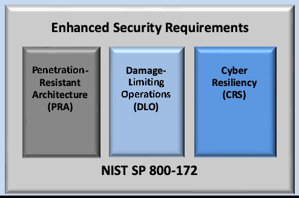
Enhanced Security Requirements
強化セキュリティ要件
未レビュー訳Penetration- Damage-
侵入- 被害-
未レビュー訳Cyber
サイバー
未レビュー訳Focus on the
〜への注力
未レビュー訳Defense-in-
多層-
未レビュー訳Resistant Limiting Resiliency
耐性 制限 レジリエンス
未レビュー訳Advanced
高度な
未レビュー訳Depth
深層
未レビュー訳Architecture Operations
アーキテクチャ運用
未レビュー訳(CRS)
(CRS)
未レビュー訳Persistent
持続的
未レビュー訳(PRA)
(PRA)
未レビュー訳(DLO)
(DLO)
未レビュー訳Protection
保護
未レビュー訳Threat
脅威
未レビュー訳Strategy
戦略
未レビュー訳NIST SP 800-172
NIST SP 800-172
未レビュー訳Foundational Security Requirements
基礎的なセキュリティ要件
未レビュー訳NIST SP 800-171
NIST SP 800-171
未レビュー訳Fig. 1. Multidimensional protection strategy
図1. 多面的な保護戦略
未レビュー訳The enhanced security requirements are derived from the security controls and control enhancements in SP 800-53 [8]. The requirements address safeguards to protect CUI from the APT and ensure the cyber resiliency of systems and organizations. The security requirements focus on the following key elements, which are essential to addressing the APT:
強化されたセキュリティ要件は、SP 800-53 [8] におけるセキュリティ管理策および管理策の強化から導出されている。これらの要件は、APTからCUIを保護し、システムおよび組織のサイバーレジリエンスを確保するためのセーフガードに対処する。このセキュリティ要件は、APTに対処する上で不可欠な、以下の主要な要素に焦点を当てている。
未レビュー訳•Applying a threat-centric approach to security requirement specification
•セキュリティ要件の仕様に脅威中心のアプローチを適用すること
未レビュー訳•Employing system and security architectures that support logical and physical isolation using system and network segmentation techniques, virtual machines, and containers
•システムおよびネットワークのセグメンテーション技術、仮想マシン、コンテナを使用して論理的および物理的な分離をサポートするシステムおよびセキュリティアーキテクチャを採用すること
未レビュー訳•Implementing dual authorization controls for critical or sensitive operations
•重要または機微な操作に対するデュアル認可制御の実施
未レビュー訳•Limiting persistent storage to isolated enclaves or domains
•永続的ストレージを隔離されたエンクレーブまたはドメインに制限すること
•Implementing a comply-to-connect approach for systems and networks
•システムおよびネットワークに対する comply-to-connect アプローチの実施
•Extending configuration management requirements by establishing authoritative sources for addressing changes to systems and system components
•システムおよびシステムコンポーネントへの変更に対処するための信頼できる情報源（authoritative sources）を確立することによる、構成管理要件の拡張
•Periodically refreshing or upgrading organizational systems and system components to a known state or developing new systems or components
•組織のシステムおよびシステムコンポーネントを既知の状態へと定期的にリフレッシュもしくはアップグレードすること、または新しいシステムやコンポーネントを開発すること
•Employing a security operations center with advanced analytics to support continuous monitoring and the protection of systems
•システムの継続的モニタリングおよび保護を支援するために、高度なアナリティクスを備えたセキュリティオペレーションセンターを採用すること
•Using deception to confuse and mislead adversaries regarding the information they use for decision-making, the value and authenticity of the information they attempt to exfiltrate, or the environment in which they are operating
•攻撃者が意思決定に使用する情報、持ち出そうと試みる情報の価値や真正性、または活動している環境に関して、攻撃者を混乱させ誤認させるためのディセプション（欺瞞）の利用
未レビュー訳Similar to the security requirements in SP 800-171 [12], the enhanced security requirements are organized into 17 families, as illustrated in Table 1.
SP 800-171 [12] におけるセキュリティ要件と同様に、強化セキュリティ要件は Table 1 に示すように 17 のファミリーに整理されている。
未レビュー訳Table 1. Enhanced security requirement families
表 1. 強化セキュリティ要件ファミリー
未レビュー訳| Access Control | Maintenance | Security Assessment and Monitoring |
| Awareness and Training | Media Protection | System and Communications Protection |
| Audit and Accountability | Personnel Security | System and Information Integrity |
| Configuration Management | Physical Protection | Planning |
| Identification and Authentication | Risk Assessment | System and Services Acquisition |
| Incident Response | Supply Chain Risk Management |
原本PDFの抜粋画像
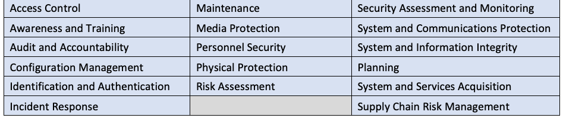
| アクセス制御 | 保守 | セキュリティ評価および監視 |
| 意識向上およびトレーニング | メディア保護 | システムおよび通信の保護 |
| 監査および説明責任 | 人的セキュリティ | システムおよび情報の完全性 |
| 構成管理 | 物理的保護 | 計画 |
| 識別および認証 | リスクアセスメント | システムおよびサービスの調達 |
| インシデント対応 | サプライチェーンリスクマネジメント |
Each family contains the security requirements related to the general security topic of the family.15 The structure of the security requirements is the same as the requirements in SP 800-171 [12]. The enhanced security requirements are distinguished from the security requirements in SP 800-171 by appending the letter “E” to the requirement numbers. However, the sequential numbering of enhanced security requirements in SP 800-172 does not mean that an enhanced security requirement (e.g., 03.01.01E) is an enhancement to the similarly numbered requirement (e.g., 03.01.01) in SP 800-171.
各ファミリーには、そのファミリーの一般的なセキュリティトピックに関連するセキュリティ要件が含まれています。15 セキュリティ要件の構造は、SP 800-171 [12] の要件と同じです。強化セキュリティ要件は、要件番号に文字「E」を付加することによって SP 800-171 のセキュリティ要件と区別されます。ただし、SP 800-172 における強化セキュリティ要件の通し番号は、強化セキュリティ要件（例：03.01.01E）が SP 800-171 の同様の番号が付けられた要件（例：03.01.01）の強化版であることを意味するものではありません。
未レビュー訳Organization-defined parameters (ODPs) are used in certain enhanced security requirements. ODPs provide flexibility in implementation through the use of assignment and selection operations to allow federal agencies and nonfederal organizations to specify values for the designated parameters in the requirements.16 Assignment and selection operations provide the capability to customize the enhanced security requirements based on specific protection needs.
組織定義パラメータ（ODP）は、特定の強化セキュリティ要件で使用されます。ODPは、連邦機関および非連邦組織が要件内の指定されたパラメータの値を指定できるように代入操作および選択操作を使用することにより、実装における柔軟性を提供します。16 代入操作および選択操作は、特定の保護ニーズに基づいて強化セキュリティ要件をカスタマイズする機能を提供します。
未レビュー訳The determination of ODP values can be guided and informed by laws, Executive Orders, directives, regulations, policies, standards, guidance, or mission and business needs. Once specified, the values for the ODPs become part of the requirement. A discussion section is included with each requirement. It is derived from the control discussion section in SP 800-53 [8] and provides additional information to facilitate the implementation and assessment of the requirement. The discussion section is informative, not normative. It is not intended to extend the scope of a requirement or influence the solutions that organizations may implement to satisfy a requirement. The use of examples is notional, not exhaustive, and does not reflect the potential options available to organizations. If applicable, the security requirement in SP 800-171 [12] that is enhanced by the requirement is noted in this section.
ODP値の決定は、法律、大統領令、指令、規制、ポリシー、標準、ガイダンス、またはミッションおよびビジネスのニーズによって導かれ、情報が提供されます。一度指定されると、ODPの値は要件の一部となります。各要件には討議（discussion）セクションが含まれています。これは SP 800-53 [8] の管理策の討議セクションから派生したものであり、要件の実装および評価を促進するための追加情報を提供します。討議セクションは参考情報（informative）であり、規定（normative）ではありません。これは、要件の適用範囲を拡張したり、組織が要件を満たすために実装する可能性のあるソリューションに影響を与えたりすることを意図したものではありません。例の使用は概念的なものであり、網羅的なものではなく、組織が利用可能な潜在的な選択肢を反映したものでもありません。該当する場合、その要件によって強化される SP 800-171 [12] のセキュリティ要件がこのセクションに記載されます。
未レビュー訳A protection strategy section describes which of the three elements of the multidimensional protection strategy (i.e., penetration-resistant architecture [PRA], damage-limiting operations [DLO], and cyber resiliency [CRS]) are addressed by the enhanced security requirement.
保護戦略セクションでは、多次元保護戦略の3つの要素（すなわち、侵入耐性アーキテクチャ [PRA]、損害制限運用 [DLO]、およびサイバーレジリエンス [CRS]）のうち、どれが強化セキュリティ要件によって対処されるかを説明する。
An adversary effects section describes the potential effects of implementing the enhanced security requirement on risk, specifically by reducing the likelihood of the occurrence of threat events, the ability of threat events to cause harm, and the extent of that harm. Five desired effects on the adversary can be identified: preclude, expose, redirect, impede, and limit. Each adversary effect is further decomposed to include specific impacts on risk and expected results. The adversary effects are described in SP 800-160v2, (Volume 2) [14]and in Appendix D.
敵対者への影響（adversary effects）のセクションでは、強化セキュリティ要件の実装がリスクに及ぼす潜在的な影響、具体的には脅威イベントの発生可能性、脅威イベントが害をもたらす能力、およびその害の程度の低減について説明する。敵対者に対する5つの望ましい影響（阻止（preclude）、暴露（expose）、方向転換（redirect）、妨害（impede）、制限（limit））を特定できる。それぞれの敵対者への影響はさらに細分化され、リスクに対する具体的な影響と期待される結果が含まれる。敵対者への影響は、SP 800-160v2（Volume 2）[14]および付録Dに記載されている。
Finally, a references section lists the source controls17 from SP 800-53 [8] that are associated with the enhanced security requirement. The hyperlink associated with each control provides access to the NIST Cybersecurity and Privacy Reference Tool (CPRT),18 which includes references to a variety of supporting technical publications. The structure and content of an enhanced security requirement is provided in the example below.
最後に、参考文献（references）セクションには、強化セキュリティ要件に関連付けられたSP 800-53 [8]のソース管理策17がリストされています。各管理策に関連付けられたハイパーリンクからは、NISTサイバーセキュリティおよびプライバシー参照ツール（CPRT）18へのアクセスが提供され、これにはさまざまな裏付けとなる技術的刊行物への参照が含まれます。強化セキュリティ要件の構造と内容は、以下の例に示されています。
未レビュー訳03.13.08E Decoys
03.13.08E デコイ（Decoys）
未レビュー訳Include components within organizational systems specifically designed to be the target of malicious attacks for detecting, deflecting, and analyzing such attacks.
悪意のある攻撃を検知し、逸らし、分析するために、そうした攻撃の標的となるよう特別に設計されたコンポーネントを組織のシステム内に含める。
DISCUSSION
討議
Decoys (i.e., honeypots, honeynets, or deception nets) are established to attract adversaries and deflect attacks away from the operational systems that support organizational missions and business functions. The use of decoys requires some supporting isolation measures to ensure that any deflected malicious code does not infect organizational systems. This requirement does not enhance a specific requirement in SP 800-171 but can be used to strengthen the protection of CUI associated with critical programs or high value assets.
デコイ（すなわち、ハニーポット、ハニーネット、または欺瞞ネット）は、敵対者を引き付け、組織のミッションや業務機能を支える運用システムから攻撃を逸らすために構築される。デコイの使用には、逸らされた悪意のあるコードが組織のシステムに感染しないことを保証するための、何らかの裏付けとなる分離措置が必要である。この要件はSP 800-171の特定の要件を強化するものではないが、重要なプログラムまたは高価値資産に関連付けられたCUIの保護を強化するために使用できる。
PROTECTION STRATEGY
保護戦略
DLO, CRS
DLO、CRS
未レビュー訳ADVERSARY EFFECTS
敵対者への影響
Expose (Detect), Limit (Reduce)
暴露（検出）[Expose (Detect)]、制限（低減）[Limit (Reduce)]
未レビュー訳REFERENCES
参考文献
Source Control: SC-26
ソース管理策: SC-26
未レビュー訳2.3. Enhanced Security Requirement Selection
2.3. 強化セキュリティ要件の選定
Organizations19 can select the enhanced security requirements either comprehensively or selectively as part of their overarching risk management strategy. However, there are dependencies among certain requirements that may affect the selection process. The decision to select specific enhanced security requirements is based on the mission and business needs of the federal agency, group of agencies, or the Federal Government (i.e., federal entity) and is guided and informed by ongoing assessments of risk.
組織19は、包括的なリスクマネジメント戦略の一環として、包括的または選択的に強化セキュリティ要件を選定することができる。ただし、特定の要件間には、選定プロセスに影響を与える可能性のある依存関係が存在する。特定の強化セキュリティ要件を選定する決定は、連邦機関、機関グループ、または連邦政府（すなわち、連邦事業体）のミッションおよびビジネス上のニーズに基づいて行われ、継続的なリスク評価によって導かれ、情報が提供される。
未レビュー訳Federal agencies may scope the application of the enhanced security requirements as long as the needed protection is achieved, such as by applying the enhanced security requirements to the components of nonfederal systems that process, store, or transmit CUI that is associated with a critical program or high value asset; provide protection for such components; or provide a direct attack path to such components (e.g., due to established trust relationships between system components).20
連邦機関は、重要なプログラムまたは高価値資産（high value asset）に関連付けられたCUIを処理、格納、もしくは送信する非連邦システムのコンポーネントへの強化セキュリティ要件の適用、そのようなコンポーネントに対する保護の提供、または（例えばシステムコンポーネント間で確立された信頼関係に起因して）そのようなコンポーネントへの直接的な攻撃経路を提供するコンポーネントへの適用などによって、必要な保護が達成される限りにおいて、強化セキュリティ要件の適用範囲を決定することができます。20
未レビュー訳The security requirements for a nonfederal system processing, storing, or transmitting CUI that is associated with a critical program or a high value asset are conveyed to the nonfederal organization by the federal entity in a contract, grant, or other agreement. The implementation guidance associated with the security requirements is beyond the scope of this publication. Organizations have flexibility in the methods, techniques, technologies, and approaches used to satisfy the requirements.21
重要なプログラムまたは高価値資産に関連付けられたCUIを処理、格納、または送信する非連邦システムに対するセキュリティ要件は、連邦事業体によって契約、補助金、またはその他の合意文書において非連邦組織に伝達されます。セキュリティ要件に関連する実装ガイダンスは、本出版物の範囲外です。組織には、要件を満たすために使用される方法、技法、技術、およびアプローチにおいて柔軟性があります。21
未レビュー訳APPLICABILITY OF THE ENHANCED SECURITY REQUIREMENTS
強化セキュリティ要件の適用性
未レビュー訳The enhanced security requirements are implemented in addition to security requirements in SP 800-171, since those requirements are not designed to address the APT. The enhanced security requirements apply to those components of nonfederal systems that process, store, or transmit CUI or that provide protection for such components.
強化セキュリティ要件は、SP 800-171のセキュリティ要件がAPTに対処するように設計されていないため、それらの要件に加えて実装されます。強化セキュリティ要件は、CUIを処理、格納、もしくは送信する非連邦システムのコンポーネント、またはそれらのコンポーネントに対する保護を提供するコンポーネントに適用されます。
未レビュー訳There is no expectation that all of the enhanced security requirements will be selected by federal agencies implementing this guidance. The decision to select a particular set of enhanced security requirements will be based on the mission and business needs of federal agencies and guided and informed by ongoing risk assessments.
このガイダンスを実装する連邦機関によってすべての強化セキュリティ要件が選択されるという期待はありません。特定の強化セキュリティ要件のセットを選択する決定は、連邦機関のミッションおよびビジネス上のニーズに基づき、継続的なリスクアセスメントによって導かれ、情報が提供されます。
未レビュー訳The enhanced security requirements for nonfederal systems that process, store, or transmit CUI associated with critical programs or high value assets will be conveyed to nonfederal organizations by federal agencies in a contract, grant, or other agreement. The application of the enhanced security requirements to subcontractors will also be addressed by federal agencies in consultation with nonfederal organizations.
重要プログラムまたは高価値資産に関連するCUIを処理、保存、または送信する非連邦システムに対する拡張セキュリティ要件は、連邦機関により、契約、助成金、またはその他の合意において非連邦組織に伝達される。下請業者への拡張セキュリティ要件の適用についても、連邦機関が非連邦組織と協議の上で対処する。
未レビュー訳3. The Requirements
3. 要件
This section describes enhanced security requirements that are designed to protect the confidentiality, integrity, and availability of CUI in nonfederal systems and organizations. The enhanced security requirements are not required for any particular category or article of CUI. However, if a federal agency determines that CUI is associated with a critical program or a high value asset, the CUI and the system that processes, stores, or transmits such information are potential targets for the APT and, therefore, may require increased protection. Such protection is expressed through the enhanced security requirements and is mandated by a federal agency in a contract, grant, or other agreement. The enhanced security requirements are selected in addition to the foundational requirements in SP 800-171 [12]; there is no expectation that all of the enhanced security requirements will be selected by the federal agency.
本節では、非連邦システムおよび非連邦組織におけるCUIの機密性、完全性、および可用性を保護するように設計された強化セキュリティ要件について説明する。強化セキュリティ要件は、CUIの特定のカテゴリまたは品目に対して要求されるものではない。しかしながら、連邦機関が、CUIが重要プログラムまたは高価値資産に関連付けられていると判断した場合、そのCUIおよび当該情報を処理、保存、または送信するシステムはAPTの潜在的な標的となり、したがって保護の強化が必要となる可能性がある。このような保護は強化セキュリティ要件を通じて示され、契約、助成金、またはその他の合意において連邦機関によって義務付けられる。強化セキュリティ要件は、SP 800-171 [12]の基本要件に追加して選択されるものであり、すべての強化セキュリティ要件が連邦機関によって選択されることが期待されているわけではない。
Enhanced security requirements support one or more protection strategies with potential effects on adversaries. The strategies and adversary effects are included in the supplementary information for each enhanced security requirement to assist organizations in ascertaining whether the requirement is appropriate. Ideally, the selected requirements should be balanced across the three protection strategies. Selecting requirements that fall exclusively in one area could result in an unbalanced response strategy for dealing with the APT. Similarly, organizations should attempt to have as broad a set of effects on an adversary as possible, given their specific mission or business objectives.
拡張セキュリティ要件は、攻撃者に対する潜在的な効果を伴う1つ以上の保護戦略をサポートする。戦略および攻撃者への効果は、組織が要件が適切であるかを確認するのを支援するために、各拡張セキュリティ要件の補足情報に含まれている。理想的には、選択された要件は3つの保護戦略全体でバランスが取れていることが望ましい。特定の領域のみに該当する要件を選択すると、APTに対処するための対応戦略のバランスを欠く結果になりかねない。同様に、組織は、特定のミッションまたはビジネス上の目的を踏まえ、攻撃者に対して可能な限り広範な効果をもたらすよう努めるべきである。
未レビュー訳Certain enhanced security requirements have been withdrawn because they are no longer relevant, or they are covered by other requirements in SP 800-171 [12] and this publication.
一部の強化セキュリティ要件は、もはや関連性がなくなったか、あるいはSP 800-171 [12]および本書の他の要件で網羅されているため、撤回された。
ENHANCED SECURITY REQUIREMENT ASSESSMENT
拡張セキュリティ要件の評価
未レビュー訳SP 800-172A provides a set of procedures to assess the security requirements described in this publication. The assessment procedures are based on the procedures described in SP 800-53A [16].
SP 800-172Aは、本刊行物に記載されているセキュリティ要件を評価するための一連の手順を提供する。その評価手順は、SP 800-53A [16]に記載されている手順に基づいている。
未レビュー訳3.1. Access Control
3.1. アクセス制御
03.01.01E Dual Authorization
03.01.01E 二重認可
未レビュー訳Enforce dual authorization for [Assignment: organization-defined privileged commands and/or other organization-defined actions].
[Assignment: 組織が定義する特権コマンドおよび/またはその他の組織が定義するアクション]に対して二重認可を実施する。
DISCUSSION
討議
Dual authorization is also known as two-person control. Dual authorization reduces risk related to insider threats, including adversaries who have obtained credentials. Dual authorization requires the approval of two authorized individuals to execute privileged commands and/or other organizational actions that may affect the protection of CUI. To reduce the risk of collusion, organizations consider rotating dual authorization duties to other individuals as part of a separation of duties policy. Organizations also consider the risk associated with implementing dual authorization when immediate responses are necessary to ensure public and environmental safety. This requirement enhances SP 800-171 requirement 03.01.02.
二重認可はツーマンコントロール（two-person control）としても知られている。二重認可は、認証情報を取得した攻撃者を含む内部脅威に関連するリスクを低減する。二重認可では、CUIの保護に影響を与える可能性のある特権コマンドやその他の組織的アクションを実行するために、権限を与えられた2名の個人の承認を必要とする。共謀のリスクを低減するため、組織は職務分掌ポリシーの一環として、二重認可の職責を他の個人へローテーションすることを検討する。また組織は、公衆および環境の安全を確保するために即時対応が必要とされる場合に、二重認可の実装に伴うリスクも検討する。本要件は、SP 800-171の要件03.01.02を強化するものである。
未レビュー訳PROTECTION STRATEGY
保護戦略
PRA, DLO
PRA, DLO
ADVERSARY EFFECTS
敵対者への影響
Preclude (Preempt), Impede (Exert)
排除（先制）、妨害（消耗）
未レビュー訳REFERENCES
参考文献
Source Control: AC-03(02)
ソースコントロール: AC-03(02)
未レビュー訳03.01.02E Non-Organizationally Owned Systems – Restricted Use
03.01.02E 組織外所有システム – 制限付き使用
未レビュー訳Restrict the use of non-organizationally owned systems or system components to process, store, or transmit CUI using [Assignment: organization-defined restrictions].
[Assignment: 組織定義の制限] を用いて、CUIの処理、保存、または送信を行う組織外所有システムまたはシステムコンポーネントの使用を制限する。
未レビュー訳DISCUSSION
討議
Non-organizationally owned systems or system components include systems or system components owned by other organizations as well as personally owned devices. These also include systems and system components that are leased, part of subscription services, government-furnished equipment, or “bring your own” devices. There are risks to using non-organizationally owned systems or components. In some cases, the risk is sufficiently high to prohibit such use. In other cases, the use of such systems or system components may be allowed but restricted in some way. Restrictions include requiring the implementation of approved safeguards prior to authorizing connections to non-organizationally owned systems and components; limiting access to types of information, services, or applications; using virtualization techniques to limit processing and storage activities to system components that are provisioned by the organization; and agreeing to the terms and conditions for usage. This requirement enhances SP 800-171 requirement 03.01.20.
組織外所有システムまたはシステムコンポーネントには、個人所有のデバイスだけでなく、他の組織が所有するシステムまたはシステムコンポーネントも含まれる。これらには、リースされたシステムやシステムコンポーネント、サブスクリプションサービスの一部、政府支給の機器、または「私物（bring your own）」デバイスも含まれる。組織外所有システムまたはコンポーネントの使用にはリスクが存在する。場合によっては、そのリスクはこのような使用を禁止するのに十分なほど高い。また別の場合では、そのようなシステムまたはシステムコンポーネントの使用が許可されることもあるが、何らかの方法で制限される。制限には、組織外所有システムおよびコンポーネントへの接続を許可する前に承認された安全管理措置の実装を要求すること、情報、サービス、またはアプリケーションのタイプへのアクセスを制限すること、仮想化技術を使用して処理および保存活動を組織によってプロビジョニングされたシステムコンポーネントに限定すること、ならびに利用規約に同意することが含まれる。本要件は、SP 800-171要件03.01.20を強化するものである。
PROTECTION STRATEGY
保護戦略
PRA, DLO
PRA, DLO
ADVERSARY EFFECTS
敵対者への影響
Preclude (Preempt), Impede (Contain, Exert)
排除（先制）、妨害（封じ込め、行使）
未レビュー訳REFERENCES
参考文献
Source Control: AC-20(03)
ソース管理：AC-20(03)
未レビュー訳03.01.03E Withdrawn
03.01.03E 取り下げ
未レビュー訳Addressed by 03.01.09E, 03.01.10E, and 03.01.03 (SP 800-171).
03.01.09E、03.01.10E、および 03.01.03（SP 800-171）で対処。
03.01.04E Concurrent Session Control
03.01.04E 同時セッション制御
未レビュー訳Limit the number of concurrent sessions for each [Assignment: organization-defined account and/or account type] to [Assignment: organization-defined number].
[Assignment: organization-defined account and/or account type] ごとの同時セッション数を [Assignment: organization-defined number] に制限する。
DISCUSSION
討議
Organizations may define the maximum number of concurrent sessions for system accounts globally, by account type, by account, or any combination thereof. For example, organizations may limit the number of concurrent sessions for system administrators or other individuals working in particularly sensitive domains or mission-critical applications. Concurrent session control addresses concurrent sessions for system accounts. It does not, however, address concurrent sessions by single users via multiple system accounts. This requirement does not enhance a specific requirement in SP 800-171 but can be used to strengthen the protection of CUI associated with critical programs or high value assets.
組織は、システムアカウントに対する同時セッションの最大数を、システム全体、アカウント種別ごと、アカウントごと、またはそれらの任意の組み合わせで定義してよい。例えば、組織は、特に機微なドメインやミッションクリティカルなアプリケーションで作業するシステム管理者やその他の個人に対して、同時セッション数を制限してよい。同時セッション制御は、システムアカウントに対する同時セッションに対処する。ただし、単一のユーザーが複数のシステムアカウントを介して行う同時セッションには対処しない。この要件はSP 800-171の特定の要件を強化するものではないが、重要プログラムまたは高価値資産に関連するCUIの保護を強化するために使用できる。
PROTECTION STRATEGY
保護戦略
PRA
PRA
ADVERSARY EFFECTS
敵対者への影響
Preclude (Preempt), Impede (Contain, Exert)
排除（先制）、妨害（封じ込め、消耗）
未レビュー訳REFERENCES
参考文献
Source Control: AC-10
参照元コントロール: AC-10
未レビュー訳03.01.05E Automated Monitoring and Control for Remote Access
03.01.05E リモートアクセスに対する自動化された監視および制御
未レビュー訳Employ automated mechanisms to monitor and control remote access methods.
リモートアクセス方式を監視および制御するための自動化されたメカニズムを採用する。
未レビュー訳DISCUSSION
討議
Monitoring and controlling remote access methods allows organizations to detect attacks and ensure compliance with remote access policies. This is accomplished by auditing the connection activities of remote users on system components, including servers, notebook computers, workstations, smart phones, and tablets. This requirement enhances SP 800-171 requirement 03.01.02.
リモートアクセス方式を監視および制御することにより、組織は攻撃を検出し、リモートアクセスポリシーへの準拠を確保できるようになる。これは、サーバー、ノートブックコンピュータ、ワークステーション、スマートフォン、タブレットを含むシステムコンポーネント上で、リモートユーザーの接続アクティビティを監査することによって達成される。本要件は、SP 800-171の要件03.01.02を強化するものである。
未レビュー訳PROTECTION STRATEGY
保護戦略
PRA, DLO
PRA、DLO
ADVERSARY EFFECTS
敵対者への影響
Preclude (Preempt), Impede (Exert)
排除（先制）、妨害（行使）
未レビュー訳REFERENCES
参考文献
Source Control: AC-17(01)
ソースコントロール: AC-17(01)
未レビュー訳03.01.06E Protection of Remote Access Mechanism Information
03.01.06E リモートアクセス機構に関する情報の保護
未レビュー訳Protect information about remote access mechanisms from unauthorized use and disclosure.
リモートアクセス機構に関する情報を不正な使用および開示から保護する。
DISCUSSION
考察
Access to organizational information about remote access mechanisms by non-organizational entities can increase the risk of unauthorized use and disclosure. The organization considers including remote access requirements in the information exchange agreements with other organizations, as applicable. Remote access requirements can also be included in rules of behavior and access agreements. This requirement enhances SP 800-171 requirement 03.01.12.
組織外の事業体によるリモートアクセス機構に関する組織情報へのアクセスは、不正な使用や開示のリスクを高める可能性がある。組織は、該当する場合、他組織との情報交換協定にリモートアクセス要件を含めることを検討する。リモートアクセス要件は、行動規範やアクセス協定に含めることもできる。本要件は、SP 800-171の要件03.01.12を強化するものである。
未レビュー訳PROTECTION STRATEGY
保護戦略
PRA
PRA
ADVERSARY EFFECTS
敵対者への影響
Preclude (Preempt), Impede (Exert)
排除（先制）（Preclude (Preempt)）、阻止（行使）（Impede (Exert)）
未レビュー訳REFERENCES
参考文献
Source Control: AC-17(06)
ソースコントロール: AC-17(06)
未レビュー訳03.01.07E Automated Audit Actions for Account Management
03.01.07E アカウント管理のための自動化された監査アクション
未レビュー訳Use automated mechanisms to audit account creation, modification, enabling, disabling, and removal actions.
自動化されたメカニズムを使用して、アカウントの作成、変更、有効化、無効化、および削除のアクションを監査する。
DISCUSSION
考察
The use of automated mechanisms to audit account management activities provides more timely and comprehensive data to guide and inform needed actions by system administrators. Security information and event management (SIEM) tools can help automate account management audit activities. This requirement enhances SP 800-171 requirement 03.01.01.
アカウント管理アクティビティを監査するために自動化されたメカニズムを使用することで、システム管理者が必要なアクションを判断・実行するための、よりタイムリーで包括的なデータが提供される。セキュリティ情報およびイベント管理（SIEM）ツールは、アカウント管理監査アクティビティの自動化に役立つ。本要件は、SP 800-171の要件03.01.01を強化するものである。
未レビュー訳PROTECTION STRATEGY
保護戦略
PRA, DLO
PRA、DLO
ADVERSARY EFFECTS
敵対者への影響
Preclude (Preempt), Impede (Exert)
排除（先制）、妨害（行使）
未レビュー訳REFERENCES
参考文献
Source Control: AC-02(04)
ソース管理：AC-02(04)
未レビュー訳03.01.08E Account Monitoring for Atypical Usage
03.01.08E 異例な利用に関するアカウント監視
未レビュー訳a. Monitor system accounts for [Assignment: organization-defined atypical usage].
a. システムアカウントを［代入：組織が定義する異例な利用］について監視する。
未レビュー訳b. Report atypical usage of system accounts to [Assignment: organization-defined personnel or roles].
b. システムアカウントの異例な利用を[Assignment: 組織が定義する要員または役割]に報告する。
未レビュー訳DISCUSSION
考察
Atypical usage includes accessing systems at certain times of the day or from locations that are not consistent with the normal usage patterns of individuals. Monitoring for atypical usage may reveal rogue behavior by individuals or provide indicators of compromise, including evidence of an attack in progress. This requirement enhances SP 800-171 requirement 03.01.01.
異例な利用には、個人の通常の利用パターンと一致しない特定の時間帯や場所からシステムへアクセスすることが含まれる。異例な利用の監視により、個人による不正行為が明らかになったり、進行中の攻撃の証拠を含む侵害の兆候が得られたりすることがある。本要件は、SP 800-171の要件03.01.01を強化するものである。
未レビュー訳PROTECTION STRATEGY
保護戦略
DLO
DLO
ADVERSARY EFFECTS
敵対者への影響
Expose (Detect)
暴露（検知）
未レビュー訳REFERENCES
参考文献
Source Control: AC-02(12)
ソースコントロール: AC-02(12)
未レビュー訳03.01.09E Attribute-Based Access Control
03.01.09E 属性ベースのアクセス制御
未レビュー訳a. Enforce attribute-based access control policy over defined subjects and objects.
a. 定義されたサブジェクトおよびオブジェクトに対して属性ベースのアクセス制御ポリシーを適用する。
未レビュー訳b. Control access based upon [Assignment: organization-defined attributes to assume access permissions].
b. [代入: アクセス許可を引き受けるための組織定義の属性] に基づいてアクセスを制御する。
未レビュー訳DISCUSSION
考察
Attribute-based access control is an access control policy that restricts system access to authorized users based on specified organizational attributes (e.g., job function, role, identity), action attributes (e.g., read, write, delete), environmental attributes
属性ベースのアクセス制御とは、指定された組織属性（職務、役割、IDなど）、アクション属性（読み取り、書き込み、削除など）、環境属性
未レビュー訳(e.g., time of day, location), and resource attributes (e.g., document classification). Organizations can create rules based on specified attributes and the authorizations (i.e., privileges) to perform needed operations on the systems associated with organization-defined attributes and rules. When users are assigned to attributes that are defined in attribute-based access control policies or rules, they can be provisioned to a system with the appropriate privileges or dynamically granted access to a protected resource. Attribute-based access control can be implemented as either a mandatory or discretionary form of access control. This requirement enhances SP 800-171 requirement 03.01.02.
（時刻、場所など）、およびリソース属性（文書の分類など）に基づいて、認可されたユーザーにシステムアクセスを制限するアクセス制御ポリシーである。組織は、指定された属性と、組織定義の属性およびルールに関連付けられたシステム上で必要な操作を実行するための認可（すなわち特権）に基づいてルールを作成できる。ユーザーが属性ベースのアクセス制御ポリシーまたはルールで定義されている属性に割り当てられると、適切な特権を持ってシステムにプロビジョニングされたり、保護されたリソースへのアクセスが動的に付与されたりする。属性ベースのアクセス制御は、強制アクセス制御または任意アクセス制御のいずれかの形式として実装できる。この要件は、SP 800-171の要件03.01.02を強化するものである。
未レビュー訳PROTECTION STRATEGY
保護戦略
PRA
PRA
ADVERSARY EFFECTS
敵対者への影響
Preclude (Preempt), Impede (Exert)
排除（先制） (Preclude (Preempt))、妨害（消耗） (Impede (Exert))
未レビュー訳REFERENCES
参考文献
Source Control: AC-03(13)
ソース管理: AC-03(13)
未レビュー訳03.01.10E Object Security Attributes
03.01.10E オブジェクトのセキュリティ属性 (Object Security Attributes)
未レビュー訳Use [Assignment: organization-defined security attributes] associated with [Assignment: organization-defined information, source, and destination objects] to enforce [Assignment: organization-defined information flow control policies] as a basis for flow control decisions.
フロー制御の判断基準として[Assignment: organization-defined information flow control policies]を実施するために、[Assignment: organization-defined information, source, and destination objects]に関連付けられた[Assignment: organization-defined security attributes]を使用する。
DISCUSSION
考察
Organizations implement information flow control policies and enforcement mechanisms to control the flow of CUI between designated sources and destinations within systems and between connected systems. Flow control is based on the characteristics of the information and/or the information path. Enforcement occurs, for example, in boundary protection devices that employ rule sets or establish configuration settings that restrict system services, provide a packet-filtering capability based on header information, or provide a message-filtering capability based on message content. Information flow enforcement mechanisms compare the security attributes associated with information (i.e., data content and structure) and source and destination objects and respond appropriately when the enforcement mechanisms encounter information flows that are not explicitly allowed by information flow policies. Security attributes can also include source and destination addresses employed in traffic filter firewalls. Flow enforcement using explicit security attributes can be used, for example, to control the release of certain types of information. This requirement enhances SP 800-171 requirement 03.01.03.
組織は、情報フロー制御ポリシーおよび強制メカニズムを実装して、システム内および接続されたシステム間における指定された送信元と送信先の間でのCUIのフローを制御する。フロー制御は、情報の特性および／または情報経路に基づいている。強制は、例えば、システムサービスを制限するルールセットを採用したり構成設定を確立したりする境界保護デバイス、ヘッダー情報に基づいてパケットフィルタリング機能を提供するデバイス、あるいはメッセージコンテンツに基づいてメッセージフィルタリング機能を提供する境界保護デバイスにおいて行われる。情報フロー強制メカニズムは、情報（すなわち、データコンテンツおよび構造）に関連付けられたセキュリティ属性と送信元および送信先オブジェクトを比較し、情報フローポリシーによって明示的に許可されていない情報フローに強制メカニズムが遭遇した際に適切に応答する。セキュリティ属性には、トラフィックフィルターファイアウォールで採用されている送信元アドレスおよび宛先アドレスも含めることができる。明示的なセキュリティ属性を使用したフロー強制は、例えば、特定タイプの情報の公開を制御するために使用できる。本要件は、SP 800-171要件03.01.03を強化するものである。
未レビュー訳PROTECTION STRATEGY
保護戦略
PRA
PRA
ADVERSARY EFFECTS
敵対者への影響
Preclude (Preempt), Impede (Exert)
排除（先制）、妨害（行使）
未レビュー訳REFERENCES
参考文献
Source Control: AC-04(01)
ソースコントロール：AC-04(01)
未レビュー訳03.01.11E Role-Based Access Control
03.01.11E ロールベースのアクセス制御
未レビュー訳a. Enforce a role-based access control policy over defined subjects and objects.
a. 定義されたサブジェクトおよびオブジェクトに対して、ロールベースアクセス制御ポリシーを強制する。
未レビュー訳b. Control access based upon [Assignment: organization-defined roles and users authorized to assume such roles].
b. [割当て: 組織が定義するロール、およびかかるロールを引き受ける権限を与えられたユーザー] に基づいてアクセスを制御する。
未レビュー訳DISCUSSION
考察
Role-based access control (RBAC) is an access control policy that enforces access to objects and system functions based on the defined role (i.e., job function) of the subject. Organizations can create specific roles based on job functions and the authorizations (i.e., privileges) to perform needed operations on the systems associated with the organization-defined roles. When users are assigned to specific roles, they inherit the authorizations or privileges defined for those roles. RBAC simplifies privilege administration for organizations because privileges are not assigned directly to every user (which can be a large number of individuals) but are instead acquired through role assignments. RBAC can also increase security risks if individuals assigned to a role are given access to information beyond what they need to support organizational mission or business functions. RBAC can be implemented as a mandatory or discretionary form of access control. This requirement enhances SP 800-171 requirement 03.01.02.
ロールベースアクセス制御（RBAC）は、サブジェクトの定義されたロール（すなわち職務機能）に基づいてオブジェクトおよびシステム機能へのアクセスを強制するアクセス制御ポリシーである。組織は、職務機能と、組織が定義したロールに関連付けられたシステム上で必要な操作を実行するための認可（すなわち特権）に基づいて特定のロールを作成できる。ユーザーが特定のロールに割り当てられると、そのユーザーはそれらのロールに対して定義された認可または特権を継承する。RBACは、特権がすべてのユーザー（多数の個人になる可能性がある）に直接割り当てられるのではなくロールの割り当てを通じて取得されるため、組織にとって特権の管理を簡素化する。また、RBACは、ロールに割り当てられた個人が組織のミッションまたは業務機能をサポートするために必要な範囲を超えた情報へのアクセス権を与えられた場合、セキュリティリスクを増大させる可能性もある。RBACは、強制的または任意的な形式のアクセス制御として実装できる。この要件は、SP 800-171の要件03.01.02を強化するものである。
PROTECTION STRATEGY
保護戦略
PRA
PRA
ADVERSARY EFFECTS
敵対者への影響
Preclude (Preempt), Impede (Exert)
排除（先制）、妨害（行使）
未レビュー訳REFERENCES
参考文献
Source Control: AC-03(07)
ソース管理策: AC-03(07)
未レビュー訳03.01.12E Physical or Logical Separation of CUI Flows
03.01.12E CUIフローの物理的または論理的分離
未レビュー訳Separate CUI flows logically or physically using [Assignment: organization-defined mechanisms and/or techniques].
[Assignment: 組織が定義するメカニズムおよび/または技法] を使用して、CUIフローを論理的または物理的に分離する。
未レビュー訳DISCUSSION
考察
Enforcing the separation of information flows associated with defined types of data can enhance protection by ensuring that CUI is not commingled while in transit and by enabling flow control by transmission paths that are not otherwise achievable. This requirement enhances SP 800-171 requirement 03.01.03.
定義されたタイプのデータに関連する情報フローの分離を実施することで、転送中にCUIが混在しないようにし、他の方法では達成できない伝送経路によるフロー制御を可能にすることによって、保護を強化できる。本要件は、SP 800-171の要件03.01.03を強化するものである。
PROTECTION STRATEGY
保護戦略
PRA
PRA
ADVERSARY EFFECTS
敵対者への影響
Preclude (Preempt), Impede (Exert)
排除（先制）、妨害（発揮）
未レビュー訳REFERENCES
参考文献
Source Control: AC-04(21)
ソース管理策: AC-04(21)
未レビュー訳03.01.13E Metadata
03.01.13E メタデータ
未レビュー訳Enforce information flow control based on [Assignment: organization-defined metadata].
[Assignment: 組織が定義するメタデータ] に基づいて情報フロー制御を実施する。
未レビュー訳DISCUSSION
考察
Metadata is information that describes the characteristics of data. Metadata can include structural metadata that describes data structures or descriptive metadata that describes data content. The enforcement of allowed information flows based on metadata enables simpler and more effective flow control. Organizations consider the trustworthiness of metadata regarding data accuracy (i.e., knowledge that the metadata values are correct with respect to the data), data integrity (i.e., protecting against unauthorized changes to metadata tags), and the binding of metadata to the data payload (i.e., employing sufficiently strong binding techniques with appropriate assurance). This requirement enhances SP 800-171 requirement 03.01.03.
メタデータとは、データの特性を説明する情報である。メタデータには、データ構造を記述する構造メタデータや、データ内容を記述する記述メタデータを含めることができる。メタデータに基づいて許可された情報フローを実施することにより、よりシンプルで効果的なフロー制御が可能になる。組織は、データの正確性（すなわち、メタデータ値がデータに対して正しいという認識）、データの完全性（すなわち、メタデータタグへの不正な変更からの保護）、およびメタデータとデータペイロードとのバインディング（すなわち、適切な保証を伴う十分に強力なバインディング技術の採用）に関するメタデータの信頼性を考慮する。この要件は、SP 800-171の要件 03.01.03 を強化するものである。
PROTECTION STRATEGY
保護戦略
PRA
PRA
ADVERSARY EFFECTS
敵対者への影響
Preclude (Preempt), Impede (Exert)
排除（先制）、妨害（行使）
未レビュー訳REFERENCES
参考文献
Source Control: AC-04(06)
ソース管理策: AC-04(06)
未レビュー訳03.01.14E Security Policy Filters
03.01.14E セキュリティポリシーフィルター
未レビュー訳a. Enforce information flow control using [Assignment: organization-defined security policy filters] as a basis for flow control decisions for [Assignment: organization-defined information flows].
a. [割当て: 組織が定義する情報フロー] に対するフロー制御の決定の基準として [割当て: 組織が定義するセキュリティポリシーフィルター] を使用して、情報フロー制御を実施する。
未レビュー訳b. [Selection (one or more): Block; Strip; Modify; Quarantine] data after a filter processing failure in accordance with [Assignment: organization-defined security policy].
b. [割当て：組織が定義するセキュリティポリシー]に従い、フィルタ処理の失敗後にデータを[選択（1つ以上）：遮断；除去；変更；隔離]する。
未レビュー訳DISCUSSION
考察
Security policy filters for data structures check for maximum file lengths, maximum field sizes, and data/file types for structured and unstructured data. Security policy filters for data content check for specific words, enumerated values or data value ranges, and hidden content. Structured data permits the interpretation of data content by applications. Unstructured data refers to digital information without a data structure or with a data structure that does not facilitate the development of rule sets to address the criticality or sensitivity of information conveyed by the data or the flow enforcement decisions. Unstructured data consists of bitmap objects that are inherently non-language-based (e.g., image, video, or audio files) and textual objects that are based on written or printed languages. This requirement enhances SP 800-171 requirement 03.01.03.
データ構造に対するセキュリティポリシーフィルタは、構造化データおよび非構造化データについて最大ファイル長、最大フィールドサイズ、ならびにデータ／ファイルタイプをチェックする。データコンテンツに対するセキュリティポリシーフィルタは、特定の単語、列挙値またはデータ値の範囲、および隠しコンテンツをチェックする。構造化データは、アプリケーションによるデータコンテンツの解釈を可能にする。非構造化データとは、データ構造を持たないデジタル情報、またはデータによって伝達される情報の重要度や機密性、もしくはフロー強制の決定に対処するためのルールセットの策定を容易にしないデータ構造を持つデジタル情報を指す。非構造化データは、本質的に非言語ベースであるビットマップオブジェクト（画像、動画、または音声ファイルなど）と、書記言語または印刷言語に基づくテキストオブジェクトから構成される。本要件は、SP 800-171要件 03.01.03を強化する。
PROTECTION STRATEGY
保護戦略
PRA
PRA
ADVERSARY EFFECTS
敵対者への影響
Preclude (Preempt), Impede (Exert)
排除（先制）、妨害（消耗）
未レビュー訳REFERENCES
参考文献
Source Control: AC-04(08)
ソースコントロール: AC-04(08)
未レビュー訳03.01.15E Data Type Identifiers
03.01.15E データ型識別子
未レビュー訳Use [Assignment: organization-defined data type identifiers] to validate data that is essential for information flow decisions when transferring CUI between security domains.
セキュリティドメイン間でCUIを転送する際に、情報フローの決定に不可欠なデータを検証するために、[Assignment: organization-defined data type identifiers]を使用する。
未レビュー訳DISCUSSION
考察
Data type identifiers include filenames, file types, file signatures or tokens, and multiple internal file signatures or tokens. Systems only allow for the transfer of data that is compliant with data type format specifications. The identification and validation of data types is based on defined specifications associated with each allowed data format. The filename and number alone are not used for data type identification. Content is validated syntactically and semantically against its specification to ensure that it is the proper data type. This requirement enhances SP 800-171 requirement 03.01.03.
データ型識別子には、ファイル名、ファイルタイプ、ファイルシグネチャまたはトークン、および複数の内部ファイルシグネチャまたはトークンが含まれる。システムは、データ型のフォーマット仕様に準拠したデータの転送のみを許可する。データ型の識別および検証は、許可された各データフォーマットに関連付けられた定義済みの仕様に基づいている。ファイル名および番号単体では、データ型識別には使用されない。コンテンツは、適切なデータ型であることを保証するために、その仕様に照らして構文的および意味論的に検証される。本要件は、SP 800-171の要件03.01.03を強化するものである。
PROTECTION STRATEGY
保護戦略
PRA
PRA
ADVERSARY EFFECTS
敵対者への影響
Preclude (Preempt), Impede (Exert)
排除（先制）、妨害（行使）
未レビュー訳REFERENCES
参考文献
Source Control: AC-04(12)
ソース管理: AC-04(12)
未レビュー訳03.01.16E Decomposition Into Policy-Relevant Subcomponents
03.01.16E ポリシー関連サブコンポーネントへの分解
未レビュー訳Decompose CUI into [Assignment: organization-defined policy-relevant subcomponents] for submission to policy enforcement mechanisms when transferring CUI between different security domains.
異なるセキュリティドメイン間でCUIを転送する際に、ポリシー適用メカニズムへ提示するために、CUIを [Assignment: 組織が定義するポリシー関連サブコンポーネント] に分解する。
未レビュー訳DISCUSSION
考察
Decomposing CUI into policy-relevant subcomponents prior to information transfer facilitates policy decisions on source, destination, certificates, and other security-related component differentiators. Policy enforcement mechanisms apply filtering, inspection, and/or sanitization rules to the policy-relevant subcomponents of information to facilitate flow enforcement prior to transferring such information to different security domains. This requirement enhances SP 800-171 requirement 03.01.03.
情報転送の前にCUIをポリシー関連サブコンポーネントに分解することで、送信元、宛先、証明書、その他のセキュリティ関連コンポーネントの識別要素に関するポリシー決定が容易になる。ポリシー適用メカニズムは、かかる情報を異なるセキュリティドメインに転送する前に、情報のポリシー関連サブコンポーネントに対してフィルタリング、検査、および/またはサニタイズのルールを適用し、フローの強制を促進する。本要件は、SP 800-171要件03.01.03を強化するものである。
未レビュー訳PROTECTION STRATEGY
保護戦略
PRA
PRA
ADVERSARY EFFECTS
敵対者への影響
Preclude (Preempt), Impede (Exert)
排除（先制）、妨害（消耗）
未レビュー訳REFERENCES
参考文献
Source Control: AC-04(13)
ソース管理策: AC-04(13)
未レビュー訳03.01.17E Detection of Unsanctioned CUI
03.01.17E 承認されていないCUIの検出
未レビュー訳a. Examine CUI for the presence of [Assignment: organization-defined unsanctioned information] when transferring information between different security domains.
a. 異なるセキュリティドメイン間で情報を転送する際、[割当て: 組織で定義された承認されていない情報]の有無についてCUIを検査する。
未レビュー訳b. Prohibit the transfer of the CUI defined in 03.01.17E.a in accordance with the [Assignment: organization-defined security policy].
b. [割当て: 組織で定義されたセキュリティポリシー]に従い、03.01.17E.aで定義されたCUIの転送を禁止する。
未レビュー訳DISCUSSION
考察
Unsanctioned information in CUI includes malicious code, information that is inappropriate for release from the source network, information that is not authorized to be stored or processed on the system, or executable code that could disrupt or harm services or systems on the destination network. This requirement enhances SP 800-171 requirement 03.01.03.
CUI内の無認可情報には、悪意のあるコード、送信元ネットワークからの公開には不適切な情報、システム上での保存または処理が認可されていない情報、あるいは宛先ネットワーク上のサービスやシステムを妨害または損害を与える可能性のある実行可能コードが含まれる。本要件は、SP 800-171の要件03.01.03を強化するものである。
未レビュー訳PROTECTION STRATEGY
保護戦略
PRA
PRA
ADVERSARY EFFECTS
敵対者への影響
Preclude (Preempt), Impede (Exert)
Preclude（先制：Preempt）、Impede（労力強要：Exert）
未レビュー訳REFERENCES
参考文献
Source Control: AC-04(15)
ソースコントロール：AC-04(15)
未レビュー訳3.2. Awareness and Training
3.2. 意識向上及びトレーニング
03.02.01E Advanced Literacy and Awareness Training
03.02.01E 高度なリテラシー及び意識向上トレーニング
未レビュー訳a. Provide security literacy training to system users:
a. システム利用者にセキュリティリテラシートレーニングを提供する:
未レビュー訳1.On the advanced persistent threat,
1.高度で持続的な脅威（advanced persistent threat）について、
2.On recognizing suspicious communications and anomalous behavior in systems using [Assignment: organization-defined indicators of malicious code], and
2.[割当て: 組織が定義する悪意のあるコードの指標] を使用して、不審な通信およびシステム内の異常な動作を認識することについて、かつ
3.On the cyber threat environment.
3.サイバー脅威環境について。
未レビュー訳b. Update security literacy training content [Assignment: organization-defined frequency] and following [Assignment: organization-defined events].
b. セキュリティリテラシートレーニングの内容を [割当て: 組織が定義する頻度] および [割当て: 組織が定義する事象] の後に更新する。
未レビュー訳DISCUSSION
考察
An effective way to detect APTs, address the cyber threat environment, and preclude successful attacks is to provide specific literacy training for individuals. Threat literacy training includes educating individuals on the various ways that APTs can infiltrate the organization (e.g., through websites, emails, pop-ups, articles, and social engineering) and describes techniques for recognizing suspicious emails, the use of removable systems in non-secure settings, and the potential targeting of individuals at home. Personnel are also trained on what constitutes suspicious communications and how to respond to such communications. Training personnel on how to recognize anomalous behaviors in systems can provide organizations with early warning of the presence of malicious code. Recognizing anomalous behavior in systems can supplement the malicious code detection and protection tools and systems used by organizations. Since threats continue to change over time, threat literacy training is dynamic. Moreover, threat literacy training is not performed in isolation from the system operations that support organizational missions and business functions. This requirement enhances SP 800-171 requirement 03.02.01.
APTを検知し、サイバー脅威環境に対処し、攻撃の成功を阻止する効果的な方法は、個人に対して特定のリテラシートレーニングを提供することである。脅威リテラシートレーニングには、APTが組織に侵入する可能性のある多様な方法（例：ウェブサイト、電子メール、ポップアップ、記事、ソーシャルエンジニアリングなど）について個人を教育することが含まれ、不審な電子メールを認識するための技術、安全でない環境でのリムーバブルシステムの使用、および自宅にいる個人が標的とされる可能性について説明する。また、要員は、何が不審な通信に該当するか、およびそのような通信にどのように対応するかについても訓練を受ける。システムにおける異常な動作を認識する方法について要員を訓練することは、悪意のあるコードの存在に関する早期警告を組織に提供することができる。システムにおける異常な動作を認識することは、組織が使用する悪意のあるコードの検知および保護ツールやシステムを補完することができる。脅威は時間の経過とともに変化し続けるため、脅威リテラシートレーニングは動的である。さらに、脅威リテラシートレーニングは、組織のミッションや業務機能を支えるシステム運用から切り離して実施されるものではない。本要件は、SP 800-171の要件03.02.01を拡張するものである。
未レビュー訳PROTECTION STRATEGY
保護戦略
DLO, PRA
DLO, PRA
ADVERSARY EFFECTS
敵対者への影響
Preclude (Preempt), Expose (Detect)
阻止（先制）、暴露（検知）
未レビュー訳REFERENCES
参考文献
Source Controls: AT-02(04); AT-02(05); AT-02(06)
ソースコントロール: AT-02(04); AT-02(05); AT-02(06)
未レビュー訳03.02.02E Literacy and Awareness Training Practical Exercises
03.02.02E リテラシーおよび意識向上トレーニングの実践的演習
未レビュー訳Provide practical exercises in literacy training that simulate events and incidents.
イベントおよびインシデントを模擬する実践的な演習をリテラシートレーニングにおいて提供する。
DISCUSSION
討議
Practical exercises include no-notice social engineering attempts to collect information, gain unauthorized access, or simulate the adverse impact of opening malicious email attachments or invoking malicious web links via spear phishing attacks. This requirement enhances SP 800-171 requirement 03.02.01.
実践的な演習には、情報の収集、不正アクセスの取得、またはスピアフィッシング攻撃を介した悪意のある電子メールの添付ファイルの開封や悪意のあるWebリンクの呼び出しによる悪影響を模擬するための、事前通告なしのソーシャルエンジニアリングの試みが含まれる。本要件は、SP 800-171要件03.02.01を強化する。
未レビュー訳PROTECTION STRATEGY
保護戦略
DLO
DLO
ADVERSARY EFFECTS
攻撃者への影響
Preclude (Preempt), Expose (Detect)
排除（先制）、暴露（検知）
未レビュー訳REFERENCES
参考文献
Source Control: AT-02(01)
ソース管理策: AT-02(01)
未レビュー訳03.02.03E Literacy and Awareness Training Feedback
03.02.03E リテラシーおよび意識向上トレーニングのフィードバック
未レビュー訳Provide feedback on organizational training results to the following personnel [Assignment: organization-defined personnel].
組織のトレーニング結果に関するフィードバックを次の要員に提供する [Assignment: 組織が定義する要員]。
DISCUSSION
討議
Training feedback includes literacy and role-based training results, which can indicate a potentially serious problem, especially the failures of personnel in critical roles. Managers should be made aware of such situations so that they can respond accordingly. Training feedback supports the evaluation and update of organizational training content and methodology. This requirement does not enhance a specific requirement in SP 800-171 but can be used to strengthen the protection of CUI associated with critical programs or high value assets.
トレーニングのフィードバックには、リテラシーおよび役割ベースのトレーニング結果が含まれ、これらは潜在的に深刻な問題、特に重要な役割を担う要員の失敗を示す可能性がある。管理者は相応の対応ができるよう、このような状況を認識しておくべきである。トレーニングのフィードバックは、組織のトレーニング内容および方法論の評価と更新を支援する。本要件はSP 800-171の特定の要件を拡張するものではないが、重要なプログラムまたは高価値資産に関連するCUIの保護を強化するために使用できる。
未レビュー訳PROTECTION STRATEGY
保護戦略
DLO
DLO
ADVERSARY EFFECTS
攻撃者への影響
Preclude (Preempt), Expose (Detect)
排除（先制）、暴露（検知）
未レビュー訳REFERENCES
参考文献
Source Control: AT-06
ソース管理策: AT-06
未レビュー訳03.02.04E Anti-Counterfeit Training
03.02.04E 偽造品対策トレーニング
未レビュー訳Train [Assignment: organization-defined personnel or roles] to detect counterfeit system components.
偽造システムコンポーネントを検出できるよう、[Assignment: 組織が定義する要員または役割] を訓練する。
DISCUSSION
考察
System components include hardware, software, and firmware components as well as the documentation for those components. This requirement is sourced to a control tailored out of the SP 800-53B [13] moderate baseline in SP 800-171.
システムコンポーネントには、ハードウェア、ソフトウェア、ファームウェアのコンポーネントに加え、それらのコンポーネントに関する文書も含まれる。この要件は、SP 800-171においてSP 800-53B [13]のモデレートベースラインからテーラリング（調整）された管理策に由来する。
未レビュー訳PROTECTION STRATEGY
保護戦略
DLO
DLO
ADVERSARY EFFECTS
攻撃者への影響
Preclude (Preempt), Expose (Detect)
排除（先制）、暴露（検知）
未レビュー訳REFERENCES
参考文献
Source Control: SR-11(01)
ソース管理：SR-11(01)
未レビュー訳3.3. Audit and Accountability
3.3. 監査および責任追跡性
03.03.01E Protection of Audit Record Storage in Separate Physical Systems or Components
03.03.01E 個別の物理システムまたはコンポーネントにおける監査レコードストレージの保護
未レビュー訳Store audit records in a repository that is part of a physically different system or system component than the system or component being audited.
監査対象のシステムまたはコンポーネントとは物理的に異なるシステムまたはシステムコンポーネントの一部であるリポジトリに、監査記録を格納する。
DISCUSSION
討議
Storing audit records in a repository that is separate from the audited system or system component helps to ensure that a compromise of the system being audited does not also result in a compromise of the audit records. Storing audit records on separate physical systems or components preserves the confidentiality, integrity, and availability of audit records and facilitates the management of audit records as an organization-wide activity. Storing audit records on separate systems or system components applies to the initial generation and backup or long-term storage of audit records. This requirement enhances SP 800-171 requirement 03.03.08.
監査対象のシステムまたはシステムコンポーネントから分離されたリポジトリに監査記録を保存することは、監査対象のシステムが侵害されても監査記録までもが侵害される事態を防ぐのに役立つ。分離された物理システムまたはコンポーネントに監査記録を保存することは、監査記録の機密性、完全性、および可用性を保護し、組織全体の活動としての監査記録の管理を容易にする。分離されたシステムまたはシステムコンポーネントへの監査記録の保存は、監査記録の初期生成、ならびにバックアップまたは長期保存に適用される。本要件は、SP 800-171の要件03.03.08を強化するものである。
PROTECTION STRATEGY
保護戦略
DLO
DLO
ADVERSARY EFFECTS
攻撃者への影響
Preclude (Preempt), Impede (Exert)
排除（先制）、妨害（行使）
未レビュー訳REFERENCES
参考文献
Source Control: AU-09(02)
ソースコントロール: AU-09(02)
未レビュー訳03.03.02E Real-Time Alerts for Audit Processing Failures
03.03.02E 監査処理失敗に対するリアルタイムアラート
未レビュー訳Provide an alert within [Assignment: organization-defined real-time period] to [Assignment: organization-defined personnel, roles, and/or locations] when the following audit failure events occur: [Assignment: organization-defined audit logging failure events requiring real-time alerts].
次の監査失敗イベントが発生した際に、[Assignment: 組織が定義する要員、役割、および／または場所] に対して [Assignment: 組織が定義するリアルタイム期間] 以内にアラートを提供する: [Assignment: リアルタイムアラートを必要とする、組織が定義する監査ログ記録失敗イベント]。
DISCUSSION
討議
Alerts provide organizations with urgent messages. Real-time alerts provide these messages at information technology speed (i.e., the time from event detection to alert occurs in seconds or less). This requirement enhances SP 800-171 requirement 03.03.04.
アラートは組織に緊急メッセージを提供する。リアルタイムアラートは、これらのメッセージを情報技術の速度（すなわち、イベント検出からアラートまでの時間が数秒以下で発生する）で提供する。本要件は、SP 800-171の要件03.03.04を強化するものである。
未レビュー訳PROTECTION STRATEGY
保護戦略
DLO
DLO
ADVERSARY EFFECTS
敵対者への影響
Preclude (Preempt), Impede (Exert)
排除（先制）、妨害（行使）
未レビュー訳REFERENCES
参考文献
Source Control: AU-05(02)
ソースコントロール: AU-05(02)
未レビュー訳03.03.03E Dual Authorization for Audit Information and Actions
03.03.03E 監査情報およびアクションに対する二重承認
未レビュー訳Enforce dual authorization for [Selection (one or more): movement; deletion] of [Assignment: organization-defined audit information].
[割当て: 組織が定義する監査情報] の [選択 (1つ以上): 移動; 削除] に対して二重承認を実施する。
未レビュー訳DISCUSSION
考察
Dual authorization is also known as two-person control since it requires the approval of two authorized individuals to reduce the risk related to insider threat when executing audit functions. Dual authorization reduces risks related to insider threats, including adversaries who have obtained credentials. Organizations may choose different selection options for different types of audit information. To reduce the risk of collusion, organizations consider rotating dual authorization duties to other individuals. Organizations consider the risk associated with implementing dual authorization when immediate responses are necessary to ensure public and environmental safety. This requirement enhances SP 800-171 requirement 03.03.08. It is also related to requirement 03.01.01E.
二重承認は、監査機能の実行時に内部関係者の脅威に関連するリスクを低減するために2名の承認された個人の承認を必要とすることから、2名管理（ツーパーソンコントロール）としても知られる。二重承認は、認証情報を取得した敵対者を含む、内部関係者の脅威に関連するリスクを低減する。組織は、異なる種類の監査情報に対して異なる選択肢を選択してもよい。共謀のリスクを低減するため、組織は二重承認の義務を他の個人へローテーションすることを検討する。組織は、公衆および環境の安全を確保するために即時の対応が必要な場合に、二重承認の実装に伴うリスクを検討する。この要件は、SP 800-171の要件03.03.08を強化するものである。また、要件03.01.01Eにも関連している。
PROTECTION STRATEGY
保護戦略
PRA, DLO
PRA, DLO
ADVERSARY EFFECTS
攻撃者への影響
Preclude (Preempt), Impede (Exert)
Preclude (Preempt)（排除（先制））、Impede (Exert)（阻止（行使））
未レビュー訳REFERENCES
参考文献
Source Control: AU-09(05)
ソース管理：AU-09(05)
未レビュー訳03.03.04E Integrated Analysis of Audit Records
03.03.04E 監査記録の統合分析
未レビュー訳Integrate analysis of audit records with analysis of [Selection (one or more): vulnerability scanning information; performance data; system monitoring information; [Assignment: organization-defined data/information collected from other sources]] to further enhance the ability to identify inappropriate or unusual activity.
不適切または異常なアクティビティを特定する能力をさらに強化するために、監査記録の分析を[Selection (1つ以上): 脆弱性スキャン情報; パフォーマンスデータ; システム監視情報; [Assignment: 他のソースから収集された組織定義のデータ/情報]]の分析と統合する。
DISCUSSION
考察
Integrated analysis of audit records requires that the analysis of information generated by scanning, monitoring, or other data collection activities is integrated with the analysis of audit record information. Security information and event management (SIEM) tools can facilitate audit record aggregation or consolidation from multiple system components as well as audit record correlation and analysis. The use of standardized audit record analysis scripts developed by organizations (with localized script adjustments, as necessary) provides more cost-effective approaches to analyzing audit record information. The correlation of audit record information with vulnerability scanning information is important in determining the veracity of vulnerability scans of the system and in correlating attack detection events with scanning results. Correlation with performance data can uncover denial-of-service (DoS) attacks or other types of attacks that result in the unauthorized use of resources. Correlation with system monitoring information can also assist in uncovering attacks and relating audit information to operational situations. This requirement enhances SP 800-171 requirement 03.03.05.
監査記録の統合分析では、スキャン、監視、またはその他のデータ収集アクティビティによって生成された情報の分析が、監査記録情報の分析と統合されていることが求められる。セキュリティ情報およびイベント管理（SIEM）ツールは、複数のシステムコンポーネントからの監査記録の集約や統合、ならびに監査記録の相関付けおよび分析を促進できる。組織によって開発された標準化された監査記録分析スクリプトの使用（必要に応じた局所的なスクリプト調整を含む）は、監査記録情報の分析に対してより費用対効果の高いアプローチを提供する。監査記録情報と脆弱性スキャン情報の相関付けは、システムの脆弱性スキャンの信憑性を判断し、攻撃検知イベントとスキャン結果を相関付ける上で重要である。パフォーマンスデータとの相関付けは、サービス運用妨害（DoS）攻撃や、リソースの不正使用をもたらす他の種類の攻撃を明らかにする可能性がある。システム監視情報との相関付けも、攻撃を明らかにし、監査情報を運用状況に関連付けるのに役立つ場合がある。本要件は、SP 800-171の要件03.03.05を強化するものである。
未レビュー訳PROTECTION STRATEGY
保護戦略
DLO
DLO
ADVERSARY EFFECTS
敵対者への影響
Preclude (Preempt), Expose (Detect)
排除（先制）、暴露（検知）
未レビュー訳REFERENCES
参考文献
Source Control: AU-06(05)
ソース管理：AU-06(05)
未レビュー訳3.4. Configuration Management
3.4. 構成管理
03.04.01E Withdrawn
03.04.01E 取り下げ
未レビュー訳Addressed by 03.04.08E, 03.14.04E, 03.17.03E, 03.17.04E, 03.17.05E, 03.04.01 (SP 800-171), 03.04.03 (SP 800-171), and 03.04.10 (SP 800-171).
03.04.08E、03.14.04E、03.17.03E、03.17.04E、03.17.05E、03.04.01（SP 800-171）、03.04.03（SP 800-171）、および 03.04.10（SP 800-171）によって対処。
03.04.02E Automated Unauthorized Component Detection
03.04.02E 不正なコンポーネントの自動検出
未レビュー訳a. Detect the presence of unauthorized or misconfigured system components using [Assignment: organization-defined automated mechanisms].
a. [割当て: 組織が定義する自動化メカニズム] を使用して、不正または構成ミスのシステムコンポーネントの存在を検出する。
未レビュー訳b. Take the following actions when unauthorized or misconfigured components are detected: [Selection (one or more): disable network access by such components; isolate the components; notify [Assignment: organization-defined personnel or roles]].
b. 不正または構成ミスのコンポーネントが検出された場合は、次のアクションを実行する: [選択 (1つ以上): 当該コンポーネントによるネットワークアクセスを無効化する; 当該コンポーネントを隔離する; [割当て: 組織が定義する担当者または役割] に通知する]。
未レビュー訳DISCUSSION
考察
Monitoring for unauthorized or misconfigured components may be accomplished on an ongoing basis or by the periodic scanning of systems for that purpose. Automated mechanisms may also be used to prevent the connection of unauthorized or misconfigured system components. Automated mechanisms can be implemented in systems or in separate system components. When acquiring and implementing automated mechanisms, organizations consider whether such mechanisms depend on the ability of the system component to support an agent or supplicant in order to be detected since some types of components do not have or cannot support agents (e.g., IoT devices, sensors). Isolation can be achieved, for example, by placing unauthorized system components in separate domains or subnets or quarantining such components. This type of component isolation is commonly referred to as “sandboxing.” This requirement enhances SP 800-171 requirement 03.04.10.
不正または構成ミスのコンポーネントの監視は、継続的に実施することも、その目的のためにシステムの定期的なスキャンを行うことによって達成することもできる。不正または構成ミスのシステムコンポーネントの接続を防止するために自動化メカニズムを使用することもできる。自動化メカニズムは、システム内または個別のシステムコンポーネント内に実装できる。一部の種類のコンポーネントはエージェントを持たないかサポートできないため（例: IoTデバイス、センサー）、組織が自動化メカニズムを調達および実装する際には、検出されるためにシステムコンポーネントがエージェントまたはサプリカントをサポートする能力に依存しているかどうかを検討する。隔離は、例えば不正なシステムコンポーネントを個別のドメインやサブネットに配置すること、またはそのようなコンポーネントを検疫（quarantine）することによって達成できる。このタイプのコンポーネントの隔離は、一般に「サンドボックス化」と呼ばれる。この要件は、SP 800-171の要件 03.04.10 を強化するものである。
PROTECTION STRATEGY
保護戦略
PRA, DLO
PRA、DLO
ADVERSARY EFFECTS
敵対者への影響
Preclude (Expunge, Preempt); Impede (Contain); Expose (Detect)
排除（抹消、先制）、阻止（封じ込め）、暴露（検知）
未レビュー訳REFERENCES
参考文献
Source Control: CM-06(01); CM-06(02); CM-08(03)
ソースコントロール：CM-06(01)、CM-06(02)、CM-08(03)
未レビュー訳03.04.03E Automated Maintenance of System Component Inventory
03.04.03E システムコンポーネントインベントリの自動保守
未レビュー訳Maintain the currency, completeness, accuracy, and availability of the inventory of system components using [Assignment: organization-defined automated mechanisms].
[Assignment: 組織が定義する自動化メカニズム] を使用して、システムコンポーネントのインベントリの最新性、完全性、正確性、および可用性を維持する。
DISCUSSION
考察
The system component inventory includes system-specific information required for component accountability and to provide support to identify, control, monitor, and verify configuration items based on the authoritative source. The information necessary for the accountability of system components includes the system name, hardware and software component owners, hardware inventory specifications, software license information, software version numbers, and—for networked components—the machine names and network addresses. Inventory specifications include the manufacturer, supplier information, component type, date of receipt, cost, model, serial number, and physical location. System component inventory information can include historic versioning of the information that can be used to track changes in the inventory and its ownership over the lifecycle of the system component inventory. Organizations also use automated mechanisms to implement and maintain authoritative (i.e., up-to-date, complete, accurate, and available) baseline configurations for systems that include hardware and software inventory tools, configuration management tools, and network management tools. Tools can be used to track version numbers on operating systems, applications, types of software installed, and current patch levels. This requirement enhances SP 800-171 requirement 03.04.10.
システムコンポーネントのインベントリには、コンポーネントの説明責任のために、また信頼できる情報源（authoritative source）に基づいて構成項目を特定、制御、監視、検証するためのサポートを提供するために必要な、システム固有の情報が含まれる。システムコンポーネントの説明責任に必要な情報には、システム名、ハードウェアおよびソフトウェアコンポーネントの所有者、ハードウェアインベントリ仕様、ソフトウェアライセンス情報、ソフトウェアバージョン番号、そしてネットワーク接続されたコンポーネントについてはマシン名およびネットワークアドレスが含まれる。インベントリ仕様には、製造元、供給者情報、コンポーネントタイプ、受領日、コスト、モデル、シリアル番号、および物理的な場所が含まれる。システムコンポーネントのインベントリ情報には、システムコンポーネントインベントリのライフサイクルにわたってインベントリおよびその所有権の変更を追跡するために使用できる情報の過去のバージョン管理を含めることができる。組織はまた、ハードウェアおよびソフトウェアのインベントリツール、構成管理ツール、およびネットワーク管理ツールを含むシステムの信頼できる（すなわち、最新、完全、正確、かつ利用可能な）ベースライン構成を実装および維持するために、自動化されたメカニズムを使用する。ツールを使用して、オペレーティングシステム、アプリケーション、インストールされているソフトウェアのタイプ、および現在のパッチレベルに関するバージョン番号を追跡できる。この要件は、SP 800-171の要件03.04.10を拡張するものである。
未レビュー訳PROTECTION STRATEGY
保護戦略
PRA, DLO
PRA、DLO
ADVERSARY EFFECTS
敵対者への影響
Preclude (Preempt), Impede (Exert), Expose (Detect)
Preclude（先制）、Impede（労力を強いる）、Expose（検知する）
未レビュー訳REFERENCES
参考文献
Source Control: CM-08(02)
ソース管理：CM-08(02)
未レビュー訳03.04.04E Automation Support for Baseline Configuration
03.04.04E ベースライン構成のための自動化サポート
未レビュー訳Maintain the currency, completeness, accuracy, and availability of the baseline configuration of the system using [Assignment: organization-defined automated mechanisms].
[Assignment: organization-defined automated mechanisms] を使用して、システムのベースライン構成の最新性、完全性、正確性、および可用性を維持する。
未レビュー訳DISCUSSION
考察
Automated mechanisms that help organizations maintain consistent baseline configurations for systems include configuration management tools; hardware, software, and firmware inventory tools; and network management tools. Automated tools can be used to track version numbers on operating systems, applications, the types of software installed, and current patch levels. Automation support for accuracy and currency can be satisfied by the implementation of 03.04.03E for organizations that combine system component inventory and baseline configuration activities. This requirement enhances SP 800-171 requirement 03.04.01.
組織が一貫したシステムのベースライン構成を維持するのに役立つ自動化されたメカニズムには、構成管理ツール、ハードウェア、ソフトウェア、およびファームウェアのインベントリツール、ならびにネットワーク管理ツールが含まれる。自動化ツールは、オペレーティングシステム、アプリケーション、インストールされているソフトウェアのタイプ、および現在のパッチレベルに関するバージョン番号を追跡するために使用できる。正確性と最新性のための自動化サポートは、システムコンポーネントのインベントリとベースライン構成のアクティビティを組み合わせる組織の場合、03.04.03Eの実装によって満たすことができる。この要件は、SP 800-171の要件03.04.01を強化するものである。
PROTECTION STRATEGY
保護戦略
PRA, DLO
PRA、DLO
ADVERSARY EFFECTS
敵対者への影響
Preclude (Preempt), Impede (Exert), Expose (Detect)
Preclude (Preempt), Impede (Exert), Expose (Detect)
未レビュー訳REFERENCES
参考文献
Source Control: CM-02(02)
Source Control: CM-02(02)
未レビュー訳03.04.05E Dual Authorization for System Changes
03.04.05E システム変更に対する二重承認
未レビュー訳Enforce dual authorization for implementing changes to [Assignment: organization-defined system components and system-level information].
[Assignment: 組織が定義するシステムコンポーネントおよびシステムレベルの情報] に対する変更の実施について、二重承認を強制する。
未レビュー訳DISCUSSION
考察
Dual authorization is also known as two-person control. Organizations employ dual authorization to help ensure that any changes to selected system components and system-level information cannot occur unless two qualified individuals approve and implement such changes. Requiring two individuals to implement system changes provides an increased level of assurance that the proposed changes are correct implementations of approved changes. The individuals are also accountable for the changes that have been implemented. To reduce the risk of collusion, organizations consider rotating dual authorization duties to other individuals. System-level information includes operational procedures. This requirement enhances SP 800-171 requirement 03.04.05.
二重承認はツーパーソンコントロール（two-person control）としても知られている。組織は、2名の適格な個人が当該変更を承認し実施しない限り、選択されたシステムコンポーネントおよびシステムレベルの情報に対するいかなる変更も発生し得ないことを確実にするのを支援するために、二重承認を採用する。システム変更を実施するために2名の個人を要求することは、提案された変更が承認された変更の正しい実装であるというより高いレベルの保証を提供する。また、それらの個人は実施された変更に対して説明責任を負う。共謀のリスクを低減するために、組織は二重承認の職務を他の個人へローテーションすることを検討する。システムレベルの情報には運用手順が含まれる。本要件は、SP 800-171の要件03.04.05を強化するものである。
未レビュー訳PROTECTION STRATEGY
保護戦略
PRA
PRA
ADVERSARY EFFECTS
敵対者への影響
Preclude (Preempt), Impede (Exert)
排除（先制）、妨害（労力強制）
未レビュー訳REFERENCES
参考文献
Source Control: CM-05(04)
ソース管理：CM-05(04)
未レビュー訳03.04.06E Retention of Previous Configurations
03.04.06E 以前の構成の保持
未レビュー訳Retain [Assignment: organization-defined number] previous versions of baseline configurations of the system to support rollback.
ロールバックをサポートするために、システムのベースライン構成の過去のバージョンを [Assignment: organization-defined number] 保持する。
未レビュー訳DISCUSSION
考察
Retaining previous versions of baseline configurations to support rollback includes configuration files for hardware, software, and firmware, configuration records, and associated documentation. This requirement enhances SP 800-171 requirement 03.04.01.
ロールバックをサポートするためのベースライン構成の過去のバージョンの保持には、ハードウェア、ソフトウェア、およびファームウェアの構成ファイル、構成レコード、ならびに関連文書が含まれる。この要件は、SP 800-171の要件03.04.01を拡張するものである。
未レビュー訳PROTECTION STRATEGY
保護戦略
DLO, CRS
DLO、CRS
ADVERSARY EFFECTS
敵対者への影響
Preclude (Preempt), Impede (Exert), Limit (Shorten, Reduce)
排除（先制）[Preclude (Preempt)]、妨害（消耗）[Impede (Exert)]、制限（短縮、低減）[Limit (Shorten, Reduce)]
未レビュー訳REFERENCES
参考文献
Source Control: CM-02(03)
ソース管理: CM-02(03)
未レビュー訳03.04.07E Testing, Validation, and Documentation of Changes
03.04.07E 変更のテスト、検証、および文書化
未レビュー訳Test, validate, and document changes to the system before finalizing the implementation of the changes.
変更の実施を確定する前に、システムに対する変更をテスト、検証、および文書化する。
未レビュー訳DISCUSSION
考察
Changes to systems include modifications to hardware, software, or firmware components and defined configuration settings. Organizations ensure that testing does not interfere with system operations that support organizational missions and business functions. Individuals or groups that conduct the tests understand the system security policies and procedures associated with the specific facilities or processes. Operational systems may need to be taken offline or replicated to the extent feasible before testing can be conducted. If systems must be taken offline for testing, the tests are scheduled to occur during planned system outages whenever possible. If the testing cannot be conducted on operational systems, organizations employ compensating protection measures. This requirement enhances SP 800-171 requirement 03.04.03.
システムに対する変更には、ハードウェア、ソフトウェア、ファームウェアの各コンポーネントおよび定義された構成設定の修正が含まれる。組織は、テストが組織のミッションや業務機能を支えるシステム運用を妨害しないことを確実にする。テストを実施する個人またはグループは、特定の施設またはプロセスに関連付けられたシステムセキュリティ方針および手順を理解している。運用システムは、テストを実施できるようになる前に、オフラインにするか実行可能な範囲で複製する必要がある場合がある。テストのためにシステムをオフラインにする必要がある場合、テストは可能な限り計画停止期間中に実施されるようスケジュールされる。運用システム上でテストを実施できない場合、組織は代替の保護策を採用する。本要件は、SP 800-171要件03.04.03を強化するものである。
PROTECTION STRATEGY
保護戦略
PRA
PRA
ADVERSARY EFFECTS
敵対者への影響
Preclude (Preempt), Impede (Exert)
排除（先制）、妨害（行使）
未レビュー訳REFERENCES
参考文献
Source Control: CM-03(02)
ソース管理: CM-03(02)
未レビュー訳03.04.08E Centralized Repository
03.04.08E 集中リポジトリ
未レビュー訳Provide a centralized repository for the inventory of system components.
システムコンポーネントのインベントリのための集中リポジトリを提供する。
未レビュー訳DISCUSSION
考察
Organizations may implement centralized system component inventories that include components from all organizational systems. Centralized repositories of component inventories provide opportunities for efficiencies in accounting for organizational hardware, software, and firmware assets. Such repositories can help organizations rapidly identify the location and responsible individuals of system components that have been compromised, breached, or are otherwise in need of mitigation actions. This requirement enhances SP 800-171 requirement 03.04.10.
組織は、すべての組織システムからのコンポーネントを含む一元化されたシステムコンポーネントインベントリを実装してもよい。コンポーネントインベントリの一元化されたリポジトリは、組織のハードウェア、ソフトウェア、およびファームウェア資産の把握・管理における効率化の機会を提供する。このようなリポジトリは、侵害されたり、漏洩したり、あるいはその他の理由で緩和措置を必要とするシステムコンポーネントの場所や責任者を、組織が迅速に特定するのに役立つ。本要件は、SP 800-171の要件03.04.10を強化するものである。
未レビュー訳PROTECTION STRATEGY
保護戦略
PRA
PRA
ADVERSARY EFFECTS
攻撃者への影響
Preclude (Preempt), Impede (Exert)
排除（先制）、妨害（行使）
未レビュー訳REFERENCES
参考文献
Source Control: CM-08(07)
ソース管理：CM-08(07)
未レビュー訳3.5. Identification and Authentication
3.5. 識別と認証
03.05.01E Cryptographic Bidirectional Authentication
03.05.01E 暗号による双方向認証
未レビュー訳Authenticate [Assignment: organization-defined devices and/or types of devices] before establishing a system connection using bidirectional authentication that is cryptographically based.
暗号技術に基づく双方向認証を使用してシステム接続を確立する前に、[Assignment: 組織が定義するデバイスおよび/またはデバイスのタイプ]を認証する。
未レビュー訳DISCUSSION
討議
Bidirectional authentication provides stronger protection to validate the identity of other devices for connections that are of greater risk. This requirement enhances SP 800-171 requirement 03.05.02.
双方向認証は、よりリスクの高い接続に対して他のデバイスの身元を検証するための、より強固な保護を提供する。この要件は、SP 800-171の要件03.05.02を強化するものである。
PROTECTION STRATEGY
保護戦略
PRA
PRA
ADVERSARY EFFECTS
攻撃者への影響
Preclude (Preempt, Negate), Impede (Exert), Expose (Detect)
排除（先制、無効化）、妨害（消耗）、露呈（検知）
未レビュー訳REFERENCES
参考文献
Source Controls: IA-03(01)
ソースコントロール: IA-03(01)
未レビュー訳03.05.02E Password Managers
03.05.02E パスワードマネージャー
未レビュー訳a. Employ [Assignment: organization-defined password managers] to generate and manage passwords.
a. パスワードを生成および管理するために、[Assignment: 組織が定義するパスワードマネージャー]を採用する。
未レビュー訳b. Protect the passwords using [Assignment: organization-defined safeguards].
b. [Assignment: 組織が定義する保護策]を用いてパスワードを保護する。
未レビュー訳DISCUSSION
討議
A potential risk of using password managers is that adversaries can target the collection of passwords generated by the password manager. Therefore, the passwords require strong protection, including encrypting the passwords. This requirement enhances SP 800-171 requirement 03.05.07.
パスワードマネージャーを使用することの潜在的なリスクは、敵対者がパスワードマネージャーによって生成されたパスワードの集合を標的にする可能性があることである。したがって、パスワードの暗号化を含め、パスワードには強力な保護が必要である。本要件は、SP 800-171の要件03.05.07を強化するものである。
PROTECTION STRATEGY
保護戦略
PRA
PRA
ADVERSARY EFFECTS
敵対者への影響
Preclude (Preempt), Impede (Delay, Exert)
排除（先制）、妨害（遅延、労力強要）
未レビュー訳REFERENCES
参考文献
Source Control: IA-05(18)
ソース管理：IA-05(18)
未レビュー訳03.05.03E Device Attestation
03.05.03E デバイス構成証明
未レビュー訳Handle device identification and authentication based on attestation by [Assignment: organization-defined configuration management process].
[Assignment: organization-defined configuration management process] による構成証明に基づいて、デバイスの識別および認証を処理する。
未レビュー訳DISCUSSION
討議
Device attestation refers to the identification and authentication of a device based on its configuration and known operating state. Device attestation can be determined via a cryptographic hash of the device. If device attestation is the means of identification and authentication, then it is important that patches and updates to the device are handled via a configuration management process such that the patches and updates are done securely and do not disrupt identification and authentication to other devices. This requirement enhances SP 800-171 requirement 03.05.02.
デバイスアテステーションとは、構成および既知の動作状態に基づくデバイスの識別および認証を指す。デバイスアテステーションは、デバイスの暗号ハッシュを介して判定できる。デバイスアテステーションが識別および認証の手段である場合、パッチや更新が安全に行われ、他のデバイスに対する識別および認証を妨害しないよう、デバイスへのパッチや更新が構成管理プロセスを通じて処理されることが重要である。本要件は、SP 800-171の要件03.05.02を強化するものである。
PROTECTION STRATEGY
保護戦略
PRA
PRA
ADVERSARY EFFECTS
攻撃者への影響
Preclude (Preempt), Impede (Exert), Expose (Detect)
排除（先制）、妨害（消耗）、露呈（検知）
未レビュー訳REFERENCES
参考文献
Source Control: IA-03(04)
ソース管理：IA-03(04)
未レビュー訳03.05.04E No Embedded Unencrypted Static Authenticators
03.05.04E 暗号化されていない静的認証情報の埋め込み禁止
未レビュー訳Ensure that unencrypted static authenticators are not embedded in applications or other forms of static storage.
暗号化されていない静的認証器が、アプリケーションまたはその他の形式の静的ストレージに埋め込まれないようにする。
DISCUSSION
考察
In addition to applications, other forms of static storage include access scripts and function keys. Organizations exercise caution when determining whether embedded or stored authenticators are encrypted or unencrypted. If authenticators are used in the manner stored, then those representations are considered unencrypted authenticators. This requirement enhances SP 800-171 requirement 03.05.07.
静的ストレージのその他の形式には、アプリケーションに加えて、アクセススクリプトやファンクションキーが含まれる。組織は、埋め込まれた、または保存された認証器が暗号化されているか暗号化されていないかを判断する際に注意を払う。認証器が保存された状態のまま使用される場合、それらの表現は暗号化されていない認証器とみなされる。本要件は、SP 800-171の要件03.05.07を強化するものである。
PROTECTION STRATEGY
保護戦略
PRA
PRA
ADVERSARY EFFECTS
攻撃者への影響
Preclude (Preempt), Impede (Exert)
排除（先制）、妨害（行使）
未レビュー訳REFERENCES
参考文献
Source Control: IA-05(07)
ソースコントロール: IA-05(07)
未レビュー訳03.05.05E Expiration of Cached Authenticators
03.05.05E キャッシュされた認証器の有効期限切れ
未レビュー訳Prohibit the use of cached authenticators after [Assignment: organization-defined time period].
[Assignment: organization-defined time period] の経過後、キャッシュされた認証器の使用を禁止する。
DISCUSSION
討議
Cached authenticators are used to authenticate to a local machine when the network is not available. If cached authentication information is out of date, the validity of the authentication information may be questionable. This requirement enhances SP 800-171 requirement 03.05.07.
キャッシュされた認証器は、ネットワークが利用できない場合にローカルマシンへの認証を行うために使用される。キャッシュされた認証情報が最新でない場合、その認証情報の有効性に疑問が生じる可能性がある。本要件は、SP 800-171の要件03.05.07を強化するものである。
PROTECTION STRATEGY
保護戦略
PRA
PRA
ADVERSARY EFFECTS
攻撃者への影響
未レビュー訳Preclude (Preempt), Impede (Exert)
排除（先制）、妨害（行使）
未レビュー訳REFERENCES
参考文献
Source Control: IA-05(13)
ソース管理：IA-05(13)
未レビュー訳03.05.06E Identity Proofing
03.05.06E 身元確認（Identity Proofing）
未レビュー訳a. Identity proof users that require accounts for logical access to systems based on appropriate identity assurance level requirements as specified in applicable standards and guidelines.
a. 適用される標準およびガイドラインで指定されている適切な身元保証レベル要件に基づき、システムへの論理的アクセスのためのアカウントを必要とするユーザーの身元確認を行う。
未レビュー訳b. Resolve user identities to a unique individual.
b. ユーザーの身元を一意の個人に特定・解決する。
未レビュー訳c. Collect, validate, and verify identity evidence.
c. 身元証拠を収集、検証、および確認する。
未レビュー訳DISCUSSION
考察
Identity proofing is the process of collecting, validating, and verifying user identity information to establish credentials for accessing a system. Identity proofing is intended to mitigate threats to the registration of users and the establishment of their accounts. Resolving user identities ensures that each user identity belongs to a unique individual. Organizations may be subject to laws, Executive Orders, directives, regulations, or policies that address the collection of identity evidence. An example of an applicable guideline that covers identity proofing is SP 800-63 [27]. This requirement is sourced to a control tailored out of the SP 800-53B [13] moderate baseline in SP 800-171.
身元確認（Identity proofing）は、システムにアクセスするためのクレデンシャルを確立するために、ユーザーの身元情報を収集、妥当性確認、検証するプロセスである。身元確認は、ユーザーの登録およびアカウントの確立に対する脅威を緩和することを目的としている。ユーザーの身元を特定（解決）することで、各ユーザーの身元が一意の個人に帰属することが保証される。組織は、身元証拠の収集を扱う法律、大統領令、指令、規制、またはポリシーの対象となる場合がある。身元確認を対象とする適用可能なガイドラインの例として、SP 800-63 [27] がある。この要件は、SP 800-171 において SP 800-53B [13] の中程度（moderate）ベースラインからテーラリングにより除外された（tailored out）コントロールに由来している。
PROTECTION STRATEGY
保護戦略
PRA
PRA
ADVERSARY EFFECTS
敵対者への影響
Preclude (Preempt), Impede (Exert)
排除（先制）、妨害（消耗）
未レビュー訳REFERENCES
参考文献
Source Control: IA-12
ソースコントロール: IA-12
未レビュー訳03.05.07E Identity Providers and Authorization Servers
03.05.07E アイデンティティプロバイダーおよび認可サーバー
未レビュー訳Employ identity providers and authorization servers to manage user, device, and non-person entity identities, attributes, and access rights that support authentication and authorization decisions in accordance with [Assignment: organization-defined identification and authentication policy] using [Assignment: organization-defined mechanisms].
[割当て: 組織が定義する識別および認証ポリシー]に従い、[割当て: 組織が定義するメカニズム]を用いて、認証および認可の決定を支援するユーザー、デバイス、および非人型エンティティのアイデンティティ、属性、ならびにアクセス権を管理するために、アイデンティティプロバイダーおよび認可サーバーを採用する。
DISCUSSION
考察
Identity providers (both internal and external to the organization) manage user, device, and non-person entity authenticators and issue statements (often called identity assertions) that attest to the identities of other systems or system components. Authorization servers create and issue access tokens to identified and authenticated users and devices that can be used to gain access to organizational systems or information resources. For example, single sign-on (SSO) provides identity provider and authorization server functions. This requirement does not enhance a specific requirement in SP 800-171 but can be used to strengthen the protection of CUI associated with critical programs or high value assets.
アイデンティティプロバイダー（組織の内部および外部の双方）は、ユーザー、デバイス、および非人型エンティティの認証子を管理し、他のシステムまたはシステムコンポーネントのアイデンティティを証明する記述（アイデンティティ・アサーションと呼ばれることが多い）を発行する。認可サーバーは、組織のシステムまたは情報リソースへのアクセスを取得するために使用できるアクセストークンを作成し、識別および認証されたユーザーおよびデバイスに対して発行する。例えば、シングルサインオン（SSO）はアイデンティティプロバイダーおよび認可サーバーの機能を提供する。この要件はSP 800-171における特定の要件を拡張するものではないが、重要プログラムまたは重要資産に関連するCUIの保護を強化するために使用できる。
未レビュー訳PROTECTION STRATEGY
保護戦略
PRA
PRA
ADVERSARY EFFECTS
敵対者への影響
Preclude (Preempt), Impede (Exert)
排除（先制）、妨害（行使）
未レビュー訳REFERENCES
参考文献
Source Control: IA-13
ソースコントロール: IA-13
未レビュー訳3.6. Incident Response
3.6. インシデント対応
03.06.01E Security Operations Center
03.06.01E セキュリティオペレーションセンター
未レビュー訳Establish and maintain a security operations center.
セキュリティオペレーションセンターを確立し、維持する。
DISCUSSION
考察
A security operations center (SOC) is the focal point for security operations and computer network defense for an organization. The purpose of the SOC is to defend and monitor an organization’s systems and networks on an ongoing basis. The SOC is also responsible for detecting, analyzing, and responding to security incidents in a timely manner. The SOC is staffed with skilled technical and operational personnel (e.g., security analysts, incident response personnel, systems security engineers) and implements a combination of technical, management, and operational controls (including monitoring, scanning, and forensics tools) to monitor, fuse, correlate, analyze, and respond to threat and security-relevant event data from multiple sources. These sources include perimeter defenses, network devices (e.g., routers, switches), and endpoint agent data feeds. The SOC provides a holistic situational awareness capability to help organizations determine the security posture of the system and organization. A SOC capability can be obtained in a variety of ways. Larger organizations may implement a dedicated SOC, while smaller organizations may employ third-party organizations to provide this capability. This requirement enhances SP 800-171 requirement 03.06.01.
セキュリティオペレーションセンター（SOC）は、組織のセキュリティ運用およびコンピュータネットワーク防御の拠点である。SOCの目的は、組織のシステムおよびネットワークを継続的に防御および監視することである。また、SOCはセキュリティインシデントを適時に検知、分析、対応する責任を担う。SOCには、熟練した技術要員および運用要員（例：セキュリティアナリスト、インシデント対応要員、システムセキュリティエンジニア）が配置され、技術的、管理的、運用的な管理策（監視、スキャン、フォレンジックツールを含む）を組み合わせて導入することにより、複数の情報源からの脅威およびセキュリティ関連イベントデータを監視、融合、相関付け、分析、対応する。これらの情報源には、境界防御、ネットワークデバイス（例：ルーター、スイッチ）、エンドポイントエージェントのデータフィードなどが含まれる。SOCは、組織がシステムおよび組織のセキュリティ態勢を判断するのを支援するための全体的な状況認識機能を提供する。SOC機能はさまざまな方法で獲得できる。規模の大きな組織では専用のSOCを導入する場合がある一方で、規模の小さな組織ではこの機能を提供するためにサードパーティ組織を採用する場合がある。この要件は、SP 800-171の要件03.06.01を強化するものである。
未レビュー訳PROTECTION STRATEGY
保護戦略
DLO
DLO
ADVERSARY EFFECTS
敵対者への影響
Limit (Shorten, Reduce); Expose (Detect, Reveal)
制限（短縮、削減）、暴露（検知、開示）
未レビュー訳REFERENCES
参考文献
Source Control: IR-04(14)
ソース管理：IR-04(14)
未レビュー訳03.06.02E Integrated Incident Response Team
03.06.02E 統合インシデント対応チーム
未レビュー訳Establish and maintain an integrated incident response team that can be deployed to any location identified by the organization in [Assignment: organization-defined time period].
[割当て: 組織が定義する期間]内に組織が指定した任意の場所に配備可能な統合インシデント対応チームを確立し、維持する。
DISCUSSION
考察
An integrated incident response team is a group of individuals who assess, document, and respond to incidents so that organizational systems and networks can recover quickly and implement the necessary controls to avoid future incidents. Incident response team personnel include forensic and malicious code analysts, tool developers, systems security engineers, and real-time operations personnel. The incident handling capability includes performing rapid forensic preservation of evidence and analysis of and response to intrusions.
統合インシデント対応チームとは、組織のシステムやネットワークが迅速に復旧し、将来のインシデントを回避するために必要な管理策を実施できるよう、インシデントの評価、文書化、および対応を行う個人のグループである。インシデント対応チームの人員には、フォレンジックおよび悪意のあるコードのアナリスト、ツール開発者、システムセキュリティエンジニア、リアルタイム運用担当者が含まれる。インシデント処理機能には、証拠の迅速なフォレンジック保全、ならびに侵入の分析および対応の実施が含まれる。
未レビュー訳An integrated incident response team facilitates information sharing and allows organizational personnel (e.g., developers, implementers, and operators) to leverage team knowledge of the threat and implement defensive measures that enable organizations to deter intrusions more effectively. Moreover, integrated teams promote the rapid detection of intrusions, the development of appropriate mitigations, and the deployment of effective defensive measures. Integrated incident response teams are better able to identify adversary tactics, techniques, and procedures that are linked to the operations tempo or specific mission and business functions and to define responsive actions in a way that does not disrupt those mission and business functions. Incident response teams can be distributed within organizations to make the capability resilient. For some organizations, the incident response team can be a cross-organizational entity. This requirement enhances SP 800-171 requirement 03.06.01.
統合インシデント対応チームは、情報共有を促進し、組織の人員（例：開発者、実装者、運用者）が脅威に関するチームの知識を活用して、組織が侵入をより効果的に抑止できるようにする防御策を実施できるようにする。さらに、統合チームは侵入の迅速な検知、適切な緩和策の策定、および効果的な防御策の配備を促進する。統合インシデント対応チームは、作戦テンポまたは特定のミッションおよび業務機能に関連する攻撃者の戦術、技術、手順をより適切に特定し、それらのミッションや業務機能を中断させない方法で対応アクションを定義することができる。インシデント対応チームは、その機能を強靭にするために組織内に分散させることができる。一部の組織では、インシデント対応チームを組織横断的な組織とすることもできる。本要件はSP 800-171要件03.06.01を強化するものである。
PROTECTION STRATEGY
保護戦略
DLO
DLO
ADVERSARY EFFECTS
攻撃者への影響
未レビュー訳Preclude (Expunge), Impede (Contain, Exert), Limit (Shorten, Reduce), Expose (Scrutinize)
Preclude (Expunge)［排除（消去）］、Impede (Contain, Exert)［妨害（封じ込め、行使）］、Limit (Shorten, Reduce)［制限（短縮、低減）］、Expose (Scrutinize)［暴露（精査）］
未レビュー訳REFERENCES
参考文献
Source Control: IR-04(11)
Source Control: IR-04(11)
未レビュー訳03.06.03E Behavior Analysis
03.06.03E 振る舞い分析
未レビュー訳Analyze anomalous or suspected adversarial behavior in or related to [Assignment: organization-defined environments or resources].
[割当て: 組織が定義する環境またはリソース]における、またはそれらに関連する、異常な振る舞い、または敵対的であると疑われる振る舞いを分析する。
DISCUSSION
考察
If the organization maintains a deception environment, an analysis of behaviors in that environment, including resources targeted by the adversary and the timing of the incident or event, can provide significant insights into adversarial tactics, techniques, and procedures. External to a deception environment, the analysis of anomalous behavior (e.g., changes in system performance or usage patterns) or suspected adversarial behavior (e.g., changes in searches for the location of specific resources) can give the organization such insight. This requirement enhances SP 800-171 requirement 03.06.01.
組織がおとり環境（deception environment）を維持している場合、敵対者の標的となったリソースやインシデントまたはイベントのタイミングを含む、その環境内での振る舞いの分析は、敵対者の戦術、技術、手順（TTP）に関する重要な洞察を提供できる。おとり環境の外部では、異常な振る舞い（例：システムパフォーマンスや利用パターンの変化）または敵対者による疑いのある振る舞い（例：特定のリソースの場所に関する検索の変化）の分析によって、組織にそのような洞察を与えることができる。本要件は、SP 800-171の要件 03.06.01 を強化するものである。
未レビュー訳PROTECTION STRATEGY
保護戦略
DLO
DLO
ADVERSARY EFFECTS
敵対者への影響
Expose (Detect, Reveal)
晒露（検知、暴露）
未レビュー訳REFERENCES
参考文献
Source Control: IR-04(13)
ソース管理：IR-04(13)
未レビュー訳03.06.04E Automated Tracking, Data Collection, and Analysis for Incident Monitoring
03.06.04E インシデント監視のための自動化された追跡、データ収集、および分析
未レビュー訳Track incidents and collect and analyze incident information using [Assignment: organization-defined automated mechanisms].
[割当て: 組織が定義する自動化メカニズム] を使用して、インシデントを追跡し、インシデント情報を収集および分析する。
DISCUSSION
考察
Automated mechanisms for tracking incidents and collecting and analyzing incident information include electronic databases of incidents and network monitoring devices. This requirement enhances SP 800-171 requirement 03.06.02.
インシデントの追跡、ならびにインシデント情報の収集および分析を行うための自動化メカニズムには、インシデントの電子データベースやネットワーク監視デバイスが含まれる。本要件は、SP 800-171の要件03.06.02を強化するものである。
PROTECTION STRATEGY
保護戦略
PRA, DLO
PRA、DLO
ADVERSARY EFFECTS
敵対者への影響
Expose (Detect, Reveal)
暴露（検知、明らかにする）
未レビュー訳REFERENCES
参考文献
Source Control: IR-05(01)
ソース管理策: IR-05(01)
未レビュー訳3.7. Maintenance
3.7. 保守
03.07.01E Software Updates and Patches for Maintenance Tools
03.07.01E 保守ツール用のソフトウェアアップデートおよびパッチ
未レビュー訳Inspect maintenance tools to ensure the latest software updates and patches are installed.
保守ツールを検査して、最新のソフトウェアアップデートおよびパッチがインストールされていることを確実にする。
DISCUSSION
考察
Maintenance tools using outdated and/or unpatched software can provide a threat vector for adversaries and result in a significant vulnerability for organizations. This requirement enhances SP 800-171 requirement 03.07.04.
時代遅れのソフトウェアやパッチが適用されていないソフトウェアを使用する保守ツールは、攻撃者に対して脅威ベクトルを提供し、組織にとって重大な脆弱性をもたらす可能性があります。この要件は、SP 800-171の要件03.07.04を強化するものです。
未レビュー訳PROTECTION STRATEGY
保護戦略
PRA
PRA
ADVERSARY EFFECTS
攻撃者への影響
Preclude (Preempt)
排除（先制）
未レビュー訳REFERENCES
参考文献
Source Control: MA-03(06)
ソース管理: MA-03(06)
未レビュー訳3.8. Media Protection
3.8. メディアの保護
03.08.01E Dual Authorization for Media Sanitization
03.08.01E メディアのサニタイズに対する二重認可
未レビュー訳Enforce dual authorization for the sanitization of [Assignment: organization-defined system media containing CUI].
[割当て: CUIを含む、組織が定義するシステムメディア]のサニタイズに対して二重承認を強制する。
DISCUSSION
考察
Dual authorization is also known as two-person control. Dual authorization reduces risk related to insider threats, including adversaries who have obtained credentials. Organizations employ dual authorization to help ensure that the sanitization of system media cannot occur unless two technically qualified individuals conduct the designated task. Individuals who sanitize system media possess sufficient skills and expertise to determine whether the proposed sanitization reflects applicable federal and organizational standards, policies, and procedures. Dual authorization also helps to ensure that sanitization occurs as intended to protect against errors and false claims of having performed the sanitization actions. To reduce the risk of collusion, organizations consider rotating dual authorization duties to other individuals. Organizations consider the risks associated with implementing dual authorization when immediate responses are necessary to help ensure public and environmental safety. This requirement enhances SP 800-171 requirement 03.08.03.
二重認可はツーパーソンコントロール（2人による制御）としても知られている。二重認可は、認証情報を取得した攻撃者を含む内部脅威に関連するリスクを低減する。組織は、2名の技術的適格者が指定されたタスクを実施しない限りシステムメディアのサニタイズが行われないようにすることを確実にするのを支援するために、二重認可を採用する。システムメディアをサニタイズする個人は、提案されたサニタイズが適用される連邦および組織の標準、方針、および手順を反映しているかどうかを判断するのに十分なスキルと専門知識を保持している。また、二重認可は、エラーやサニタイズ処置を実行したという虚偽の主張から保護するために、サニタイズが意図されたとおりに行われることを確実にするのにも役立つ。共謀のリスクを低減するために、組織は二重認可の職務を他の個人へとローテーションさせることを検討する。組織は、公衆および環境の安全を確保するために即時の対応が必要な場合に、二重認可の実装に伴うリスクを検討する。この要件は、SP 800-171の要件03.08.03を強化するものである。
未レビュー訳PROTECTION STRATEGY
保護戦略
PRA
PRA
ADVERSARY EFFECTS
攻撃者への影響
Preclude (Preempt), Impede (Exert)
排除（先制）、妨害（労力要求）
未レビュー訳REFERENCES
参考文献
Source Control: MP-06(07)
ソース管理：MP-06(07)
未レビュー訳03.08.02E Dual Authorization for System Backup Deletion and Destruction
03.08.02E システムバックアップの削除および破棄に対する二重承認
未レビュー訳Enforce dual authorization for the deletion or destruction of [Assignment: organization-defined system backup information].
[Assignment: organization-defined system backup information] の削除または破棄に対して二重承認を強制する。
DISCUSSION
考察
Dual authorization is also known as two-person control. Dual authorization reduces risk related to insider threats, including adversaries who have obtained credentials. Dual authorization ensures that the deletion or destruction of backup information cannot occur unless two qualified individuals carry out the task. Individuals who delete or destroy backup information possess the knowledge, skills, or expertise to determine whether the proposed deletion or destruction of such information reflects organizational policies and procedures. To reduce the risk of collusion, organizations often rotate dual authorization duties among various individuals. Organizations also consider the risk associated with implementing dual authorization when immediate responses are necessary to ensure public and environmental safety. This requirement enhances SP 800-171 requirement 03.08.09.
二重承認は、2人管理（two-person control）としても知られている。二重承認は、認証情報を取得した敵対者を含む、内部不正の脅威に関連するリスクを低減する。二重承認により、2名の資格を有する担当者がタスクを実行しない限り、バックアップ情報の削除または破棄が行われないことが保証される。バックアップ情報を削除または破棄する担当者は、当該情報の削除または破棄の提案が組織のポリシーおよび手順を反映しているかどうかを判断するための知識、スキル、または専門能力を有している。共謀のリスクを低減するため、組織は多くの場合、様々な担当者の間で二重承認の職務を交代させる。また組織は、公衆および環境の安全を確保するために即座の対応が必要となる場合に、二重承認の実装に伴うリスクを考慮する。この要件は、SP 800-171の要件03.08.09を強化するものである。
PROTECTION STRATEGY
保護戦略
PRA
PRA
ADVERSARY EFFECTS
攻撃者への影響
Preclude (Preempt), Impede (Exert)
排除（先制）、妨害（行使）
未レビュー訳REFERENCES
参考文献
Source Control: CP-09(07)
ソース管理：CP-09(07)
未レビュー訳03.08.03E Testing System Backups for Reliability and Integrity
03.08.03E 信頼性および完全性のためのシステムバックアップのテスト
未レビュー訳Test backup information [Assignment: organization-defined frequency] to verify media reliability and information integrity.
メディアの信頼性と情報の完全性を検証するために、バックアップ情報をテストする [Assignment: organization-defined frequency]。
未レビュー訳DISCUSSION
考察
Organizations need assurance that backup information can be reliably retrieved. Reliability pertains to the systems and system components in which the backup information is stored, the operations used to retrieve the information, and the integrity of the information being retrieved. Independent and specialized tests can be used for each of these aspects of reliability. For example, decrypting and transporting (or transmitting) a random sample of backup files from the alternate storage or backup site and comparing the information to the same information at the primary processing site can provide such assurance. This requirement enhances SP 800-171 requirement 03.08.09.
組織は、バックアップ情報が確実に復元できるという確証を必要とする。信頼性は、バックアップ情報が保存されているシステムおよびシステムコンポーネント、情報を復元するために使用される運用、ならびに復元される情報の完全性に関係する。これら信頼性の各側面に対して、独立した専門的なテストを使用できる。例えば、代替ストレージまたはバックアップサイトからバックアップファイルのランダムサンプルを復号して移送（または送信）し、その情報を主処理サイトにある同じ情報と比較することで、そのような確証を提供できる。この要件は、SP 800-171の要件03.08.09を強化するものである。
PROTECTION STRATEGY
保護戦略
PRA, CRS
PRA、CRS
ADVERSARY EFFECTS
攻撃者への影響
Preclude (Preempt), Impede (Exert), Limit (Shorten, Reduce)
排除（先制）、妨害（行使）、制限（短縮、低減）
未レビュー訳REFERENCES
参考文献
Source Control: CP-09(01)
ソース管理策: CP-09(01)
未レビュー訳03.08.04E System Recovery and Reconstitution
03.08.04E システムの回復および再構成
未レビュー訳Provide for the recovery and reconstitution of the system to a known state within [Assignment: organization-defined time period consistent with recovery time and recovery point objectives] after a disruption, compromise, or failure.
混乱、侵害、または障害が発生した後、[Assignment: organization-defined time period consistent with recovery time and recovery point objectives] 以内にシステムを既知の状態に回復および再構成できるようにする。
DISCUSSION
考察
Recovery is executing contingency plan activities to restore organizational mission and business functions. Reconstitution occurs following recovery operations and includes activities for returning systems to fully operational states. Recovery and reconstitution operations reflect mission and business priorities; recovery point, recovery time, and reconstitution objectives; and organizational metrics consistent with contingency plan requirements. Reconstitution includes the deactivation of interim system capabilities that may have been needed during recovery operations. Reconstitution also includes assessments of fully restored system capabilities, the reestablishment of continuous monitoring activities, and activities to prepare the system and organization for future disruptions, breaches, compromises, or failures. Recovery and reconstitution capabilities can include automated mechanisms and manual procedures. Organizations establish recovery time and recovery point objectives as part of contingency planning. This requirement does not enhance a specific requirement in SP 800-171 but can be used to strengthen the protection of CUI associated with critical programs or high value assets.
復旧とは、組織のミッションおよび業務機能を回復するためにコンティンジェンシープランのアクティビティを実行することである。再建は復旧運用の後に発生し、システムを完全稼働状態に戻すためのアクティビティを含む。復旧および再建運用は、ミッションおよび業務の優先順位、目標復旧時点、目標復旧時間、および再建目標、ならびにコンティンジェンシープラン要件と整合した組織のメトリクスを反映する。再建には、復旧運用中に必要とされた可能性のある暫定的なシステム機能の停止が含まれる。また再建には、完全に復元されたシステム機能の評価、継続的モニタリング活動の再確立、ならびに将来の混乱、侵害、漏洩、または障害に対してシステムおよび組織を備えさせるためのアクティビティも含まれる。復旧および再建機能には、自動化されたメカニズムや手動の手順を含めることができる。組織は、コンティンジェンシー計画の一環として目標復旧時間および目標復旧時点を設定する。この要件はSP 800-171の特定の要件を強化するものではないが、重要プログラムまたは高価値資産に関連するCUIの保護を強化するために使用できる。
未レビュー訳PROTECTION STRATEGY
保護戦略
CRS
CRS
ADVERSARY EFFECTS
攻撃者への影響
Limit (Shorten, Reduce)
制限（短縮、削減）
未レビュー訳REFERENCES
参考文献
Source Control: CP-10
ソースコントロール：CP-10
未レビュー訳3.9. Personnel Security
3.9. 人的セキュリティ
03.09.01E Withdrawn
03.09.01E 取下げ
未レビュー訳Addressed by 03.09.01 (SP 800-171).
03.09.01 (SP 800-171) によって対処。
03.09.02E Withdrawn
03.09.02E 取下げ
未レビュー訳Addressed by 03.01.01 (SP 800-171) and 03.09.01 (SP 800-171).
03.01.01 (SP 800-171) および 03.09.01 (SP 800-171) によって対処。
03.09.03E Access Agreements
03.09.03E アクセス合意書
未レビュー訳a. Develop and document access agreements for systems processing, storing, or transmitting CUI.
a. CUIを処理、格納、または送信するシステムに関するアクセス合意書を策定し、文書化する。
未レビュー訳b. Review and update the access agreements [Assignment: organization-defined frequency].
b. アクセス合意書をレビューし、更新する [Assignment: organization-defined frequency]。
未レビュー訳c. Verify that individuals requiring access to CUI and systems processing, storing, or transmitting CUI:
c. CUI、およびCUIを処理、格納、または送信するシステムへのアクセスを必要とする個人が以下を満たすことを検証する。
未レビュー訳1.Sign appropriate access agreements prior to being granted access; and
1.アクセスを許可される前に、適切なアクセス合意書に署名すること。かつ
未レビュー訳2.Re-sign access agreements to maintain access to systems when access agreements have been updated or [Assignment: organization-defined frequency].
2.アクセス合意書が更新された場合、または[Assignment: organization-defined frequency]において、システムへのアクセスを維持するためにアクセス合意書に再署名すること。
未レビュー訳DISCUSSION
考察
Access agreements include nondisclosure agreements, acceptable use agreements, rules of behavior, and conflict-of-interest agreements. Signed access agreements include an acknowledgement that individuals have read, understand, and agree to abide by the constraints associated with systems processing, storing, or transmitting CUI to which they have authorized access. This requirement is sourced to a control tailored out of the SP 800-53B [13] moderate baseline in SP 800-171.
アクセス合意書には、秘密保持契約、利用規約合意書、利用規則（rules of behavior）、および利益相反に関する合意書が含まれる。署名されたアクセス合意書には、個人が、自身が認可されたアクセス権を持つ、CUIを処理、格納、または送信するシステムに関連する制約を読み、理解し、遵守することに同意したことの確認が含まれる。本要件は、SP 800-171においてSP 800-53B [13]の中程度（moderate）ベースラインからテーラリングにより除外された（tailored out）コントロールに由来している。
PROTECTION STRATEGY
保護戦略
PRA
PRA
ADVERSARY EFFECTS
攻撃者への影響
Preclude (Preempt)
排除（先制）
未レビュー訳REFERENCES
参考文献
Source Control: PS-06
ソース管理：PS-06
未レビュー訳03.09.04E Citizenship Requirements
03.09.04E 市民権要件
未レビュー訳Verify that individuals accessing a system that processes, stores, or transmits CUI meet [Assignment: organization-defined citizenship requirements].
CUIを処理、格納、または送信するシステムにアクセスする個人が、[割当て: 組織が定義する市民権要件]を満たしていることを検証する。
DISCUSSION
解説
Organizations may determine that individuals who need access to CUI associated with a high value asset or critical program require U.S. citizenship status. This requirement enhances SP 800-171 requirement 03.09.01.
組織は、価値の高い資産または極めて重要なプログラムに関連するCUIへのアクセスを必要とする個人に対し、米国市民権の保持を要求すると決定してもよい。この要件は、SP 800-171の要件03.09.01を強化するものである。
未レビュー訳PROTECTION STRATEGY
保護戦略
PRA
PRA
ADVERSARY EFFECTS
敵対者への影響
Preclude (Preempt)
排除（先制）
未レビュー訳REFERENCES
参考文献
Source Control: PS-03(04)
ソース管理：PS-03(04)
未レビュー訳3.10. Physical Protection
3.10. 物理的保護
未レビュー訳03.10.01E Intrusion Alarms and Surveillance Equipment
03.10.01E 侵入検知警報器および監視機器
未レビュー訳Monitor physical access to the facility where the system resides using physical intrusion alarms and surveillance equipment.
物理的な侵入検知警報器および監視機器を用いて、システムが存在する施設への物理的アクセスを監視する。
DISCUSSION
解説
Physical intrusion alarms can be used to alert security personnel when unauthorized access to the facility is attempted. Alarm systems work in conjunction with physical barriers, physical access control systems, and facility security guards by triggering a response when these other forms of security have been compromised or breached. Physical intrusion alarms can include different types of sensor devices, including motion sensors, contact sensors, and broken glass sensors. Surveillance equipment includes video cameras installed at strategic locations throughout the facility. This requirement enhances SP 800-171 requirement 03.10.02.
物理侵入警報は、施設への不正アクセスが試みられた際に警備要員へ警告するために使用できます。警報システムは、物理的障壁、物理アクセス制御システム、および施設の警備員と連携して機能し、これら他の形式のセキュリティが侵害または突破された場合に対応をトリガーします。物理侵入警報には、動体検知センサー、接触センサー、ガラス破損センサーなど、さまざまなタイプのセンサーデバイスを含めることができます。監視機器には、施設全体の戦略的な場所に設置されたビデオカメラが含まれます。本要件は、SP 800-171の要件03.10.02を強化するものです。
未レビュー訳PROTECTION STRATEGY
保護戦略
DLO
DLO
ADVERSARY EFFECTS
攻撃者への影響
Expose (Detect, Reveal)
暴露（検知、露呈）
未レビュー訳REFERENCES
参考文献
Source Control: PE-06(01)
ソース管理：PE-06(01)
未レビュー訳03.10.02E Delivery and Removal of System Components
03.10.02E システムコンポーネントの搬入および搬出
未レビュー訳a. Authorize and control [Assignment: organization-defined types of system components] entering and exiting the facility.
a. 施設に出入りする[Assignment: 組織が定義するシステムコンポーネントのタイプ]を承認および制御する。
未レビュー訳b. Maintain records of the system components.
b. 当該システムコンポーネントの記録を保持する。
未レビュー訳DISCUSSION
考察
Enforcing authorizations for the entry and exit of system components may require restricting access to delivery areas and isolating the areas from the system and media libraries. This requirement does not enhance a specific requirement in SP 800-171 but can be used to strengthen the protection of CUI associated with critical programs or high value assets.
システムコンポーネントの搬出入に対する承認の実施には、搬出入エリアへのアクセス制限や、当該エリアのシステムおよびメディアライブラリからの隔離が必要となる場合がある。この要件はSP 800-171の特定の要件を拡張するものではないが、重要なプログラムまたは高価値資産に関連するCUIの保護を強化するために使用できる。
PROTECTION STRATEGY
保護戦略
PRA
PRA
ADVERSARY EFFECTS
攻撃者への影響
Preclude (Preempt)
排除（先制）
未レビュー訳REFERENCES
参考文献
Source Control: PE-16
ソース管理：PE-16
未レビュー訳3.11. Risk Assessment
3.11. リスクアセスメント
03.11.01E Threat Awareness Program
03.11.01E 脅威認識プログラム
未レビュー訳Implement a threat awareness program that includes a cross-organization information-sharing capability for threat intelligence.
脅威インテリジェンスのための組織横断的な情報共有機能を含む脅威認識プログラムを実施する。
DISCUSSION
考察
Because of the constantly changing and increasing sophistication of adversaries, especially the advanced persistent threat (APT), it may be likely that adversaries can successfully breach or compromise organizational systems. One of the techniques that organizations can use to address this concern is to share threat information. This can include the tactics, techniques, and procedures that organizations have experienced; mitigations that organizations have found to be effective against certain types of threats; and threat intelligence (i.e., indications and warnings about threats). Threat information sharing may be bilateral or multilateral. Bilateral threat sharing includes government-to-commercial and government-to-government cooperatives. Multilateral threat sharing can include organizations taking part in threat-sharing consortia. Threat information may require special agreements and protection, or it may be freely shared. This requirement does not enhance a specific requirement in SP 800-171 but can be used to strengthen the protection of CUI associated with critical programs or high value assets.
攻撃者、特に高度で執拗な脅威（APT）が絶えず変化し高度化しているため、攻撃者が組織のシステムに侵入したり侵害したりすることに成功する可能性が高い場合がある。組織がこの懸念に対処するために使用できる技術の1つは、脅威情報の共有である。これには、組織が経験した戦術、技術、手順；組織が特定の種類の脅威に対して有効であると認めた緩和策；および脅威インテリジェンス（すなわち、脅威に関する兆候および警告）が含まれ得る。脅威情報の共有は、二者間または多者間で行われる場合がある。二者間の脅威共有には、政府と民間企業間、および政府間の協力関係が含まれる。多者間の脅威共有には、脅威共有コンソーシアムに参加する組織が含まれ得る。脅威情報には特別な合意や保護が必要となる場合もあれば、自由に共有される場合もある。この要件はSP 800-171の特定の要件を拡張するものではないが、重要なプログラムまたは高価値資産に関連するCUIの保護を強化するために使用できる。
未レビュー訳PROTECTION STRATEGY
保護戦略
DLO
DLO
ADVERSARY EFFECTS
攻撃者への影響
Preclude (Negate), Impede (Exert), Expose (Detect)
排除（無効化）、妨害（消耗）、露呈（検知）
未レビュー訳REFERENCES
参考文献
Source Controls: PM-16
ソースコントロール: PM-16
未レビュー訳03.11.02E Threat Hunting
03.11.02E 脅威ハンティング
未レビュー訳a. Establish and maintain a cyber threat-hunting capability to:
a. 以下の目的のためにサイバー脅威ハンティング能力を確立し、維持すること:
未レビュー訳1.Search for indicators of compromise in organizational systems, and
1.組織のシステム内の侵害指標（IoC）を探索すること、および
未レビュー訳2.Detect, track, and disrupt threats that evade existing safeguards.
2.既存の保護策を回避する脅威を検知、追跡、および阻止すること。
未レビュー訳b. Employ the threat-hunting capability [Assignment: organization-defined frequency].
b. 脅威ハンティング機能を[代入: 組織が定義する頻度]で採用する。
未レビュー訳DISCUSSION
解説
Threat hunting is an active means of cyber defense in contrast to traditional protection measures, such as firewalls, intrusion detection and prevention systems, quarantining malicious code in sandboxes, and Security Information and Event Management (SIEM) technologies and systems. Cyber threat hunting involves proactively searching organizational systems, networks, and infrastructure for advanced threats. The objective is to track and disrupt adversaries as early as possible in the attack sequence and to measurably improve the speed and accuracy of responses. Indications of compromise include unusual network traffic, unusual file changes, and the presence of malicious code. Threat-hunting teams leverage existing threat intelligence and may create new threat intelligence that is shared with peer organizations, Information Sharing and Analysis Organizations (ISAO), Information Sharing and Analysis Centers (ISAC), and relevant government departments and agencies. This requirement does not enhance a specific requirement in SP 800-171 but can be used to strengthen the protection of CUI associated with critical programs or high value assets.
脅威ハンティングは、ファイアウォール、侵入検知・防止システム、サンドボックス内での悪意のあるコードの隔離、セキュリティ情報およびイベント管理（SIEM）技術やシステムなどの従来の保護対策とは対照的な、積極的なサイバー防衛手段である。サイバー脅威ハンティングでは、高度な脅威を求めて組織のシステム、ネットワーク、インフラストラクチャをプロアクティブに探索することが行われる。その目的は、攻撃シーケンスのできるだけ早い段階で攻撃者を追跡・阻止し、対応の速度と精度を測定可能な形で向上させることである。侵害の兆候には、異常なネットワークトラフィック、異常なファイルの変更、悪意のあるコードの存在などが含まれる。脅威ハンティングチームは既存の脅威インテリジェンスを活用し、同業組織、情報共有分析組織（ISAO）、情報共有分析センター（ISAC）、関連する政府省庁と共有される新しい脅威インテリジェンスを作成することがある。この要件はSP 800-171の特定の要件を拡張するものではないが、重要なプログラムまたは高価値資産に関連するCUIの保護を強化するために使用できる。
未レビュー訳PROTECTION STRATEGY
保護戦略
DLO
DLO
ADVERSARY EFFECTS
攻撃者への影響
Preclude (Expunge), Limit (Shorten, Reduce), Expose (Detect, Scrutinize)
排除（消去）、制限（短縮、削減）、暴露（検知、精査）
未レビュー訳REFERENCES
参考文献
Source Control: RA-10
ソース管理: RA-10
未レビュー訳03.11.03E Predictive Cyber Analytics
03.11.03E 予測的サイバーアナリティクス
未レビュー訳Employ the following advanced automation and analytics capabilities to predict and identify risks to [Assignment: organization-defined systems or system components]: [Assignment: organization-defined advanced automation and analytics capabilities].
[割当て: 組織が定義するシステムまたはシステムコンポーネント]に対するリスクを予測および特定するために、以下の高度な自動化およびアナリティクス機能を採用する: [割当て: 組織が定義する高度な自動化およびアナリティクス機能]。
DISCUSSION
考察
A properly resourced security operations center (SOC) or computer incident response team (CIRT) may be overwhelmed by the volume of information generated by the proliferation of security tools and appliances unless it employs advanced automation and analytics to analyze the data. Advanced automation and predictive analytics capabilities are typically supported by artificial intelligence concepts and machine learning. Examples include automated threat discovery and response (which includes broad-based collection, context-based analysis, and adaptive response capabilities), automated workflow operations, and machine-assisted decision tools. However, sophisticated adversaries may be able to extract information related to analytic parameters and retrain the machine learning to classify malicious activity as benign. Accordingly, machine learning is augmented by human monitoring to help ensure that sophisticated adversaries are not able to conceal their activities. This requirement enhances SP 800-171 requirement 03.11.01.
適切にリソースが割り当てられたセキュリティ運用センター（SOC）またはコンピュータインシデント対応チーム（CIRT）であっても、データを分析するために高度な自動化とアナリティクスを採用しない限り、セキュリティツールやアプライアンスの急増によって生成される情報量に圧倒される可能性があります。高度な自動化および予測アナリティクス機能は、通常、人工知能の概念や機械学習によって支えられています。例としては、自動化された脅威の発見と対応（広範な収集、コンテキストベースの分析、適応型対応機能を含む）、自動化されたワークフロー運用、機械支援の意思決定ツールなどが挙げられます。しかしながら、洗練された攻撃者は分析パラメータに関連する情報を抽出し、悪意のある活動を無害として分類するように機械学習を再学習させることができる可能性があります。したがって、洗練された攻撃者が自らの活動を隠蔽できないようにするため、機械学習は人による監視によって強化されます。本要件は、SP 800-171要件 03.11.01 を強化するものです。
未レビュー訳PROTECTION STRATEGY
保護戦略
DLO
DLO
ADVERSARY EFFECTS
攻撃者への影響
Preclude (Expunge), Limit (Shorten, Reduce), Expose (Detect, Scrutinize)
排除（抹消）、制限（短縮、低減）、露呈（検知、精査）
未レビュー訳REFERENCES
参考文献
Source Control: RA-03(04)
ソース管理策：RA-03(04)
未レビュー訳03.11.04E Withdrawn
03.11.04E 取り下げ
未レビュー訳Addressed by 03.15.01E, 03.11.01 (SP 800-171), 03.11.04 (SP 800-171), and 03.15.02
03.15.01E、03.11.01（SP 800-171）、03.11.04（SP 800-171）、および03.15.02により対処
未レビュー訳(SP 800-171).
（SP 800-171）。
未レビュー訳03.11.05E Withdrawn
03.11.05E 撤回
未レビュー訳Addressed by 03.11.01E, 03.11.03E, 03.11.01 (SP 800-171), 03.11.04 (SP 800-171), 03.12.01 (SP 800-171), and 03.12.03 (SP 800-171).
03.11.01E、03.11.03E、03.11.01 (SP 800-171)、03.11.04 (SP 800-171)、03.12.01 (SP 800-171)、および 03.12.03 (SP 800-171) によって対処。
03.11.06E Withdrawn
03.11.06E 撤回
未レビュー訳Addressed by 03.12.03E, 03.11.01 (SP 800-171), 03.11.04 (SP 800-171), 03.12.01 (SP 800-171), 03.12.03 (SP 800-171), and 03.17.03 (SP 800-171).
03.12.03E、03.11.01 (SP 800-171)、03.11.04 (SP 800-171)、03.12.01 (SP 800-171)、03.12.03 (SP 800-171)、および 03.17.03 (SP 800-171) によって対処。
03.11.07E Withdrawn
03.11.07E 撤回
未レビュー訳Addressed by 03.17.01 (SP 800-171).
03.17.01 (SP 800-171) によって対処。
03.11.08E Dynamic Threat Awareness
03.11.08E 動的な脅威の認識
未レビュー訳Determine the current cyber threat environment on an ongoing basis using [Assignment: organization-defined means].
[Assignment: organization-defined means] を使用して、現在のサイバー脅威環境を継続的に特定する。
DISCUSSION
考察
The threat awareness information that is gathered feeds into the organization’s security operations to ensure that procedures are updated in response to the changing threat environment. For example, at higher threat levels, organizations may change the privilege or authentication thresholds required to perform certain operations. This requirement enhances SP 800-171 requirement 03.11.01.
収集された脅威認識情報は、変化する脅威環境に応じて手順が確実に更新されるよう、組織のセキュリティ運用に反映される。例えば、脅威レベルがより高い場合、組織は特定の操作を実行するために必要とされる特権や認証のしきい値を変更することがある。本要件は、SP 800-171の要件03.11.01を強化するものである。
PROTECTION STRATEGY
保護戦略
DLO
DLO
ADVERSARY EFFECTS
攻撃者への影響
未レビュー訳Expose (Detect, Reveal)
暴露（検出、判明）
未レビュー訳REFERENCES
参考文献
Source Control: RA-03(03)
ソース管理策: RA-03(03)
未レビュー訳03.11.09E Indicators of Compromise
03.11.09E 侵害指標（Indicators of Compromise）
未レビュー訳Discover, collect, and distribute to [Assignment: organization-defined personnel or roles], indicators of compromise provided by [Assignment: organization-defined sources].
[Assignment: organization-defined sources] から提供された侵害指標を発見、収集し、[Assignment: organization-defined personnel or roles] に配布する。
未レビュー訳DISCUSSION
考察
Indicators of compromise (IOCs) are forensic artifacts from intrusions that are identified on organizational systems at the host or network level. IOCs provide valuable information on systems that have been compromised. IOCs can include the creation of registry key values. IOCs for network traffic include universal resource locator (URL) or protocol elements that indicate malicious code command and control servers. The rapid distribution and adoption of IOCs can improve information security by reducing the time that systems and organizations are vulnerable to the same exploit or attack. Threat indicators, signatures, tactics, techniques, procedures, and other IOCs may be available via government and non-government cooperatives, including the Forum of Incident Response and Security Teams (FIRST), the Computer Emergency Response Team Coordination Center (CERT/CC), the United States Computer Emergency Readiness Team (US-CERT), and the Defense Industrial Base (DIB) Cybersecurity Information Sharing Program. This requirement enhances SP 800-171 requirement 03.14.06.
侵害指標（IOC）は、組織のシステム上のホストまたはネットワークレベルで特定される侵入のフォレンジックアーティファクトである。IOCは侵害されたシステムに関する貴重な情報を提供する。IOCにはレジストリキー値の作成などが含まれ得る。ネットワークトラフィックに関するIOCには、悪意のあるコードのコマンド＆コントロールサーバーを示すUniform Resource Locator（URL）やプロトコル要素が含まれる。IOCの迅速な配布と適用は、システムや組織が同じエクスプロイトや攻撃に対して脆弱である時間を短縮することにより、情報セキュリティを向上させることができる。脅威指標、シグネチャ、戦術、技術、手順、およびその他のIOCは、Forum of Incident Response and Security Teams（FIRST）、Computer Emergency Response Team Coordination Center（CERT/CC）、United States Computer Emergency Readiness Team（US-CERT）、Defense Industrial Base（DIB）サイバーセキュリティ情報共有プログラムなどの政府および非政府の協力体制を通じて入手できる場合がある。本要件はSP 800-171の要件03.14.06を強化するものである。
PROTECTION STRATEGY
保護戦略
DLO
DLO
ADVERSARY EFFECTS
敵対者への影響
Expose (Detect, Reveal)
暴露（検知、露呈）
未レビュー訳REFERENCES
参考文献
Source Control: SI-04(24)
ソース管理策: SI-04(24)
未レビュー訳03.11.10E Criticality Analysis
03.11.10E 重要度分析
未レビュー訳Identify critical system components and functions by performing a criticality analysis for [Assignment: organization-defined systems, system components, or system services] at [Assignment: organization-defined decision points in the system development life cycle].
[割当て: 組織が定義するシステム開発ライフサイクルの決定ポイント] において、[割当て: 組織が定義するシステム、システムコンポーネント、またはシステムサービス] に対して重要度分析を実施することにより、重要なシステムコンポーネントおよび機能を特定する。
DISCUSSION
考察
Organizations conduct a functional decomposition of a system to identify mission-critical functions and system components. The functional decomposition includes the identification of organizational missions supported by the system, the specific functions to perform those missions, and traceability to the hardware, software, and firmware components that implement those functions, including when the functions are shared by components within and external to the system. The operational environment of a system or a system component may impact its criticality, including the connections to and dependencies on other systems, devices, system-of-systems, and outsourced IT services. System components that allow unmediated access to critical system components or functions are considered critical due to the inherent vulnerabilities that such components create. Criticality analysis is performed when an architecture or design is being developed, modified, or upgraded. If such analysis is performed early and throughout the system development life cycle, organizations may be able to modify the system design to reduce the critical nature of these functions and components, such as by adding redundancy or alternate paths into the system design. This requirement is sourced to a control tailored out of the SP 800-53B [13] moderate baseline in SP 800-171.
組織は、ミッションクリティカルな機能およびシステムコンポーネントを特定するためにシステムの機能分解を実施する。機能分解には、システムによってサポートされる組織のミッションの特定、それらのミッションを実行するための特定の機能、ならびにシステム内部および外部のコンポーネントによって機能が共有されている場合を含め、それらの機能を実装するハードウェア、ソフトウェア、およびファームウェアコンポーネントへのトレーサビリティが含まれる。他のシステム、デバイス、システムオブシステムズ、および外部委託されたITサービスへの接続やそれらへの依存関係を含め、システムまたはシステムコンポーネントの運用環境がその重要度に影響を与える場合がある。重要なシステムコンポーネントまたは機能への直接的なアクセスを許可するシステムコンポーネントは、そのようなコンポーネントが生み出す固有の脆弱性のため、重要であると見なされる。重要度分析は、アーキテクチャまたは設計が開発、変更、またはアップグレードされる際に実施される。このような分析がシステム開発ライフサイクルの初期および全体を通じて実施される場合、組織はシステム設計に冗長性や代替パスを追加するなどして、これらの機能およびコンポーネントの重大な性質を低減するようにシステム設計を変更できる可能性がある。この要件は、SP 800-171においてSP 800-53B [13] の中レベルベースラインから除外（tailored out）された管理策に由来する。
未レビュー訳PROTECTION STRATEGY
保護戦略
PRA
PRA
ADVERSARY EFFECTS
敵対者への影響
Preclude (Preempt)
排除（先制）
未レビュー訳REFERENCES
参考文献
Source Control: RA-09
ソース管理：RA-09
未レビュー訳03.11.11E Discoverable Information
03.11.11E 発見可能な情報
未レビュー訳Determine information about the system that is discoverable and take [Assignment: organization-defined corrective actions].
発見可能であるシステムに関する情報を特定し、[割当て: 組織が定義する是正措置] を講じる。
DISCUSSION
考察
Discoverable information includes information that adversaries could obtain without compromising or breaching the system, such as by collecting information that the system is exposing or by conducting extensive web searches. Corrective actions include notifying organizational personnel, removing designated information, or changing the system to make the designated information less relevant or attractive to adversaries. This requirement excludes intentionally discoverable information that may be part of a decoy capability (e.g., honeypots, honeynets, or deception nets) implemented by the organization. This requirement enhances SP 800-171 requirement 03.11.02.
発見可能な情報には、システムが公開している情報を収集したり、広範なウェブ検索を行ったりするなど、敵対者がシステムを侵害または侵入することなく取得できる可能性のある情報が含まれる。是正措置には、組織の人員への通知、指定された情報の削除、または指定された情報が敵対者にとって関連性や魅力が低くなるようなシステムの変更が含まれる。この要件から、組織によって実装されたデコイ機能（例：ハニーポット、ハニーネット、または欺瞞ネット）の一部である可能性のある、意図的に発見可能とされた情報は除外される。本要件は、SP 800-171の要件03.11.02を強化するものである。
PROTECTION STRATEGY
保護戦略
DLO
DLO
ADVERSARY EFFECTS
敵対者への影響
Expose (Reveal)
露出（暴露）
未レビュー訳REFERENCES
参考文献
Source Control: RA-05(04)
ソース管理策: RA-05(04)
未レビュー訳03.11.12E Automated Means for Sharing Threat Intelligence
03.11.12E 脅威インテリジェンスを共有するための自動化された手段
未レビュー訳Employ automated mechanisms to maximize the effectiveness of sharing threat intelligence information.
脅威インテリジェンス情報の共有の効果を最大化するために、自動化されたメカニズムを採用する。
DISCUSSION
考察
To maximize the effectiveness of monitoring and sharing threat intelligence information, it is important to know what threat observables and indicators the sensors need to be searching for. By using well-established frameworks, services, and automated tools, organizations improve their ability to rapidly share and feed the relevant threat detection signatures into monitoring tools. This requirement does not enhance a specific requirement in SP 800-171 but can be used to strengthen the protection of CUI associated with critical programs or high value assets.
脅威インテリジェンス情報の監視および共有の効果を最大化するためには、センサーがどのような脅威の観測可能事象（observables）および指標（indicators）を探索する必要があるかを把握することが重要である。十分に確立されたフレームワーク、サービス、および自動化ツールを使用することにより、組織は関連する脅威検知シグネチャを迅速に共有し、監視ツールへ投入する能力を向上させる。本要件は、SP 800-171の特定の要件を強化するものではないが、重要プログラムまたは高価値資産（high value assets）に関連するCUIの保護を強化するために使用できる。
未レビュー訳PROTECTION STRATEGY
保護戦略
DLO
DLO
ADVERSARY EFFECTS
敵対者への影響
Preclude (Negate), Impede (Exert), Expose (Detect)
排除（無力化）、妨害（消耗）、露見（検知）
未レビュー訳REFERENCES
参考文献
Source Controls: PM-16(01)
ソース管理策：PM-16(01)
未レビュー訳3.12. Security Assessment and Monitoring
3.12. セキュリティ評価と監視
未レビュー訳03.12.01E Penetration Testing
03.12.01E ペネトレーションテスト
未レビュー訳Conduct penetration testing [Assignment: organization-defined frequency] on [Assignment: organization-defined systems or system components].
[Assignment: organization-defined systems or system components] に対して、ペネトレーションテストを [Assignment: organization-defined frequency] 実施する。
DISCUSSION
考察
Penetration testing is a specialized type of assessment conducted on systems or system components to identify vulnerabilities that could be exploited by adversaries. It is conducted by penetration testing agents and teams with particular skills and experience that include technical expertise in network, operating system, and application-level security. Penetration testing can be used to validate vulnerabilities or to determine a system’s penetration resistance to adversaries within specified constraints, such as time, resources, and skills. It can be conducted internally or externally on the hardware, software, or firmware components of a system and can exercise both physical and technical controls. A standard method for conducting penetration testing includes pretest analysis based on full knowledge of the system, pretest identification of potential vulnerabilities based on the pretest analysis, and testing designed to determine the exploitability of vulnerabilities. All parties agree to the specified rules of engagement before the commencement of penetration testing. Organizations may also supplement penetration testing with red team exercises. Red teams attempt to duplicate the actions of adversaries in carrying out attacks against organizations and provide an in-depth analysis of security-related weaknesses or deficiencies. Organizations correlate the rules of engagement for penetration tests and red teaming exercises (if used) with the tools, techniques, and procedures that they anticipate adversaries may employ. This requirement does not enhance a specific requirement in SP 800-171 but can be used to strengthen the protection of CUI associated with critical programs or high value assets.
ペネトレーションテストは、敵対者によって悪用される可能性のある脆弱性を特定するために、システムまたはシステムコンポーネントに対して実施される特殊なタイプの評価である。これは、ネットワーク、オペレーティングシステム、およびアプリケーションレベルのセキュリティにおける専門知識を含む、特定のスキルと経験を備えたペネトレーションテストのエージェントやチームによって実施される。ペネトレーションテストは、脆弱性を検証するため、あるいは時間、リソース、スキルなどの指定された制約内で敵対者に対するシステムの侵入耐性を判断するために使用できる。これは、システムのハードウェア、ソフトウェア、またはファームウェアのコンポーネントに対して内部的または外部的に実施することができ、物理的統制と技術的統制の両方を機能させることができる。ペネトレーションテストを実施するための標準的な方法には、システムの完全な知識に基づいたテスト前の分析、そのテスト前の分析に基づいた潜在的な脆弱性のテスト前の特定、および脆弱性の悪用可能性を判断するように設計されたテストが含まれる。すべての関係者は、ペネトレーションテストを開始する前に、指定された交戦規定に合意する。組織はまた、ペネトレーションテストをレッドチーム演習で補完することもできる。レッドチームは、組織に対する攻撃を実行する敵対者の行動を再現することを試み、セキュリティ関連の弱点や不備の詳細な分析を提供する。組織は、ペネトレーションテストおよびレッドチーム演習（使用される場合）の交戦規定を、敵対者が採用する可能性があると予想されるツール、技術、および手順と関連付ける。この要件はSP 800-171の特定の要件を拡張するものではないが、重要プログラムまたは重要資産（high value assets）に関連付けられたCUIの保護を強化するために使用できる。
未レビュー訳PROTECTION STRATEGY
保護戦略
PRA, DLO
PRA, DLO
ADVERSARY EFFECTS
敵対者への影響
Preclude (Preempt), Impede (Exert), Expose (Detect)
排除（先制）、妨害（行使）、暴露（検知）
未レビュー訳REFERENCES
参考文献
Source Control: CA-08
ソースコントロール: CA-08
未レビュー訳03.12.02E Independent Assessors
03.12.02E 独立したアセッサー
未レビュー訳Use independent assessors or assessment teams to conduct security requirement assessments.
セキュリティ要件アセスメントを実施するために、独立したアセッサーまたはアセスメントチームを使用する。
未レビュー訳DISCUSSION
考察
Independent assessors or assessment teams are individuals or groups who conduct impartial assessments of systems. Impartiality means that assessors are free from any perceived or actual conflicts of interest regarding the development, operation, sustainment, or management of the systems under assessment or the determination of security requirement effectiveness. To achieve impartiality, assessors do not create a mutual or conflicting interest with the organizations where the assessments are being conducted, assess their own work, act as management or employees of the organizations they are serving, or place themselves in positions of advocacy for the organizations acquiring their services. Independent assessments can be obtained from entities that are internal or external to organizations. Organizations determine whether the level of assessor independence provides sufficient assurance such that the assessment results are sound and can be used to make effective risk-based decisions. This requirement enhances SP 800-171 requirement 03.12.01.
独立したアセッサーまたはアセスメントチームは、システムの公平なアセスメントを実施する個人またはグループである。公平性とは、アセッサーに、アセスメント対象システムの開発、運用、維持、もしくは管理、またはセキュリティ要件の有効性の判定に関して、認識された、または実際の利益相反が一切ないことを意味する。公平性を達成するために、アセッサーは、アセスメントが実施されている組織との間で相互の利害関係や相反する利害関係を生じさせたり、自身の作業をアセスメントしたり、サービスを提供している組織の管理者もしくは従業員として行動したり、自らのサービスを調達している組織を擁護する立場に身を置いたりしない。独立したアセスメントは、組織の内部または外部の主体から取得することができる。組織は、アセッサーの独立性のレベルが、アセスメント結果が健全であり、効果的なリスクに基づく意思決定を行うために使用できるような十分な確証を提供しているかどうかを判断する。本要件は、SP 800-171の要件03.12.01を強化する。
PROTECTION STRATEGY
保護戦略
PRA
PRA
ADVERSARY EFFECTS
敵対者への影響
Preclude (Preempt)
排除（先制阻止）
未レビュー訳REFERENCES
参考文献
Source Control: CA-02(01)
ソース管理：CA-02(01)
未レビュー訳03.12.03E Risk Monitoring
03.12.03E リスクモニタリング
未レビュー訳Ensure risk monitoring is an integral part of the continuous monitoring strategy that includes effectiveness monitoring, compliance monitoring, and change monitoring.
リスクモニタリングが、有効性モニタリング、コンプライアンスモニタリング、および変更モニタリングを含む継続的モニタリング戦略の不可欠な要素であることを確実にする。
未レビュー訳DISCUSSION
考察
Risk monitoring is guided and informed by the established organizational risk tolerance. Effectiveness monitoring determines the ongoing effectiveness of the implemented risk response measures. Compliance monitoring verifies that required risk response measures are implemented. It also verifies that security requirements are satisfied. Change monitoring identifies changes to organizational systems and environments of operation that may affect security risk. This requirement enhances SP 800-171 requirement 03.12.03.
リスクモニタリングは、確立された組織のリスク許容度によって方向付けられ、その情報に基づいて行われる。有効性モニタリングは、実施されたリスク対応策の継続的な有効性を判断する。コンプライアンスモニタリングは、要求されるリスク対応策が実施されていることを検証する。また、セキュリティ要件が満たされていることも検証する。変更モニタリングは、セキュリティリスクに影響を与える可能性のある組織のシステムおよび運用環境への変更を特定する。この要件は、SP 800-171の要件03.12.03を強化する。
PROTECTION STRATEGY
保護戦略
PRA, DLO
PRA、DLO
ADVERSARY EFFECTS
敵対者への影響
Preclude (Preempt), Impede (Exert), Expose (Detect)
排除（先制）[Preclude (Preempt)]、阻止（行使）[Impede (Exert)]、暴露（検知）[Expose (Detect)]
未レビュー訳REFERENCES
参考文献
Source Control: CA-07(04)
ソース管理：CA-07(04)
未レビュー訳03.12.04E Internal System Connections
03.12.04E 内部システム接続
未レビュー訳a. Authorize internal connections of [Assignment: organization-defined system components or classes of components] to the system.
a. [Assignment: 組織が定義するシステム構成要素または構成要素のクラス] のシステムへの内部接続を承認する。
未レビュー訳b. Document, for each internal connection, the interface characteristics, security requirements, and the nature of the information communicated.
b. 各内部接続について、インターフェースの特性、セキュリティ要件、および通信される情報の性質を文書化する。
未レビュー訳c. Terminate internal system connections after [Assignment: organization-defined conditions].
c. [Assignment: 組織が定義する条件] の後に内部システム接続を終了する。
未レビュー訳d. Review [Assignment: organization-defined frequency] the continued need for each internal connection.
d. 各内部接続の継続的な必要性を [Assignment: 組織が定義する頻度] でレビューする。
未レビュー訳DISCUSSION
考察
Internal system connections are connections between organizational systems and separate constituent system components (i.e., connections between components that are part of the same system), including components that are used for system development. Intra-system connections include connections with mobile devices, notebook and desktop computers, tablets, printers, copiers, facsimile machines, scanners, sensors, and servers. Organizations can authorize internal connections for a class of system components with common characteristics and/or configurations, including printers, scanners, and copiers with a specified processing, transmission, and storage capability or smart phones and tablets with a specific baseline configuration. The continued need for an internal system connection is reviewed from the perspective of whether it provides support for organizational missions or business functions. This requirement is sourced to a control tailored out of the SP 800-53B [13] moderate baseline in SP 800-171.
内部システム接続とは、組織のシステムと個別の構成システム要素との間の接続（すなわち、同一システムの一部である構成要素間の接続）であり、システム開発に使用される構成要素も含まれる。システム内接続には、モバイルデバイス、ノートブック型およびデスクトップ型コンピュータ、タブレット、プリンター、複写機、ファクシミリ機、スキャナー、センサー、サーバーとの接続が含まれる。組織は、特定の処理・伝送・ストレージ機能を備えたプリンター、スキャナー、複写機、または特定のベースライン構成を備えたスマートフォンやタブレットなど、共通の特性および／または構成を持つシステム構成要素のクラスに対して内部接続を承認することができる。内部システム接続の継続的な必要性は、それが組織のミッションまたは業務機能をサポートしているかどうかの観点からレビューされる。この要件は、SP 800-171においてSP 800-53B [13] の中程度ベースラインから調整された管理策に由来する。
未レビュー訳PROTECTION STRATEGY
保護戦略
PRA
PRA
ADVERSARY EFFECTS
敵対者への影響
Preclude (Preempt), Impede (Exert)
排除（先制）、妨害（行使）
未レビュー訳REFERENCES
参考文献
Source Control: CA-09
ソース管理：CA-09
未レビュー訳3.13. System and Communications Protection
3.13. システムおよび通信の保護
03.13.01E Heterogeneity
03.13.01E 異種性
未レビュー訳Employ a diverse set of information technologies for the following system components in the implementation of the system: [Assignment: organization-defined system components].
システムの導入において、次のシステムコンポーネントに対して多様な情報技術群を採用する：[割当て: 組織が定義するシステムコンポーネント]。
未レビュー訳DISCUSSION
考察
Increasing the diversity of information technologies within organizational systems reduces the impact of exploitations or compromises of specific technologies. Such diversity protects against common mode failures, including those failures induced by supply chain attacks. Diversity in information technologies also reduces the likelihood that the means adversaries use to compromise one system component will be effective against other system components, thus further increasing the adversary work factor to successfully complete planned attacks. An increase in diversity may add complexity and management overhead that could ultimately lead to mistakes and unauthorized configurations. This requirement does not enhance a specific requirement in SP 800-171 but can be used to strengthen the protection of CUI associated with critical programs or high value assets.
組織のシステム内における情報技術の多様性を高めることで、特定の技術に対する悪用や侵害の影響が軽減される。このような多様性は、サプライチェーン攻撃によって引き起こされる障害を含む共通モード故障から保護する。また、情報技術の多様性によって、敵対者が1つのシステムコンポーネントを侵害するために使用する手段が他のシステムコンポーネントに対しても有効である可能性が低減し、その結果、計画された攻撃を成功裏に完了するための敵対者の作業要因（ワークファクタ）がさらに増大する。多様性の向上は、最終的にミスや不正な構成につながる可能性のある複雑さや管理上のオーバーヘッドを増大させる場合がある。この要件はSP 800-171の特定の要件を強化するものではないが、重要なプログラムまたは高価値資産に関連するCUIの保護を強化するために使用できる。
PROTECTION STRATEGY
保護戦略
PRA, CRS
PRA、CRS
ADVERSARY EFFECTS
敵対者への影響
Preclude (Preempt), Impede (Contain, Exert), Limit (Reduce)
排除（先制）、妨害（封じ込め、行使）、制限（削減）
未レビュー訳REFERENCES
参考文献
Source Control: SC-29
ソース管理：SC-29
未レビュー訳03.13.02E Randomness
03.13.02E ランダム性
未レビュー訳Employ [Assignment: organization-defined techniques] to introduce randomness into organizational operations and assets.
組織の運用および資産にランダム性を導入するために、[割当て: 組織が定義する技術]を採用する。
DISCUSSION
考察
Randomness introduces increased levels of uncertainty for adversaries regarding the actions that organizations take to defend their systems against attacks. Such actions may impede the ability of adversaries to correctly target organizational systems that support critical missions or business functions. Uncertainty may cause adversaries to hesitate before initiating or continuing attacks. Misdirection techniques that involve randomness include performing certain routine actions at different times of day, employing different information technologies, using different suppliers, and rotating the roles and responsibilities of organizational personnel. This requirement does not enhance a specific requirement in SP 800-171 but can be used to strengthen the protection of CUI associated with critical programs or high value assets. This requirement also depends on the selection of 03.13.03E.
ランダム性は、組織が攻撃からシステムを防御するために講じる行動に関して、敵対者に対する不確実性のレベルを高める。このような行動は、重要な任務または業務機能をサポートする組織のシステムを敵対者が正確に標的とする能力を妨げる可能性がある。不確実性は、敵対者が攻撃を開始または継続するのを躊躇させる可能性がある。ランダム性を伴うミスディレクション技術には、特定の日常的な行動を異なる時間帯に実行すること、異なる情報技術を採用すること、異なるサプライヤーを利用すること、および組織の人員の役割と責任をローテーションすることが含まれる。この要件はSP 800-171の特定の要件を強化するものではないが、重要なプログラムまたは高価値資産に関連するCUIの保護を強化するために使用できる。また、この要件は03.13.03Eの選択に依存する。
PROTECTION STRATEGY
保護戦略
PRA, CRS
PRA、CRS
ADVERSARY EFFECTS
敵対者への影響
Preclude (Preempt), Impede (Exert), Redirect (Deceive)
排除（先制）、妨害（行使）、方向転換（欺瞞）
未レビュー訳REFERENCES
参考文献
Source Control: SC-30(02)
ソース管理：SC-30(02)
未レビュー訳03.13.03E Concealment and Misdirection
03.13.03E 隠蔽およびミスディレクション
未レビュー訳Employ the following concealment and misdirection techniques to mislead adversaries: [Assignment: organization-defined concealment and misdirection techniques].
攻撃者を誤認させるために、以下の隠蔽およびミスディレクション技術を採用する：[割当て: 組織が定義する隠蔽およびミスディレクション技術]。
未レビュー訳DISCUSSION
考察
Concealment and misdirection techniques can significantly reduce the targeting capabilities of adversaries (i.e., window of opportunity and available attack surface) to initiate and complete attacks. For example, virtualization techniques provide organizations with the ability to disguise systems, potentially reducing the likelihood of successful attacks without the cost of having multiple platforms. The increased use of specific concealment and misdirection techniques and methods, including randomness, uncertainty, and virtualization, may sufficiently mislead adversaries and subsequently increase the risk of discovery or exposing tradecraft. Concealment and misdirection techniques may provide additional time to perform core mission and business functions. The implementation of concealment and misdirection techniques may add to the complexity and management overhead required for the system. This requirement does not enhance a specific requirement in SP 800-171 but can be used to strengthen the protection of CUI associated with critical programs or high value assets.
隠蔽およびミスディレクション技術は、攻撃を開始および完了するための攻撃者のターゲティング能力（すなわち、攻撃機会の時間枠および利用可能な攻撃面）を大幅に低減させることができます。例えば、仮想化技術は組織にシステムを偽装する能力を提供し、複数のプラットフォームを用意するコストをかけずに、攻撃が成功する可能性を低減させる潜在能力を持ちます。ランダム性、不確実性、仮想化を含む特定の隠蔽およびミスディレクション技術および手法の使用を増やすことは、攻撃者を十分に誤認させ、結果として発見や活動手法（トレードクラフト）露見のリスクを高める可能性があります。隠蔽およびミスディレクション技術は、中核となるミッションや業務機能を実行するための追加の時間を提供する可能性があります。隠蔽およびミスディレクション技術の実装は、システムに必要とされる複雑性と管理オーバーヘッドを増大させる可能性があります。この要件はSP 800-171の特定の要件を拡張するものではありませんが、重要なプログラムや高価値資産（high value assets）に関連するCUIの保護を強化するために使用することができます。
未レビュー訳PROTECTION STRATEGY
保護戦略
PRA, CRS
PRA、CRS
ADVERSARY EFFECTS
敵対者への影響
Preclude (Preempt), Impede (Exert), Redirect (Deceive)
排除（先制）、妨害（行使）、転換（欺瞞）
未レビュー訳REFERENCES
参考文献
Source Control: SC-30
ソースコントロール: SC-30
未レビュー訳03.13.04E Isolation of System Components
03.13.04E システムコンポーネントの分離
未レビュー訳Employ boundary protection mechanisms to isolate [Assignment: organization-defined system components].
境界保護メカニズムを採用して、[Assignment: organization-defined system components]を分離する。
未レビュー訳DISCUSSION
解説
Organizations can isolate system components that perform different mission or business functions. Isolating system components with boundary protection mechanisms provides the capability for increased protection of individual system components and to more effectively control information flows between those components. The degree of isolation varies depending on the mechanisms selected. Boundary protection mechanisms include routers, gateways, and firewalls that separate system components into physically separate networks or subnetworks; cross-domain devices that separate subnetworks; virtualization techniques; and the encryption of information flows among system components using distinct encryption keys. This requirement enhances SP 800-171 requirement 03.13.01.
組織は、異なるミッションまたはビジネス機能を実行するシステムコンポーネントを分離することができる。境界保護メカニズムを用いてシステムコンポーネントを分離することにより、個々のシステムコンポーネントの保護を強化し、それらのコンポーネント間の情報フローをより効果的に制御する機能が提供される。分離の程度は、選択されたメカニズムによって異なる。境界保護メカニズムには、システムコンポーネントを物理的に別個のネットワークまたはサブネットワークに分離するルーター、ゲートウェイ、およびファイアウォール、サブネットワークを分離するクロスドメインデバイス、仮想化技術、ならびに個別の暗号化キーを使用したシステムコンポーネント間の情報フローの暗号化が含まれる。本要件は、SP 800-171の要件03.13.01を強化するものである。
PROTECTION STRATEGY
保護戦略
PRA
PRA
ADVERSARY EFFECTS
敵対者への影響
Preclude (Preempt), Impede (Exert), Limit (Reduce)
排除（先制）、妨害（行使）、制限（低減）
未レビュー訳REFERENCES
参考文献
Source Control: SC-07(21)
元となる管理策: SC-07(21)
未レビュー訳03.13.05E Change Processing and Storage Locations
03.13.05E 処理および保管場所の変更
未レビュー訳Change the location of [Assignment: organization-defined processing and/or storage] [Selection (one): [Assignment: organization-defined time frequency]; at random time intervals].
[Assignment: 組織が定義する処理および/または保管] の場所を、[Selection (one): [Assignment: 組織が定義する時間頻度]; ランダムな時間間隔] で変更する。
DISCUSSION
考察
Adversaries target critical missions and business functions and the systems that support those missions and business functions while also trying to minimize the exposure of their existence and tradecraft. The static, homogeneous, and deterministic nature of organizational systems targeted by adversaries make such systems more susceptible to attacks with less adversary cost and effort to be successful. Changing processing and storage locations (also referred to as moving target defense) addresses the advanced persistent threat using techniques such as virtualization, distributed processing, and replication. This enables organizations to relocate the system components (i.e., processing, storage) that support critical missions and business functions. Changing the locations of processing activities and/or storage sites introduces a degree of uncertainty to the targeting activities of adversaries. The targeting uncertainty increases the work factor of adversaries and makes compromises or breaches of the organizational systems more difficult and time-consuming. Uncertainty also increases the chances that adversaries may inadvertently disclose aspects of their tradecraft while attempting to locate critical organizational assets. This requirement does not enhance a specific requirement in SP 800-171 but can be used to strengthen the protection of CUI associated with critical programs or high value assets.
敵対者は、自らの存在や手口（tradecraft）の露見を最小限に抑えようと努めながらも、重要なミッションや業務機能、およびそれらのミッションや業務機能を支えるシステムを標的にする。敵対者が標的とする組織システムの静的、均質、かつ決定論的な性質は、敵対者が成功するために要するコストや労力を低減させ、そのようなシステムが攻撃の影響をより受けやすくさせる。処理およびストレージの場所を変更すること（動的標的防御［moving target defense］とも呼ばれる）は、仮想化、分散処理、複製などの技術を使用して高度持続的脅威に対処する。これにより組織は、重要なミッションや業務機能を支えるシステムコンポーネント（すなわち処理、ストレージ）を再配置できるようになる。処理アクティビティやストレージサイトの場所を変更することは、敵対者の標的選定活動にある程度の不確実性をもたらす。標的選定の不確実性は敵対者の作業係数（work factor）を増大させ、組織システムへの侵害や侵入をより困難で時間のかかるものにする。また不確実性は、敵対者が組織の重要な資産を特定しようと試みる間に、自らの手口の側面を不用意に暴露してしまう可能性も高める。この要件はSP 800-171の特定の要件を強化するものではないが、重要なプログラムや高価値資産に関連するCUIの保護を強化するために使用できる。
PROTECTION STRATEGY
保護戦略
CRS, DLO
CRS, DLO
ADVERSARY EFFECTS
敵対者への影響
Preclude (Preempt, Negate), Impede (Contain, Exert), Limit (Reduce)
阻止（先制、無効化）、妨害（封じ込め、強制）、制限（低減）
未レビュー訳REFERENCES
参考文献
Source Control: SC-30(03)
ソースコントロール：SC-30(03)
未レビュー訳03.13.06E Platform-Independent Applications
03.13.06E プラットフォーム非依存アプリケーション
未レビュー訳Include within organizational systems the following platform independent applications: [Assignment: organization-defined platform-independent applications].
組織のシステム内に、次のプラットフォーム非依存アプリケーションを含める：[Assignment: organization-defined platform-independent applications]。
未レビュー訳DISCUSSION
考察
Platforms are the hardware, software, and firmware components used to execute the organization’s software applications. Platforms include operating systems, the underlying computer architectures, or both. Platform-independent applications are applications with the capability to execute on multiple platforms. Such applications promote portability and reconstitution on different platforms. The portability of applications and the ability to reconstitute applications on different platforms increase the availability of mission-essential functions within organizations when systems with specific operating systems are under attack. This requirement does not enhance a specific requirement in SP 800-171 but can be used to strengthen the protection of CUI associated with critical programs or high value assets.
プラットフォームとは、組織のソフトウェアアプリケーションを実行するために使用されるハードウェア、ソフトウェア、およびファームウェアのコンポーネントである。プラットフォームには、オペレーティングシステム、基盤となるコンピュータアーキテクチャ、またはその両方が含まれる。プラットフォーム非依存アプリケーションとは、複数のプラットフォーム上で実行する能力を持つアプリケーションである。このようなアプリケーションは、異なるプラットフォーム間での移植性と再構成を促進する。特定のオペレーティングシステムを備えたシステムが攻撃を受けている場合でも、アプリケーションの移植性および異なるプラットフォーム上でアプリケーションを再構成する能力により、組織内のミッションに不可欠な機能の可用性が向上する。本要件はSP 800-171の特定の要件を拡張するものではないが、重要なプログラムまたは高価値資産（high value assets）に関連するCUIの保護を強化するために使用することができる。
未レビュー訳PROTECTION STRATEGY
保護戦略
CRS
CRS
ADVERSARY EFFECTS
敵対者への影響
Limit (Shorten, Reduce)
制限（短縮、削減）
未レビュー訳REFERENCES
参考文献
Source Control: SC-27
ソースコントロール: SC-27
未レビュー訳03.13.07E Virtualization Techniques
03.13.07E 仮想化技術
未レビュー訳Employ virtualization techniques to support the deployment of a diversity of operating systems and applications that are changed [Assignment: organization-defined frequency].
[割当て: 組織が定義する頻度] で変更される多様なオペレーティングシステムおよびアプリケーションの展開をサポートするために、仮想化技術を採用する。
未レビュー訳DISCUSSION
考察
While frequent changes to operating systems and applications can pose significant configuration management challenges, the changes can result in an increased work factor for adversaries to conduct successful attacks. Changing virtual operating systems or applications, as opposed to changing actual operating systems or applications, provides virtual changes that impede attacker success while reducing configuration management efforts. Virtualization techniques can assist in isolating untrustworthy software or software of dubious provenance into confined execution environments. This requirement does not enhance a specific requirement in SP 800-171 but can be used to strengthen the protection of CUI associated with critical programs or high value assets.
オペレーティングシステムやアプリケーションを頻繁に変更することは構成管理上の大きな課題をもたらす可能性がある一方で、その変更により攻撃者が攻撃を成功させるための作業負荷（ワークファクター）が増加する結果につながる可能性がある。実際のオペレーティングシステムやアプリケーションを変更するのではなく、仮想オペレーティングシステムまたはアプリケーションを変更することにより、構成管理の労力を削減しつつ、攻撃者の成功を妨げる仮想的な変更が実現される。仮想化技術は、信頼できないソフトウェアや出所が疑わしいソフトウェアを制限された実行環境へと隔離するのに役立つ。この要件はSP 800-171の特定の要件を拡張するものではないが、重要プログラムまたは高価値資産に関連するCUIの保護を強化するために使用できる。
未レビュー訳PROTECTION STRATEGY
保護戦略
PRA, CRS
PRA、CRS
未レビュー訳ADVERSARY EFFECTS
敵対者への影響
Preclude (Preempt), Impede (Exert), Limit (Reduce)
排除（先制）、妨害（労力強要）、制限（低減）
未レビュー訳REFERENCES
参考文献
Source Control: SC-29(01)
ソースコントロール：SC-29(01)
未レビュー訳03.13.08E Decoys
03.13.08E おとり（Decoys）
未レビュー訳Include components within organizational systems specifically designed to be the target of malicious attacks for detecting, deflecting, and analyzing such attacks.
悪意のある攻撃を検知し、そらし、分析するために、そうした攻撃の標的となるよう特別に設計されたコンポーネントを組織のシステム内に含める。
DISCUSSION
考察
Decoys (i.e., honeypots, honeynets, or deception nets) are established to attract adversaries and deflect attacks away from the operational systems that support organizational missions and business functions. The use of decoys requires some supporting isolation measures to ensure that any deflected malicious code does not infect organizational systems. This requirement does not enhance a specific requirement in SP 800-171 but can be used to strengthen the protection of CUI associated with critical programs or high value assets.
デコイ（すなわち、ハニーポット、ハニーネット、または欺瞞ネット）は、敵対者を引き付け、組織のミッションや業務機能を支える運用システムから攻撃を逸らすために設置される。デコイの使用には、逸らされた悪意のあるコードが組織のシステムに感染しないことを保証するための、何らかの支援的な分離手段が必要となる。この要件はSP 800-171の特定の要件を強化するものではないが、重要プログラムや高価値資産に関連するCUIの保護を強化するために使用できる。
PROTECTION STRATEGY
保護戦略
DLO, CRS
DLO、CRS
未レビュー訳ADVERSARY EFFECTS
敵対者への影響
Expose (Detect), Limit (Reduce)
露見（検知）、制限（低減）
未レビュー訳REFERENCES
参考文献
Source Control: SC-26
ソース管理：SC-26
未レビュー訳03.13.09E Isolation of Security Tools, Mechanisms, and Support Components
03.13.09E セキュリティツール、メカニズム、およびサポートコンポーネントの分離
未レビュー訳Isolate [Assignment: organization-defined information security tools, mechanisms, and support components] from other internal system components by implementing physically separate subnetworks with managed interfaces to other components of the system.
システムの他のコンポーネントに対する管理されたインターフェースを備えた物理的に分離されたサブネットワークを導入することにより、[Assignment: 組織が定義する情報セキュリティツール、メカニズム、およびサポートコンポーネント] を他の内部システムコンポーネントから分離する。
未レビュー訳DISCUSSION
考察
Physically separate subnetworks with managed interfaces are useful for isolating computer network defenses from critical operational processing networks to prevent adversaries from discovering the analysis and forensics techniques employed by organizations. This requirement enhances SP 800-171 requirement 03.13.01.
管理されたインターフェースを備えた物理的に分離されたサブネットワークは、組織が採用している分析およびフォレンジック技術を攻撃者に察知されるのを防ぐために、コンピュータネットワーク防御を重要な運用処理ネットワークから隔離するのに有用である。本要件は、SP 800-171 要件 03.13.01 を強化するものである。
未レビュー訳PROTECTION STRATEGY
保護戦略
PRA
PRA
ADVERSARY EFFECTS
敵対者への影響
Preclude (Preempt), Impede (Exert)
阻止（先制）、妨害（行使）
未レビュー訳REFERENCES
参考文献
Source Control: SC-07(13)
ソースコントロール: SC-07(13)
未レビュー訳03.13.10E Separate Subnetworks
03.13.10E サブネットワークの分離
未レビュー訳Implement separate network addresses to connect to systems in different security domains.
異なるセキュリティドメイン内のシステムに接続するために、個別のネットワークアドレスを実装する。
DISCUSSION
考察
The decomposition of systems into subnetworks (i.e., subnets) helps to provide the appropriate level of protection for network connections to different security domains. This requirement enhances SP 800-171 requirement 03.13.01.
システムをサブネットワーク（すなわちサブネット）に分割することは、異なるセキュリティドメインへのネットワーク接続に対して適切なレベルの保護を提供するのに役立つ。この要件は、SP 800-171の要件03.13.01を強化するものである。
PROTECTION STRATEGY
保護戦略
PRA
PRA
ADVERSARY EFFECTS
敵対者への影響
Preclude (Preempt), Impede (Exert), Limit (Reduce)
排除（先制）、妨害（行使）、制限（低減）
未レビュー訳REFERENCES
参考文献
Source Control: SC-07(22)
ソースコントロール: SC-07(22)
未レビュー訳03.13.11E Thin Nodes
03.13.11E シンノード
未レビュー訳Employ minimal functionality and information storage on the following system components: [Assignment: organization-defined system components].
次のシステムコンポーネントにおいて、最小限の機能および情報ストレージを採用する: [割当て: 組織定義のシステムコンポーネント]。
未レビュー訳DISCUSSION
考察
The deployment of system components with minimal functionality reduces the need to secure every endpoint and may reduce the exposure of information, systems, and services to attacks. Reduced or minimal functionality includes diskless nodes and thin client technologies. This requirement does not enhance a specific requirement in SP 800-171 but can be used to strengthen the protection of CUI associated with critical programs or high value assets.
最小限の機能を持つシステムコンポーネントの配備は、すべてのエンドポイントを保護する必要性を低減させ、情報、システム、およびサービスが攻撃にさらされるリスクを低減する可能性がある。縮小された機能または最小限の機能には、ディスクレスノードやシンクライアント技術が含まれる。この要件はSP 800-171の特定の要件を拡張するものではないが、重要プログラムまたは高価値資産に関連するCUIの保護を強化するために使用することができる。
PROTECTION STRATEGY
保護戦略
PRA
PRA
ADVERSARY EFFECTS
敵対者への影響
Preclude (Preempt), Impede (Contain)
排除（先制）、妨害（封じ込め）
未レビュー訳REFERENCES
参考文献
Source Control: SC-25
ソース管理策: SC-25
未レビュー訳03.13.12E Denial-of-Service Protection
03.13.12E サービス拒否の保護
未レビュー訳a. [Selection (one): Protect against; Limit] the effects of the following types of denial-of-service events: [Assignment: organization-defined types of denial-of-service events].
a. 次のタイプのサービス拒否イベントの影響を[選択（1つ）: 防護する; 制限する]: [割当て: 組織が定義するサービス拒否イベントのタイプ]。
未レビュー訳b. Employ the following safeguards to prevent the denial-of-service events[Assignment: organization-defined safeguards by type of denial-of-service event].
b. サービス拒否イベントを防止するために、次のセーフガードを採用する[割当て: サービス拒否イベントのタイプごとに組織が定義するセーフガード]。
未レビュー訳DISCUSSION
考察
Denial-of-service events may occur due to a variety of internal and external causes, such as an attack by an adversary or a lack of planning to support organizational needs with respect to capacity and bandwidth. Such attacks can occur across a wide range of network protocols (e.g., IPv4, IPv6). A variety of technologies are available to limit or eliminate the origination and effects of denial-of-service events. For example, boundary protection devices can filter certain types of packets to protect system components on internal networks from being directly affected by or the source of denial-of-service attacks. Employing increased network capacity and bandwidth combined with service redundancy also reduces the susceptibility to denial-of-service events. This requirement is sourced to a control tailored out of the SP 800-53B [13] moderate baseline in SP 800-171.
サービス拒否イベントは、敵対者による攻撃や、容量および帯域幅に関する組織のニーズを支えるための計画の欠如など、さまざまな内部および外部の原因によって発生する可能性がある。このような攻撃は、幅広いネットワークプロトコル（例: IPv4、IPv6）にわたって発生する可能性がある。サービス拒否イベントの発生と影響を制限または排除するために、さまざまな技術が利用可能である。例えば、境界保護デバイスは、内部ネットワーク上のシステムコンポーネントがサービス拒否攻撃の直接的な影響を受けたり、攻撃の発信元になったりするのを防ぐために、特定の種類のパケットをフィルタリングできる。サービスの冗長性と組み合わせてネットワーク容量および帯域幅を増強することも、サービス拒否イベントの影響の受けやすさを低減する。この要件は、SP 800-171において、SP 800-53B [13] のModerateベースラインから除外された（テーラリングで削除された）管理策に由来する。
PROTECTION STRATEGY
保護戦略
PRA, CRS
PRA, CRS
ADVERSARY EFFECTS
敵対者への影響
Preclude (Preempt, Negate), Impede (Exert), Limit (Reduce)
排除（先制、無効化）、妨害（負荷）、制限（低減）
未レビュー訳REFERENCES
参考文献
Source Control: SC-05
ソースコントロール: SC-05
未レビュー訳03.13.13E Port and Input/Output Device Access
03.13.13E ポートおよび入出力デバイスへのアクセス
未レビュー訳[Selection (one): Physically; Logically] disable or remove [Assignment: organization-defined connection ports or input/output devices] on the following systems or system components: [Assignment: organization-defined systems or system components].
次のシステムまたはシステムコンポーネントにおいて、[割当て: 組織が定義する接続ポートまたは入出力デバイス]を[選択（1つ）: 物理的に; 論理的に]無効化または取り外す: [割当て: 組織が定義するシステムまたはシステムコンポーネント]。
未レビュー訳DISCUSSION
考察
Connection ports include Universal Serial Bus (USB), Thunderbolt, and Firewire (IEEE 1394). Input/output (I/O) devices include optical drives (e.g., compact disc and digital versatile disc drives), printers, and network-attached storage devices. Disabling or removing such connection ports and I/O devices helps prevent the exfiltration of information from systems and the introduction of malicious code from those ports or devices. Physically disabling or removing ports and/or devices is the stronger action. This requirement does not enhance a specific requirement in SP 800-171 but can be used to strengthen the protection of CUI associated with critical programs or high value assets.
接続ポートには、Universal Serial Bus（USB）、Thunderbolt、Firewire（IEEE 1394）が含まれる。入出力（I/O）デバイスには、オプティカルドライブ（例：コンパクトディスクドライブ、デジタルバーサタイルディスクドライブ）、プリンター、ネットワーク接続ストレージデバイスが含まれる。このような接続ポートやI/Oデバイスを無効化または取り外すことは、システムからの情報の持ち出しや、それらのポートやデバイスからの悪意のあるコードの侵入を防ぐのに役立つ。ポートやデバイスを物理的に無効化または取り外すことの方が、より強力な対策である。本要件はSP 800-171内の特定の要件を拡張するものではないが、重要プログラムまたは高価値資産に関連するCUIの保護を強化するために使用できる。
PROTECTION STRATEGY
保護戦略
PRA
PRA
ADVERSARY EFFECTS
敵対的影響
Preclude (Preempt), Impede (Contain)
排除（先制）、妨害（封じ込め）
未レビュー訳REFERENCES
参考文献
Source Control: SC-41
ソース管理：SC-41
未レビュー訳03.13.14E Detonation Chambers
03.13.14E デトネーションチャンバー
未レビュー訳Employ a detonation chamber capability within [Assignment: organization-defined system, system component, or location].
[代入: 組織が定義するシステム、システムコンポーネント、または場所] 内でデトネーションチャンバー機能を採用する。
未レビュー訳DISCUSSION
考察
Detonation chambers (also known as dynamic execution environments) allow organizations to open email attachments, execute untrusted or suspicious applications, and execute URL requests in the safety of an isolated environment or a virtualized sandbox. Protected and isolated execution environments provide a means of determining whether the associated attachments or applications contain malicious code. While related to the concept of deception nets, the employment of detonation chambers is not intended to maintain a long-term environment in which adversaries can operate and their actions can be observed. Rather, detonation chambers are intended to quickly identify malicious code and either reduce the likelihood that the code is propagated to user environments of operation or prevent such propagation completely. This requirement does not enhance a specific requirement in SP 800-171 but can be used to strengthen the protection of CUI associated with critical programs or high value assets.
デトネーションチャンバー（動的実行環境とも呼ばれる）により、組織は隔離された環境や仮想化されたサンドボックスの安全性の下で、電子メールの添付ファイルを開いたり、信頼できない、あるいは疑わしいアプリケーションを実行したり、URLリクエストを実行したりすることが可能になる。保護された隔離された実行環境は、関連する添付ファイルやアプリケーションに悪意のあるコードが含まれているかどうかを判断する手段を提供する。欺瞞ネット（deception nets）の概念に関連してはいるものの、デトネーションチャンバーの採用は、攻撃者が活動しその行動を観察できるような長期的な環境を維持することを意図したものではない。むしろ、デトネーションチャンバーは、悪意のあるコードを迅速に特定し、そのコードがユーザーの運用環境に拡散する可能性を低減させるか、あるいはそのような拡散を完全に防止することを意図している。この要件はSP 800-171の特定の要件を強化するものではないが、重要プログラムや高価値資産（HVA）に関連するCUIの保護を強化するために使用できる。
未レビュー訳PROTECTION STRATEGY
保護戦略
PRA, DLO
PRA、DLO
ADVERSARY EFFECTS
敵対的影響
Preclude (Preempt, Negate), Impede (Contain, Exert), Expose (Detect, Reveal)
排除（先制、無効化）、妨害（封じ込め、行使）、暴露（検知、露呈）
未レビュー訳REFERENCES
参考文献
Source Control: SC-44
ソースコントロール: SC-44
未レビュー訳03.13.15E Separate Subnets to Isolate System Components and Functions
03.13.15E システムコンポーネントおよび機能の分離のためのサブネット分離
未レビュー訳Implement [Selection (one): physically; logically] separate subnetworks to isolate the following critical system components and functions: [Assignment: organization-defined critical system components and functions].
以下の重要なシステムコンポーネントおよび機能を分離するために、[選択 (1つ): 物理的に; 論理的に] 分離されたサブネットワークを実装する: [割当て: 組織が定義する重要なシステムコンポーネントおよび機能]。
未レビュー訳DISCUSSION
考察
Separating critical system components and functions from other noncritical system components and functions through separate subnetworks may be necessary to reduce susceptibility to a catastrophic or debilitating breach or compromise that results in system failure. For example, physically separating the command-and-control function from the in-flight entertainment function through separate subnetworks in a commercial aircraft provides an increased level of assurance in the trustworthiness of critical system functions. This requirement enhances SP 800-171 requirement 03.13.01.
分離されたサブネットワークを通じて、重要なシステムコンポーネントおよび機能を他の重要でないシステムコンポーネントおよび機能から分離することは、システム障害につながる壊滅的または深刻な侵害や危殆化の影響を受けやすさを低減するために必要な場合がある。例えば、民間航空機において、分離されたサブネットワークを通じてコマンド＆コントロール機能を機内エンターテインメント機能から物理的に分離することは、重要なシステム機能の信頼性において向上した保証レベルを提供する。本要件は、SP 800-171の要件03.13.01を強化するものである。
未レビュー訳PROTECTION STRATEGY
保護戦略
PRA
PRA
ADVERSARY EFFECTS
敵対者への影響
Preclude (Preempt), Impede (Exert), Limit (Reduce)
排除（先制）、妨害（行使）、制限（低減）
未レビュー訳REFERENCES
参考文献
Source Control: SC-07(29)
ソースコントロール: SC-07(29)
未レビュー訳03.13.16E System Partitioning
03.13.16E システムのパーティショニング
未レビュー訳Partition the system into [Assignment: organization-defined system components] residing in separate [Selection (one): physical; logical] security domains or environments based on [Assignment: organization-defined circumstances for physical or logical separation of components].
[Assignment: 組織が定義するコンポーネントの物理的または論理的分離の状況] に基づいて、別個の [Selection (one): 物理的; 論理的] セキュリティドメインまたは環境に存在する [Assignment: 組織が定義するシステムコンポーネント] にシステムをパーティショニングする。
未レビュー訳DISCUSSION
考察
System partitioning is part of a defense-in-depth protection strategy. Organizations determine the degree of physical separation of system components. Physical separation options include physically distinct components in separate racks in the same room, critical components in separate rooms, and geographical separation of critical components. Managed interfaces restrict or prohibit network access and information flow among partitioned system components. This requirement does not enhance a specific requirement in SP 800-171 but can be used to strengthen the protection of CUI associated with critical programs or high value assets.
システムのパーティショニングは、多層防御保護戦略の一部である。組織はシステムコンポーネントの物理的分離の度合いを決定する。物理的分離のオプションには、同一の部屋内の別々のラックにある物理的に異なるコンポーネント、別々の部屋にある重要コンポーネント、重要コンポーネントの地理的分離が含まれる。管理されたインターフェースは、パーティショニングされたシステムコンポーネント間のネットワークアクセスおよび情報フローを制限または禁止する。本要件は、SP 800-171の特定の要件を拡張するものではないが、重要プログラムまたは高価値資産（high value assets）に関連付けられたCUIの保護を強化するために使用できる。
未レビュー訳PROTECTION STRATEGY
保護戦略
PRA, DLO
PRA、DLO
ADVERSARY EFFECTS
敵対的影響
Preclude (Preempt), Impede (Exert), Limit (Reduce)
排除（先制）、妨害（発揮）、制限（低減）
未レビュー訳REFERENCES
参考文献
Source Control: SC-32
ソース管理：SC-32
未レビュー訳3.14. System and Information Integrity
3.14. システムおよび情報の完全性
03.14.01E Software, Firmware, and Information Integrity
03.14.01E ソフトウェア、ファームウェア、および情報の完全性
未レビュー訳a. Employ integrity verification tools to detect unauthorized changes to the following software, firmware, and information: [Assignment: organization-defined software, firmware, and information].
a. 以下のソフトウェア、ファームウェア、および情報に対する不正な変更を検出するために、完全性検証ツールを採用する：[割当て: 組織が定義するソフトウェア、ファームウェア、および情報]。
未レビュー訳b. Take the following actions when unauthorized changes to the software, firmware, and information are detected: [Assignment: organization-defined actions].
b. ソフトウェア、ファームウェア、および情報に対する不正な変更が検出された場合、以下のアクションを実行する：[割当て: 組織が定義するアクション]。
未レビュー訳DISCUSSION
考察
Verifying the integrity of security-critical or essential software is an important capability since software vulnerabilities are the primary attack vector used by adversaries to undermine or disrupt the proper functioning of systems. Unauthorized changes to software, firmware, and information can occur due to errors or malicious activity. Software includes boot firmware, operating systems with key internal components (e.g., kernels or drivers), middleware, and applications. Firmware interfaces include Unified Extensible Firmware Interface (UEFI) and Basic Input/Output Systems (BIOS). Information includes CUI and metadata that contains security attributes associated with information. Integrity-checking mechanisms—including parity checks, cyclical redundancy checks, cryptographic hashes, and associated tools—can automatically monitor the integrity of systems and hosted applications. There are many ways to verify software integrity throughout the system development life cycle. Root of trust mechanisms (e.g., secure boot, trusted platform modules [TPM], UEFI) verify that only trusted code is executed during boot processes. The employment of cryptographic signatures ensures the integrity and authenticity of critical software that stores, processes, or transmits, CUI. This requirement is sourced to a control tailored out of the SP 800-53B [13] moderate baseline in SP 800-171.
セキュリティ上重要または不可欠なソフトウェアの完全性を検証することは重要な機能である。なぜなら、ソフトウェアの脆弱性は、攻撃者がシステムの適切な機能を弱体化させたり妨害したりするために使用する主要な攻撃ベクトルだからである。ソフトウェア、ファームウェア、および情報に対する不正な変更は、エラーまたは悪意のある活動によって発生する可能性がある。ソフトウェアには、ブートファームウェア、主要な内部コンポーネント（例：カーネルまたはドライバー）を備えたオペレーティングシステム、ミドルウェア、およびアプリケーションが含まれる。ファームウェアインターフェースには、Unified Extensible Firmware Interface（UEFI）およびBasic Input/Output Systems（BIOS）が含まれる。情報には、CUI、および情報に関連付けられたセキュリティ属性を含むメタデータが含まれる。完全性チェックメカニズム（パリティチェック、巡回冗長検査、暗号化ハッシュ、および関連ツールを含む）は、システムおよびホストされているアプリケーションの完全性を自動的に監視できる。システム開発ライフサイクル全体を通じてソフトウェアの完全性を検証する方法は多数存在する。信頼の基点（Root of Trust）メカニズム（例：セキュアブート、トラステッドプラットフォームモジュール[TPM]、UEFI）は、ブートプロセス中に信頼できるコードのみが実行されることを検証する。暗号署名の採用により、CUIを保存、処理、または送信する重要なソフトウェアの完全性と真正性が保証される。この要件は、SP 800-171においてSP 800-53B [13] 中程度ベースラインから調整されたコントロールに由来する。
未レビュー訳PROTECTION STRATEGY
保護戦略
PRA, DLO
PRA、DLO
ADVERSARY EFFECTS
敵対者への影響
Preclude (Preempt), Expose (Detect)
排除（先制）、暴露（検出）
未レビュー訳REFERENCES
参考文献
Source Control: SI-07
ソース管理：SI-07
未レビュー訳03.14.02E Withdrawn
03.14.02E 廃止
未レビュー訳Addressed by 03.14.06 (SP 800-171).
03.14.06（SP 800-171）で対処。
03.14.03E Withdrawn
03.14.03E 廃止
未レビュー訳Addressed by 03.15.01E, 03.13.16E, 03.12.01 (SP 800-171), 03.13.01 (SP 800-171), and 03.16.01 (SP 800-171).
03.15.01E、03.13.16E、03.12.01（SP 800-171）、03.13.01（SP 800-171）、および03.16.01（SP 800-171）で対処。
未レビュー訳03.14.04E Refresh From Trusted Sources
03.14.04E 信頼できるソースからの更新
未レビュー訳Obtain software and data employed during system component and service refreshes from the following trusted sources: [Assignment: organization-defined trusted sources].
システムコンポーネントおよびサービスの更新中に使用されるソフトウェアおよびデータを、次の信頼できるソースから取得する：[割当て: 組織が定義する信頼できるソース]。
DISCUSSION
考察
Trusted sources include software and data from write-once, read-only media or from selected offline secure storage facilities. This requirement does not enhance a specific requirement in SP 800-171 but can be used to strengthen the protection of CUI associated with critical programs or high value assets.
信頼できるソースには、一度だけ書込み可能な読出し専用（write-once, read-only）メディアからのソフトウェアおよびデータ、または選定されたオフラインの安全な保管施設からのソフトウェアおよびデータが含まれる。本要件はSP 800-171における特定の要件を強化するものではないが、重要プログラムまたは高価値資産に関連するCUIの保護を強化するために使用できる。
PROTECTION STRATEGY
保護戦略
PRA
PRA
ADVERSARY EFFECTS
攻撃者への影響
Preclude (Preempt), Impede (Exert)
排除（先制）、妨害（消耗）
未レビュー訳REFERENCES
参考文献
Source Control: SI-14(01)
ソースの管理：SI-14(01)
未レビュー訳03.14.05E Non-Persistent Information
03.14.05E 非永続的情報
未レビュー訳a. [Selection (one): Refresh [Assignment: organization-defined information] [Assignment: organization-defined frequency]; Generate [Assignment: organization-defined information] on demand].
a. [選択 (1つ): [割当て: 組織が定義する情報] を [割当て: 組織が定義する頻度] でリフレッシュする; [割当て: 組織が定義する情報] をオンデマンドで生成する]。
未レビュー訳b. Delete information when no longer needed.
b. 不要になった情報を削除する。
未レビュー訳DISCUSSION
考察
Retaining information longer than is required makes that information a potential target for advanced adversaries searching for high value assets to compromise through unauthorized disclosure, unauthorized modification, or exfiltration. For system-related information, unnecessary retention provides adversaries with information that can assist in their reconnaissance and lateral movement through the system. This requirement does not enhance a specific requirement in SP 800-171 but can be used to strengthen the protection of CUI associated with critical programs or high value assets.
必要以上に長く情報を保持すると、その情報は、不正な開示、不正な改変、または持ち出しによって侵害すべき高価値資産を探している高度な敵対者の標的となる可能性がある。システム関連の情報については、不必要な保持により、システム内での偵察活動やラテラルムーブメントを敵対者が行う際に役立つ情報を、敵対者に与えることになる。本要件はSP 800-171における特定の要件を強化するものではないが、重要プログラムまたは高価値資産に関連するCUIの保護を強化するために使用できる。
PROTECTION STRATEGY
保護戦略
PRA
PRA
ADVERSARY EFFECTS
敵対者への影響
Preclude (Preempt), Impede (Exert)
排除（先制）、妨害（行使）
未レビュー訳REFERENCES
参考文献
Source Control: SI-14(02)
ソース管理: SI-14(02)
未レビュー訳03.14.06E Withdrawn
03.14.06E 撤回
未レビュー訳Addressed by 03.11.02E and 03.11.09E.
03.11.02Eおよび03.11.09Eで対処。
03.14.07E Withdrawn
03.14.07E 撤回
未レビュー訳Addressed by 03.14.08E, 03.14.10E, 03.14.14E, 03.17.03E, 03.16.01 (SP 800-171)
03.14.08E、03.14.10E、03.14.14E、03.17.03E、03.16.01 (SP 800-171)で対処。
未レビュー訳03.14.08E Integrity Checks
03.14.08E 完全性チェック
未レビュー訳Perform an integrity check of [Assignment: organization-defined software, firmware, and information] [Selection (one or more): at startup; at [Assignment: organization-defined transitional states or security-relevant events]; [Assignment: organization-defined frequency]].
[割当て: 組織が定義するソフトウェア、ファームウェア、および情報] の完全性検証を、[選択 (1つ以上): 起動時; [割当て: 組織が定義する遷移状態またはセキュリティ関連イベント] 時; [割当て: 組織が定義する頻度]] で実行する。
未レビュー訳DISCUSSION
考察
Security-relevant events include the identification of new threats to which organizational systems are susceptible and the installation of hardware, software, or firmware. Transitional states include system startup, restart, shutdown, and abort. This requirement is sourced to a control tailored out of the SP 800-53B [13] moderate baseline in SP 800-171.
セキュリティ関連イベントには、組織のシステムが影響を受けやすい新たな脅威の特定や、ハードウェア、ソフトウェア、ファームウェアのインストールが含まれる。遷移状態には、システムの起動、再起動、シャットダウン、および異常終了が含まれる。本要件は、SP 800-171においてSP 800-53B [13] の中度ベースラインからテーラリングによって除外されたコントロールを情報源としている。
PROTECTION STRATEGY
保護戦略
PRA
PRA
ADVERSARY EFFECTS
攻撃者への影響
Preclude (Preempt), Impede (Exert)
排除 (先制)、妨害 (労力強要)
未レビュー訳REFERENCES
参考文献
Source Control: SI-07(01)
ソースコントロール：SI-07(01)
未レビュー訳03.14.09E Cryptographic Protection
03.14.09E 暗号による保護
未レビュー訳Implement cryptographic mechanisms to detect unauthorized changes to software, firmware, and information.
ソフトウェア、ファームウェア、および情報に対する不正な変更を検出するための暗号メカニズムを実装する。
DISCUSSION
考察
Cryptographic mechanisms used to protect integrity include digital signatures and the computation and application of signed hashes using asymmetric cryptography, protecting the confidentiality of the key used to generate the hash, and using the public key to verify the hash information. Organizations that use cryptographic mechanisms also consider cryptographic key management solutions. This requirement does not enhance a specific requirement in SP 800-171 but can be used to strengthen the protection of CUI associated with critical programs or high value assets.
完全性を保護するために使用される暗号メカニズムには、デジタル署名、非対称暗号を用いた署名付きハッシュの計算と適用、ハッシュ生成に使用される鍵の機密性の保護、およびハッシュ情報の検証への公開鍵の使用が含まれる。暗号メカニズムを使用する組織は、暗号鍵管理ソリューションも検討する。この要件はSP 800-171の特定の要件を強化するものではないが、重要プログラムまたは高価値資産に関連付けられたCUIの保護を強化するために使用できる。
PROTECTION STRATEGY
保護戦略
PRA, DLO
PRA, DLO
ADVERSARY EFFECTS
敵対者への影響
Preclude (Preempt), Impede (Exert), Expose (Detect)
排除（先制）、妨害（行使）、暴露（検知）
未レビュー訳REFERENCES
参考文献
Source Control: SI-07(06)
ソース管理: SI-07(06)
未レビュー訳03.14.10E Protection of Boot Firmware
03.14.10E ブートファームウェアの保護
未レビュー訳Implement the following mechanisms to protect the integrity of boot firmware in [Assignment: organization-defined system components]: [Assignment: organization-defined mechanisms].
[割当て: 組織が定義するシステムコンポーネント] におけるブートファームウェアの完全性を保護するために、以下のメカニズムを実装する: [割当て: 組織が定義するメカニズム]。
未レビュー訳DISCUSSION
考察
Unauthorized modifications to boot firmware may indicate a sophisticated, targeted attack. These types of targeted attacks can result in a permanent denial of service or a persistent malicious code presence. These situations can occur if the firmware is corrupted or malicious code is embedded in the firmware. System components can protect the integrity of boot firmware in organizational systems by verifying the integrity and authenticity of updates to the firmware prior to applying changes to the system component and preventing unauthorized processes from modifying the boot firmware. This requirement does not enhance a specific requirement in SP 800-171 but can be used to strengthen the protection of CUI associated with critical programs or high value assets.
ブートファームウェアへの不正な変更は、高度で標的を絞った攻撃を示している可能性がある。これらのタイプの標的型攻撃は、恒久的なサービス拒否や持続的な悪意のあるコードの存在につながる可能性がある。これらの状況は、ファームウェアが破損した場合、または悪意のあるコードがファームウェアに埋め込まれた場合に発生する可能性がある。システムコンポーネントは、システムコンポーネントへの変更を適用する前にファームウェアへのアップデートの完全性と真正性を検証し、未承認のプロセスがブートファームウェアを変更するのを防ぐことによって、組織のシステムにおけるブートファームウェアの完全性を保護できる。本要件はSP 800-171の特定の要件を拡張するものではないが、重要プログラムまたは高価値資産に関連するCUIの保護を強化するために使用できる。
未レビュー訳PROTECTION STRATEGY
保護戦略
PRA
PRA
ADVERSARY EFFECTS
攻撃者への影響
Preclude (Preempt), Impede (Exert)
排除（先制）、妨害（行使）
未レビュー訳REFERENCES
参考文献
Source Control: SI-07(10)
ソースコントロール：SI-07(10)
未レビュー訳03.14.11E Integration of Detection and Response
03.14.11E 検知と対応の統合
未レビュー訳Incorporate the detection of the following unauthorized changes into the organizational incident response capability: [Assignment: organization-defined security-relevant changes to the system].
以下の不正な変更の検知を組織のインシデント対応能力に組み込む：[割当て: 組織が定義するシステムに対するセキュリティ関連の変更]。
DISCUSSION
考察
Integrating detection and response ensures that detected events are tracked, monitored, corrected, and available for historical purposes. Maintaining historical records is important to identify and discern adversary actions over an extended time period and for possible legal actions. Security-relevant changes include unauthorized changes to established configuration settings or the unauthorized elevation of system privileges. This requirement is sourced to a control tailored out of the SP 800-53B [13] moderate baseline in SP 800-171.
検知と対応を統合することで、検知されたイベントが追跡、監視、是正され、履歴目的で利用可能になることが保証される。履歴記録を維持することは、長期間にわたる攻撃者の行動を特定および識別するため、また法的手続きの可能性のために重要である。セキュリティに関連する変更には、確立された構成設定に対する不正な変更や、システム特権の不正な昇格が含まれる。この要件は、SP 800-171においてSP 800-53B [13] 中度ベースラインから調整されたコントロールに由来する。
未レビュー訳PROTECTION STRATEGY
保護戦略
DLO
DLO
ADVERSARY EFFECTS
攻撃者への影響
Expose (Detect)
暴露（検知）
未レビュー訳REFERENCES
参考文献
Source Control: SI-07(07)
出典コントロール：SI-07(07)
未レビュー訳03.14.12E Information Input Validation
03.14.12E 情報入力の検証
未レビュー訳Check the validity of the following information inputs: [Assignment: organization-defined information inputs to the system].
次の情報入力の妥当性を確認する: [割当て: 組織が定義するシステムへの情報入力]。
未レビュー訳DISCUSSION
考察
Checking the valid syntax and semantics of system inputs — including character set, length, numerical range, and acceptable values — verifies that inputs match specified definitions for format and content. Valid inputs are likely to vary from field to field within a software application. Applications typically follow well-defined protocols that use structured messages (i.e., commands or queries) to communicate between software modules or system components. Structured messages can contain raw or unstructured data interspersed with metadata or control information. If software applications use attacker-supplied inputs to construct structured messages without properly encoding such messages, the attacker could insert malicious commands or special characters that can cause the data to be interpreted as control information or metadata. Consequently, the module or component that receives the corrupted output will perform incorrect operations or otherwise interpret the data incorrectly. Prescreening inputs prior to passing them to interpreters prevents content from being unintentionally interpreted as commands. Input validation ensures accurate and correct inputs and prevents attacks, such as cross-site scripting and a variety of injection attacks. This requirement is sourced to a control tailored out of the SP 800-53B [13] moderate baseline in SP 800-171.
システム入力の有効な構文およびセマンティクス（文字セット、長さ、数値範囲、許容される値など）を確認することで、入力が形式および内容に関する指定された定義と一致することを検証する。有効な入力は、ソフトウェアアプリケーション内のフィールドごとに異なる可能性が高い。アプリケーションは通常、ソフトウェアモジュール間またはシステムコンポーネント間で通信するために構造化メッセージ（すなわち、コマンドまたはクエリ）を使用する、明確に定義されたプロトコルに従う。構造化メッセージには、メタデータや制御情報が散在する生データまたは非構造化データが含まれる場合がある。ソフトウェアアプリケーションが、このようなメッセージを適切にエンコードせずに攻撃者から提供された入力を使用して構造化メッセージを構築した場合、攻撃者はデータが制御情報またはメタデータとして解釈される原因となる悪意のあるコマンドや特殊文字を挿入できる可能性がある。その結果、破損した出力を受け取ったモジュールまたはコンポーネントは、誤った操作を実行するか、そうでなければデータを誤って解釈することになる。インタープリタに渡す前に入力を事前審査することで、コンテンツが意図せずコマンドとして解釈されるのを防ぐ。入力の検証により、正確かつ正しい入力が保証され、クロスサイトスクリプティングやさまざまなインジェクション攻撃などの攻撃が防止される。この要件は、SP 800-171においてSP 800-53B [13]のmoderate（中程度）ベースラインから調整されたコントロールに由来する。
未レビュー訳PROTECTION STRATEGY
保護戦略
PRA
PRA
ADVERSARY EFFECTS
攻撃者への影響
Preclude (Preempt)
排除（先制）
未レビュー訳REFERENCES
参考文献
Source Control: SI-10
ソースコントロール: SI-10
未レビュー訳03.14.13E Error Handling
03.14.13E エラー処理
未レビュー訳a. Generate error messages that provide information necessary for corrective actions without revealing information that could be exploited.
a. 悪用される可能性のある情報を開示することなく、是正措置に必要な情報を提供するエラーメッセージを生成する。
未レビュー訳b. Reveal error messages only to [Assignment: organization-defined personnel or roles].
b. エラーメッセージは、[代入: 組織が定義する要員または役割]にのみ開示する。
未レビュー訳DISCUSSION
考察
Organizations consider the structure and content of error messages. The extent to which systems can handle error conditions is guided and informed by organizational policy and operational requirements. Exploitable information includes stack traces and implementation details; erroneous logon attempts with passwords mistakenly entered as the username; mission or business information that can be derived from, if not stated explicitly by, the information recorded; and personally identifiable information, such as account numbers, Social Security numbers, and credit card numbers. Error messages may also provide a covert channel for transmitting information. This requirement is sourced to a control tailored out of the SP 800-53B [13] moderate baseline in SP 800-171.
組織は、エラーメッセージの構造および内容を検討する。システムがエラー状態を処理できる範囲は、組織のポリシーおよび運用上の要件によって導かれ、情報が与えられる。悪用可能な情報には、スタックトレースや実装の詳細、ユーザー名として誤って入力されたパスワードによる誤ったログオン試行、記録された情報から明示的に述べられていないとしても導き出せる可能性があるミッションまたは業務情報、ならびに口座番号、社会保障番号、クレジットカード番号などの個人を特定できる情報が含まれる。また、エラーメッセージは情報を送信するための隠れチャネルを提供する可能性がある。本要件は、SP 800-171においてSP 800-53B [13]の中程度ベースラインからテーラリングによって除外された管理策に由来する。
PROTECTION STRATEGY
保護戦略
PRA
PRA
ADVERSARY EFFECTS
敵対者への影響
Preclude (Preempt)
排除（先制）
未レビュー訳REFERENCES
参考文献
Source Control: SI-11
ソース管理策: SI-11
未レビュー訳03.14.14E Memory Protection
03.14.14E メモリ保護
未レビュー訳Implement the following safeguards to protect the system memory from unauthorized code execution: [Assignment: organization-defined safeguards].
不正なコード実行からシステムメモリを保護するために、以下の保護策を実装する: [割当て: 組織が定義する保護策]。
DISCUSSION
考察
Some adversaries launch attacks with the intent of executing code in non-executable regions of memory or in memory locations that are prohibited. The safeguards used to protect memory include data execution prevention and address space layout randomization (ASLR). Data execution prevention safeguards can be hardware- or software-enforced with hardware enforcement providing the greater strength of mechanism. This requirement is sourced to a control tailored out of the SP 800-53B [13] moderate baseline in SP 800-171.
一部の敵対者は、メモリの実行不可能領域や禁止されているメモリ領域でコードを実行することを意図して攻撃を仕掛ける。メモリを保護するために使用される保護策には、データ実行防止やアドレス空間配置のランダム化（ASLR）が含まれる。データ実行防止の保護策はハードウェアまたはソフトウェアによって強制適用することができ、ハードウェアによる強制適用のほうがより強力なメカニズムを提供する。本要件は、SP 800-171においてSP 800-53B [13]のMediumベースラインから除外（tailored out）された管理策に由来する。
未レビュー訳PROTECTION STRATEGY
保護戦略
PRA
PRA
ADVERSARY EFFECTS
攻撃者への影響
Preclude (Preempt), Impede (Exert)
排除（先制）、妨害（行使）
未レビュー訳REFERENCES
参考文献
Source Control: SI-16
ソース管理策: SI-16
未レビュー訳03.14.15E Non-Persistent System Components and Services
03.14.15E 非永続的なシステムコンポーネントおよびサービス
未レビュー訳a. Implement non-persistent [Assignment: organization-defined system components and services].
a. 非永続的な[割当て: 組織が定義するシステムコンポーネントおよびサービス]を実装する。
未レビュー訳b. Initiate non-persistent [Assignment: organization-defined system components and services] from a known state.
b. 既知の状態から非永続的な［割当て：組織が定義するシステムコンポーネントおよびサービス］を開始する。
未レビュー訳c. Terminate non-persistent [Assignment: organization-defined system components and services] [Selection (one or more): upon end of session of use; [Assignment: organization-defined frequency]].
c. 非永続的な［割当て：組織が定義するシステムコンポーネントおよびサービス］を［選択（1つ以上）：使用セッションの終了時；［割当て：組織が定義する頻度］］で終了する。
未レビュー訳DISCUSSION
考察
Implementation of non-persistent components and services mitigates risk from advanced persistent threats (APTs) by reducing the targeting capability of adversaries (i.e., window of opportunity and available attack surface) to initiate and complete attacks. By implementing the concept of non-persistence for selected system components and services, organizations can provide a trusted computing resource for a specific time period that does not give adversaries sufficient time to exploit vulnerabilities in their systems and operating environments. The use of non-persistent components and services mitigates risk by limiting the targeting capability of adversaries (i.e., reducing the window of opportunity and available attack surface) to initiate and complete attacks. Non-persistent system components and services are activated as required from a known (trusted) state and terminated periodically or at the end of sessions. The use of non-persistent system components and services also increases the work factor of adversaries.
非永続的なコンポーネントおよびサービスの実装は、攻撃を開始し完了させるための攻撃者の標的化能力（すなわち、攻撃機会の期間および利用可能な攻撃対象領域）を低減させることによって、高度で持続的な脅威（APT）からのリスクを軽減する。選択されたシステムコンポーネントおよびサービスに対して非永続性の概念を実装することにより、組織は、攻撃者がシステムおよび運用環境の脆弱性を悪用するのに十分な時間を与えない、特定の期間における信頼されたコンピューティングリソースを提供することができる。非永続的なコンポーネントおよびサービスの使用は、攻撃を開始し完了させるための攻撃者の標的化能力を制限する（すなわち、攻撃機会の期間および利用可能な攻撃対象領域を低減させる）ことによってリスクを軽減する。非永続的なシステムコンポーネントおよびサービスは、必要に応じて既知の（信頼された）状態から起動され、定期的またはセッションの終了時に終了される。非永続的なシステムコンポーネントおよびサービスの使用はまた、攻撃者の作業負荷を増大させる。
未レビュー訳Non-persistence can be achieved by refreshing system components, periodically reimaging components, or using a variety of common virtualization techniques. Non-persistent services can be implemented by using virtual machines or as new instances of processes on physical machines (persistent or non-persistent). The benefit of periodic refreshes of system components and services is that it does not require organizations to determine in advance whether compromises have occurred, which may be difficult or impossible. The refresh of selected system components and services occurs with sufficient frequency to prevent the spread or intended impact of attacks but not with such frequency that it makes the system unstable. This requirement does not enhance a specific requirement in SP 800-171 but can be used to strengthen the protection of CUI associated with critical programs or high value assets.
非永続性は、システムコンポーネントのリフレッシュ、定期的なコンポーネントの再イメージング、または様々な一般的な仮想化技術の使用によって達成することができる。非永続的なサービスは、仮想マシンを使用するか、または物理マシン（永続的または非永続的）上のプロセスの新しいインスタンスとして実装することができる。システムコンポーネントおよびサービスの定期的なリフレッシュの利点は、組織が事前に侵害が発生したかどうかを判断する必要がないことであり、これの判断は困難または不可能な場合がある。選択されたシステムコンポーネントおよびサービスのリフレッシュは、攻撃の拡散または意図された影響を防ぐのに十分な頻度で行われるが、システムを不安定にするほどの頻度ではない。この要件は、SP 800-171の特定の要件を拡張するものではないが、重要プログラムまたは重要資産（HVA）に関連するCUIの保護を強化するために使用することができる。
未レビュー訳PROTECTION STRATEGY
保護戦略
PRA, CRS
PRA、CRS
ADVERSARY EFFECTS
攻撃者への影響
Preclude (Preempt), Impede (Exert), Limit (Shorten, Reduce)
排除（先制）、妨害（行使）、制限（短縮、削減）
未レビュー訳REFERENCES
参考文献
Source Control: SI-14
ソースコントロール: SI-14
未レビュー訳03.14.16E Tainting
03.14.16E テインティング（汚染追跡）
未レビュー訳Embed data or capabilities in the following systems or system components to determine if CUI has been exfiltrated or improperly removed from the organization: [Assignment: organization-defined systems or system components].
CUIが組織から窃取（exfiltrate）された、または不適切に除去されたかを判断するために、以下のシステムまたはシステムコンポーネントにデータまたは機能を埋め込む: [割当て: 組織が定義するシステムまたはシステムコンポーネント]。
DISCUSSION
考察
Many cyber-attacks target organizational information or information that the organization holds on behalf of other entities with the intent to exfiltrate that information. In addition, insider attacks and erroneous user procedures can remove information from the system in violation of organizational policies. Tainting approaches can range from passive to active. A passive tainting approach can be as simple as adding false email names and addresses to an internal database. If the organization receives email at one of the false email addresses, it knows that the database has been compromised. Moreover, the organization knows that the email was sent by an unauthorized entity, so any packets it includes potentially contain malicious code, and the unauthorized entity may have potentially obtained a copy of the database. Another tainting approach includes embedding false data or steganographic data in files to enable the data to be found via open-source analysis. An active tainting approach can include embedding software in the data that is able to “call home,” thereby alerting the organization to its capture and possibly its location and the path by which it was exfiltrated or removed. This requirement does not enhance a specific requirement in SP 800-171 but can be used to strengthen the protection of CUI associated with critical programs or high value assets.
多くのサイバー攻撃は、情報を持ち出す意図を持って、組織の情報や組織が他の事業体に代わって保持している情報を標的とする。さらに、内部関係者による攻撃やユーザーの誤った手順によって、組織のポリシーに違反してシステムから情報が持ち出される可能性がある。テインティングのアプローチは、受動的なものから能動的なものまで多岐にわたる。受動的なテインティングアプローチは、内部データベースに偽の電子メール名やアドレスを追加する程度に単純なものになり得る。組織がその偽の電子メールアドレスの1つ宛てに電子メールを受信した場合、組織はそのデータベースが侵害されたことを把握できる。さらに、組織はその電子メールが未認可の事業体によって送信されたことを把握できるため、それに含まれるパケットに悪意のあるコードが含まれている可能性があり、その未認可の事業体が潜在的にデータベースのコピーを取得した可能性があることも把握できる。別のテインティングアプローチとしては、ファイル内に偽のデータやステガノグラフィデータを埋め込み、オープンソース分析を通じてそのデータを発見できるようにすることが挙げられる。能動的なテインティングアプローチには、「コールホーム（発信元への連絡）」が可能なソフトウェアをデータに埋め込み、それによってデータの取得、場合によってはその位置、および窃取または除去された経路を組織に警告することが含まれ得る。この要件は、SP 800-171の特定の要件を拡張するものではないが、重要プログラムや高価値資産（high value assets）に関連するCUIの保護を強化するために使用できる。
未レビュー訳PROTECTION STRATEGY
保護戦略
DLO
DLO
ADVERSARY EFFECTS
攻撃者への影響
Expose (Detect)
暴露（検知）
未レビュー訳REFERENCES
参考文献
Source Control: SI-20
ソース管理策: SI-20
未レビュー訳03.14.17E System-Generated Alerts
03.14.17E システム生成のアラート
未レビュー訳Alert [Assignment: organization-defined personnel or roles] when the following system-generated indications of compromise or potential compromise occur: [Assignment: organization-defined compromise indicators].
次のシステム生成による侵害または侵害の可能性の兆候が発生した場合、[割当て: 組織が定義する要員または役割] にアラートを発する: [割当て: 組織が定義する侵害指標]。
DISCUSSION
考察
Alerts may be generated from different sources internal to the system, including audit records, inputs from malicious code protection mechanisms, intrusion detection or prevention mechanisms, or boundary protection devices such as firewalls, gateways, and routers. Compromise indicators could include CUI being accessed by unauthorized users or when CUI traverses architecture outside of defined data flows. Alerts can be automated and transmitted telephonically, by electronic mail messages, or by text messaging. Organizational personnel on the alert notification list can include system administrators, mission or business owners, system owners, information owners or stewards, chief information security officers, and system security officers. This requirement is sourced to a control tailored out of the SP 800-53B [13] moderate baseline in SP 800-171.
アラートは、監査記録、悪意のあるコード保護メカニズムからの入力、侵入検知または防止メカニズム、あるいはファイアウォール、ゲートウェイ、ルーターなどの境界保護デバイスを含め、システム内部のさまざまなソースから生成される場合がある。侵害指標としては、権限のないユーザーによってCUIにアクセスされている状況や、定義されたデータフロー外でCUIがアーキテクチャを通過している状況などが考えられる。アラートは自動化して、電話、電子メールメッセージ、またはテキストメッセージングによって送信できる。アラート通知リストに含まれる組織の人員には、システム管理者、ミッションまたはビジネスオーナー、システムオーナー、情報オーナーまたはスチュワード、最高情報セキュリティ責任者、およびシステムセキュリティ責任者を含めることができる。本要件は、SP 800-171においてSP 800-53B [13]の中程度ベースラインからテーラリングによって除外された管理策に由来する。
PROTECTION STRATEGY
保護戦略
DLO
DLO
ADVERSARY EFFECTS
敵対者への影響
Expose (Detect)
露出（検知）［Expose (Detect)］
未レビュー訳REFERENCES
参考文献
Source Controls: SI-04(05)
ソースコントロール：SI-04(05)
未レビュー訳03.14.18E Automated Organization-Generated Alerts
03.14.18E 自動化された組織生成アラート
未レビュー訳Alert [Assignment: organization-defined personnel or roles] using [Assignment: organization-defined automated mechanisms] when the following indications of inappropriate or unusual activities with security implications occur: [Assignment: organization-defined activities that trigger alerts].
セキュリティ上の影響を伴う不適切または異常な活動の以下の兆候が発生した際には、[Assignment: organization-defined automated mechanisms] を使用して [Assignment: organization-defined personnel or roles] にアラート通知する: [Assignment: organization-defined activities that trigger alerts]。
未レビュー訳DISCUSSION
考察
Organization-generated alerts are focused on information sources that are external to the system, such as suspicious activity reports and reports on potential insider threats. Organizational personnel on the system alert notification list include system administrators, mission or business owners, system owners, chief information security officers, and system security officers. This requirement enhances SP 800-171 requirement 03.14.06.
組織が生成するアラートは、不審な活動に関する報告や潜在的な内部脅威に関する報告など、システムの外部にある情報源に焦点を当てている。システムアラート通知リストに含まれる組織の人員には、システム管理者、ミッションまたは業務責任者、システム所有者、最高情報セキュリティ責任者、およびシステムセキュリティ責任者が含まれる。本要件は、SP 800-171要件 03.14.06 を強化するものである。
未レビュー訳PROTECTION STRATEGY
保護戦略
DLO
DLO
ADVERSARY EFFECTS
敵対者への影響
Expose (Detect)
暴露（検知）
未レビュー訳REFERENCES
参考文献
Source Controls: SI-04(12)
ソースコントロール：SI-04(12)
未レビュー訳03.14.19E Wireless Intrusion Detection
03.14.19E 無線侵入検知
未レビュー訳Employ a wireless intrusion detection system to identify rogue wireless devices and to detect attack attempts and potential compromises or breaches to the system.
不正な無線デバイスを特定し、システムに対する攻撃の試みや潜在的な侵害または違反を検知するために、無線侵入検知システムを導入する。
DISCUSSION
考察
Wireless signals may radiate beyond organizational facilities. Organizations proactively search for unauthorized wireless connections, including thorough scans for unauthorized wireless access points. Wireless scans are not limited to those areas within facilities containing systems but also include areas outside of facilities to verify that unauthorized wireless access points are not connected to organizational systems. This requirement enhances SP 800-171 requirement 03.14.06 and 03.01.16.
無線信号は組織の施設の外へ放射される可能性がある。組織は、不正な無線アクセスポイントの徹底的なスキャンを含め、許可されていない無線接続を能動的に探索する。無線スキャンは、システムが存在する施設内の区域に限定されるものではなく、許可されていない無線アクセスポイントが組織のシステムに接続されていないことを確認するために施設外の区域も含まれる。本要件は、SP 800-171の要件03.14.06および03.01.16を拡張するものである。
未レビュー訳PROTECTION STRATEGY
保護戦略
DLO
DLO
ADVERSARY EFFECTS
敵対者への影響
Expose (Detect)
暴露（検知）
未レビュー訳REFERENCES
参考文献
Source Controls: SI-04(14)
ソースコントロール：SI-04(14)
未レビュー訳3.15. Planning
3.15. 計画策定
03.15.01E Security Architecture
03.15.01E セキュリティアーキテクチャ
未レビュー訳a. Develop a security architecture for the system that:
a. システムのためのセキュリティアーキテクチャを策定する。そのアーキテクチャは次を満たすものとする：
未レビュー訳1.Describes the security requirements and approach to be taken for protecting the confidentiality, integrity, and availability of CUI,
1.CUIの機密性、完全性、および可用性を保護するためのセキュリティ要件と採用すべきアプローチを記述している、
2.Describes how the architecture is integrated into and supports the enterprise architecture, and
2.アーキテクチャがどのようにエンタープライズアーキテクチャに統合され、それをサポートしているかを記述している、および
3.Describes any assumptions about, and dependencies on, external systems and services.
3.外部システムおよび外部サービスに関するあらゆる前提条件および依存関係を記述すること。
未レビュー訳b. Review and update the security architecture [Assignment: organization-defined frequency] to reflect changes in the enterprise architecture.
b. エンタープライズアーキテクチャの変更を反映するために、セキュリティアーキテクチャを[割当て: 組織が定義する頻度]で見直し、更新する。
未レビュー訳c. Reflect planned security architecture changes in system security plans, concept of operations, criticality analysis, organizational procedures, and procurements and acquisitions.
c. 計画されたセキュリティアーキテクチャの変更を、システムセキュリティ計画、運用構想、重要度分析、組織の手順、ならびに調達および取得に反映する。
未レビュー訳DISCUSSION
考察
The security architecture at the system level is consistent with the organization-wide security architecture, which is integral to and developed as part of the enterprise architecture. The security architecture includes an architectural description, the allocation of security functionality (i.e., safeguards and countermeasures), security-related information for external interfaces, information being exchanged across the interfaces, and the protection mechanisms associated with each interface. The architectures can also include other information, such as user roles and the access privileges assigned to each role; security requirements; types of information processed, stored, and transmitted by the system; cybersecurity supply chain risk management (CSCRM) requirements; restoration priorities of information and system services; and other protection needs.
システムレベルのセキュリティアーキテクチャは、エンタープライズアーキテクチャの一部として不可欠であり、その一部として策定される組織全体のセキュリティアーキテクチャと整合している。セキュリティアーキテクチャには、アーキテクチャの記述、セキュリティ機能（すなわち、セーフガードおよび対策）の配分、外部インターフェースに関するセキュリティ関連情報、インターフェース間でやり取りされる情報、ならびに各インターフェースに関連付けられた保護メカニズムが含まれる。アーキテクチャには、ユーザーの役割（ロール）および各役割に割り当てられたアクセス特権、セキュリティ要件、システムによって処理、保存、送信される情報の種類、サイバーセキュリティサプライチェーンリスクマネジメント（CSCRM）要件、情報およびシステムサービスの復旧優先順位、その他の保護ニーズなど、その他の情報も含めることができる。
未レビュー訳With the use of modern computing technologies, it is becoming less common for organizations to control all information resources. There may be key dependencies on external services and service providers. Describing such dependencies as part of the security architecture is necessary for developing a comprehensive CUI protection strategy. Establishing, documenting, and maintaining a baseline configuration for organizational systems under configuration control is critical to implementing and maintaining an effective security architecture. Guidance on developing trustworthy, secure, and cyber-resilient systems using systems security engineering practices and security design concepts is provided in SP 800-160v2 [14]. This requirement is sourced to a control tailored out of the SP 800-53B [13] moderate baseline in SP 800-171.
現代のコンピューティング技術の利用に伴い、組織がすべての情報リソースを統制することは少なくなってきている。外部サービスおよびサービスプロバイダーに対する重要な依存関係が存在する場合がある。セキュリティアーキテクチャの一部としてそのような依存関係を記述することは、包括的なCUI保護戦略を策定する上で不可欠である。構成管理下にある組織システムのベースライン構成を確立、文書化、維持することは、効果的なセキュリティアーキテクチャを実装および維持する上で極めて重要である。システムセキュリティエンジニアリングプラクティスおよびセキュリティ設計概念を用いて、信頼性が高く、安全で、サイバー耐性のあるシステムを開発するためのガイダンスは、SP 800-160v2 [14]で提供されている。この要件は、SP 800-171においてSP 800-53B [13]の中度ベースラインからテーラリングによって除外された（tailored out）コントロールに由来する。
未レビュー訳PROTECTION STRATEGY
保護戦略
PRA
PRA
ADVERSARY EFFECTS
敵対者への影響
Preclude (Preempt), Impede (Exert)
排除（先制）、妨害（行使）
未レビュー訳REFERENCES
参考文献
Source Control: PL-08
ソースコントロール：PL-08
未レビュー訳03.15.02E Defense In Depth
03.15.02E 多層防御
未レビュー訳a. Design the security architecture for the system using a defense-in-depth approach.
a. 多層防御アプローチを用いてシステムのセキュリティアーキテクチャを設計すること。
未レビュー訳b. Allocate [Assignment: organization-defined security requirements] to [Assignment: organization-defined architectural layers and locations].
b. [Assignment: organization-defined security requirements] を [Assignment: organization-defined architectural layers and locations] に割り当てること。
未レビュー訳c. Ensure that the allocated requirements operate in a coordinated and mutually reinforcing manner.
c. 割り当てられた要件が協調的かつ相互に補強し合う形で機能することを確実にすること。
未レビュー訳DISCUSSION
考察
Organizations strategically allocate security requirements and the associated protection mechanisms in the security architecture so that adversaries must overcome multiple defensive layers to achieve their objective. Requiring adversaries to defeat multiple defensive layers makes it more difficult to attack systems by increasing the work factor of the adversary. It also increases the likelihood of detection. Defense-in-depth architectural approaches include modularity and layering, the separation of system and user functionality, and security function isolation.
組織は、攻撃者がその目的を達成するために複数の防御層を突破しなければならないように、セキュリティ要件と関連する保護メカニズムをセキュリティアーキテクチャ内に戦略的に割り当てる。攻撃者に複数の防御層の突破を要求することにより、攻撃者の作業係数（work factor）が増大し、システムへの攻撃がより困難になる。また、検知の可能性も高まる。多層防御（defense-in-depth）のアーキテクチャアプローチには、モジュール化と階層化、システム機能とユーザー機能の分離、およびセキュリティ機能の分離が含まれる。
The coordination of allocated security requirements is essential to help ensure that an attack that involves one requirement does not create adverse, unintended consequences (e.g., system lockout and cascading alarms) by interfering with other requirements. The value of organizational assets and the impacts or consequences of loss are important considerations in providing additional defensive layers. This requirement does not enhance a specific requirement in SP 800-171 but can be used to strengthen the protection of CUI associated with critical programs or high value assets.
割り当てられたセキュリティ要件の調整は、1つの要件に関わる攻撃が他の要件に干渉し、悪影響や意図しない結果（例：システムロックアウトや連鎖的なアラーム）を引き起こすことのないようにするために不可欠である。組織の資産の価値、ならびに喪失による影響または結果は、追加の防御層を提供する上で重要な考慮事項である。この要件は、SP 800-171の特定の要件を拡張するものではないが、重要プログラムまたは高価値資産（high value assets）に関連するCUIの保護を強化するために使用できる。
PROTECTION STRATEGY
保護戦略
PRA, CRS
PRA、CRS
ADVERSARY EFFECTS
敵対者への影響
Preclude (Preempt), Impede (Exert), Limit (Reduce)
排除（Preclude（Preempt））、妨害（Impede（Exert））、制限（Limit（Reduce））
未レビュー訳REFERENCES
参考文献
Source Control: PL-08(01)
ソース管理: PL-08(01)
未レビュー訳03.15.03E Supplier Diversity
03.15.03E サプライヤーの多様性
未レビュー訳Require that [Assignment: organization-defined safeguards] allocated to [Assignment: organization-defined architectural layers and locations] are obtained from different suppliers.
[割当て: 組織が定義するアーキテクチャ層および場所] に割り当てられた [割当て: 組織が定義する保護策] を異なるサプライヤーから調達することを要求する。
未レビュー訳DISCUSSION
考察
Information technology products have different strengths and weaknesses. Providing a broad spectrum of products complements the individual offerings. For example, vendors that offer malicious code protection typically update their products at different times and develop solutions for known viruses, Trojans, or worms based on their priorities and development schedules. Deploying different types of products from a diversity of suppliers at different locations increases the likelihood that at least one of the products will detect the malicious code. This requirement does not enhance a specific requirement in SP 800-171 but can be used to strengthen the protection of CUI associated with critical programs or high value assets.
情報技術製品にはそれぞれ異なる強みと弱みがある。幅広い製品を提供することで、個々の製品の機能が補完される。例えば、悪意のあるコード対策を提供するベンダーは、通常、異なるタイミングで製品を更新し、独自の優先順位や開発スケジュールに基づいて既知のウイルス、トロイの木馬、またはワームに対するソリューションを開発する。異なる場所に多様なサプライヤーからの異なる種類の製品を展開することで、それらの製品の少なくとも1つが悪意のあるコードを検出する可能性が高まる。この要件はSP 800-171の特定の要件を拡張するものではないが、重要プログラムや高価値資産に関連するCUIの保護を強化するために使用できる。
PROTECTION STRATEGY
保護戦略
PRA, CRS
PRA、CRS
ADVERSARY EFFECTS
敵対者への影響
Preclude (Preempt, Negate), Impede (Exert), Limit (Reduce)
排除（先制、無効化）、妨害（行使）、制限（低減）
未レビュー訳REFERENCES
参考文献
Source Control: PL-08(02)
ソースコントロール: PL-08(02)
未レビュー訳3.16. System and Services Acquisition
3.16. システムおよびサービスの調達
03.16.01E Specialization
03.16.01E 特化
未レビュー訳Employ [Selection (one or more): design; modification; augmentation; reconfiguration] on [Assignment: organization-defined systems or system components] supporting mission-essential services or functions to increase the trustworthiness in those systems or components.
ミッションに不可欠なサービスまたは機能をサポートする[割当て: 組織が定義するシステムまたはシステムコンポーネント]に対し、それらのシステムまたはコンポーネントにおける信頼性を高めるために、[選択 (1つ以上): 設計、変更、拡張、再構成]を採用する。
DISCUSSION
考察
Systems or system components that support mission-essential services or functions can be enhanced or strengthened to maximize the trustworthiness of the resource. Sometimes, this enhancement or strengthening is done at the design level. In other instances, it is done post-design, either through modifications of the system in question or by augmenting the system with additional components. For example, supplemental authentication or non-repudiation functions may be added to the system to enhance critical resources that depend on organization-defined resources. This requirement does not enhance a specific requirement in SP 800-171 but can be used to strengthen the protection of CUI associated with critical programs or high value assets.
ミッションに不可欠なサービスまたは機能をサポートするシステムまたはシステムコンポーネントは、リソースの信頼性を最大化するために強化または補強することができる。この強化または補強は、設計レベルで行われる場合がある。他の場合には、対象システムの変更、または追加コンポーネントによるシステムの拡張のいずれかを通じて、設計後に行われる。例えば、組織が定義したリソースに依存する重要なリソースを強化するために、追加の認証機能や否認防止機能がシステムに追加される場合がある。この要件はSP 800-171の特定の要件を拡張するものではないが、重要プログラムまたは高価値資産（high value assets）に関連するCUIの保護を強化するために使用できる。
PROTECTION STRATEGY
保護戦略
PRA
PRA
ADVERSARY EFFECTS
攻撃者への影響
Preclude (Preempt), Impede (Exert)
排除（先制）、妨害（労力強要）
未レビュー訳REFERENCES
参考文献
Source Control: SA-23
ソース管理策: SA-23
未レビュー訳3.17. Supply Chain Risk Management
3.17. サプライチェーンリスクマネジメント
03.17.01E Notification Agreements
03.17.01E 通知合意
未レビュー訳Establish agreements and procedures with entities involved in the supply chain for the system, system component, or system service for the [Selection (one or more): notification of supply chain compromises; results of assessments or audits; provision of [Assignment: organization-defined information]].
システム、システムコンポーネント、またはシステムサービスのサプライチェーンに関与する事業体との間で、[選択肢（1つ以上）：サプライチェーン侵害の通知、アセスメントまたは監査の結果、[割当て：組織定義の情報]の提供]に関する合意および手順を確立する。
未レビュー訳DISCUSSION
考察
Establishing agreements and procedures facilitates communication among supply chain entities. Early notification of compromises and potential compromises in the supply chain that may adversely affect or have adversely affected organizational systems or system components is essential for organizations to effectively respond to such incidents. The results of assessments or audits may include open-source information that contributed to a decision or result and could be used to help the supply chain entity resolve a concern or improve its processes. This requirement is sourced to a control tailored out of the SP 800-53B [13] moderate baseline in SP 800-171.
合意および手順を確立することは、サプライチェーンの事業体間のコミュニケーションを促進する。組織のシステムまたはシステムコンポーネントに悪影響を与える可能性がある、あるいは悪影響を与えたサプライチェーンにおける侵害および潜在的侵害の早期通知は、組織がそのようなインシデントに効果的に対応するために不可欠である。アセスメントまたは監査の結果には、決定または結果に寄与し、サプライチェーンの事業体が懸念を解決したりプロセスを改善したりするのに役立てるために使用できるオープンソース情報が含まれる場合がある。本要件は、SP 800-171においてSP 800-53B [13]のモデレートベースラインからテーラリングによって除外されたコントロールに由来する。
未レビュー訳PROTECTION STRATEGY
保護戦略
DLO
DLO
ADVERSARY EFFECTS
敵対者への影響
Expose (Detect), Limit (Shorten, Reduce)
暴露（検出）、制限（短縮、削減）
未レビュー訳REFERENCES
参考文献
Source Control: SR-08
ソース管理：SR-08
未レビュー訳03.17.02E Inspection of Systems or Components
03.17.02E システムまたはコンポーネントの検査
未レビュー訳Inspect the following systems or system components [Selection (one or more): at random; [Assignment: organization-defined frequency]; upon [Assignment: organization-defined indications of need for inspection]] to detect tampering: [Assignment: organization-defined systems or system components].
改ざんを検知するために、以下のシステムまたはシステムコンポーネントを[選択（1つ以上）：無作為に；[割当て：組織が定義する頻度]で；[割当て：組織が定義する検査の必要性を示す兆候]が生じた際に]検査する：[割当て：組織が定義するシステムまたはシステムコンポーネント]。
DISCUSSION
解説
Inspecting systems or systems components for evidence of tampering addresses physical and logical tampering and is applied to systems and system components that are removed from organization-controlled areas. Indications of a need for inspection include changes in packaging, specifications, factory location, or entity in which the part is purchased, and when individuals return from travel to high-risk locations. This requirement is sourced to a control tailored out of the SP 800-53B [13] moderate baseline in SP 800-171.
改ざんの証拠がないかシステムまたはシステムコンポーネントを検査することは、物理的および論理的な改ざんに対処するものであり、組織が管理する領域から持ち出されたシステムおよびシステムコンポーネントに適用される。検査の必要性を示す兆候には、梱包、仕様、工場の場所、または部品を購入した事業体の変更、ならびに個人が高リスク地域への旅行から戻った場合が含まれる。この要件は、SP 800-171においてSP 800-53B [13]の中程度ベースラインからテーラリングによって除外された管理策に由来する。
PROTECTION STRATEGY
保護戦略
DLO
DLO
ADVERSARY EFFECTS
攻撃者への影響
Expose (Detect)
露出（検知）
未レビュー訳REFERENCES
参考文献
Source Control: SR-10
ソース管理：SR-10
未レビュー訳03.17.03E Component Authenticity
03.17.03E コンポーネントの真正性
未レビュー訳a. Develop and implement anti-counterfeit policy and procedures that include the means to detect and prevent counterfeit components from entering the system.
a. 偽造コンポーネントがシステムに混入することを検知および防止する手段を含む、偽造防止のポリシーおよび手順を策定し、実施する。
未レビュー訳b. Report counterfeit system components to [Selection (one or more): source of counterfeit component; [Assignment: organization-defined external reporting organizations]; [Assignment: organization-defined personnel or roles]].
b. 偽造システムコンポーネントを[選択（1つ以上）：偽造コンポーネントの出所、[割当て：組織が定義する外部報告組織]、[割当て：組織が定義する担当者または役割]]に報告する。
未レビュー訳DISCUSSION
解説
Sources of counterfeit components include manufacturers, developers, vendors, and contractors. Anti-counterfeiting policies and procedures support tamper resistance and provide a level of protection against the introduction of malicious code. External reporting organizations include the Cybersecurity and Infrastructure Security Agency (CISA). This requirement is sourced to a control tailored out of the SP 800-53B [13] moderate baseline in SP 800-171.
偽造コンポーネントの出所には、製造業者、開発者、ベンダー、請負業者などが含まれる。偽造防止ポリシーおよび手順は、耐改ざん性を支援し、悪意のあるコードの混入に対する一定レベルの保護を提供する。外部報告組織には、サイバーセキュリティ・インフラセキュリティ庁（CISA）が含まれる。この要件は、SP 800-171においてSP 800-53B [13]の中程度ベースラインからテーラリングによって除外された管理策に由来する。
PROTECTION STRATEGY
保護戦略
PRA, DLO
PRA、DLO
ADVERSARY EFFECTS
敵対者への影響
Preclude (Preempt), Expose (Detect)
排除（先制）、露見（検知）
未レビュー訳REFERENCES
参考文献
Source Control: SR-11
ソース管理：SR-11
未レビュー訳03.17.04E Provenance
03.17.04E プロバナンス
未レビュー訳Document, monitor, and maintain valid provenance of the following systems, system components, and associated CUI: [Assignment: organization-defined systems, system components, and associated CUI].
以下のシステム、システムコンポーネント、および関連するCUIの有効なプロビナンス（出所情報）を文書化、監視、および維持する：[割当て：組織が定義するシステム、システムコンポーネント、および関連するCUI]。
DISCUSSION
考察
Every system and system component has a point of origin and may be changed throughout its existence. Provenance is the chronology of the origin, development, ownership, location, and changes to a system or system component and associated data. It may also include personnel and processes used to interact with or make modifications to the system, component, or associated data. Organizations have methods to document, monitor, and maintain valid provenance baselines for systems, system components, and related data. These actions help track, assess, and document any changes to the provenance, including changes in supply chain elements or configuration, and help ensure non-repudiation of provenance information and the provenance change records. This requirement does not enhance a specific requirement in SP 800-171 but can be used to strengthen the protection of CUI associated with critical programs or high value assets.
すべてのシステムおよびシステムコンポーネントには原点（起点）が存在し、その存続期間を通じて変更される可能性があります。プロベナンス（来歴）とは、システム、システムコンポーネント、および関連データの起源、開発、所有権、場所、変更の年代記（履歴記録）です。また、システム、コンポーネント、または関連データと対話したり、変更を加えたりするために使用される要員やプロセスが含まれる場合もあります。組織は、システム、システムコンポーネント、および関連データに対する有効なプロベナンスベースラインを文書化、監視、維持するための方法を有しています。これらの行動は、サプライチェーン要素や構成の変更を含む、プロベナンスに対するあらゆる変更の追跡、評価、文書化に役立ち、プロベナンス情報およびプロベナンス変更記録の否認防止を確実にするのに役立ちます。この要件は、SP 800-171の特定の要件を拡張するものではありませんが、重要なプログラムや高価値資産（high value assets）に関連するCUIの保護を強化するために使用できます。
未レビュー訳PROTECTION STRATEGY
保護戦略
PRA, DLO
PRA、DLO
ADVERSARY EFFECTS
攻撃者への影響
Expose (Detect)
暴露（検出）
未レビュー訳REFERENCES
参考文献
Source Control: SR-04
ソース管理: SR-04
未レビュー訳03.17.05E Supply Chain Integrity – Pedigree
03.17.05E サプライチェーンの完全性 – ペディグリー（出自・履歴）
未レビュー訳Employ [Assignment: organization-defined safeguards] and conduct [Assignment: organization-defined analysis] to ensure the integrity of the system and system components by validating the internal composition and provenance of critical or mission-essential technologies, products, and services.
重要またはミッションに不可欠な技術、製品、およびサービスの内部構成および出所（来歴）を検証することによってシステムおよびシステムコンポーネントの完全性を確保するために、[割当て: 組織が定義するセーフガード]を採用し、[割当て: 組織が定義する分析]を実施する。
未レビュー訳DISCUSSION
考察
Authoritative information regarding the internal composition of system components and the provenance of technology, products, and services provides a strong basis for trust. The validation of the internal composition and provenance of technologies, products, and services is referred to as the pedigree. For microelectronics, this includes the material composition of components. For software this includes the composition of open-source and proprietary code, including the version of the component at a given point in time. Pedigrees increase the assurance that the claims suppliers assert about the internal composition and provenance of the products, services, and technologies they provide are valid. The validation of the internal composition and provenance can be achieved by various evidentiary artifacts or records that manufacturers and suppliers produce during the research, development, design, manufacturing, acquisition, delivery, integration, operations, maintenance, and disposal of technology, products, and services. Evidentiary artifacts include software identification (SWID) tags, software component inventory, the manufacturers’ declarations of platform attributes (e.g., serial numbers, hardware component inventory), and measurements (e.g., firmware hashes) that are tightly bound to the hardware. This requirement does not enhance a specific requirement in SP 800-171 but can be used to strengthen the protection of CUI associated with critical programs or high value assets.
システムコンポーネントの内部構成および技術、製品、サービスの出所（来歴）に関する信頼できる情報は、信頼の強固な基盤を提供する。技術、製品、サービスの内部構成および出所の検証は、ペディグリー（pedigree）と呼ばれる。マイクロエレクトロニクスの場合、これにはコンポーネントの材料構成が含まれる。ソフトウェアの場合、これにはオープンソースコードおよびプロプライエタリコードの構成（特定の時点におけるコンポーネントのバージョンを含む）が含まれる。ペディグリーは、サプライヤーが提供する製品、サービス、技術の内部構成および出所に関して主張する内容が妥当であるという保証を高める。内部構成および出所の検証は、技術、製品、サービスの調査、開発、設計、製造、調達、納入、統合、運用、保守、および廃棄の過程で製造業者やサプライヤーが生成する様々な証拠アーティファクトまたは記録によって達成できる。証拠アーティファクトには、ソフトウェア識別（SWID）タグ、ソフトウェアコンポーネントインベントリ、製造業者によるプラットフォーム属性の宣言（例: シリアル番号、ハードウェアコンポーネントインベントリ）、およびハードウェアに強固に紐付けられた測定値（例: ファームウェアハッシュ）が含まれる。この要件は、SP 800-171の特定の要件を拡張するものではないが、重要プログラムまたは高価値資産に関連するCUIの保護を強化するために使用できる。
PROTECTION STRATEGY
保護戦略
DLO
DLO
ADVERSARY EFFECTS
攻撃者への影響
Expose (Detect)
暴露（検知）
未レビュー訳REFERENCES
参考文献
Source Control: SR-04(04)
ソース管理: SR-04(04)
未レビュー訳References
参考文献
未レビュー訳[1] Executive Order 13556 (2010) Controlled Unclassified Information. (The White House, Washington, DC), DCPD-201000942, November 4, 2010. Available at https://www.govinfo.gov/app/details/DCPD-201000942 [2] Executive Order 13526 (2009) Classified National Security Information. (The White House, Washington, DC), DCPD-200901022, December 29, 2009. Available at https://www.govinfo.gov/app/details/DCPD-200901022 [3] Atomic Energy Act (P.L. 83-703), August 1954. Available at https://www.govinfo.gov/app/details/STATUTE-68/STATUTE-68-Pg919 [4] National Archives and Records Administration (2019) Controlled Unclassified Information (CUI) Registry. Available at https://www.archives.gov/cui [5] 32 CFR Part 2002 (2016), Controlled Unclassified Information (CUI), September 2016. Available at https://www.govinfo.gov/content/pkg/CFR-2018-title32-vol6/pdf/CFR-2018-title32-vol6-part2002.pdf [6] National Institute of Standards and Technology (2004) Standards for Security Categorization of Federal Information and Information Systems. (U.S. Department of Commerce, Washington, DC), Federal Information Processing Standards Publication (FIPS)
[1] 大統領令 13556 (2010) Controlled Unclassified Information. (The White House, Washington, DC), DCPD-201000942, 2010年11月4日. 入手先: https://www.govinfo.gov/app/details/DCPD-201000942 [2] 大統領令 13526 (2009) Classified National Security Information. (The White House, Washington, DC), DCPD-200901022, 2009年12月29日. 入手先: https://www.govinfo.gov/app/details/DCPD-200901022 [3] 原子力法 (P.L. 83-703), 1954年8月. 入手先: https://www.govinfo.gov/app/details/STATUTE-68/STATUTE-68-Pg919 [4] 米国国立公文書記録管理局 (2019) Controlled Unclassified Information (CUI) Registry. 入手先: https://www.archives.gov/cui [5] 32 CFR Part 2002 (2016), Controlled Unclassified Information (CUI), 2016年9月. 入手先: https://www.govinfo.gov/content/pkg/CFR-2018-title32-vol6/pdf/CFR-2018-title32-vol6-part2002.pdf [6] 米国国立標準技術研究所 (2004) Standards for Security Categorization of Federal Information and Information Systems. (U.S. Department of Commerce, Washington, DC), 連邦情報処理標準刊行物 (FIPS)
未レビュー訳199.https://doi.org/10.6028/NIST.FIPS.199
199.https://doi.org/10.6028/NIST.FIPS.199
未レビュー訳[7] National Institute of Standards and Technology (2006) Minimum Security Requirements for Federal Information and Information Systems. (U.S. Department of Commerce, Washington, DC), Federal Information Processing Standards Publication (FIPS) 200. https://doi.org/10.6028/NIST.FIPS.200 [8] Joint Task Force (2020) Security and Privacy Controls for Information Systems and Organizations. (National Institute of Standards and Technology, Gaithersburg, MD), NIST Special Publication (SP) NIST SP 800-53r5. Includes updates as of December 10, 2020. https://doi.org/10.6028/NIST.SP.800-53r5 [9] Department of Defense, Defense Acquisition University (2020), DAU Glossary of Defense Acquisition Acronyms and Terms. https://www.dau.edu/glossary/Pages/Glossary.aspx [10] Office of Management and Budget (2018) Strengthening the Cybersecurity of Federal Agencies by enhancing the High Value Asset Program. (The White House, Washington, DC), OMB Memorandum M-19-03, December 10, 2018. Available at https://www.whitehouse.gov/wp-content/uploads/2018/12/M-19-03.pdf [11] Federal Information Security Modernization Act (P.L. 113-283), December 2014. Available at https://www.govinfo.gov/app/details/PLAW-113publ283 [12] Ross RS, Pillitteri VY (2024) Protecting Controlled Unclassified Information in Nonfederal Systems and Organizations. (National Institute of Standards and Technology, Gaithersburg, MD), NIST Special Publication (SP) NIST SP 800-171r3. https://doi.org/10.6028/NIST.SP.800-171r3
[7] 米国国立標準技術研究所 (2006) Minimum Security Requirements for Federal Information and Information Systems. (U.S. Department of Commerce, Washington, DC), 連邦情報処理標準刊行物 (FIPS) 200. https://doi.org/10.6028/NIST.FIPS.200 [8] 合同タスクフォース (2020) Security and Privacy Controls for Information Systems and Organizations. (National Institute of Standards and Technology, Gaithersburg, MD), NIST特別刊行物 (SP) NIST SP 800-53r5. 2020年12月10日時点の更新を含む. https://doi.org/10.6028/NIST.SP.800-53r5 [9] 国防総省、国防調達大学 (2020), DAU Glossary of Defense Acquisition Acronyms and Terms. https://www.dau.edu/glossary/Pages/Glossary.aspx [10] 行政管理予算局 (2018) Strengthening the Cybersecurity of Federal Agencies by enhancing the High Value Asset Program. (The White House, Washington, DC), OMB覚書 M-19-03, 2018年12月10日. 入手先: https://www.whitehouse.gov/wp-content/uploads/2018/12/M-19-03.pdf [11] 連邦情報セキュリティ近代化法 (P.L. 113-283), 2014年12月. 入手先: https://www.govinfo.gov/app/details/PLAW-113publ283 [12] Ross RS, Pillitteri VY (2024) Protecting Controlled Unclassified Information in Nonfederal Systems and Organizations. (National Institute of Standards and Technology, Gaithersburg, MD), NIST特別刊行物 (SP) NIST SP 800-171r3. https://doi.org/10.6028/NIST.SP.800-171r3
未レビュー訳[13] Joint Task Force (2020) Control Baselines for Systems and Organizations. (National Institute of Standards and Technology, Gaithersburg, MD), NIST Special Publication (SP) NIST SP 800-53B. Includes updates as of December 10, 2020. https://doi.org/10.6028/NIST.SP.800-53B [14] Ross RS, Pillitteri VY, Graubart R, Bodeau D, McQuaid R (2021) Developing Cyber-Resilient Systems: A Systems Security Engineering Approach. (National Institute of Standards and Technology, Gaithersburg, MD), NIST Special Publication (SP) NIST SP 800-160v2r1. https://doi.org/10.6028/NIST.SP.800-160v2r1 [15] Johnson CS, Waltermire DA, Badger ML, Skorupka C, Snyder J (2016) Guide to Cyber Threat Information Sharing. (National Institute of Standards and Technology, Gaithersburg, MD), NIST Special Publication (SP) NIST SP 800-150. https://doi.org/10.6028/NIST.SP.800-150 [16] Joint Task Force Transformation Initiative (2022) Assessing Security and Privacy Controls in Information Systems and Organizations. (National Institute of Standards and Technology, Gaithersburg, MD), NIST Special Publication (SP) NIST SP 800-53Ar5. https://doi.org/10.6028/NIST.SP.800-53Ar5 [17] Committee on National Security Systems (2022) Committee on National Security Systems (CNSS) Glossary. (National Security Agency, Fort George G. Meade, MD), CNSS Instruction
[13] 合同タスクフォース (2020) Control Baselines for Systems and Organizations. (National Institute of Standards and Technology, Gaithersburg, MD), NIST特別刊行物 (SP) NIST SP 800-53B. 2020年12月10日時点の更新を含む. https://doi.org/10.6028/NIST.SP.800-53B [14] Ross RS, Pillitteri VY, Graubart R, Bodeau D, McQuaid R (2021) Developing Cyber-Resilient Systems: A Systems Security Engineering Approach. (National Institute of Standards and Technology, Gaithersburg, MD), NIST特別刊行物 (SP) NIST SP 800-160v2r1. https://doi.org/10.6028/NIST.SP.800-160v2r1 [15] Johnson CS, Waltermire DA, Badger ML, Skorupka C, Snyder J (2016) Guide to Cyber Threat Information Sharing. (National Institute of Standards and Technology, Gaithersburg, MD), NIST特別刊行物 (SP) NIST SP 800-150. https://doi.org/10.6028/NIST.SP.800-150 [16] 合同タスクフォース変革イニシアティブ (2022) Assessing Security and Privacy Controls in Information Systems and Organizations. (National Institute of Standards and Technology, Gaithersburg, MD), NIST特別刊行物 (SP) NIST SP 800-53Ar5. https://doi.org/10.6028/NIST.SP.800-53Ar5 [17] 国家安全保障システム委員会 (2022) Committee on National Security Systems (CNSS) Glossary. (National Security Agency, Fort George G. Meade, MD), CNSS Instruction
未レビュー訳4009.Available at https://www.cnss.gov/CNSS/issuances/Instructions.cfm
4009.入手先: https://www.cnss.gov/CNSS/issuances/Instructions.cfm
未レビュー訳[18] Joint Task Force Transformation Initiative (2011) Managing Information Security Risk: Organization, Mission, and Information System View. (National Institute of Standards and Technology, Gaithersburg, MD), NIST Special Publication (SP) NIST SP 800-39. https://doi.org/10.6028/NIST.SP.800-39 [19] Office of Management and Budget Circular A-130, Managing Information as a Strategic Resource, July 2016. Available at https://www.whitehouse.gov/wp-content/uploads/legacy_drupal_files/omb/circulars/A130/a130revised.pdf [20] U.S. Government Accountability Office (2018) Weapons Systems Cybersecurity: DOD Just Beginning to Grapple with Scale of Vulnerabilities. (GAO, Washington, DC), Report to the Committee on Armed Services, U.S. Senate, GAO 19-128. Available at https://www.gao.gov/assets/700/694913.pdf [21] Title 44 U.S. Code, Sec. 3552, Definitions. 2017 ed. Available at https://www.govinfo.gov/app/details/USCODE-2017-title44/USCODE-2017-title44-chap35-subchapII-sec3552 Joint Task Force Transformation Initiative (2012) Guide for Conducting Risk Assessments. (National Institute of Standards and Technology, Gaithersburg, MD), NIST Special Publication (SP) NIST SP 800-30r1. https://doi.org/10.6028/NIST.SP.800-30r1 [22] Ross R, Winstead M, McEvilley M (2022) Engineering Trustworthy Secure Systems. (National Institute of Standards and Technology, Gaithersburg, MD), NIST Special Publication (SP) NIST SP 800-160v1r1. https://doi.org/10.6028/NIST.SP.800-160v1r1 [23] Title 40 U.S. Code, Sec. 11331, Responsibilities for Federal information systems standards. 2017 ed. Available at https://www.govinfo.gov/app/details/USCODE-2017-title40/USCODE-2017-title40-subtitleIII-chap113-subchapIII-sec11331
[18] Joint Task Force Transformation Initiative (2011) Managing Information Security Risk: Organization, Mission, and Information System View. (National Institute of Standards and Technology, Gaithersburg, MD), NIST Special Publication (SP) NIST SP 800-39. https://doi.org/10.6028/NIST.SP.800-39 [19] 行政管理予算局（OMB）サーキュラー A-130、Managing Information as a Strategic Resource、2016年7月。入手先: https://www.whitehouse.gov/wp-content/uploads/legacy_drupal_files/omb/circulars/A130/a130revised.pdf [20] 米国政府責任説明庁（GAO）(2018) Weapons Systems Cybersecurity: DOD Just Beginning to Grapple with Scale of Vulnerabilities. (GAO, Washington, DC), Report to the Committee on Armed Services, U.S. Senate, GAO 19-128. 入手先: https://www.gao.gov/assets/700/694913.pdf [21] 合衆国法典第44編第3552条、Definitions. 2017 ed. 入手先: https://www.govinfo.gov/app/details/USCODE-2017-title44/USCODE-2017-title44-chap35-subchapII-sec3552 Joint Task Force Transformation Initiative (2012) Guide for Conducting Risk Assessments. (National Institute of Standards and Technology, Gaithersburg, MD), NIST Special Publication (SP) NIST SP 800-30r1. https://doi.org/10.6028/NIST.SP.800-30r1 [22] Ross R, Winstead M, McEvilley M (2022) Engineering Trustworthy Secure Systems. (National Institute of Standards and Technology, Gaithersburg, MD), NIST Special Publication (SP) NIST SP 800-160v1r1. https://doi.org/10.6028/NIST.SP.800-160v1r1 [23] 合衆国法典第40編第11331条、Responsibilities for Federal information systems standards. 2017 ed. 入手先: https://www.govinfo.gov/app/details/USCODE-2017-title40/USCODE-2017-title40-subtitleIII-chap113-subchapIII-sec11331
未レビュー訳[24] Title 44 U.S. Code, Sec. 3502, Definitions. 2017 ed. Available at https://www.govinfo.gov/app/details/USCODE-2021-title44/USCODE-2021-title44-chap35-subchapI-sec3502 [25] National Institute of Standards and Technology (2019) Roots of Trust Project. Available at https://csrc.nist.gov/projects/hardware-roots-of-trust [26] Temoshok D, Galluzzo R, LaSalle C, Lefkovitz N, Regenscheid A, Choong YY, ProudMadruga D, Gupta S (2025) Digital Identity Guidelines. (National Institute of Standards and Technology, Gaithersburg, MD), NIST Special Publication (SP) NIST SP 800-63-4. https://doi.org/10.6028/NIST.SP.800-63-4 [27] Temoshok D, Abruzzi C, Choong YY, Fenton JL, Galluzzo R, LaSalle C, Lefkovitz N, Regenscheid A, Vachino M (2025) Digital Identity Guidelines: Identity Proofing and Enrollment. (National Institute of Standards and Technology, Gaithersburg, MD), NIST Special Publication (SP) NIST SP 800-63A-4. https://doi.org/10.6028/NIST.SP.800-63A-4 [28] Temoshok D, Fenton JL, Choong YY, Lefkovitz N, Regenscheid A, Galluzzo R, Richer JP (2025) Digital Identity Guidelines: Authentication and Authenticator Management. (National Institute of Standards and Technology, Gaithersburg, MD), NIST Special Publication (SP) NIST SP 800-63B-4. https://doi.org/10.6028/NIST.SP.800-63B-4 [29] Temoshok D, Richer JP, Choong YY, Fenton JL, Lefkovitz N, Regenscheid A, Galluzzo R (2025) Digital Identity Guidelines: Federation and Assertions. (National Institute of Standards and Technology, Gaithersburg, MD), NIST Special Publication (SP) NIST SP 800-63C-4. https://doi.org/10.6028/NIST.SP.800-63C-4
[24] 合衆国法典第44編第3502条、Definitions. 2017 ed. 入手先: https://www.govinfo.gov/app/details/USCODE-2021-title44/USCODE-2021-title44-chap35-subchapI-sec3502 [25] 国立標準技術研究所（NIST）(2019) Roots of Trust Project. 入手先: https://csrc.nist.gov/projects/hardware-roots-of-trust [26] Temoshok D, Galluzzo R, LaSalle C, Lefkovitz N, Regenscheid A, Choong YY, ProudMadruga D, Gupta S (2025) Digital Identity Guidelines. (National Institute of Standards and Technology, Gaithersburg, MD), NIST Special Publication (SP) NIST SP 800-63-4. https://doi.org/10.6028/NIST.SP.800-63-4 [27] Temoshok D, Abruzzi C, Choong YY, Fenton JL, Galluzzo R, LaSalle C, Lefkovitz N, Regenscheid A, Vachino M (2025) Digital Identity Guidelines: Identity Proofing and Enrollment. (National Institute of Standards and Technology, Gaithersburg, MD), NIST Special Publication (SP) NIST SP 800-63A-4. https://doi.org/10.6028/NIST.SP.800-63A-4 [28] Temoshok D, Fenton JL, Choong YY, Lefkovitz N, Regenscheid A, Galluzzo R, Richer JP (2025) Digital Identity Guidelines: Authentication and Authenticator Management. (National Institute of Standards and Technology, Gaithersburg, MD), NIST Special Publication (SP) NIST SP 800-63B-4. https://doi.org/10.6028/NIST.SP.800-63B-4 [29] Temoshok D, Richer JP, Choong YY, Fenton JL, Lefkovitz N, Regenscheid A, Galluzzo R (2025) Digital Identity Guidelines: Federation and Assertions. (National Institute of Standards and Technology, Gaithersburg, MD), NIST Special Publication (SP) NIST SP 800-63C-4. https://doi.org/10.6028/NIST.SP.800-63C-4
未レビュー訳Appendix A. Acronyms
付録A 頭字語・略語
未レビュー訳APT Advanced Persistent Threat
APT 高度サイバー攻撃（Advanced Persistent Threat）
未レビュー訳ASLR Address Space Layout Randomization
ASLR アドレス空間配置のランダム化（Address Space Layout Randomization）
未レビュー訳BIOS Basic Input/Output System
BIOS Basic Input/Output System
未レビュー訳CERT Computer Emergency Response Team
CERT Computer Emergency Response Team
未レビュー訳CERTCC CERT Coordination Center
CERTCC CERT Coordination Center
未レビュー訳CFR Code of Federal Regulations
CFR 連邦規則集（Code of Federal Regulations）
未レビュー訳CIRT Cyber Incident Response Team
CIRT サイバーインシデント対応チーム（Cyber Incident Response Team）
未レビュー訳CISA Cybersecurity and Infrastructure Security Agency
CISA サイバーセキュリティ・インフラセキュリティ庁（Cybersecurity and Infrastructure Security Agency）
未レビュー訳CNSS Committee on National Security Systems
CNSS 国家安全保障システム委員会（Committee on National Security Systems）
未レビュー訳CRS Cyber Resiliency
CRS サイバーレジリエンス（Cyber Resiliency）
未レビュー訳CUI Controlled Unclassified Information
CUI 管理対象非機密情報（Controlled Unclassified Information）
未レビュー訳DIB Defense Industrial Base
DIB 防衛産業基盤（Defense Industrial Base）
未レビュー訳DLO Damage-Limiting Operations
DLO 被害局限化運用（Damage-Limiting Operations）
未レビュー訳EO Executive Order
EO 大統領令（Executive Order）
未レビュー訳FIPS Federal Information Processing Standards
FIPS 連邦情報処理標準（Federal Information Processing Standards）
未レビュー訳FIRST Forum of Incident Response and Security Teams
FIRST インシデント対応およびセキュリティチームフォーラム（Forum of Incident Response and Security Teams）
未レビュー訳FISMA Federal Information Security Modernization Act
FISMA 連邦情報セキュリティ近代化法（Federal Information Security Modernization Act）
未レビュー訳FOIA Freedom of Information Act
FOIA 情報公開法（Freedom of Information Act）
未レビュー訳GAO Government Accountability Office
GAO 米国政府監査院（Government Accountability Office）
未レビュー訳HVA High Value Asset
HVA 高価値資産（High Value Asset）
未レビュー訳IoT Internet of Things
IoT モノのインターネット（Internet of Things）
未レビュー訳ISAC Information Sharing and Analysis Centers
ISAC 情報共有分析センター
未レビュー訳ISAO Information Sharing and Analysis Organizations
ISAO 情報共有分析組織
未レビュー訳ISOO Information Security Oversight Office
ISOO 情報セキュリティ監督局
未レビュー訳IT Information Technology
IT 情報技術
未レビュー訳ITL Information Technology Laboratory
ITL 情報技術研究所
未レビュー訳NARA National Archives and Records Administration
NARA 米国国立公文書記録管理局
未レビュー訳NIST National Institute of Standards and Technology
NIST 米国国立標準技術研究所
未レビュー訳ODP Organization-Defined Parameter
ODP 組織定義パラメータ
未レビュー訳OMB Office of Management and Budget
OMB 行政管理予算局（Office of Management and Budget）
未レビュー訳OT Operational Technology
OT 運用技術（Operational Technology）
未レビュー訳PII Personal Identification Information
PII 個人特定情報（Personal Identification Information）
未レビュー訳PLC Programmable Logic Controller
PLC プログラマブルロジックコントローラ（Programmable Logic Controller）
未レビュー訳PRA Penetration-Resistant Architecture
PRA 侵入耐性アーキテクチャ（Penetration-Resistant Architecture）
未レビュー訳ROI Return on Investment
ROI 投資収益率（Return on Investment）
未レビュー訳SCRM Supply Chain Risk Management
SCRM サプライチェーンリスクマネジメント（Supply Chain Risk Management）
未レビュー訳SIEM Security Information and Event Management
SIEM セキュリティ情報およびイベント管理（Security Information and Event Management）
未レビュー訳SOC Security Operations Center
SOC セキュリティオペレーションセンター（Security Operations Center）
未レビュー訳SP Special Publication
SP 特別刊行物（Special Publication）
未レビュー訳TEE Trusted Execution Environment
TEE 信頼できる実行環境（Trusted Execution Environment）
未レビュー訳TPM Trusted Platform Module
TPM トラステッドプラットフォームモジュール（Trusted Platform Module）
未レビュー訳TTP Tactics, Techniques, and Procedures
TTP 戦術、技術、手順（Tactics, Techniques, and Procedures）
未レビュー訳USC United States Code
USC 合衆国法典（United States Code）
未レビュー訳UEFI Unified Extensible Firmware Interface
UEFI Unified Extensible Firmware Interface
未レビュー訳Appendix B. Glossary
付録B 用語集
未レビュー訳Appendix B provides definitions for the terminology used in SP 800-172r1. The definitions are consistent with the definitions contained in the National Information Assurance Glossary [16] unless otherwise noted.
付録Bでは、SP 800-172r1で使用される用語の定義を規定する。特に断りのない限り、これらの定義はNational Information Assurance Glossary [16]に含まれる定義と整合している。
未レビュー訳advanced persistent threat An adversary or collection of adversaries collaborating, opportunistically overlapping, or inadvertently converging that uses multiple attack vectors to achieve their objectives, including cyber, physical, and deception. Such adversaries use tactics, techniques, and procedures that display sophisticated levels of expertise and significant resources to achieve their objectives. These objectives typically include establishing and extending footholds within the IT infrastructure of the targeted organizations for purposes of exfiltrating information; undermining or impeding critical aspects of a mission, program, or organization; or positioning itself to carry out these objectives in the future. The advanced persistent threat pursues its objectives repeatedly over an extended period, adapts to defenders’ efforts to resist it, and is determined to maintain the level of interaction needed to execute its objectives.
高度で持続的な脅威（advanced persistent threat） サイバー、物理的手段、欺瞞など複数の攻撃ベクトルを用いて自らの目的を達成する、連携、機会に応じた重複、または不用意に収束する敵対者もしくは敵対者の集まり。このような敵対者は、高度な専門知識と多大なリソースを示す戦術、技術、手順（TTP）を用いて目的を達成する。これらの目的には通常、情報の抜き取り、ミッション、プログラム、組織の重要な側面の妨害または阻害、あるいは将来的にこれらの目的を遂行するための態勢作りを目的として、標的組織のITインフラ内に足場を確立し拡大することが含まれる。高度で持続的な脅威は、長期間にわたって繰り返し目的を追求し、これに抵抗する防御側の取り組みに適応し、目的を実行するために必要なレベルの相互作用を維持しようとする強い意志を持つ。
未レビュー訳agency Any executive agency or department, military department, Federal Government corporation, Federal Government-controlled corporation, or other establishment in the Executive Branch of the Federal Government or any independent regulatory agency. [18]
機関（agency） 連邦政府の行政機関（executive agency）もしくは省、軍事省、連邦政府公社、連邦政府管理法人、連邦政府行政部門（Executive Branch）内のその他の組織、または独立規制機関。[18]
未レビュー訳assessment See security control assessment.
アセスメント（assessment） セキュリティ管理策のアセスメント（security control assessment）を参照。
未レビュー訳assessor See security control assessor.
アセッサー（assessor） セキュリティ管理策のアセッサー（security control assessor）を参照。
未レビュー訳attack surface The set of points on the boundary of a system, a system element, or an environment where an attacker can try to enter, cause an effect on, or extract data from that system, system element, or environment. [19]
アタックサーフェス／攻撃対象領域（attack surface） システム、システム要素、または環境の境界上にあるポイントの集合であり、攻撃者がそのシステム、システム要素、または環境への侵入、影響の及ぼし、またはそこからのデータの抽出を試みることができるもの。[19]
未レビュー訳audit record An individual entry in an audit log related to an audited event.
監査記録（audit record） 監査されたイベントに関連する監査ログ内の個々のエントリ。
未レビュー訳authentication Verifying the identity of a user, process, or device, often as a prerequisite to allowing access to resources in a system. [7, adapted]
認証（authentication） ユーザー、プロセス、またはデバイスの身元（アイデンティティ）を検証すること。多くの場合、システム内のリソースへのアクセスを許可するための前提条件となる。[7, adapted]
未レビュー訳availability Ensuring timely and reliable access to and use of information. [20]
可用性（availability） 情報への適時かつ信頼性のあるアクセスおよび利用を確保すること。[20]
未レビュー訳baseline configuration A documented set of specifications for a system or a configuration item within a system that has been formally reviewed and agreed on at a given point in time and which can be changed only through change control procedures.
ベースライン構成（baseline configuration） 特定の時点で正式にレビューされ合意された、システムまたはシステム内の構成アイテムに関する文書化された仕様のセットであり、変更管理手順を通じてのみ変更できるもの。
未レビュー訳bidirectional authentication Two parties authenticating each other at the same time. Also known as mutual authentication or two-way authentication.
双方向認証（bidirectional authentication） 2者が同時に相互を認証すること。相互認証（mutual authentication）または2方向認証（two-way authentication）とも呼ばれる。
未レビュー訳boundary Physical or logical perimeter of a system. component See system component.
境界（boundary） システムの物理的または論理的な境界。コンポーネント（component） システムコンポーネント（system component）を参照。
未レビュー訳confidentiality Preserving authorized restrictions on information access and disclosure, including means for protecting personal privacy and proprietary information. [20]
機密性（confidentiality） 個人のプライバシーや専有情報を保護するための手段を含め、情報へのアクセスおよび開示に関する認可された制限を維持すること。[20]
未レビュー訳configuration management A collection of activities focused on establishing and maintaining the integrity of information technology products and systems through the control of processes for initializing, changing, and monitoring the configurations of those products and systems throughout the system development life cycle.
構成管理（configuration management） システム開発ライフサイクル全体を通じて、情報技術製品およびシステムの構成を初期化、変更、および監視するためのプロセスの制御を通じて、それらの製品およびシステムの完全性を確立および維持することに焦点を当てた一連のアクティビティ。
未レビュー訳configuration settings The set of parameters that can be changed in hardware, software, or firmware that affect the security posture or functionality of the system.
構成設定（configuration settings） システムのセキュリティポスチャまたは機能性に影響を与える、ハードウェア、ソフトウェア、またはファームウェアにおいて変更可能なパラメータのセット。
未レビュー訳controlled unclassified information Information that a law, regulation, or government-wide policy requires to have safeguarding or disseminating controls, excluding information that is classified under Executive Order 13526, Classified National Security Information, December 29, 2009, or any predecessor or successor order, or the Atomic Energy Act of 1954, as amended. [1]
管理対象非機密情報（controlled unclassified information） 法律、規制、または政府全体のポリシーにより保護または配布の管理策を講じることが義務付けられている情報。ただし、2009年12月29日の大統領令13526「機密国家安全保障情報」、その前身もしくは後継の命令、または改正された1954年原子力法に基づき分類（秘密指定）されている情報を除く。[1]
未レビュー訳critical program (or technology) A program which significantly increases capability, mission effectiveness, or extends the expected effective life of an essential system/capability. [1]
重要プログラム（または技術）（critical program (or technology)） 不可欠なシステム/能力の能力や任務の有効性を大幅に向上させる、あるいはその期待される有効寿命を延ばすプログラム。[1]
未レビュー訳CUI categories Those types of information for which laws, regulations, or government-wide policies require or permit agencies to exercise safeguarding or dissemination controls and which the CUI Executive Agent has approved and listed in the CUI Registry. [5]
CUIカテゴリ（CUI categories） 法律、規制、または政府全体のポリシーにより、機関が保護管理または普及管理を実施することを要求または許可されている情報の種類であり、CUI執行官（CUI Executive Agent）が承認し、CUIレジストリ（CUI Registry）に登録したもの。[5]
未レビュー訳CUI Executive Agent The National Archives and Records Administration (NARA), which implements the executive branch-wide CUI Program and oversees federal agency actions to comply with Executive Order 13556. NARA has delegated this authority to the Director of the Information Security Oversight Office (ISOO). [5]
CUI執行官（CUI Executive Agent） 大統領令13556を遵守するための連邦機関の措置を監督し、行政府全体のCUIプログラムを実施する国立公文書記録管理局（NARA）。NARAはこの権限を情報セキュリティ監督局（ISOO）の局長に委任している。[5]
未レビュー訳CUI program The executive branch-wide program to standardize CUI handling by all federal agencies. The program includes the rules, organization, and procedures for CUI, established by Executive Order 13556, 32 CFR Part 2002, and the CUI Registry. [5]
CUIプログラム（CUI program） すべての連邦機関によるCUIの取り扱いを標準化するための行政府全体のプログラム。このプログラムには、大統領令13556、32 CFR Part 2002、およびCUIレジストリ（CUI Registry）によって確立されたCUIに関する規則、組織、および手順が含まれる。[5]
未レビュー訳cyber-physical system Interacting digital, analog, physical, and human components engineered for function through integrated physics and logic.
サイバーフィジカルシステム（cyber-physical system） 統合された物理と論理を通じて機能するように設計された、相互作用するデジタル、アナログ、物理、および人間のコンポーネント。
未レビュー訳cyber resiliency The ability to anticipate, withstand, recover from, and adapt to adverse conditions, stresses, attacks, or compromises on systems that use or are enabled by cyber resources. [13]
サイバーレジリエンス（cyber resiliency） サイバーリソースを使用する、またはサイバーリソースによって実現されるシステムに対する悪条件、ストレス、攻撃、または侵害を予測し、耐え、そこから回復し、適応する能力。[13]
未レビュー訳damage-limiting operations Procedural and operational measures that use system capabilities to maximize the ability of an organization to detect successful system compromises by an adversary and to limit the effects of such compromises (both detected and undetected). defense-in-depth Information security strategy integrating people, technology, and operations capabilities to establish variable barriers across multiple layers and missions of the organization.
被害限定運用（damage-limiting operations） 敵対者によるシステム侵害の成功を検出する組織の能力を最大化し、そのような侵害（検出されたものと未検出のものの両方）の影響を限定するためにシステム機能を使用する、手順上および運用上の措置。多層防御（defense-in-depth） 組織の複数の層および任務にわたって多様な障壁を確立するために、人、技術、および運用の能力を統合する情報セキュリティ戦略。
未レビュー訳discussion Statements used to provide additional explanatory information for controls, control enhancements, security requirements, or enhanced security requirements.
討議（discussion） 管理策、管理策の強化、セキュリティ要件、または強化されたセキュリティ要件に対して、追加の説明情報を提供するために使用される文。
未レビュー訳disinformation The process of providing deliberately deceptive information to adversaries to mislead or confuse them regarding the security posture of the system or organization or the state of cyber preparedness.
ディスインフォメーション（偽情報） システムもしくは組織のセキュリティ態勢、またはサイバー準備態勢に関して敵対者を誤認または混乱させるために、意図的に欺瞞的な情報を提供するプロセス。
未レビュー訳dual authorization A system of storage and handling that is designed to prohibit individual access to certain resources by requiring the presence and actions of at least two authorized persons, each capable of detecting incorrect or unauthorized security procedures with respect to the task being performed. [16, adapted]
二重認可 実行中のタスクに関して不正確または不正なセキュリティ手順を検出する能力をそれぞれが有する、少なくとも2名の認可された人物の立ち会いと行動を要求することによって、特定のリソースに対する単独でのアクセスを禁止するように設計された保管および運用の体系。[16, adapted]
未レビュー訳enhanced security requirements Security requirements that can be implemented in addition to the requirements in NIST Special Publication 800-
拡張セキュリティ要件 NIST Special Publication 800-の要件に加えて実装できるセキュリティ要件
未レビュー訳171.The additional security requirements provide the foundation for a defense-in-depth protection strategy that includes three mutually supportive and reinforcing components: (1) penetration-resistant architecture, (2) damage-limiting operations, and (3) cyber resiliency.
171.この追加のセキュリティ要件は、相互に支援・強化し合う3つの要素、（1）侵入耐性のあるアーキテクチャ、（2）被害抑止運用、および（3）サイバーレジリエンス、を含む多層防御保護戦略の基盤を提供する。
未レビュー訳executive agency An executive department specified in 5 U.S.C. Sec. 101; a military department specified in 5 U.S.C. Sec. 102; an independent establishment as defined in 5 U.S.C. Sec. 104(1); and a wholly owned Government corporation fully subject to the provisions of 31 U.S.C. Chapter 91. [18]
行政機関 5 U.S.C. Sec. 101で規定された行政各省（executive department）、5 U.S.C. Sec. 102で規定された軍省（military department）、5 U.S.C. Sec. 104(1)で定義された独立機関（independent establishment）、および31 U.S.C. Chapter 91の規定が完全に適用される全額出資の政府公社（Government corporation）。[18]
未レビュー訳external network A network not controlled by the organization.
外部ネットワーク 組織によって管理されていないネットワーク。
未レビュー訳external system (or component) A system or component of a system that is outside of the authorization boundary established by the organization and for which the organization typically has no direct control over the application of required security controls or the assessment of security control effectiveness.
外部システム（またはコンポーネント） 組織によって確立された認可境界の外部にあり、必要なセキュリティ管理策の適用やセキュリティ管理策の有効性評価に対して、組織が通常、直接的な管理権を持たないシステムまたはシステムのコンポーネント。
未レビュー訳federal agency See executive agency.
連邦機関 executive agency（行政機関）を参照。
未レビュー訳federal information system An information system used or operated by an executive agency, by a contractor of an executive agency, or by another organization on behalf of an executive agency. [23]
連邦情報システム（federal information system） 行政機関、行政機関の請負業者、または行政機関に代わって別の組織によって使用または運用される情報システム。[23]
未レビュー訳firmware Computer programs and data stored in hardware—typically in read-only memory (ROM) or programmable read-only memory (PROM)—such that programs and data cannot be dynamically written or modified during execution of the programs. See hardware and software.
ファームウェア（firmware） ハードウェア—通常は読み取り専用メモリ（ROM）またはプログラマブル読み取り専用メモリ（PROM）—に格納されたコンピュータプログラムおよびデータであり、プログラムの実行中にプログラムおよびデータを動的に書き込んだり変更したりすることができないもの。ハードウェア（hardware）およびソフトウェア（software）を参照。
未レビュー訳hardware The material physical components of a system. See software and firmware.
ハードウェア（hardware） システムの実体のある物理的コンポーネント。ソフトウェア（software）およびファームウェア（firmware）を参照。
未レビュー訳high value asset A designation of federal information or a federal information system when it relates to one or more of the following categories:
高価値資産（high value asset） 以下のカテゴリーの1つ以上に関連する場合の連邦情報または連邦情報システムの指定：
未レビュー訳− Informational Value: The information or information system that processes, stores, or transmits the information is of high value to the Government or its adversaries. − Mission-Essential: The agency that owns the information or information system cannot accomplish its Primary Mission-Essential Functions (PMEF), as approved in accordance with Presidential Policy Directive 40 (PPD-40) National Continuity Policy, within expected timelines without the information or information system. − Federal Civilian Enterprise Essential (FCEE): The information or information system serves a critical function in maintaining the security and resilience of the federal civilian enterprise. [10]
− 情報価値（Informational Value）: 情報を処理、保存、または送信する情報または情報システムが、政府またはその敵対者にとって高い価値を持つ。 − ミッション不可欠（Mission-Essential）: 情報または情報システムを所有する機関が、その情報または情報システムなしでは、大統領政策指令40（PPD-40）「国家継続性方針」に従って承認された主要ミッション不可欠機能（PMEF）を、想定される期間内に達成できない。 − 連邦民生組織不可欠（Federal Civilian Enterprise Essential: FCEE）: 情報または情報システムが、連邦民生組織のセキュリティとレジリエンスを維持する上で重要な機能を果たす。[10]
未レビュー訳impact With respect to security, the effect on organizational operations, organizational assets, individuals, other organizations, or the Nation (including the national security interests of the United States) of a loss of confidentiality, integrity, or availability of information or a system. With respect to privacy, the adverse effects that individuals could experience when an information system processes their PII.
影響（impact） セキュリティに関しては、情報またはシステムの機密性、完全性、または可用性の喪失が、組織の業務、組織の資産、個人、他の組織、または国家（米国の国家安全保障上の利益を含む）に及ぼす影響。プライバシーに関しては、情報システムがPIIを処理する際に個人が経験する可能性のある悪影響。
未レビュー訳impact value The assessed worst-case potential impact that could result from a compromise of the confidentiality, integrity, or availability of information expressed as a value of low, moderate, or high. [6]
影響値（impact value） 情報の機密性、完全性、または可用性が侵害されることによって生じる可能性のある、評価された最悪のケースの潜在的影響であり、低（low）、中（moderate）、または高（high）の値として表される。[6]
未レビュー訳incident An occurrence that actually or imminently jeopardizes, without lawful authority, the confidentiality, integrity, or availability of information or an information system or constitutes a violation or imminent threat of violation of law, security policies, security procedures, or acceptable use policies. [20]
インシデント（incident） 合法的な権限なしに、情報または情報システムの機密性、完全性、または可用性を実際にまたは差し迫って脅かす事象、あるいは法令、セキュリティポリシー、セキュリティ手順、または利用規定への違反もしくは違反の差し迫った脅威を構成する事象。[20]
未レビュー訳information Any communication or representation of knowledge, such as facts, data, or opinions in any medium or form, including textual, numerical, graphic, cartographic, narrative, electronic, or audiovisual forms. [18]
情報 テキスト、数値、グラフィック、地図、記述、電子的、または視聴覚形式を含む、あらゆる媒体または形式における、事実、データ、意見などの知識の伝達または表現。[18]
未レビュー訳information flow control Procedure to ensure that information transfers within a system are not made in violation of the security policy.
情報フロー制御 システム内での情報転送がセキュリティポリシーに違反して行われないことを確実にする手順。
未レビュー訳information resources Information and related resources, such as personnel, equipment, funds, and information technology. [24]
情報資源 要員、機器、資金、情報技術などの情報および関連資源。[24]
未レビュー訳information security The protection of information and systems from unauthorized access, use, disclosure, disruption, modification, or destruction in order to provide confidentiality, integrity, and availability. [20]
情報セキュリティ 機密性、完全性、および可用性を提供するために、不正なアクセス、使用、開示、中断、改変、または破棄から情報およびシステムを保護すること。[20]
未レビュー訳information system A discrete set of information resources organized for the collection, processing, maintenance, use, sharing, dissemination, or disposition of information. [24]
情報システム 情報の収集、処理、維持管理、利用、共有、普及、または廃棄のために編成された情報資源の個別の集合。[24]
未レビュー訳information technology Any services, equipment, or interconnected system(s) or subsystem(s) of equipment, that are used in the automatic acquisition, storage, analysis, evaluation, manipulation, management, movement, control, display, switching, interchange, transmission, or reception of data or information by the agency. For purposes of this definition, such services or equipment if used by the agency directly or is used by a contractor under a contract with the agency that requires its use; or to a significant extent, its use in the performance of a service or the furnishing of a product. Information technology includes computers, ancillary equipment (including imaging peripherals, input, output, and storage devices necessary for security and surveillance), peripheral equipment designed to be controlled by the central processing unit of a computer, software, firmware and similar procedures, services (including cloud computing and help-desk services or other professional services which support any point of the life cycle of the equipment or service), and related resources. Information technology does not include any equipment that is acquired by a contractor incidental to a contract which does not require its use. [18] insider threat The threat that an insider will use their authorized access, wittingly or unwittingly, to do harm to the security of the United States. This threat can include damage to the United States through espionage, terrorism, unauthorized disclosure, or through the loss or degradation of departmental resources or capabilities.
情報技術 機関によるデータまたは情報の自動的な取得、保存、分析、評価、操作、管理、移動、制御、表示、切り替え、交換、伝送、または受信において使用されるあらゆるサービス、機器、または機器の相互接続されたシステムもしくはサブシステム。本定義の目的において、かかるサービスまたは機器は、機関によって直接使用されるか、またはその使用を義務付ける機関との契約に基づき請負業者によって使用される場合、もしくはサービス履行または製品提供において相当程度使用される場合を指す。情報技術には、コンピュータ、補助機器（セキュリティおよび監視に必要な画像処理周辺機器、入力、出力、および記憶装置を含む）、コンピュータの中央処理装置によって制御されるよう設計された周辺機器、ソフトウェア、ファームウェアおよび類似の手順、サービス（クラウドコンピューティングおよびヘルプデスクサービス、または機器もしくはサービスのライフサイクルの任意の時点をサポートするその他の専門サービスを含む）、ならびに関連資源が含まれる。情報技術には、その使用を義務付けない契約に付随して請負業者によって取得される機器は含まれない。[18] 内部脅威 内部関係者がその正当なアクセス権限を故意または過失により利用して、米国の安全保障に損害を与える脅威。この脅威には、スパイ活動、テロリズム、不正な開示を通じた、あるいは省庁の資源や能力の喪失または低下を通じた、米国への損害が含まれ得る。
未レビュー訳integrity Guarding against improper information modification or destruction and includes ensuring information non-repudiation and authenticity. [20]
完全性 不適切な情報の改変または破壊から保護することであり、情報の否認防止および真正性の確保が含まれる。[20]
未レビュー訳Internet of Things The network of devices that contain the hardware, software, firmware, and actuators which allow the devices to connect, interact, and freely exchange data and information.
モノのインターネット デバイスが接続し、相互作用し、データおよび情報を自由に交換することを可能にするハードウェア、ソフトウェア、ファームウェア、およびアクチュエータを含むデバイスのネットワーク。
未レビュー訳malicious code Software or firmware intended to perform an unauthorized process that will have an adverse impact on the confidentiality, integrity, or availability of a system. A virus, worm, Trojan horse, or other code-based entity that infects a host. Spyware and some forms of adware are also examples of malicious code.
悪意のあるコード（malicious code） システムの機密性、完全性、または可用性に悪影響を与える不正なプロセスを実行することを意図したソフトウェアまたはファームウェア。ホストに感染するウイルス、ワーム、トロイの木馬、またはその他のコードベースのエンティティ。スパイウェアおよび一部の形態のアドウェアも悪意のあるコードの例である。
未レビュー訳media Physical devices or writing surfaces, including but not limited to magnetic tapes, optical disks, magnetic disks, Large-Scale Integration (LSI) memory chips, and printouts (but not including display media) onto which information is recorded, stored, or printed within a system. [7]
メディア（media） 磁気テープ、光ディスク、磁気ディスク、大規模集積回路（LSI）メモリチップ、プリントアウトなどを含むがこれらに限定されない物理デバイスまたは記録面（ただしディスプレイメディアは除く）であり、システム内で情報が記録、保存、または印刷されるもの。[7]
未レビュー訳misdirection The process of maintaining and employing deception resources or environments and directing adversary activities to those resources or environments.
ミスディレクション（misdirection） 欺瞞リソースまたは環境を維持および運用し、敵対者の活動をそれらのリソースまたは環境に向けさせるプロセス。
未レビュー訳mobile device A portable computing device that has a small form factor such that it can easily be carried by a single individual; is designed to operate without a physical connection (e.g., wirelessly transmit or receive information); possesses local, non-removable or removable data storage; and includes a self-contained power source. Mobile devices may also include voice communication capabilities, on-board sensors that allow the devices to capture information, or built-in features that synchronize local data with remote locations. Examples include smartphones, tablets, and E-readers.
モバイルデバイス（mobile device） 一人の個人によって容易に持ち運びができる小型のフォームファクタを持ち、物理的な接続なしで動作するように設計され（例：情報を無線で送受信する）、ローカルの取り外し不可または取り外し可能なデータストレージを保有し、独立した電源を含むポータブルコンピューティングデバイス。モバイルデバイスには、音声通信機能、デバイスが情報を取得できるようにするオンボードセンサー、またはローカルデータをリモートロケーションと同期する組み込み機能が含まれる場合もある。例としては、スマートフォン、タブレット、Eリーダーなどが挙げられる。
未レビュー訳moving target defense The concept of controlling change across multiple system dimensions in order to increase uncertainty and apparent complexity for attackers, reduce their window of opportunity, and increase the costs of their probing and attack efforts.
動的標的防御（moving target defense） 攻撃者にとっての不確実性と見かけ上の複雑性を増大させ、攻撃の好機となる期間を減らし、偵察および攻撃活動のコストを増大させるために、複数のシステム次元にわたって変化を制御するという概念。
未レビュー訳mutual authentication The process of both entities involved in a transaction verifying each other. See bidirectional authentication.
相互認証（mutual authentication） トランザクションに関与する両方のエンティティが互いを検証するプロセス。双方向認証（bidirectional authentication）を参照。
未レビュー訳network A system implemented with a collection of interconnected components. Such components may include routers, hubs, cabling, telecommunications controllers, key distribution centers, and technical control devices.
ネットワーク（network） 相互接続されたコンポーネントの集合によって実装されたシステム。このようなコンポーネントには、ルーター、ハブ、ケーブル配線、電気通信コントローラー、鍵配送センター、および技術的制御デバイスが含まれる場合がある。
未レビュー訳network access Access to a system by a user (or a process acting on behalf of a user) communicating through a network (e.g., local area network, wide area network, Internet).
ネットワークアクセス（network access） ネットワーク（例：ローカルエリアネットワーク、広域ネットワーク、インターネット）を介して通信するユーザー（またはユーザーを代理して動作するプロセス）によるシステムへのアクセス。
未レビュー訳nonfederal organization An entity that owns, operates, or maintains a nonfederal system.
非連邦組織（nonfederal organization） 非連邦システムを所有、運用、または保守する主体。
未レビュー訳nonfederal system A system that does not meet the criteria for a federal system. on behalf of (an agency) A situation that occurs when (i) a non-executive branch entity uses or operates an information system or maintains or collects information for the purpose of processing, storing, or transmitting federal information; and (ii) those activities are not incidental to providing a service or product to the Government. [5]
非連邦システム（nonfederal system） 連邦システムの基準を満たさないシステム。（機関の）代理として（on behalf of (an agency)） (i) 行政府以外の主体が連邦情報を処理、保存、または送信する目的で情報システムを使用もしくは運用するか、または情報を維持もしくは収集し、かつ (ii) それらの活動が政府に対するサービスまたは製品の提供に付随するものではない場合に発生する状況。[5]
未レビュー訳operational technology The hardware, software, and firmware components of a system used to detect or cause changes in physical processes through the direct control and monitoring of physical devices.
運用技術（operational technology） 物理デバイスの直接的な制御および監視を通じて、物理プロセスにおける変化を検出または引き起こすために使用されるシステムのハードウェア、ソフトウェア、およびファームウェアコンポーネント。
未レビュー訳organization An entity of any size, complexity, or positioning within an organizational structure. [7, adapted]
組織（organization） 規模、複雑さ、または組織構造内での位置づけを問わない主体。[7, 適合]
未レビュー訳penetration-resistant architecture An architecture that uses technology and procedures to limit the opportunities for an adversary to compromise an organizational system and achieve a persistent presence in the system.
耐侵入性アーキテクチャ（penetration-resistant architecture） 攻撃者が組織のシステムを侵害し、システム内に持続的なプレゼンスを確立する機会を制限するために、技術および手順を使用するアーキテクチャ。
未レビュー訳personnel security The discipline of assessing the conduct, integrity, judgment, loyalty, reliability, and stability of individuals for duties and responsibilities requiring trustworthiness. [8]
人的セキュリティ（personnel security） 信頼性を必要とする職務および責任について、個人の行動、誠実性、判断力、忠誠心、信頼性、および安定性を評価する専門分野。[8]
未レビュー訳potential impact The loss of confidentiality, integrity, or availability could be expected to have (i) a limited adverse effect (FIPS Publication 199 low); (ii) a serious adverse effect (FIPS Publication 199 moderate); or (iii) a severe or catastrophic adverse effect (FIPS Publication 199 high) on organizational operations, organizational assets, or individuals. [6]
潜在的影響（potential impact） 機密性、完全性、または可用性の喪失が、組織の業務、組織の資産、または個人に対して、(i) 限定的な悪影響（FIPS Publication 199 低度）、(ii) 重大な悪影響（FIPS Publication 199 中度）、または (iii) 深刻もしくは壊滅的な悪影響（FIPS Publication 199 高度）を及ぼすと予想されること。[6]
未レビュー訳records The recordings (automated and manual) of evidence of activities performed or results achieved (e.g., forms, reports, test results), which serve as a basis for verifying that the organization and system are performing as intended. Also used to refer to units of related data fields (i.e., groups of data fields that can be accessed by a program and that contain the complete set of information on particular items).
記録（records） 組織およびシステムが意図したとおりに機能していることを検証するための根拠として機能する、実施された活動または達成された結果のエビデンスの記録（自動および手動）（例：フォーム、レポート、テスト結果）。また、関連するデータフィールドの単位（すなわち、プログラムによってアクセス可能であり、特定の項目に関する完全な情報セットを含むデータフィールドのグループ）を指すためにも使用される。
未レビュー訳remote access Access to an organizational system by a user (or a process acting on behalf of a user) communicating through an external network (e.g., the Internet).
リモートアクセス（remote access） 外部ネットワーク（例：インターネット）を経由して通信を行うユーザー（またはユーザーを代理して動作するプロセス）による組織のシステムへのアクセス。
未レビュー訳risk A measure of the extent to which an entity is threatened by a potential circumstance or event and typically is a function of (i) the adverse impact or magnitude of harm that would arise if the circumstance or event occurs and (ii) the likelihood of occurrence. [18]
リスク（risk） 潜在的な状況またはインシデントによってある主体が脅かされている度合いの尺度であり、通常は (i) その状況またはインシデントが発生した場合に生じる悪影響または損害の大きさ、および (ii) 発生の可能性の関数である。[18]
未レビュー訳risk assessment The process of identifying risks to organizational operations (including mission, functions, image, reputation), organizational assets, individuals, other organizations, and the Nation resulting from the operation of a system. [21]
リスクアセスメント（risk assessment） システムの運用に起因する、組織の業務（ミッション、機能、イメージ、評判を含む）、組織の資産、個人、他の組織、および国家に対するリスクを特定するプロセス。[21]
未レビュー訳roots of trust Highly reliable hardware, firmware, and software components that perform specific, critical security functions. Because roots of trust are inherently trusted, they must be secure by design. Roots of trust provide a firm foundation from which to build security and trust. [25]
トラストの起点（roots of trust） 特定の重要なセキュリティ機能を実行する、信頼性の高いハードウェア、ファームウェア、およびソフトウェアコンポーネント。トラストの起点は本質的に信頼されているため、設計段階からセキュア（secure by design）でなければならない。トラストの起点は、セキュリティと信頼を構築するための強固な基盤を提供する。[25]
未レビュー訳sanitization Actions taken to render data written on media unrecoverable by both ordinary and, for some forms of sanitization, extraordinary means. Process to remove information from media such that data recovery is not possible. security A condition that results from the establishment and maintenance of protective measures that enable an organization to perform its mission or critical functions despite risks posed by threats to its use of systems. Protective measures may involve a combination of deterrence, avoidance, prevention, detection, recovery, and correction that should form part of the organization’s risk management approach.
サニタイゼーション（sanitization） 通常の手段、およびサニタイゼーションのいくつかの形態においては特別な手段の双方によって、メディアに書き込まれたデータを復旧不可能にするために講じられるアクション。データの復旧が不可能となるようにメディアから情報を除去するプロセス。 セキュリティ（security） 組織によるシステムの使用に対する脅威によってもたらされるリスクにもかかわらず、組織がそのミッションまたは重要な機能を遂行できるようにする保護策の確立および維持から生じる状態。保護策には、組織のリスクマネジメントアプローチの一部を形成すべき抑止、回避、予防、検知、復旧、および是正の組み合わせが含まれる場合がある。
未レビュー訳security assessment See security control assessment.
セキュリティアセスメント（security assessment） セキュリティ管理策アセスメント（security control assessment）を参照。
未レビュー訳security control The safeguards or countermeasures prescribed for an information system or an organization to protect the confidentiality, integrity, and availability of the system and its information. [18]
セキュリティ管理策（security control） システムおよびその情報の機密性、完全性、および可用性を保護するために、情報システムまたは組織に対して規定された保護対策または対抗策。[18]
未レビュー訳security control assessment The testing or evaluation of security controls to determine the extent to which the controls are implemented correctly, operating as intended, and producing the desired outcome with respect to meeting the security requirements for an information system or organization. [18]
セキュリティ管理策アセスメント（security control assessment） 情報システムまたは組織のセキュリティ要件への適合に関して、管理策が正しく実装され、意図したとおりに運用され、期待される成果を生み出している度合いを判断するための、セキュリティ管理策のテストまたは評価。[18]
未レビュー訳security domain A domain that implements a security policy and is administered by a single authority. [16, adapted]
セキュリティドメイン セキュリティポリシーを実施し、単一の権限体（authority）によって管理されるドメイン。[16, adapted]
未レビュー訳security functions The hardware, software, or firmware of the system responsible for enforcing the system security policy and supporting the isolation of code and data on which the protection is based.
セキュリティ機能 システムセキュリティポリシーを強制し、保護の基礎となるコードおよびデータの隔離をサポートする責任を負うシステムのハードウェア、ソフトウェア、またはファームウェア。
未レビュー訳security solution The key design, architectural, and implementation choices made by organizations in satisfying specified security requirements for systems or system components.
セキュリティソリューション システムまたはシステムコンポーネントに対する指定されたセキュリティ要件を満たすにあたって、組織が行う主要な設計、アーキテクチャ、および実装上の選択。
未レビュー訳system See information system.
システム 「information system（情報システム）」を参照。
未レビュー訳system component A discrete, identifiable information technology asset that represents a building block of a system and may include hardware, software, and firmware. [26]
システムコンポーネント システムの構成要素（building block）を成し、ハードウェア、ソフトウェア、ファームウェアを含み得る、個別にかつ識別可能な情報技術資産。[26]
未レビュー訳system security plan A document that describes how an organization meets the security requirements for a system or how an organization plans to meet the requirements. In particular, the system security plan describes the system boundary, the environment in which the system operates, how security requirements are implemented, and the relationships with or connections to other systems.
システムセキュリティ計画 組織がシステムのセキュリティ要件をどのように満たしているか、または要件を満たすためにどのように計画しているかを記述した文書。特に、システムセキュリティ計画では、システム境界、システムが運用される環境、セキュリティ要件がどのように実装されるか、および他のシステムとの関係や接続について記述する。
未レビュー訳system service A capability provided by a system that facilitates information processing, storage, or transmission.
システムサービス 情報の処理、保存、または伝送を促進する、システムによって提供される機能（capability）。
未レビュー訳tactics, techniques, and procedures The behavior of an actor. A tactic is the highest-level description of the behavior; techniques provide a more detailed description of the behavior in the context of a tactic; and procedures provide a lower-level, highly detailed description of the behavior in the context of a technique. [14]
戦術、技術、手順（TTP） アクターの行動。戦術（tactic）とは行動の最も高レベルの記述であり、技術（technique）は戦術のコンテキストにおいて行動のより詳細な記述を提供し、手順（procedure）は技術のコンテキストにおいて行動のより低レベルで極めて詳細な記述を提供する。[14]
未レビュー訳tainting The process of embedding covert capabilities in information, systems, or system components to allow organizations to be alerted to the exfiltration of information. threat Any circumstance or event with the potential to adversely impact organizational operations, organizational assets, individuals, other organizations, or the Nation through a system via unauthorized access, destruction, disclosure, modification of information, and/or denial of service. [21]
汚染（tainting） 情報の持ち出し（流出）を組織に警告できるようにするために、情報、システム、またはシステムコンポーネントに秘密裏の機能を埋め込むプロセス。 脅威（threat） 不正アクセス、破壊、開示、情報の改ざん、および/またはサービス拒否を介して、システムを通じて組織の運用、組織の資産、個人、他の組織、または国家に悪影響を与える可能性のあるあらゆる状況または事象。[21]
未レビュー訳threat information Any information related to a threat that might help an organization protect itself against the threat or detect the activities of an actor. Major types of threat information include indicators, TTPs, security alerts, threat intelligence reports, and tool configurations. [14]
脅威情報（threat information） 組織が脅威から自身を保護したり、攻撃者の活動を検知したりするのに役立つ可能性のある、脅威に関連するあらゆる情報。脅威情報の主な種類には、インジケーター、TTP、セキュリティアラート、脅威インテリジェンスレポート、ツールの構成が含まれる。[14]
未レビュー訳threat intelligence Threat information that has been aggregated, transformed, analyzed, interpreted, or enriched to provide the necessary context for decision-making processes. [14]
脅威インテリジェンス（threat intelligence） 意思決定プロセスに必要なコンテキストを提供するために、集約、変換、分析、解釈、または強化された脅威情報。[14]
未レビュー訳Appendix C. Summary of Enhanced Security Requirements
付録C. 拡張セキュリティ要件の要約
未レビュー訳This appendix provides a consolidated list of the enhanced security requirements in Sec. 3. The type of enhanced security requirement is indicated in the last column of Table 2.
本付録では、3章における拡張セキュリティ要件の統合リストを提供する。拡張セキュリティ要件のタイプは、表2の最後の列に示されている。
•A designation of “E” indicates that the security requirement enhances a requirement in SP 800-171 [12] and includes SP 800-171 requirement.
•「E」の指定は、そのセキュリティ要件がSP 800-171 [12]の要件を拡張するものであり、SP 800-171の要件を含むことを示す。
•A designation of “T” indicates that the security requirement is sourced to a control tailored out of the SP 800-53B [13] moderate baseline in SP 800-171 and includes the SP 800-53 control.
•「T」の指定は、そのセキュリティ要件が、SP 800-171においてSP 800-53B [13]の中程度ベースラインからテーラリングによって除外された管理策に由来することを示し、SP 800-53の管理策を含む。
•A designation of “S” indicates that the security requirement does not enhance a specific requirement in SP 800-171 but can be used to strengthen the protection of CUI associated with critical programs or high value assets. It includes the source control from SP 800-53.
•「S」の指定は、そのセキュリティ要件がSP 800-171の特定の要件を拡張するものではないが、重要プログラムまたは高価値資産に関連するCUIの保護を強化するために使用できることを示す。これにはSP 800-53の由来元の管理策が含まれる。
Table 2. Enhanced security requirements
表2. 強化セキュリティ要件
未レビュー訳| REQUIREMENT | ENHANCED SECURITY REQUIREMENT | REQUIREMENT | SOURCE | |
| NUMBER | TYPE | SP 800-53 | ||
| CONTROL | ||||
| Access Control | ||||
| 03.01.01E | Dual Authorization | E | 03.01.02 | AC-03(02) |
| 03.01.02E | Non-Organizationally Owned Systems - Restricted Use | E | 03.01.20 | AC-20(03) |
| 03.01.03E | Withdrawn | |||
| 03.01.04E | Concurrent Session Control | S | SP 800-53 | AC-10 |
| 03.01.05E | Automated Monitoring and Control for Remote Access | E | 03.01.02 | AC-17(01) |
| 03.01.06E | Protection of Remote Access Mechanism Information | E | 03.01.12 | AC-17(06) |
| 03.01.07E | Automated Audit Actions for Account Management | E | 03.01.01 | AC-02(04) |
| 03.01.08E | Account Monitoring for Atypical Usage | E | 03.01.01 | AC-02(12) |
| 03.01.09E | Attribute-Based Access Control | E | 03.01.02 | AC-03(13) |
| 03.01.10E | Object Security Attributes | E | 03.01.03 | AC-04(01) |
| 03.01.11E | Role-Based Access Control | E | 03.01.02 | AC-03(07) |
| 03.01.12E | Physical or Logical Separation of CUI Flows | E | 03.01.03 | AC-04(21) |
| 03.01.13E | Metadata | E | 03.01.03 | AC-04(06) |
| 03.01.14E | Security Policy Filters | E | 03.01.03 | AC-04(08) |
| 03.01.15E | Data Type Identifiers | E | 03.01.03 | AC-04(12) |
| 03.01.16E | Decomposition into Policy-Relevant Subcomponents | E | 03.01.03 | AC-04(13) |
| 03.01.17E | Detection of Unsanctioned CUI | E | 03.01.03 | AC-04(15) |
| Awareness and Training | ||||
| 03.02.01E | Advanced Literacy and Awareness Training | E | 03.02.01 | AT-02(04); AT-02(05); AT-02(06) |
原本PDFの抜粋画像
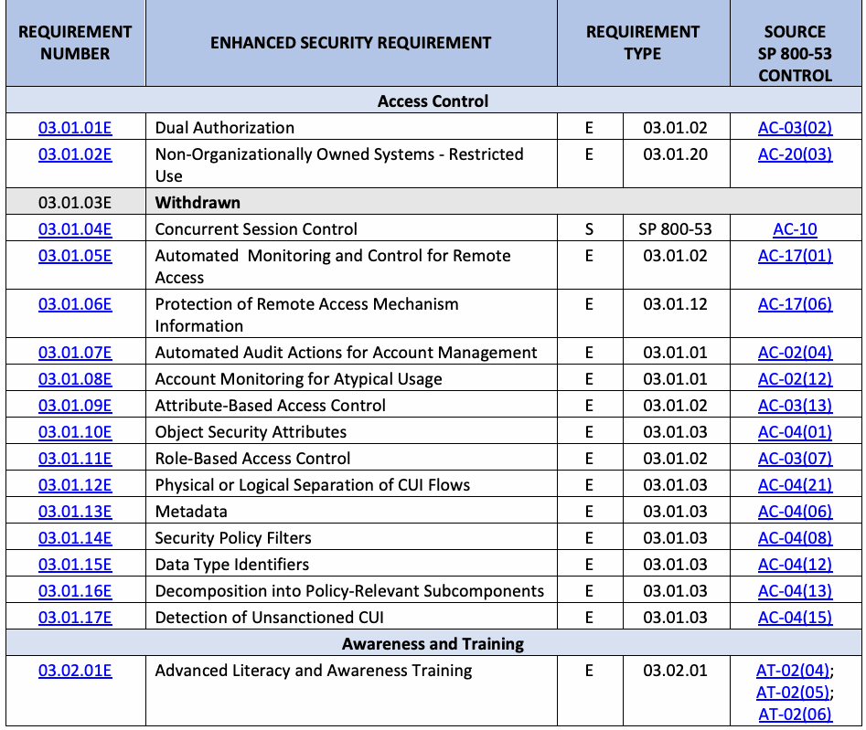
| 要件 | 強化セキュリティ要件 | 要件 | ソース | |
| 番号 | タイプ | SP 800-53 | ||
| 管理策 | ||||
| アクセス制御 | ||||
| 03.01.01E | 二重認可 | E | 03.01.02 | AC-03(02) |
| 03.01.02E | 組織外所有システム - 使用制限 | E | 03.01.20 | AC-20(03) |
| 03.01.03E | 撤回 | |||
| 03.01.04E | 同時セッション制御 | S | SP 800-53 | AC-10 |
| 03.01.05E | リモートアクセスのための自動監視および制御 | E | 03.01.02 | AC-17(01) |
| 03.01.06E | リモートアクセス機構情報の保護 | E | 03.01.12 | AC-17(06) |
| 03.01.07E | アカウント管理のための自動監査アクション | E | 03.01.01 | AC-02(04) |
| 03.01.08E | 異例な使用に関するアカウント監視 | E | 03.01.01 | AC-02(12) |
| 03.01.09E | 属性ベースのアクセス制御 | E | 03.01.02 | AC-03(13) |
| 03.01.10E | オブジェクトセキュリティ属性 | E | 03.01.03 | AC-04(01) |
| 03.01.11E | ロールベースのアクセス制御 | E | 03.01.02 | AC-03(07) |
| 03.01.12E | CUIフローの物理的または論理的分離 | E | 03.01.03 | AC-04(21) |
| 03.01.13E | メタデータ | E | 03.01.03 | AC-04(06) |
| 03.01.14E | セキュリティポリシーフィルタ | E | 03.01.03 | AC-04(08) |
| 03.01.15E | データタイプ識別子 | E | 03.01.03 | AC-04(12) |
| 03.01.16E | ポリシーに関連するサブコンポーネントへの分解 | E | 03.01.03 | AC-04(13) |
| 03.01.17E | 認可されていないCUIの検知 | E | 03.01.03 | AC-04(15) |
| 意識向上および訓練 | ||||
| 03.02.01E | 高度なリテラシーおよび意識向上訓練 | E | 03.02.01 | AT-02(04); AT-02(05); AT-02(06) |
| REQUIREMENT | ENHANCED SECURITY REQUIREMENT | REQUIREMENT | SOURCE | |
| NUMBER | TYPE | SP 800-53 | ||
| CONTROL | ||||
| 03.02.02E | Literacy and Awareness Training Practical Exercises | E | 03.02.01 | AT-02(01) |
| 03.02.03E | Literacy and Awareness Training Feedback | S | SP 800-53 | AT-06 |
| 03.02.04E | Anti-Counterfeit Training | T | SP 800-53 | SR-11(01) |
| Audit and Accountability | ||||
| 03.03.01E | Protection of Audit Record Storage in Separate Physical Systems or Components | E | 03.03.08 | AU-09(02) |
| 03.03.02E | Real-Time Alerts for Audit Processing Failures | E | 03.03.04 | AU-05(02) |
| 03.03.03E | Dual Authorization for Audit Information and Actions | E | 03.03.08 | AU-09(05) |
| 03.03.04E | Integrated Analysis of Audit Records | E | 03.03.05 | AU-06(05) |
| Configuration Management | ||||
| 03.04.01E | Withdrawn | |||
| 03.04.02E | Automated Unauthorized Component Detection | E | 03.04.10 | CM-06(01); CM-06(02); CM-08(03) |
| 03.04.03E | Automation Maintenance of System Component Inventory | E | 03.04.10 | CM-08(02) |
| 03.04.04E | Automation Support for Baseline Configuration | E | 03.04.01 | CM-02(02) |
| 03.04.05E | Dual Authorization for System Changes | E | 03.04.05 | CM-05(04) |
| 03.04.06E | Retention of Previous Configurations | E | 03.04.01 | CM-02(03) |
| 03.04.07E | Testing, Validation, and Documentation of Changes | E | 03.04.03 | CM-03(02) |
| 03.04.08E | Centralized Repository | E | 03.04.10 | CM-08(07) |
| Identification and Authentication | ||||
| 03.05.01E | Cryptographic Bidirectional Authentication | E | 03.05.02 | IA-03(01) |
| 03.05.02E | Password Managers | E | 03.05.07 | IA-05(18) |
| 03.05.03E | Device Attestation | E | 03.05.02 | IA-03(04) |
| 03.05.04E | No Embedded Unencrypted Static Authenticators | E | 03.05.07 | IA-05(07) |
| 03.05.05E | Expiration of Cached Authenticators | E | 03.05.07 | IA-05(13) |
| 03.05.06E | Identity Proofing | T | SP 800-53 | IA-12 |
| 03.05.07E | Identity Providers and Authorization Servers | S | SP 800-53 | IA-13 |
| Incident Response | ||||
| 03.06.01E | Security Operations Center | E | 03.06.01 | IR-04(14) |
| 03.06.02E | Integrated Incident Response Team | E | 03.06.01 | IR-04(11) |
| 03.06.03E | Behavior Analysis | E | 03.06.01 | IR-04(13) |
| 03.06.04E | Automated Tracking, Data Collection, and Analysis for Incident Monitoring | E | 03.06.02 | IR-05(01) |
| Maintenance | ||||
| 03.07.01E | Software Updates and Patches for Maintenance Tools | E | 03.04.07 | MA-03(06) |
| Media Protection | ||||
| 03.08.01E | Dual Authorization for Media Sanitization | E | 03.08.03 | MP-06(07) |
原本PDFの抜粋画像
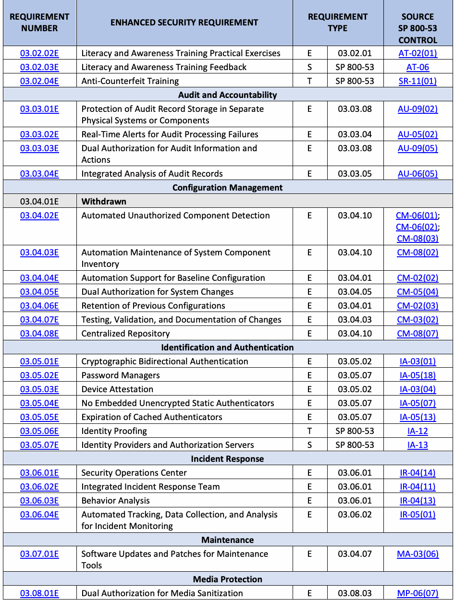
| 要件 | 拡張セキュリティ要件 | 要件 | 参照元 | |
| 番号 | タイプ | SP 800-53 | ||
| コントロール | ||||
| 03.02.02E | リテラシーおよび意識向上トレーニングの実践的演習 | E | 03.02.01 | AT-02(01) |
| 03.02.03E | リテラシーおよび意識向上トレーニングのフィードバック | S | SP 800-53 | AT-06 |
| 03.02.04E | 偽造防止トレーニング | T | SP 800-53 | SR-11(01) |
| 監査と責任追跡性 | ||||
| 03.03.01E | 個別の物理システムまたはコンポーネントにおける監査記録ストレージの保護 | E | 03.03.08 | AU-09(02) |
| 03.03.02E | 監査処理障害に対するリアルタイムアラート | E | 03.03.04 | AU-05(02) |
| 03.03.03E | 監査情報およびアクションに対する二重認可 | E | 03.03.08 | AU-09(05) |
| 03.03.04E | 監査記録の統合分析 | E | 03.03.05 | AU-06(05) |
| 構成管理 | ||||
| 03.04.01E | 取り下げ | |||
| 03.04.02E | 未認可コンポーネントの自動検出 | E | 03.04.10 | CM-06(01); CM-06(02); CM-08(03) |
| 03.04.03E | システムコンポーネントインベントリの自動保守 | E | 03.04.10 | CM-08(02) |
| 03.04.04E | ベースライン構成の自動化サポート | E | 03.04.01 | CM-02(02) |
| 03.04.05E | システム変更に対する二重認可 | E | 03.04.05 | CM-05(04) |
| 03.04.06E | 以前の構成の保持 | E | 03.04.01 | CM-02(03) |
| 03.04.07E | 変更のテスト、検証、および文書化 | E | 03.04.03 | CM-03(02) |
| 03.04.08E | 集中リポジトリ | E | 03.04.10 | CM-08(07) |
| 識別と認証 | ||||
| 03.05.01E | 暗号による双方向認証 | E | 03.05.02 | IA-03(01) |
| 03.05.02E | パスワードマネージャー | E | 03.05.07 | IA-05(18) |
| 03.05.03E | デバイス構成証明 | E | 03.05.02 | IA-03(04) |
| 03.05.04E | 暗号化されていない静的認証子の埋め込み禁止 | E | 03.05.07 | IA-05(07) |
| 03.05.05E | キャッシュされた認証子の失効 | E | 03.05.07 | IA-05(13) |
| 03.05.06E | 身元確認 | T | SP 800-53 | IA-12 |
| 03.05.07E | アイデンティティプロバイダーおよび認可サーバー | S | SP 800-53 | IA-13 |
| インシデント対応 | ||||
| 03.06.01E | セキュリティオペレーションセンター | E | 03.06.01 | IR-04(14) |
| 03.06.02E | 統合インシデント対応チーム | E | 03.06.01 | IR-04(11) |
| 03.06.03E | 振る舞い分析 | E | 03.06.01 | IR-04(13) |
| 03.06.04E | インシデント監視のための自動追跡、データ収集、および分析 | E | 03.06.02 | IR-05(01) |
| 保守 | ||||
| 03.07.01E | 保守ツールのソフトウェアアップデートおよびパッチ | E | 03.04.07 | MA-03(06) |
| メディア保護 | ||||
| 03.08.01E | メディアサニタイズに対する二重認可 | E | 03.08.03 | MP-06(07) |
| REQUIREMENT | ENHANCED SECURITY REQUIREMENT | REQUIREMENT | SOURCE | |
| NUMBER | TYPE | SP 800-53 | ||
| CONTROL | ||||
| 03.08.02E | Dual Authorization for System Backup Deletion and Destruction | E | 03.08.09 | CP-09(07) |
| 03.08.03E | Testing System Backups for Reliability and Integrity | E | 03.08.09 | CP-09(01) |
| 03.08.04E | System Recovery and Reconstitution | S | SP 800-53 | CP-10 |
| Personnel Security | ||||
| 03.09.01E | Withdrawn | |||
| 03.09.02E | Withdrawn | |||
| 03.09.03E | Access Agreements | T | SP 800-53 | PS-06 |
| 03.09.04E | Citizenship Requirements | E | 03.09.01 | PS-03(04) |
| Physical Protection | ||||
| 03.10.01E | Intrusion Alarms and Surveillance Equipment | E | 03.10.02 | PE-06(01) |
| 03.10.02E | Delivery and Removal of System Components | S | SP 800-53 | PE-16 |
| Risk Assessment | ||||
| 03.11.01E | Threat Awareness Program | S | SP 800-53 | PM-16 |
| 03.11.02E | Threat Hunting | S | SP 800-53 | RA-10 |
| 03.11.03E | Predictive Cyber Analytics | E | 03.11.01 | RA-03(04) |
| 03.11.04E | Withdrawn | |||
| 03.11.05E | Withdrawn | |||
| 03.11.06E | Withdrawn | |||
| 03.11.07E | Withdrawn | |||
| 03.11.08E | Dynamic Threat Awareness | E | 03.11.01 | RA-03(03) |
| 03.11.09E | Indicators of Compromise | E | 03.14.06 | SI-04(24) |
| 03.11.10E | Criticality Analysis | T | SP 800-53 | RA-09 |
| 03.11.11E | Discoverable Information | E | 03.11.02 | RA-05(04) |
| 03.11.12E | Automated Means for Sharing Threat Intelligence | S | SP 800-53 | PM-16(01) |
| Security Assessment and Monitoring | ||||
| 03.12.01E | Penetration Testing | S | SP 800-53 | CA-08 |
| 03.12.02E | Independent Assessors | E | 03.12.01 | CA-02(01) |
| 03.12.03E | Risk Monitoring | E | 03.12.03 | CA-07(04) |
| 03.12.04E | Internal System Connections | T | SP 800-53 | CA-09 |
| System and Communications Protection | ||||
| 03.13.01E | Heterogeneity | S | SP 800-53 | SC-29 |
| 03.13.02E | Randomness | S | SP 800-53 | SC-30(02) |
| 03.13.03E | Concealment and Misdirection | S | SP 800-53 | SC-30 |
| 03.13.04E | Isolation of System Components | E | 03.13.01 | SC-07(21) |
| 03.13.05E | Change Processing and Storage Locations | S | SP 800-53 | SC-30(03) |
| 03.13.06E | Platform-Independent Applications | S | SP 800-53 | SC-27 |
| 03.13.07E | Virtualization Techniques | S | SP 800-53 | SC-29(01) |
| 03.13.08E | Decoys | S | SP 800-53 | SC-26 |
| 03.13.09E | Isolation of Security Tool, Mechanism, and Support Component | E | 03.13.01 | SC-07(13) |
原本PDFの抜粋画像
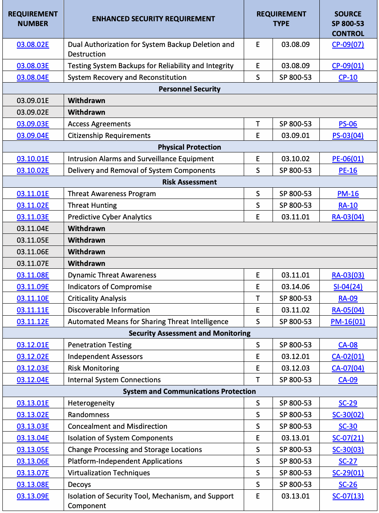
| 要件 | 拡張セキュリティ要件 | 要件 | 情報源 | |
| 番号 | タイプ | SP 800-53 | ||
| 管理策 | ||||
| 03.08.02E | システムのバックアップの削除および破壊に対する二重認可 | E | 03.08.09 | CP-09(07) |
| 03.08.03E | 信頼性および完全性を確認するためのシステムバックアップのテスト | E | 03.08.09 | CP-09(01) |
| 03.08.04E | システムの復旧および再構成 | S | SP 800-53 | CP-10 |
| 人的セキュリティ | ||||
| 03.09.01E | 撤回 | |||
| 03.09.02E | 撤回 | |||
| 03.09.03E | アクセス合意書 | T | SP 800-53 | PS-06 |
| 03.09.04E | 市民権要件 | E | 03.09.01 | PS-03(04) |
| 物理的保護 | ||||
| 03.10.01E | 侵入アラームおよび監視機器 | E | 03.10.02 | PE-06(01) |
| 03.10.02E | システムコンポーネントの搬入および搬出 | S | SP 800-53 | PE-16 |
| リスクアセスメント | ||||
| 03.11.01E | 脅威認識プログラム | S | SP 800-53 | PM-16 |
| 03.11.02E | 脅威ハンティング | S | SP 800-53 | RA-10 |
| 03.11.03E | 予測型サイバーアナリティクス | E | 03.11.01 | RA-03(04) |
| 03.11.04E | 撤回 | |||
| 03.11.05E | 撤回 | |||
| 03.11.06E | 撤回 | |||
| 03.11.07E | 撤回 | |||
| 03.11.08E | 動的な脅威認識 | E | 03.11.01 | RA-03(03) |
| 03.11.09E | 侵害指標（IoC） | E | 03.14.06 | SI-04(24) |
| 03.11.10E | 重要度分析 | T | SP 800-53 | RA-09 |
| 03.11.11E | 発見可能な情報 | E | 03.11.02 | RA-05(04) |
| 03.11.12E | 脅威インテリジェンスを共有するための自動化された手段 | S | SP 800-53 | PM-16(01) |
| セキュリティ評価および継続的監視 | ||||
| 03.12.01E | ペネトレーションテスト | S | SP 800-53 | CA-08 |
| 03.12.02E | 独立したアセッサー | E | 03.12.01 | CA-02(01) |
| 03.12.03E | リスクの継続的監視 | E | 03.12.03 | CA-07(04) |
| 03.12.04E | 内部システム接続 | T | SP 800-53 | CA-09 |
| システムおよび通信の保護 | ||||
| 03.13.01E | 異質性 | S | SP 800-53 | SC-29 |
| 03.13.02E | ランダム性 | S | SP 800-53 | SC-30(02) |
| 03.13.03E | 隠蔽および誤誘導 | S | SP 800-53 | SC-30 |
| 03.13.04E | システムコンポーネントの分離 | E | 03.13.01 | SC-07(21) |
| 03.13.05E | 処理および保管の場所の変更 | S | SP 800-53 | SC-30(03) |
| 03.13.06E | プラットフォーム非依存のアプリケーション | S | SP 800-53 | SC-27 |
| 03.13.07E | 仮想化技術 | S | SP 800-53 | SC-29(01) |
| 03.13.08E | デコイ | S | SP 800-53 | SC-26 |
| 03.13.09E | セキュリティツール、メカニズム、およびサポートコンポーネントの分離 | E | 03.13.01 | SC-07(13) |
| REQUIREMENT | ENHANCED SECURITY REQUIREMENT | REQUIREMENT | SOURCE | |
| NUMBER | TYPE | SP 800-53 | ||
| CONTROL | ||||
| 03.13.10E | Separate Subnetworks | E | 03.13.01 | SC-07(22) |
| 03.13.11E | Thin Nodes | S | SP 800-53 | SC-25 |
| 03.13.12E | Denial-of-Service Protection | T | SP 800-53 | SC-05 |
| 03.13.13E | Port and Input/Output Device Access | S | SP 800-53 | SC-41 |
| 03.13.14E | Detonation Chambers | S | SP 800-53 | SC-44 |
| 03.13.15E | Separate Subnets to Isolate System Components and Functions | E | 03.13.01 | SC-07(29) |
| 03.13.16E | System Partitioning | S | SP 800-53 | SC-32 |
| System and Information Integrity | ||||
| 03.14.01E | Software, Firmware, and Information Integrity | T | SP 800-53 | SI-07 |
| 03.14.02E | Withdrawn | |||
| 03.14.03E | Withdrawn | |||
| 03.14.04E | Refresh from Trusted Sources | S | SP 800-53 | SI-14(01) |
| 03.14.05E | Non-Persistent Information | S | SP 800-53 | SI-14(02) |
| 03.14.06E | Withdrawn | |||
| 03.14.07E | Withdrawn | |||
| 03.14.08E | Integrity Checks | T | SP 800-53 | SI-07(01) |
| 03.14.09E | Cryptographic Protection | S | SP 800-53 | SI-07(06) |
| 03.14.10E | Protection of Boot Firmware | S | SP 800-53 | SI-07(10) |
| 03.14.11E | Integration of Detection and Response | T | SP 800-53 | SI-07(07) |
| 03.14.12E | Information Input Validation | T | SP 800-53 | SI-10 |
| 03.14.13E | Error Handling | T | SP 800-53 | SI-11 |
| 03.14.14E | Memory Protection | T | SP 800-53 | SI-16 |
| 03.14.15E | Non-Persistent System Components and Services | S | SP 800-53 | SI-14 |
| 03.14.16E | Tainting | S | SP 800-53 | SI-20 |
| 03.14.17E | System-Generated Alerts | T | SP 800-53 | SI-04(05) |
| 03.14.18E | Automated Organization-Generated Alerts | E | 03.14.06 | SI-04(12) |
| 03.14.19E | Wireless Intrusion Detection | E | 03.14.06, 03.01.16 | SI-04(14) |
| Planning | ||||
| 03.15.01E | Security Architecture | T | SP 800-53 | PL-08 |
| 03.15.02E | Defense In Depth | S | SP 800-53 | PL-08(01) |
| 03.15.03E | Supplier Diversity | S | SP 800-53 | PL-08(02) |
| System and Services Acquisition | ||||
| 03.16.01E | Specialization | S | SP 800-53 | SA-23 |
| Supply Chain Risk Management | ||||
| 03.17.01E | Notification Agreements | T | SP 800-53 | SR-08 |
| 03.17.02E | Inspection of Systems or Components | T | SP 800-53 | SR-10 |
| 03.17.03E | Component Authenticity | T | SP 800-53 | SR-11 |
| 03.17.04E | Provenance | S | SP 800-53 | SR-04 |
| 03.17.05E | Supply Chain Integrity – Pedigree | S | SP 800-53 | SR-04(04) |
原本PDFの抜粋画像
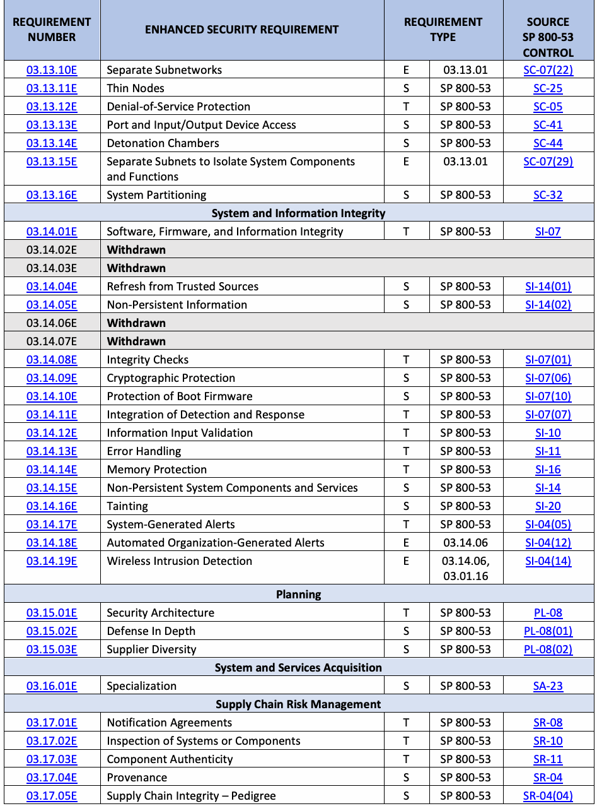
| REQUIREMENT | 拡張セキュリティ要件 | REQUIREMENT | SOURCE | |
| NUMBER | TYPE | SP 800-53 | ||
| 管理策 | ||||
| 03.13.10E | サブネットワークの分離 | E | 03.13.01 | SC-07(22) |
| 03.13.11E | シンノード | S | SP 800-53 | SC-25 |
| 03.13.12E | サービス運用妨害（DoS）の防止 | T | SP 800-53 | SC-05 |
| 03.13.13E | ポートおよび入出力デバイスへのアクセス | S | SP 800-53 | SC-41 |
| 03.13.14E | デトネーションチャンバー | S | SP 800-53 | SC-44 |
| 03.13.15E | システムコンポーネントおよび機能を隔離するためのサブネットの分離 | E | 03.13.01 | SC-07(29) |
| 03.13.16E | システムパーティショニング | S | SP 800-53 | SC-32 |
| システムと情報の完全性 | ||||
| 03.14.01E | ソフトウェア、ファームウェア、および情報の完全性 | T | SP 800-53 | SI-07 |
| 03.14.02E | 撤回 | |||
| 03.14.03E | 撤回 | |||
| 03.14.04E | 信頼できるソースからのリフレッシュ | S | SP 800-53 | SI-14(01) |
| 03.14.05E | 非永続的情報 | S | SP 800-53 | SI-14(02) |
| 03.14.06E | 撤回 | |||
| 03.14.07E | 撤回 | |||
| 03.14.08E | 完全性チェック | T | SP 800-53 | SI-07(01) |
| 03.14.09E | 暗号による保護 | S | SP 800-53 | SI-07(06) |
| 03.14.10E | ブートファームウェアの保護 | S | SP 800-53 | SI-07(10) |
| 03.14.11E | 検知と対応の統合 | T | SP 800-53 | SI-07(07) |
| 03.14.12E | 情報入力の妥当性確認 | T | SP 800-53 | SI-10 |
| 03.14.13E | エラー処理 | T | SP 800-53 | SI-11 |
| 03.14.14E | メモリ保護 | T | SP 800-53 | SI-16 |
| 03.14.15E | 非永続的なシステムコンポーネントおよびサービス | S | SP 800-53 | SI-14 |
| 03.14.16E | テイント分析 | S | SP 800-53 | SI-20 |
| 03.14.17E | システム生成アラート | T | SP 800-53 | SI-04(05) |
| 03.14.18E | 自動化された組織生成アラート | E | 03.14.06 | SI-04(12) |
| 03.14.19E | ワイヤレス侵入検知 | E | 03.14.06, 03.01.16 | SI-04(14) |
| 計画 | ||||
| 03.15.01E | セキュリティアーキテクチャ | T | SP 800-53 | PL-08 |
| 03.15.02E | 多層防御 | S | SP 800-53 | PL-08(01) |
| 03.15.03E | サプライヤーの多様性 | S | SP 800-53 | PL-08(02) |
| システムおよびサービスの導入 | ||||
| 03.16.01E | 特化 | S | SP 800-53 | SA-23 |
| サプライチェーンリスクマネジメント | ||||
| 03.17.01E | 通知に関する合意 | T | SP 800-53 | SR-08 |
| 03.17.02E | システムまたはコンポーネントの検査 | T | SP 800-53 | SR-10 |
| 03.17.03E | コンポーネントの真正性 | T | SP 800-53 | SR-11 |
| 03.17.04E | 出所 | S | SP 800-53 | SR-04 |
| 03.17.05E | サプライチェーンの完全性 – ペディグリー | S | SP 800-53 | SR-04(04) |
Appendix D. Adversary Effects
付録D 攻撃者の影響
未レビュー訳Cyber resiliency solutions are only relevant if they have some effect on risk, specifically by reducing the likelihood of the occurrence of threat events,22 the ability of threat events to cause harm, and the extent of that harm.23 The types of analysis of system architectures, designs, implementations, and operations that are indicated for cyber resiliency can include considering the effects that alternatives could have on the threat events in scenarios of concern to organizations.
サイバーレジリエンスソリューションは、リスクに対して何らかの影響を与える場合、具体的には脅威イベントの発生可能性の低減22、脅威イベントが損害を引き起こす能力の低減、およびその損害の程度の低減23を行う場合にのみ有意義となる。サイバーレジリエンスのために示されるシステムアーキテクチャ、設計、実装、および運用の分析のタイプには、組織にとって懸念されるシナリオにおける脅威イベントに対して代替案が与えうる影響を考慮することを含めることができる。
未レビュー訳From the perspective of protecting a system against adversarial threats, five high-level, desired effects on the adversary can be identified: redirect, preclude, impede, limit, and expose. These effects are useful for discussion but are often too general to facilitate the definition of specific measures of effectiveness. Therefore, more specific classes of effects are defined:
敵対的脅威からシステムを保護する観点から、敵対者に対して望まれる5つの高レベルな効果を特定できる：redirect（方向転換）、preclude（排除）、impede（妨害）、limit（制限）、およびexpose（暴露）である。これらの効果は議論には有用であるが、具体的な有効性の尺度の定義を促進するには概して一般的すぎる。したがって、より具体的な効果のクラスが定義される：
未レビュー訳•Deter, divert, and deceive in support of redirect
•redirect（方向転換）を支援するdeter（抑止）、divert（誘導）、およびdeceive（欺瞞）
•Negate, preempt, and expunge in support of preclude
•preclude（排除）を支援するNegate（無効化）、preempt（先制抑止）、およびexpunge（抹消）
未レビュー訳•Contain, degrade, delay, and exert in support of impede
•impede（妨害）を支援するcontain（封じ込め）、degrade（劣化）、delay（遅延）、およびexert（消耗強制）
•Shorten and reduce in support of limit
•limit（制限）を支援するShorten（短縮）およびreduce（低減）
未レビュー訳•Detect, reveal, and scrutinize in support of expose
•expose（暴露）を支援するDetect（検知）、reveal（開示）、およびscrutinize（精査）
未レビュー訳These effects are tactical (i.e., local to a specific threat event or scenario), although it is possible that their repeated achievement could have strategic effects as well.
これらの効果は戦術的（すなわち、特定の脅威イベントやシナリオに局所的）であるが、それらの反復的な達成が戦略的な効果をも持ち得る可能性はある。
未レビュー訳Table 3 defines the effects, indicates how each effect could reduce risk, and illustrates how the use of certain approaches to implementing cyber resiliency techniques for protection against attack could have the identified effect.24 The term “defender” refers to the organization or organizational staff responsible for providing or applying protections. It should be noted that likelihoods and impact can be reduced, but risk cannot be eliminated. Thus, no effect can be assumed to be complete, even those with names that suggest completeness, such as negate, detect, or expunge.
表3はこれらの効果を定義し、各効果がどのようにリスクを低減できるかを示し、攻撃に対する保護のためにサイバーレジリエンス技法を実装する特定のアプローチの使用が、どのように特定された効果をもたらし得るかを説明している。24 「防御者（defender）」という用語は、保護の提供または適用を担当する組織または組織の要員を指す。可能性や影響を低減することはできるが、リスクを排除することはできない点に留意すべきである。したがって、negate（無効化）、detect（検知）、expunge（抹消）のように完全性を示唆する名称を持つものであっても、いかなる効果も完全であると想定することはできない。
未レビュー訳Table 3. Effects of cyber resiliency techniques on adversarial threat events
表3. 敵対的脅威イベントに対するサイバーレジリエンス技術の効果
未レビュー訳原本PDFの抜粋画像
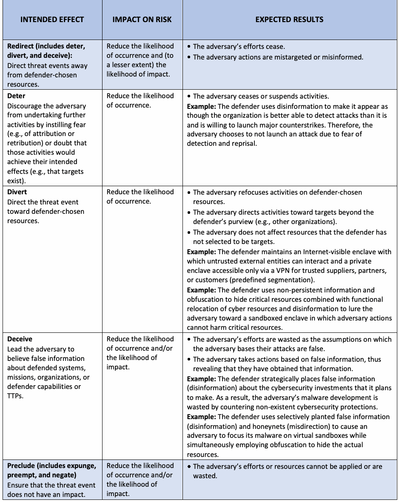
原本PDFの抜粋画像
| INTENDED EFFECT | IMPACT ON RISK | EXPECTED RESULTS |
| Expunge Remove resources that are known to be or are suspected of being unsafe, incorrect, or corrupted. | Reduce the likelihood of impact of subsequent events in the same threat scenario. | • A malfunctioning, misbehaving, or suspect resource is restored to normal operation. • The adversary loses a capability for some period as adversary- directed threat mechanisms (e.g., malicious code) are removed. • Adversary-controlled resources are so badly damaged that they cannot perform any function or be restored to a usable condition without being entirely rebuilt. Example: The defender uses virtualization to refresh critical software (non-persistent services) from a known good copy at random intervals (temporal unpredictability). As a result, malware that was implanted in the software is deleted. |
| Preempt Forestall or avoid conditions under which the threat event could occur or on which an attack is predicated. | Reduce the likelihood of occurrence. | • The adversary’s resources cannot be applied, or the adversary cannot perform activities (e.g., because the resources that the adversary requires are destroyed or made inaccessible). Example: An unneeded network connection is disabled (non- persistent connectivity) so that an attack cannot be made via that interface. Example: A resource is repositioned (asset mobility) so it cannot be affected by a threat event in its new location. |
| Negate Create conditions under which the threat event cannot be expected to result in an impact. | Reduce the likelihood of impact. | • The adversary can launch an attack, but it will not even partially succeed. The adversary’s efforts are wasted as the assumptions on which the adversary based its attack are no longer valid, and as a result, the intended effects cannot be achieved. Example: Subtle variations in critical software are implemented (synthetic diversity) with the result that the adversary’s malware is no longer able to compromise the targeted software. |
| Impede (includes contain, | Reduce the likelihood and level of impact. | • Adversary activities are restricted in scope, fail to achieve full effect, do not take place in accordance with the adversary’s timeline, or require greater resources than the adversary had planned. |
| degrade, delay, and exert) | ||
| Make it more difficult for | ||
| threat events to cause | ||
| adverse impacts or | ||
| consequences. | ||
| Contain Restrict the effects of the threat event to a limited set of resources. | Reduce the level of impact. | • The adversary can affect fewer resources than planned. The value of the activity in achieving the adversary’s goals is reduced. Example: The defender organization makes changes to a combination of internal firewalls and logically separated networks (dynamic segmentation) to isolate enclaves in response to the detection of malware with the result that the effects of the malware are limited to the initially infected enclaves. |
| Degrade Decrease the expected consequences of the threat event. | Reduce the likelihood of impact and/or the level of impact. | • Not all of the resources targeted by the adversary are affected, or the targeted resources are affected to a lesser degree than the adversary sought. Example: The defender uses multiple browsers and operating systems (architectural diversity) on end-user systems and some critical servers. The result is that malware targeted at specific software can only compromise a subset of the targeted systems, and a sufficient number continue to operate to complete the mission or business function. |
原本PDFの抜粋画像
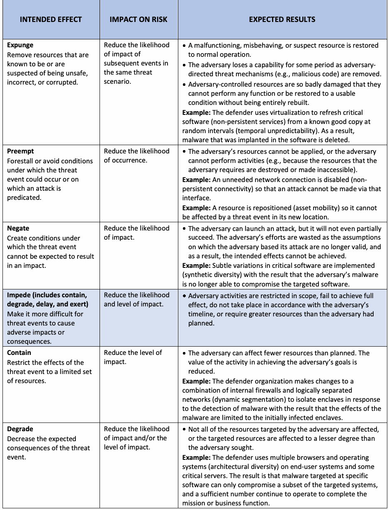
| 意図される効果 | リスクへの影響 | 期待される結果 |
| 消去（Expunge） 安全でない、不正確である、または破損していることが判明しているか、その疑いがあるリソースを排除する。 | 同一の脅威シナリオにおける後続イベントの影響の可能性を低減する。 | • 誤動作している、不正な動作をしている、または疑わしいリソースが正常な運用へと復旧される。 • 攻撃者が指示する脅威メカニズム（例：悪意のあるコード）が除去されるため、攻撃者は一定期間能力を喪失する。 • 攻撃者に制御されたリソースが著しく損傷を受け、完全に再構築しない限りいかなる機能も実行できず、使用可能な状態に復旧することもできない。 例：防御者は仮想化を使用して、ランダムな間隔（時間的予測不可能性）で既知の良好なコピーから重要なソフトウェア（非永続的サービス）をリフレッシュする。その結果、そのソフトウェアに埋め込まれていたマルウェアが削除される。 |
| 先制（Preempt） 脅威イベントが発生し得る条件、または攻撃の前提となっている条件を未然に防ぐか回避する。 | 発生の可能性を低減する。 | • 攻撃者のリソースを適用できない、または攻撃者が活動を実行できない（例：攻撃者が必要とするリソースが破壊されているか、アクセス不能にされているため）。 例：そのインターフェースを介した攻撃が行われないよう、不要なネットワーク接続を無効化する（非永続的接続性）。 例：リソースを再配置（資産の流動性）することで、新たな場所において脅威イベントの影響を受けないようにする。 |
| 無効化（Negate） 脅威イベントによって影響が生じることを予期できない条件を作り出す。 | 影響の可能性を低減する。 | • 攻撃者は攻撃を開始できるが、部分的にさえ成功しない。攻撃者が攻撃の根拠としていた前提がもはや成立しなくなることで攻撃者の取り組みは無駄になり、その結果、意図した効果を達成できなくなる。 例：重要なソフトウェアに微妙なバリエーションを実装（合成多様性）することで、標的となったソフトウェアを攻撃者のマルウェアがもはや侵害できないようにする。 |
| 阻止（Impede）（封じ込め、 | 影響の可能性およびレベルを低減する。 | • 攻撃者の活動の範囲が制限される、十分な効果を達成できない、攻撃者のタイムラインに従って行われない、または攻撃者が計画していた以上のリソースを必要とする。 |
| 低下、遅延、行使を含む） | ||
| 脅威イベントが | ||
| 悪影響や | ||
| 結果を | ||
| 引き起こすことをより困難にする。 | ||
| 封じ込め（Contain） 脅威イベントの影響を限定されたリソース群に制限する。 | 影響のレベルを低減する。 | • 攻撃者が影響を与えられるリソースが計画よりも少なくなる。攻撃者の目標達成における活動の価値が低下する。 例：防御組織はマルウェアの検知に対応してエンクレーブを隔離するため、内部ファイアウォールと論理的に分離されたネットワークの組み合わせに変更を加え（動的セグメンテーション）、その結果、マルウェアの影響が最初に感染したエンクレーブに限定されるようにする。 |
| 低下（Degrade） 脅威イベントによって期待される（予期される）結果を減少させる。 | 影響の可能性および／または影響のレベルを低減する。 | • 攻撃者が標的としたリソースのすべてが影響を受けるわけではない、あるいは標的となったリソースが攻撃者の意図よりも低い程度で影響を受ける。 例：防御者はエンドユーザーシステムおよび一部の重要なサーバーにおいて、複数のブラウザとオペレーティングシステムを使用する（アーキテクチャの多様性）。その結果、特定のソフトウェアを標的としたマルウェアは標的システムのサブセットのみしか侵害できず、ミッションまたは業務機能を完了するのに十分な数のシステムが運用を継続する。 |
原本PDFの抜粋画像
原本PDFの抜粋画像
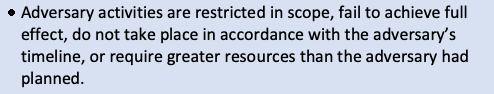
| INTENDED EFFECT | IMPACT ON RISK | EXPECTED RESULTS |
| Delay Increase the amount of time needed for the threat event to result in adverse impacts. | Reduce the likelihood of impact and/or the level of impact. | • The adversary achieves the intended effects but not within the intended period. Example: The protection measures (e.g., access controls, encryption) allocated to resources increase in number and strength based on resource criticality (calibrated defense-in- depth). The frequency of authentication challenges varies randomly (temporal unpredictability) and with increased frequency for more critical resources. The result is that it takes the attacker more time to successfully compromise the targeted resources. |
| Exert Increase the level of effort or resources needed for an adversary to achieve a given result. | Reduce the likelihood of impact. | • The adversary gives up planned or partially completed activities in response to finding that additional effort or resources are needed. • The adversary achieves the intended effects in their desired timeframe but only by applying more resources. Thus, the adversary’s return on investment (ROI) is decreased. • The adversary reveals TTPs that they had planned to reserve for future use. Example: The defender enhances the defenses of moderate- criticality components with additional mitigations (calibrated defense-in-depth). To overcome these, the adversary must tailor and deploy TTPs that they were planning to reserve for use against higher value defender targets. Example: The defender adds a large amount of valid but useless information to a data store (obfuscation), requiring the adversary to exfiltrate and analyze more data before taking further actions. |
| Limit (includes shorten and | Reduce the level and likelihood of impact of subsequent events in the same threat scenario. | • The adversary’s effectiveness is restricted. |
| reduce) | ||
| Restrict the consequences of | ||
| realized threat events by | ||
| limiting the damage or | ||
| effects they cause in terms | ||
| of time, system resources, | ||
| and/or mission or business | ||
| impacts. | ||
| Shorten Limit the duration of adverse consequences of a threat event. | Reduce the level of impact. | • The time period during which the adversary’s activities affect defender resources is limited. Example: The defender employs a diverse set of suppliers (supply chain diversity) for time-critical components. As a result, when an adversary’s attack on one supplier causes it to shut down, the defender can increase its use of the other suppliers, thus shortening the time when it is without the critical components. |
原本PDFの抜粋画像
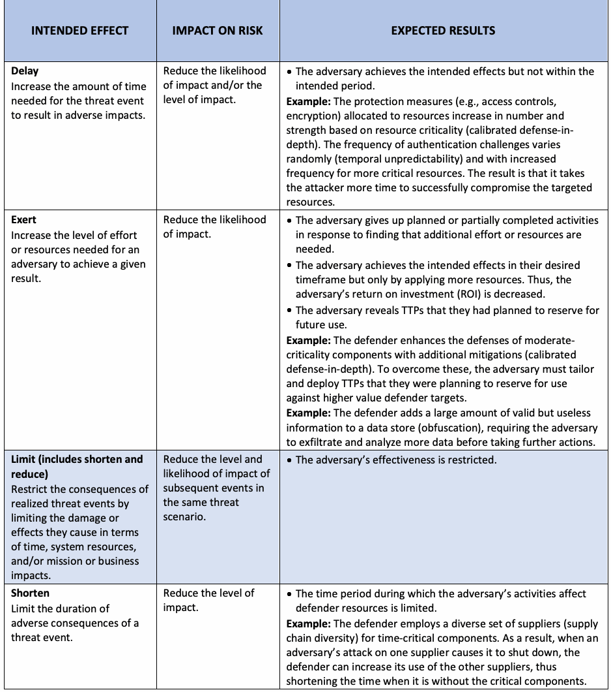
| 意図された効果 | リスクへの影響 | 期待される結果 |
| 遅延（Delay） 脅威イベントが悪影響をもたらすまでに必要な時間を増加させる。 | 影響の発生可能性および／または影響のレベルを低減する。 | • 攻撃者は意図した効果を達成するが、意図した期間内には達成できない。例：リソースに割り当てられる保護策（例：アクセス制御、暗号化）の数と強度が、リソースの重要度に基づいて増加する（調整された多層防御）。認証チャレンジの頻度がランダムに変化し（時間的予測不可能性）、より重要なリソースに対しては頻度が増加する。その結果、攻撃者が標的リソースの侵害に成功するまでにより多くの時間がかかるようになる。 |
| 行使／労力増大（Exert） 攻撃者が所定の結果を達成するために必要な労力またはリソースのレベルを増大させる。 | 影響の発生可能性を低減する。 | • 攻撃者は、追加の労力やリソースが必要であると判明したことに応じて、計画していた活動や部分的に完了していた活動を断念する。 • 攻撃者は希望する時間枠内で意図した効果を達成するが、それはより多くのリソースを投入することによってのみ可能となる。したがって、攻撃者の投資収益率（ROI）は低下する。 • 攻撃者は、将来の使用のために温存しておく予定だったTTPを明らかにする。例：防御側が中程度の重要度を持つコンポーネントの防御を追加の緩和策で強化する（調整された多層防御）。これらを克服するために、攻撃者は、防御側のより価値の高い標的に対して温存しておく予定だったTTPを調整して展開しなければならない。例：防御側がデータストアに有効だが役に立たない情報を大量に追加し（難読化）、攻撃者がさらなる行動を起こす前により多くのデータを持ち出し（exfiltrate）分析することを要求する。 |
| 制限（短縮および | 同一の脅威シナリオにおける後続イベントの影響のレベルおよび発生可能性を低減する。 | • 攻撃者の有効性が制限される。 |
| 削減を含む） | ||
| 顕在化した脅威イベントの | ||
| 結果を、時間、システム | ||
| リソース、および／または | ||
| ミッションや業務への影響 | ||
| の観点から、それらが引き起こす | ||
| 損害や影響を制限することによって | ||
| 抑制する。 | ||
| 短縮（Shorten） 脅威イベントの悪影響の持続期間を制限する。 | 影響のレベルを低減する。 | • 攻撃者の活動が防御側のリソースに影響を及ぼす期間が制限される。例：防御側が、時間が重視されるコンポーネントに対して多様なサプライヤー群（サプライチェーンの多様性）を採用する。結果として、1つのサプライヤーに対する攻撃者の攻撃によってそのサプライヤーが停止した場合でも、防御側は他のサプライヤーの利用を増やすことができ、それによって重要なコンポーネントがない期間を短縮することができる。 |
原本PDFの抜粋画像
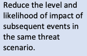
原本PDFの抜粋画像
| INTENDED EFFECT | IMPACT ON RISK | EXPECTED RESULTS |
| Reduce Decrease the degree of damage from a threat event. The degree of damage can have two dimensions: breadth (i.e., number of affected resources) and depth (i.e., level of harm to a given resource). | Reduce the level of impact. | • The level of damage to mission or business operations due to adversary activities is reduced with partial restoration or the reconstitution of all affected resources. Example: Resources determined to be corrupted or suspect (integrity checks, behavior validation) are restored from older, uncorrupted resources (protected backup and restore) with reduced functionality. • The level of damage to mission or business operations due to adversary activities is reduced with the full restoration or reconstitution of some of the affected resources. Example: The organization removes one of three compromised resources and provides a new resource (replacement, specialization) for the same or equivalent mission or business functionality. |
| Expose (includes detect, | Reduce the likelihood of impact. | • The adversary loses the advantage of stealth as defenders are better prepared by developing and sharing threat intelligence. |
| scrutinize, and reveal) | ||
| Reduce risk due to the | ||
| ignorance of threat events | ||
| and possible replicated or | ||
| similar threat events in the | ||
| same or similar | ||
| environments. | ||
| Detect Identify threat events or their effects by discovering or discerning the fact that an event is occurring, has occurred, or is about to occur based on indicators, warnings, and precursor activities. | Reduce the likelihood and level of impact, depending on responses. | • The adversary’s activities become susceptible to defensive responses. Example: The defender continually moves its sensors (functional relocation of sensors), often at random times (temporal unpredictability), to common points of egress from the organization. They combine this with the use of beacon traps (tainting). The result is that the defender can quickly detect efforts by the adversary to exfiltrate sensitive information. |
| Scrutinize Analyze threat events and the artifacts associated with threat events—particularly with respect to patterns of exploiting vulnerabilities, predisposing conditions, and weaknesses—to inform more effective detection and risk response. | Reduce the likelihood of impact. | • The adversary loses the advantages of uncertainty, confusion, and doubt. • The defender understands the adversary better based on analysis of adversary activities, including the artifacts (e.g., malicious code) and effects associated with those activities and the correlation of activity-specific observations with other activities (as feasible), and can thus recognize adversary TTPs. Example: The defender deploys honeynets (misdirection), which invite attacks and allow the defender to apply their TTPs in a safe environment. The defender then analyzes (malware and forensic analysis) the malware captured in the honeynet to determine the nature of the attacker’s TTPs, allowing it to develop appropriate defenses. |
原本PDFの抜粋画像
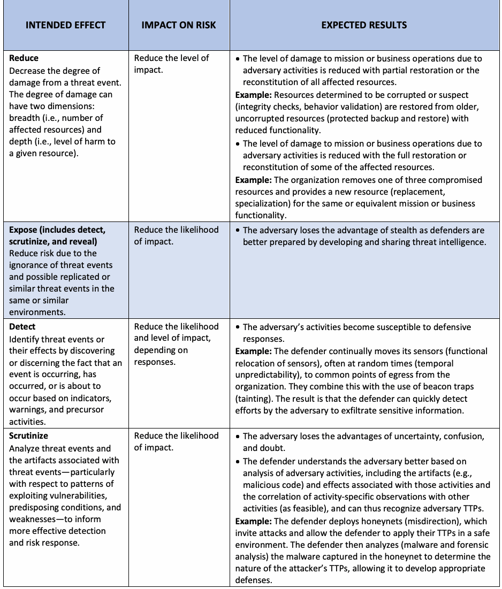
| 意図される効果 | リスクへの影響 | 期待される結果 |
| Reduce（低減） 脅威イベントによる損害の度合いを減少させる。損害の度合いには、範囲（すなわち、影響を受けるリソースの数）と深度（すなわち、特定のリソースに対する危害のレベル）という2つの側面があり得る。 | 影響のレベルを低減する。 | • 影響を受けたすべてのリソースの部分的な復旧または再構成により、攻撃者の活動によるミッションまたはビジネスオペレーションへの損害レベルが低減される。例：破損している、または疑わしいと判断されたリソース（整合性チェック、振る舞い検証）が、機能が低下した状態で、破損していない過去のリソース（保護されたバックアップと復旧）から復旧される。• 影響を受けたリソースの一部の完全な復旧または再構成により、攻撃者の活動によるミッションまたはビジネスオペレーションへの損害レベルが低減される。例：組織が、侵害された3つのリソースのうち1つを排除し、同一または同等のミッションまたはビジネス機能のために新しいリソース（交換、特化）を提供する。 |
| Expose（露出）（検知、 | 影響の可能性を低減する。 | • 防御側が脅威インテリジェンスの作成および共有によってより適切に準備されるため、攻撃者はステルスの利点を失う。 |
| 精査、および露呈を含む） | ||
| 脅威イベントに対する | ||
| 無知や、同一または同様の | ||
| 環境において再現された | ||
| または類似した脅威イベントの | ||
| 可能性に起因する | ||
| リスクを低減する。 | ||
| Detect（検知） 指標、警告、および先行活動に基づいて、イベントが発生している、発生した、または発生しそうであるという事実を発見または識別することにより、脅威イベントまたはその影響を特定する。 | 対応に応じて、影響の可能性およびレベルを低減する。 | • 攻撃者の活動が防御側の対応に対して影響を受けやすくなる。例：防御側がセンサーを頻繁にランダムな時間（時間的な予測不可能性）で組織からの共通の出口ポイントへと継続的に移動させる（センサーの機能的再配置）。防御側はこれをビコーントラップ（汚染）の使用と組み合わせる。その結果、防御側は攻撃者による機密情報の流出の試みを迅速に検知できるようになる。 |
| Scrutinize（精査） より効果的な検知とリスク対応に情報を提供するために、脅威イベントおよび脅威イベントに関連するアーティファクト（特に脆弱性、誘発条件、弱点を悪用するパターンに関して）を分析する。 | 影響の可能性を低減する。 | • 攻撃者は不確実性、混乱、疑念という利点を失う。• 防御側は、攻撃者の活動に関連するアーティファクト（例：悪意のあるコード）や影響、および特定の活動に関する観測事項と他の活動との相関関係（実行可能な場合）を含む攻撃者の活動の分析に基づいて攻撃者をより深く理解し、それによって攻撃者のTTPを認識できるようになる。例：防御側は攻撃を誘引し、安全な環境でそのTTPを適用できるようにするハニーネット（方向転換／ミスディレクション）を展開する。防御側はその後、ハニーネットで捕捉されたマルウェアを分析（マルウェアおよびフォレンジック分析）して攻撃者のTTPの性質を特定し、適切な防御策を開発できるようにする。 |
原本PDFの抜粋画像
原本PDFの抜粋画像
| INTENDED EFFECT | IMPACT ON RISK | EXPECTED RESULTS |
| Reveal Increase the awareness of risk factors and the relative effectiveness of remediation approaches across the stakeholder community to support common, joint, or coordinated risk response. | Reduce the likelihood of impact, particularly in the future. | • The adversary loses the advantage of surprise and possible deniability. • The adversary’s ability to compromise one organization’s systems to attack another organization is impaired as awareness of adversary characteristics and behavior is increased across the stakeholder community (e.g., across all computer security incident response teams that support a given sector, that might be expected to be attacked by the same actor or actors). Example: The defender participates in threat information-sharing and uses dynamically updated threat intelligence data feeds (dynamic threat modeling) to inform actions (adaptive management). |
原本PDFの抜粋画像
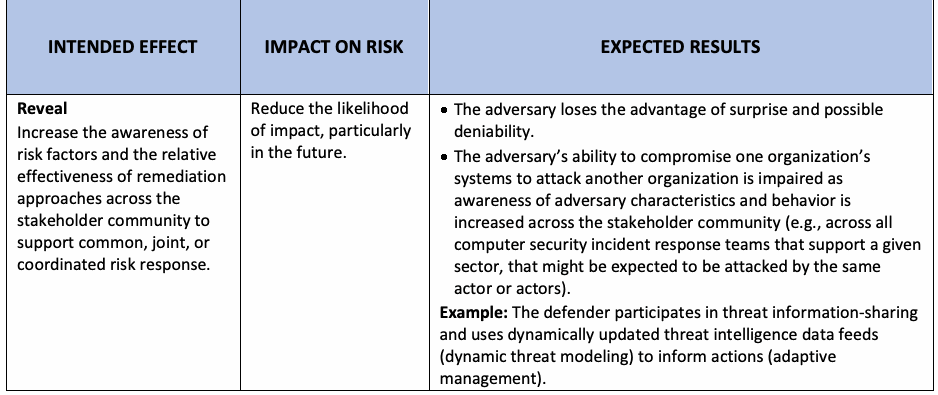
| 意図される効果 | リスクへの影響 | 期待される結果 |
| Reveal（露呈） 共通、共同、または協調的なリスク対応を支援するために、ステークホルダーコミュニティ全体でリスク要因に対する認識と修復アプローチの相対的な有効性への認識を高める。 | 特に将来における影響の可能性を低減する。 | • 攻撃者は奇襲の利点と否認可能性の利点を失う。• ステークホルダーコミュニティ全体（例：同一の攻撃者によって攻撃されると予想される可能性がある、特定のセクターをサポートするすべてのコンピュータセキュリティインシデント対応チーム間）で攻撃者の特性と振る舞いに関する認識が高まるにつれて、ある組織のシステムを侵害して別の組織を攻撃する攻撃者の能力が損なわれる。例：防御側は脅威情報の共有に参加し、動的に更新される脅威インテリジェンスデータフィード（動的脅威モデリング）を使用して行動に情報を提供する（適応管理）。 |
Appendix E. Organization-Defined Parameters
付録E 組織定義パラメータ
未レビュー訳This appendix lists the ODPs that are included in the enhanced security requirements in Sec. 3. The ODPs are listed sequentially by requirement family, beginning with the first requirement containing an ODP in the Access Control family and ending with the last requirement containing an ODP in the Supply Chain Risk Management family. Embedded ODPs are listed as a single entry in the table.
本付録では、3章の拡張セキュリティ要件に含まれるODPを一覧で示す。ODPは要件ファミリーごとに順に記載されており、アクセス制御（Access Control）ファミリーでODPを含む最初の要件から始まり、サプライチェーンリスクマネジメント（Supply Chain Risk Management）ファミリーでODPを含む最後の要件で終わる。埋め込まれたODPは、表内に単一のエントリとして記載されている。
Table 4. Organization-defined parameters
表4. 組織定義パラメータ
未レビュー訳| ENHANCED | ORGANIZATION-DEFINED PARAMETER |
| SECURITY | |
| REQUIREMENT | |
| 03.01.01E | [Assignment: organization-defined privileged commands and/or other organization-defined actions] |
| 03.01.02E | [Assignment: organization-defined restrictions] |
| 03.01.04E | [Assignment: organization-defined account and/or account type] |
| 03.01.04E | [Assignment: organization-defined number] |
| 03.01.08E | [Assignment: organization-defined atypical usage] |
| 03.01.08E | [Assignment: organization-defined personnel or roles] |
| 03.01.09E | [Assignment: organization-defined attributes to assume access permissions] |
| 03.01.10E | [Assignment: organization-defined security attributes] |
| 03.01.10E | [Assignment: organization-defined information, source, and destination objects] |
| 03.01.10E | [Assignment: organization-defined information flow control policies] |
| 03.01.11E | [Assignment: organization-defined roles and users authorized to assume such roles] |
| 03.01.12E | [Assignment: organization-defined mechanisms and/or techniques] |
| 03.01.13E | [Assignment: organization-defined metadata] |
| 03.01.14E | [Assignment: organization-defined security policy filters] |
| 03.01.14E | [Assignment: organization-defined information flows] |
| 03.01.14E | [Selection (one or more): Block; Strip; Modify; Quarantine] |
| 03.01.14E | [Assignment: organization-defined security policy] |
| 03.01.15E | [Assignment: organization-defined data type identifiers] |
| 03.01.16E | [Assignment: organization-defined policy-relevant subcomponents] |
| 03.01.17E | [Assignment: organization-defined unsanctioned information] |
| 03.01.17E | [Assignment: organization-defined security policy] |
| 03.02.01E | [Assignment: organization-defined indicators of malicious code] |
| 03.02.01E | [Assignment: organization-defined frequency] |
| 03.02.01E | [Assignment: organization-defined events] |
| 03.02.03E | [Assignment: organization-defined personnel] |
| 03.02.04E | [Assignment: organization-defined personnel or roles] |
| 03.03.02E | [Assignment: organization-defined real-time period] |
| 03.03.02E | [Assignment: organization-defined personnel, roles, and/or locations] |
| 03.03.02E | [Assignment: organization-defined audit logging failure events requiring real-time alerts] |
| 03.03.03E | [Selection (one or more): movement; deletion] |
原本PDFの抜粋画像
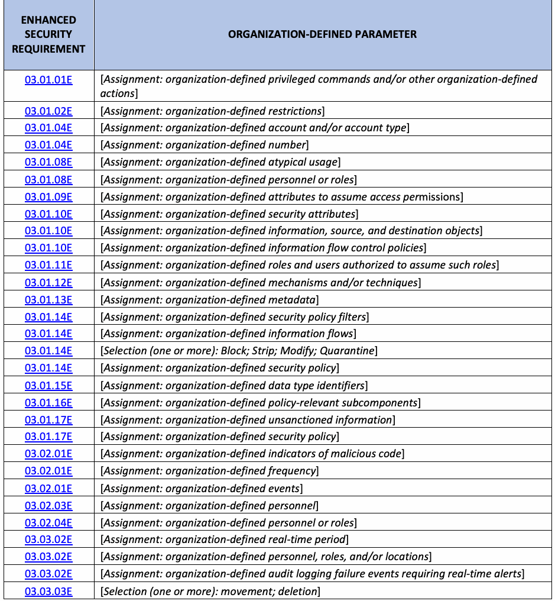
| 強化 | 組織定義パラメータ |
| セキュリティ | |
| 要件 | |
| 03.01.01E | [割当て: 組織が定義する特権コマンドおよび／またはその他の組織が定義するアクション] |
| 03.01.02E | [割当て: 組織が定義する制限] |
| 03.01.04E | [割当て: 組織が定義するアカウントおよび／またはアカウントタイプ] |
| 03.01.04E | [割当て: 組織が定義する数] |
| 03.01.08E | [割当て: 組織が定義する変則的な使用] |
| 03.01.08E | [割当て: 組織が定義する担当者または役割] |
| 03.01.09E | [割当て: アクセス許可を引き受けるための組織が定義する属性] |
| 03.01.10E | [割当て: 組織が定義するセキュリティ属性] |
| 03.01.10E | [割当て: 組織が定義する情報、送信元オブジェクト、および送信先オブジェクト] |
| 03.01.10E | [割当て: 組織が定義する情報フロー制御ポリシー] |
| 03.01.11E | [割当て: 組織が定義する役割、およびそのような役割を引き受ける権限を与えられたユーザー] |
| 03.01.12E | [割当て: 組織が定義するメカニズムおよび／または手法] |
| 03.01.13E | [割当て: 組織が定義するメタデータ] |
| 03.01.14E | [割当て: 組織が定義するセキュリティポリシーフィルター] |
| 03.01.14E | [割当て: 組織が定義する情報フロー] |
| 03.01.14E | [選択 (1つ以上): 遮断; 除去; 変更; 隔離] |
| 03.01.14E | [割当て: 組織が定義するセキュリティポリシー] |
| 03.01.15E | [割当て: 組織が定義するデータ型識別子] |
| 03.01.16E | [割当て: 組織が定義するポリシー関連サブコンポーネント] |
| 03.01.17E | [割当て: 組織が定義する承認されていない情報] |
| 03.01.17E | [割当て: 組織が定義するセキュリティポリシー] |
| 03.02.01E | [割当て: 組織が定義する悪意のあるコードの兆候] |
| 03.02.01E | [割当て: 組織が定義する頻度] |
| 03.02.01E | [割当て: 組織が定義するイベント] |
| 03.02.03E | [割当て: 組織が定義する担当者] |
| 03.02.04E | [割当て: 組織が定義する担当者または役割] |
| 03.03.02E | [割当て: 組織が定義するリアルタイム期間] |
| 03.03.02E | [割当て: 組織が定義する担当者、役割、および／または場所] |
| 03.03.02E | [割当て: リアルタイムのアラートを必要とする組織が定義する監査ログ記録失敗イベント] |
| 03.03.03E | [選択 (1つ以上): 移動; 削除] |
| ENHANCED | ORGANIZATION-DEFINED PARAMETER |
| SECURITY | |
| REQUIREMENT | |
| 03.03.03E | [Assignment: organization-defined audit information] |
| 03.03.04E | [Selection (one or more): vulnerability scanning information; performance data; system monitoring information; [Assignment: organization-defined data/information collected from other sources]] |
| 03.04.02E | [Assignment: organization-defined automated mechanisms] |
| 03.04.02E | [Selection (one or more): disable network access by such components; isolate the components; notify [Assignment: organization-defined personnel or roles]] |
| 03.04.03E | [Assignment: organization-defined automated mechanisms] |
| 03.04.04E | [Assignment: organization-defined automated mechanisms] |
| 03.04.05E | [Assignment: organization-defined system components and system-level information] |
| 03.04.06E | [Assignment: organization-defined number] |
| 03.05.01E | [Assignment: organization-defined devices and/or types of devices] |
| 03.05.02E | [Assignment: organization-defined password managers] |
| 03.05.02E | [Assignment: organization-defined controls] |
| 03.05.03E | [Assignment: organization-defined configuration management process] |
| 03.05.05E | [Assignment: organization-defined time period] |
| 03.05.07E | [Assignment: organization-defined identification and authentication policy] |
| 03.05.07E | [Assignment: organization-defined mechanisms] |
| 03.06.02E | [Assignment: organization-defined time period] |
| 03.06.03E | [Assignment: organization-defined environments or resources] |
| 03.06.04E | [Assignment: organization-defined automated mechanisms] |
| 03.08.01E | [Assignment: organization-defined system media containing CUI] |
| 03.08.02E | [Assignment: organization-defined system backup information] |
| 03.08.03E | [Assignment: organization-defined frequency] |
| 03.08.04E | [Assignment: organization-defined time period consistent with recovery time and recovery point objectives] |
| 03.09.03E | [Assignment: organization-defined frequency] |
| 03.09.03E | [Assignment: organization-defined frequency] |
| 03.09.04E | [Assignment: organization-defined citizenship requirements] |
| 03.10.02E | [Assignment: organization-defined types of system components] |
| 03.11.02E | [Assignment: organization-defined frequency] |
| 03.11.03E | [Assignment: organization-defined systems or system components] |
| 03.11.03E | [Assignment: organization-defined advanced automation and analytics capabilities] |
| 03.11.08E | [Assignment: organization-defined means] |
| 03.11.09E | [Assignment: organization-defined personnel or roles] |
| 03.11.09E | [Assignment: organization-defined sources] |
| 03.11.10E | [Assignment: organization-defined systems, system components, or system services] |
| 03.11.10E | [Assignment: organization-defined decision points in the system development life cycle] |
| 03.11.11E | [Assignment: organization-defined corrective actions] |
| 03.12.01E | [Assignment: organization-defined frequency] |
| 03.12.01E | [Assignment: organization-defined systems or system components] |
原本PDFの抜粋画像
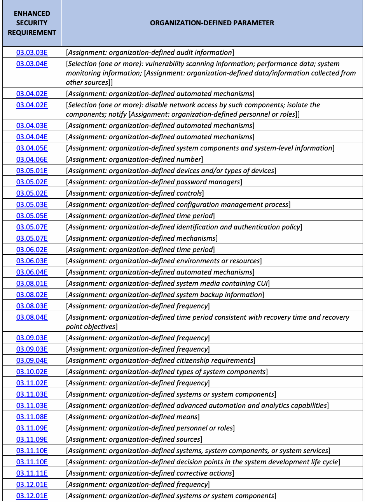
| 拡張 | 組織定義パラメータ |
| セキュリティ | |
| 要件 | |
| 03.03.03E | [Assignment: 組織が定義する監査情報] |
| 03.03.04E | [Selection (1つ以上): 脆弱性スキャン情報、パフォーマンスデータ、システム監視情報、[Assignment: 組織が定義する他の情報源から収集されたデータ／情報]] |
| 03.04.02E | [Assignment: 組織が定義する自動化メカニズム] |
| 03.04.02E | [Selection (1つ以上): 当該コンポーネントによるネットワークアクセスを無効化する、コンポーネントを隔離する、[Assignment: 組織が定義する担当者または役割]に通知する] |
| 03.04.03E | [Assignment: 組織が定義する自動化メカニズム] |
| 03.04.04E | [Assignment: 組織が定義する自動化メカニズム] |
| 03.04.05E | [Assignment: 組織が定義するシステムコンポーネントおよびシステムレベルの情報] |
| 03.04.06E | [Assignment: 組織が定義する数] |
| 03.05.01E | [Assignment: 組織が定義する機器および／または機器のタイプ] |
| 03.05.02E | [Assignment: 組織が定義するパスワードマネージャー] |
| 03.05.02E | [Assignment: 組織が定義する管理策] |
| 03.05.03E | [Assignment: 組織が定義する構成管理プロセス] |
| 03.05.05E | [Assignment: 組織が定義する期間] |
| 03.05.07E | [Assignment: 組織が定義する識別および認証ポリシー] |
| 03.05.07E | [Assignment: 組織が定義するメカニズム] |
| 03.06.02E | [Assignment: 組織が定義する期間] |
| 03.06.03E | [Assignment: 組織が定義する環境またはリソース] |
| 03.06.04E | [Assignment: 組織が定義する自動化メカニズム] |
| 03.08.01E | [Assignment: 組織が定義するCUIを含むシステムメディア] |
| 03.08.02E | [Assignment: 組織が定義するシステムバックアップ情報] |
| 03.08.03E | [Assignment: 組織が定義する頻度] |
| 03.08.04E | [Assignment: 目標復旧時間および目標復旧時点と整合する、組織が定義する期間] |
| 03.09.03E | [Assignment: 組織が定義する頻度] |
| 03.09.03E | [Assignment: 組織が定義する頻度] |
| 03.09.04E | [Assignment: 組織が定義する国籍要件] |
| 03.10.02E | [Assignment: 組織が定義するシステムコンポーネントのタイプ] |
| 03.11.02E | [Assignment: 組織が定義する頻度] |
| 03.11.03E | [Assignment: 組織が定義するシステムまたはシステムコンポーネント] |
| 03.11.03E | [Assignment: 組織が定義する高度な自動化およびアナリティクス機能] |
| 03.11.08E | [Assignment: 組織が定義する手段] |
| 03.11.09E | [Assignment: 組織が定義する担当者または役割] |
| 03.11.09E | [Assignment: 組織が定義する情報源] |
| 03.11.10E | [Assignment: 組織が定義するシステム、システムコンポーネント、またはシステムサービス] |
| 03.11.10E | [Assignment: システム開発ライフサイクルにおける組織が定義する決定ポイント] |
| 03.11.11E | [Assignment: 組織が定義する是正処置] |
| 03.12.01E | [Assignment: 組織が定義する頻度] |
| 03.12.01E | [Assignment: 組織が定義するシステムまたはシステムコンポーネント] |
| ENHANCED | ORGANIZATION-DEFINED PARAMETER |
| SECURITY | |
| REQUIREMENT | |
| 03.12.04E | [Assignment: organization-defined system components or classes of components] |
| 03.12.04E | [Assignment: organization-defined conditions] |
| 03.12.04E | [Assignment: organization-defined frequency] |
| 03.13.01E | [Assignment: organization-defined system components] |
| 03.13.02E | [Assignment: organization-defined techniques] |
| 03.13.03E | [Assignment: organization-defined concealment and misdirection techniques] |
| 03.13.04E | [Assignment: organization-defined system components] |
| 03.13.05E | [Assignment: organization-defined processing and/or storage] |
| 03.13.05E | [Selection (one): [Assignment: organization-defined time frequency]; at random time intervals] |
| 03.13.06E | [Assignment: organization-defined platform-independent applications] |
| 03.13.07E | [Assignment: organization-defined frequency] |
| 03.13.09E | [Assignment: organization-defined information security tools, mechanisms, and support components] |
| 03.13.11E | [Assignment: organization-defined system components] |
| 03.13.12E | [Selection (one): Protect against; Limit] |
| 03.13.12E | [Assignment: organization-defined types of denial-of-service events] |
| 03.13.12E | [Assignment: organization-defined safeguards by type of denial-of-service event] |
| 03.13.13E | [Selection (one): Physically; Logically] |
| 03.13.13E | [Assignment: organization-defined connection ports or input/output devices] |
| 03.13.13E | [Assignment: organization-defined systems or system components] |
| 03.13.14E | [Assignment: organization-defined system, system component, or location] |
| 03.13.15E | [Selection (one): physically; logically] |
| 03.13.15E | [Assignment: organization-defined critical system components and functions] |
| 03.13.16E | [Assignment: organization-defined system components] |
| 03.13.16E | [Selection: physical; logical] |
| 03.13.16E | [Assignment: organization-defined circumstances for physical or logical separation of components] |
| 03.14.01E | [Assignment: organization-defined software, firmware, and information] |
| 03.14.01E | [Assignment: organization-defined actions] |
| 03.14.04E | [Assignment: organization-defined trusted sources] |
| 03.14.05E | [Selection (one): Refresh [Assignment: organization-defined information] [Assignment: organization-defined frequency]; Generate [Assignment: organization-defined information] on demand] |
| 03.14.08E | [Assignment: organization-defined software, firmware, and information] |
| 03.14.08E | [Selection (one or more): at startup; at [Assignment: organization-defined transitional states or security-relevant events]; [Assignment: organization-defined frequency]] |
| 03.14.10E | [Assignment: organization-defined system components] |
| 03.14.10E | [Assignment: organization-defined mechanisms] |
| 03.14.11E | [Assignment: organization-defined security-relevant changes to the system] |
| 03.14.12E | [Assignment: organization-defined information inputs to the system] |
原本PDFの抜粋画像
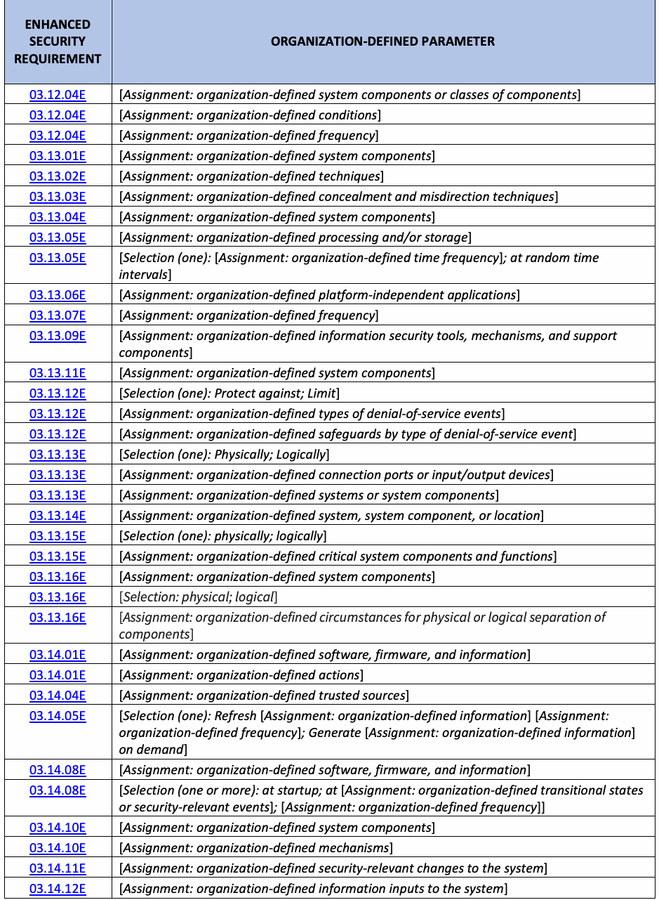
| 拡張 | 組織定義パラメータ |
| セキュリティ | |
| 要求事項 | |
| 03.12.04E | [割当て: 組織が定義するシステムコンポーネントまたはコンポーネントのクラス] |
| 03.12.04E | [割当て: 組織が定義する条件] |
| 03.12.04E | [割当て: 組織が定義する頻度] |
| 03.13.01E | [割当て: 組織が定義するシステムコンポーネント] |
| 03.13.02E | [割当て: 組織が定義する手法] |
| 03.13.03E | [割当て: 組織が定義する隠蔽および誤誘導の手法] |
| 03.13.04E | [割当て: 組織が定義するシステムコンポーネント] |
| 03.13.05E | [割当て: 組織が定義する処理および/またはストレージ] |
| 03.13.05E | [選択 (1つ): [割当て: 組織が定義する時間頻度]; ランダムな時間間隔で] |
| 03.13.06E | [割当て: 組織が定義するプラットフォームに依存しないアプリケーション] |
| 03.13.07E | [割当て: 組織が定義する頻度] |
| 03.13.09E | [割当て: 組織が定義する情報セキュリティツール、メカニズム、およびサポートコンポーネント] |
| 03.13.11E | [割当て: 組織が定義するシステムコンポーネント] |
| 03.13.12E | [選択 (1つ): 防御する; 制限する] |
| 03.13.12E | [割当て: 組織が定義するサービス運用妨害イベントのタイプ] |
| 03.13.12E | [割当て: サービス運用妨害イベントのタイプ別の組織が定義する保護手段] |
| 03.13.13E | [選択 (1つ): 物理的に; 論理的に] |
| 03.13.13E | [割当て: 組織が定義する接続ポートまたは入出力デバイス] |
| 03.13.13E | [割当て: 組織が定義するシステムまたはシステムコンポーネント] |
| 03.13.14E | [割当て: 組織が定義するシステム、システムコンポーネント、または場所] |
| 03.13.15E | [選択 (1つ): 物理的に; 論理的に] |
| 03.13.15E | [割当て: 組織が定義する重要なシステムコンポーネントおよび機能] |
| 03.13.16E | [割当て: 組織が定義するシステムコンポーネント] |
| 03.13.16E | [選択: 物理的; 論理的] |
| 03.13.16E | [割当て: 組織が定義するコンポーネントの物理的または論理的分離の状況] |
| 03.14.01E | [割当て: 組織が定義するソフトウェア、ファームウェア、および情報] |
| 03.14.01E | [割当て: 組織が定義するアクション] |
| 03.14.04E | [割当て: 組織が定義する信頼できる情報源] |
| 03.14.05E | [選択 (1つ): [割当て: 組織が定義する情報] を [割当て: 組織が定義する頻度] で更新する; オンデマンドで [割当て: 組織が定義する情報] を生成する] |
| 03.14.08E | [割当て: 組織が定義するソフトウェア、ファームウェア、および情報] |
| 03.14.08E | [選択 (1つ以上): 起動時; [割当て: 組織が定義する過渡状態またはセキュリティ関連イベント] 時; [割当て: 組織が定義する頻度]] |
| 03.14.10E | [割当て: 組織が定義するシステムコンポーネント] |
| 03.14.10E | [割当て: 組織が定義するメカニズム] |
| 03.14.11E | [割当て: 組織が定義するシステムに対するセキュリティ関連の変更] |
| 03.14.12E | [割当て: 組織が定義するシステムへの情報入力] |
| ENHANCED | ORGANIZATION-DEFINED PARAMETER |
| SECURITY | |
| REQUIREMENT | |
| 03.14.13E | [Assignment: organization-defined personnel or roles] |
| 03.14.14E | [Assignment: organization-defined safeguards] |
| 03.14.15E | [Assignment: organization-defined system components and services] |
| 03.14.15E | [Selection (one or more): upon end of session of use; at [Assignment: organization-defined frequency]] |
| 03.14.16E | [Assignment: organization-defined systems or system components] |
| 03.14.17E | [Assignment: organization-defined personnel or roles] |
| 03.14.17E | [Assignment: organization-defined compromise indicators] |
| 03.14.18E | [Assignment: organization-defined personnel or roles] |
| 03.14.18E | [Assignment: organization-defined automated mechanisms] |
| 03.14.18E | [Assignment: organization-defined activities that trigger alerts] |
| 03.15.01E | [Assignment: organization-defined frequency] |
| 03.15.02E | [Assignment: organization-defined security requirements] |
| 03.15.02E | [Assignment: organization-defined architectural layers and locations] |
| 03.15.03E | [Assignment: organization-defined safeguards] |
| 03.15.03E | [Assignment: organization-defined architectural layers and locations] |
| 03.16.01E | [Selection (one or more): design; modification; augmentation; reconfiguration] |
| 03.16.01E | [Assignment: organization-defined systems or system components] |
| 03.17.01E | [Selection (one or more): notification of supply chain compromises; results of assessments or audits; provision of [Assignment: organization-defined information]] |
| 03.17.02E | [Selection (one or more): at random; [Assignment: organization-defined frequency]; upon [Assignment: organization-defined indications of need for inspection]] |
| 03.17.02E | [Assignment: organization-defined systems or system components] |
| 03.17.03E | [Selection (one or more): source of counterfeit component; [Assignment: organization- defined external reporting organizations]; [Assignment: organization-defined personnel or roles]] |
| 03.17.04E | [Assignment: organization-defined systems, system components, and associated CUI] |
| 03.17.05E | [Assignment: organization-defined safeguards] |
| 03.17.05E | [Assignment: organization-defined analysis] |
原本PDFの抜粋画像
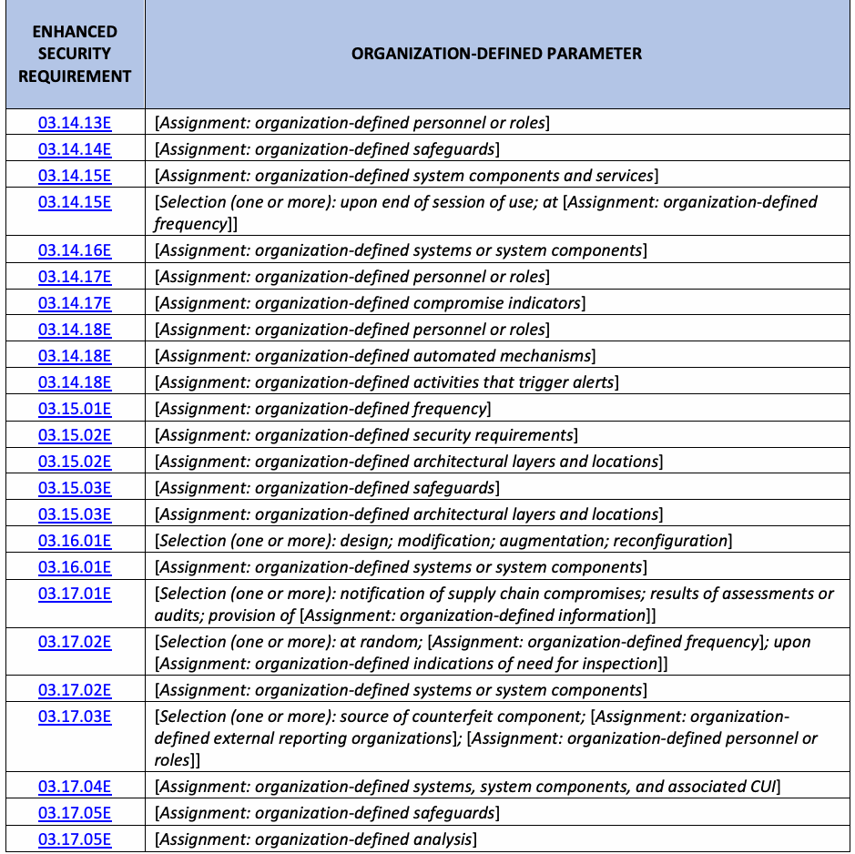
| 拡張 | 組織定義パラメータ |
| セキュリティ | |
| 要件 | |
| 03.14.13E | [割当て: 組織が定義する要員または役割] |
| 03.14.14E | [割当て: 組織が定義する保護策] |
| 03.14.15E | [割当て: 組織が定義するシステムコンポーネントおよびサービス] |
| 03.14.15E | [選択（1つ以上）: 利用セッションの終了時; [割当て: 組織が定義する頻度] で] |
| 03.14.16E | [割当て: 組織が定義するシステムまたはシステムコンポーネント] |
| 03.14.17E | [割当て: 組織が定義する要員または役割] |
| 03.14.17E | [割当て: 組織が定義する侵害指標] |
| 03.14.18E | [割当て: 組織が定義する要員または役割] |
| 03.14.18E | [割当て: 組織が定義する自動メカニズム] |
| 03.14.18E | [割当て: 組織が定義するアラートをトリガーするアクティビティ] |
| 03.15.01E | [割当て: 組織が定義する頻度] |
| 03.15.02E | [割当て: 組織が定義するセキュリティ要件] |
| 03.15.02E | [割当て: 組織が定義するアーキテクチャ層および場所] |
| 03.15.03E | [割当て: 組織が定義する保護策] |
| 03.15.03E | [割当て: 組織が定義するアーキテクチャ層および場所] |
| 03.16.01E | [選択（1つ以上）: 設計; 変更; 増強; 再構成] |
| 03.16.01E | [割当て: 組織が定義するシステムまたはシステムコンポーネント] |
| 03.17.01E | [選択（1つ以上）: サプライチェーン侵害の通知; アセスメントまたは監査の結果; [割当て: 組織が定義する情報] の提供] |
| 03.17.02E | [選択（1つ以上）: 無作為に; [割当て: 組織が定義する頻度] で; [割当て: 組織が定義する検査の必要性を示す兆候] の発生時] |
| 03.17.02E | [割当て: 組織が定義するシステムまたはシステムコンポーネント] |
| 03.17.03E | [選択（1つ以上）: 偽造コンポーネントの供給元; [割当て: 組織が定義する外部報告組織]; [割当て: 組織が定義する要員または役割]] |
| 03.17.04E | [割当て: 組織が定義するシステム、システムコンポーネント、および関連する CUI] |
| 03.17.05E | [割当て: 組織が定義する保護策] |
| 03.17.05E | [割当て: 組織が定義する分析] |
Appendix F. Change Log
付録 F. 変更履歴
未レビュー訳This publication incorporates the following changes from the original edition (February 2, 2021):
本刊行物には、初版（2021年2月2日）からの以下の変更が組み込まれている:
•Streamlined introductory information in Sec. 1 and Sec. 2 to improve clarity and understanding
•明確さと理解を向上させるため、第1節および第2節の導入情報を合理化した
•Increased the specificity of the enhanced security requirements to remove ambiguity, improve the effectiveness of implementation, and clarify the scope of assessments
•曖昧さを排除し、実施の効果を高め、アセスメントの範囲を明確にするため、拡張セキュリティ要件の具体性を高めた
•Grouped enhanced security requirements, where possible, to improve understanding and the efficiency of implementations and assessments
•理解ならびに実施およびアセスメントの効率を向上させるため、可能な限り拡張セキュリティ要件をグループ化した
•Removed outdated and redundant enhanced security requirements
•時代遅れの冗長な拡張セキュリティ要件を削除した
•Added new enhanced security requirements based on (1) the latest threat intelligence, (2) empirical data from cyber-attacks, and (3) the expansion of security objectives to include integrity and availability
•(1) 最新の脅威インテリジェンス、(2) サイバー攻撃からの実証データ、および (3) 完全性と可用性を含むセキュリティ目標の拡大に基づいて、新たな拡張セキュリティ要件を追加した
•Added titles to the enhanced security requirements
•拡張セキュリティ要件にタイトルを追加した
•Restructured and streamlined the security requirement discussion sections
•セキュリティ要件の解説（discussion）セクションを再構成および合理化した
•Revised the enhanced security requirements for consistency with the security control language in SP 800-53
•SP 800-53のセキュリティ管理策の文言との整合性を図るため、拡張セキュリティ要件を改訂
未レビュー訳•Revised the structure of the References, Acronyms, and Glossary sections for greater clarity and ease of use
•より明確で使いやすくするために、参考文献（References）、頭字語（Acronyms）、および用語集（Glossary）の各セクションの構造を改訂
未レビュー訳•Added Appendix C to summarize the enhanced security requirements
•拡張セキュリティ要件を要約するために付録Cを追加した
•Added Appendix E to list organization-defined parameters for the enhanced security requirements
•拡張セキュリティ要件の組織定義パラメータを一覧化するために付録Eを追加した
•Removed an appendix with a mapping table for security controls and protection strategies and transferred that information to the individual security requirements in Sec. 3
•セキュリティ管理策および保護戦略のマッピング表を含む付録を削除し、その情報をセクション3の個々のセキュリティ要件へ移行
未レビュー訳•Implemented a one-time “revision number” change for consistency with SP 800-171r3
•SP 800-171r3との整合性を図るため、1回限りの「改訂番号」の変更を実施
未レビュー訳Errata updates can include corrections, clarifications, or other minor changes in the publication that are either editorial or substantive in nature. Any potential updates to this document that are not yet published in an errata update or a formal revision, including additional issues and potential corrections, will be posted as they are identified. See the publication details for this report. The current release of this publication does not include any errata updates.
正誤表の更新には、本刊行物における訂正、明確化、またはその他の軽微な変更が含まれる場合があり、それらは編集上の性質のものも実質的な性質のものもある。正誤表の更新または正式な改訂としてまだ公開されていない、本文書に対する更新の可能性のあるもの（追加の課題や訂正の可能性を含む）は、特定され次第掲載される。本報告書の刊行物詳細を参照すること。本刊行物の現在のリリースには、正誤表の更新は含まれていない。